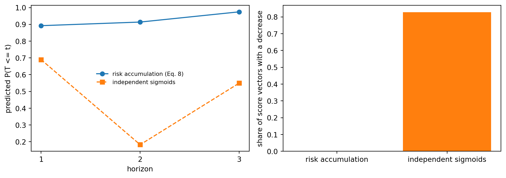
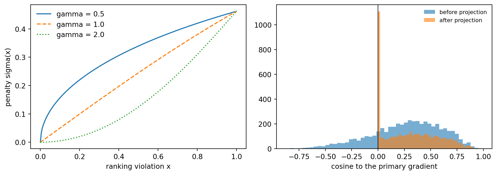
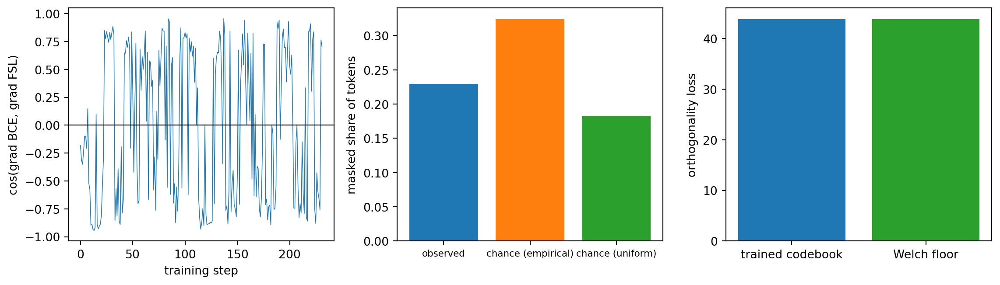

<!DOCTYPE html>
<html xmlns="http://www.w3.org/1999/xhtml" lang="en" xml:lang="en"><head>

<meta charset="utf-8">
<meta name="generator" content="quarto-1.7.33">

<meta name="viewport" content="width=device-width, initial-scale=1.0, user-scalable=yes">

<meta name="description" content="A rigorous, implementation-first reference for modern artificial intelligence: foundations, machine learning, deep learning, large language models, retrieval-augmented generation, and AI agents, taught with mathematics and runnable Python.">

<title>228&nbsp; Dynamic Financial Risk Prediction with Multiview Data – AI in Action</title>
<style>
code{white-space: pre-wrap;}
span.smallcaps{font-variant: small-caps;}
div.columns{display: flex; gap: min(4vw, 1.5em);}
div.column{flex: auto; overflow-x: auto;}
div.hanging-indent{margin-left: 1.5em; text-indent: -1.5em;}
ul.task-list{list-style: none;}
ul.task-list li input[type="checkbox"] {
  width: 0.8em;
  margin: 0 0.8em 0.2em -1em; /* quarto-specific, see https://github.com/quarto-dev/quarto-cli/issues/4556 */ 
  vertical-align: middle;
}
/* CSS for syntax highlighting */
html { -webkit-text-size-adjust: 100%; }
pre > code.sourceCode { white-space: pre; position: relative; }
pre > code.sourceCode > span { display: inline-block; line-height: 1.25; }
pre > code.sourceCode > span:empty { height: 1.2em; }
.sourceCode { overflow: visible; }
code.sourceCode > span { color: inherit; text-decoration: inherit; }
div.sourceCode { margin: 1em 0; }
pre.sourceCode { margin: 0; }
@media screen {
div.sourceCode { overflow: auto; }
}
@media print {
pre > code.sourceCode { white-space: pre-wrap; }
pre > code.sourceCode > span { text-indent: -5em; padding-left: 5em; }
}
pre.numberSource code
  { counter-reset: source-line 0; }
pre.numberSource code > span
  { position: relative; left: -4em; counter-increment: source-line; }
pre.numberSource code > span > a:first-child::before
  { content: counter(source-line);
    position: relative; left: -1em; text-align: right; vertical-align: baseline;
    border: none; display: inline-block;
    -webkit-touch-callout: none; -webkit-user-select: none;
    -khtml-user-select: none; -moz-user-select: none;
    -ms-user-select: none; user-select: none;
    padding: 0 4px; width: 4em;
  }
pre.numberSource { margin-left: 3em;  padding-left: 4px; }
div.sourceCode
  {   }
@media screen {
pre > code.sourceCode > span > a:first-child::before { text-decoration: underline; }
}
</style>


<script src="https://cdnjs.cloudflare.com/ajax/libs/jquery/3.5.1/jquery.min.js" integrity="sha512-bLT0Qm9VnAYZDflyKcBaQ2gg0hSYNQrJ8RilYldYQ1FxQYoCLtUjuuRuZo+fjqhx/qtq/1itJ0C2ejDxltZVFg==" crossorigin="anonymous"></script><script src="site_libs/quarto-nav/quarto-nav.js"></script>
<script src="site_libs/quarto-nav/headroom.min.js"></script>
<script src="site_libs/clipboard/clipboard.min.js"></script>
<script src="site_libs/quarto-search/autocomplete.umd.js"></script>
<script src="site_libs/quarto-search/fuse.min.js"></script>
<script src="site_libs/quarto-search/quarto-search.js"></script>
<meta name="quarto:offset" content="./">
<link href="./469-graphrag-foundations.html" rel="next">
<link href="./1091-llm-economics-overview.html" rel="prev">
<script src="site_libs/quarto-html/quarto.js" type="module"></script>
<script src="site_libs/quarto-html/tabsets/tabsets.js" type="module"></script>
<script src="site_libs/quarto-html/popper.min.js"></script>
<script src="site_libs/quarto-html/tippy.umd.min.js"></script>
<script src="site_libs/quarto-html/anchor.min.js"></script>
<link href="site_libs/quarto-html/tippy.css" rel="stylesheet">
<link href="site_libs/quarto-html/tippy.css" rel="stylesheet" class="quarto-color-scheme-extra">
<script src="site_libs/bootstrap/bootstrap.min.js"></script>
<link href="site_libs/bootstrap/bootstrap-icons.css" rel="stylesheet">
<link href="site_libs/bootstrap/bootstrap-7106a8c49e27c3c486d4c2ae868a7a37.min.css" rel="stylesheet" append-hash="true" class="quarto-color-scheme" id="quarto-bootstrap" data-mode="light">
<link href="site_libs/bootstrap/bootstrap-dark-dbe0edf796ac076a2a618c7cbf6c69fb.min.css" rel="stylesheet" append-hash="true" class="quarto-color-scheme quarto-color-alternate" id="quarto-bootstrap" data-mode="light">
<link href="site_libs/bootstrap/bootstrap-7106a8c49e27c3c486d4c2ae868a7a37.min.css" rel="stylesheet" append-hash="true" class="quarto-color-scheme-extra" id="quarto-bootstrap" data-mode="light">
<script id="quarto-search-options" type="application/json">{
  "location": "sidebar",
  "copy-button": false,
  "collapse-after": 3,
  "panel-placement": "start",
  "type": "textbox",
  "limit": 50,
  "keyboard-shortcut": [
    "f",
    "/",
    "s"
  ],
  "show-item-context": false,
  "language": {
    "search-no-results-text": "No results",
    "search-matching-documents-text": "matching documents",
    "search-copy-link-title": "Copy link to search",
    "search-hide-matches-text": "Hide additional matches",
    "search-more-match-text": "more match in this document",
    "search-more-matches-text": "more matches in this document",
    "search-clear-button-title": "Clear",
    "search-text-placeholder": "",
    "search-detached-cancel-button-title": "Cancel",
    "search-submit-button-title": "Submit",
    "search-label": "Search"
  }
}</script>
<!-- Google tag (gtag.js) -->

<script async="" src="https://www.googletagmanager.com/gtag/js?id=G-D35761524L"></script>

<script>

  window.dataLayer = window.dataLayer || [];

  function gtag(){dataLayer.push(arguments);}

  gtag('js', new Date());

  gtag('config', 'G-D35761524L');

</script>

<!-- =====================================================================

     SEO: schema.org structured data (JSON-LD) + search-engine verification

     Injected into the <head> of every page via format.html include-in-header.

     Helps search engines treat the book as an authoritative, citable work

     and can enable rich results (book, author, sitelinks search box).

     ===================================================================== -->


<!-- The book itself -->

<script type="application/ld+json">

{

  "@context": "https://schema.org",

  "@type": "Book",

  "name": "AI in Action: A Reference for Artificial Intelligence",

  "url": "https://mikenguyen13.github.io/ai_in_action/",

  "inLanguage": "en",

  "bookFormat": "https://schema.org/EBook",

  "genre": "Artificial Intelligence",

  "description": "A rigorous, implementation-first reference for modern artificial intelligence: foundations, machine learning, deep learning, large language models, retrieval-augmented generation, and AI agents, taught with mathematics and runnable Python.",

  "keywords": "artificial intelligence, machine learning, deep learning, large language models, LLM, transformers, retrieval-augmented generation, RAG, AI agents, Model Context Protocol, MCP, A2A, Python",

  "author": {

    "@type": "Person",

    "name": "Mike Nguyen",

    "url": "https://mikenguyen13.github.io/ai_in_action/about.html"

  },

  "publisher": {

    "@type": "Person",

    "name": "Mike Nguyen"

  }

}

</script>


<!-- The website (enables a sitelinks search box in Google results) -->

<script type="application/ld+json">

{

  "@context": "https://schema.org",

  "@type": "WebSite",

  "name": "AI in Action",

  "url": "https://mikenguyen13.github.io/ai_in_action/",

  "potentialAction": {

    "@type": "SearchAction",

    "target": {

      "@type": "EntryPoint",

      "urlTemplate": "https://mikenguyen13.github.io/ai_in_action/search.html?q={search_term_string}"

    },

    "query-input": "required name=search_term_string"

  }

}

</script>


<!-- Search-engine ownership verification.

     1. Google:  https://search.google.com/search-console  → add the property,

        choose "HTML tag", copy the content value into YOUR_GOOGLE_CODE below,

        then uncomment the line.

     2. Bing:    https://www.bing.com/webmasters  → add site, "HTML Meta Tag",

        copy the content into YOUR_BING_CODE, then uncomment. -->

<!-- <meta name="google-site-verification" content="YOUR_GOOGLE_CODE"> -->

<!-- <meta name="msvalidate.01" content="YOUR_BING_CODE"> -->


<!-- Favicon (injected here because the book favicon option was not emitting a link) -->

<link rel="icon" type="image/svg+xml" href="favicon.svg">

<link rel="alternate icon" type="image/png" href="favicon.ico">

<link rel="apple-touch-icon" href="favicon.ico">

<script src="site_libs/quarto-diagram/mermaid.min.js"></script>
<script src="site_libs/quarto-diagram/mermaid-init.js"></script>
<link href="site_libs/quarto-diagram/mermaid.css" rel="stylesheet">
<script src="https://cdnjs.cloudflare.com/ajax/libs/require.js/2.3.6/require.min.js" integrity="sha512-c3Nl8+7g4LMSTdrm621y7kf9v3SDPnhxLNhcjFJbKECVnmZHTdo+IRO05sNLTH/D3vA6u1X32ehoLC7WFVdheg==" crossorigin="anonymous"></script>


<script type="application/javascript">define('jquery', [],function() {return window.jQuery;})</script>


  <script src="https://cdnjs.cloudflare.com/polyfill/v3/polyfill.min.js?features=es6"></script>
  <script src="https://cdn.jsdelivr.net/npm/mathjax@3/es5/tex-chtml-full.js" type="text/javascript"></script>

<script type="text/javascript">
const typesetMath = (el) => {
  if (window.MathJax) {
    // MathJax Typeset
    window.MathJax.typeset([el]);
  } else if (window.katex) {
    // KaTeX Render
    var mathElements = el.getElementsByClassName("math");
    var macros = [];
    for (var i = 0; i < mathElements.length; i++) {
      var texText = mathElements[i].firstChild;
      if (mathElements[i].tagName == "SPAN") {
        window.katex.render(texText.data, mathElements[i], {
          displayMode: mathElements[i].classList.contains('display'),
          throwOnError: false,
          macros: macros,
          fleqn: false
        });
      }
    }
  }
}
window.Quarto = {
  typesetMath
};
</script>

<meta property="og:title" content="228&nbsp; Dynamic Financial Risk Prediction with Multiview Data – AI in Action">
<meta property="og:description" content="A rigorous, implementation-first reference for modern artificial intelligence: foundations, machine learning, deep learning, large language models, retrieval-augmented generation, and AI agents, taught with mathematics and runnable Python.">
<meta property="og:image" content="https://mikenguyen13.github.io/ai_in_action/1058-dynamic-financial-risk-prediction_files/figure-html/fig-1058-raf-output-2.png">
<meta property="og:site_name" content="AI in Action">
<meta property="og:image:height" content="671">
<meta property="og:image:width" content="1900">
<meta name="twitter:title" content="228&nbsp; Dynamic Financial Risk Prediction with Multiview Data – AI in Action">
<meta name="twitter:description" content="A rigorous, implementation-first reference for modern artificial intelligence: foundations, machine learning, deep learning, large language models, retrieval-augmented generation, and AI agents, taught with mathematics and runnable Python.">
<meta name="twitter:image" content="https://mikenguyen13.github.io/ai_in_action/1058-dynamic-financial-risk-prediction_files/figure-html/fig-1058-raf-output-2.png">
<meta name="twitter:image-height" content="671">
<meta name="twitter:image-width" content="1900">
<meta name="twitter:card" content="summary_large_image">
</head>

<body class="nav-sidebar floating quarto-light"><script id="quarto-html-before-body" type="application/javascript">
    const toggleBodyColorMode = (bsSheetEl) => {
      const mode = bsSheetEl.getAttribute("data-mode");
      const bodyEl = window.document.querySelector("body");
      if (mode === "dark") {
        bodyEl.classList.add("quarto-dark");
        bodyEl.classList.remove("quarto-light");
      } else {
        bodyEl.classList.add("quarto-light");
        bodyEl.classList.remove("quarto-dark");
      }
    }
    const toggleBodyColorPrimary = () => {
      const bsSheetEl = window.document.querySelector("link#quarto-bootstrap:not([rel=disabled-stylesheet])");
      if (bsSheetEl) {
        toggleBodyColorMode(bsSheetEl);
      }
    }
    const setColorSchemeToggle = (alternate) => {
      const toggles = window.document.querySelectorAll('.quarto-color-scheme-toggle');
      for (let i=0; i < toggles.length; i++) {
        const toggle = toggles[i];
        if (toggle) {
          if (alternate) {
            toggle.classList.add("alternate");
          } else {
            toggle.classList.remove("alternate");
          }
        }
      }
    };
    const toggleColorMode = (alternate) => {
      // Switch the stylesheets
      const primaryStylesheets = window.document.querySelectorAll('link.quarto-color-scheme:not(.quarto-color-alternate)');
      const alternateStylesheets = window.document.querySelectorAll('link.quarto-color-scheme.quarto-color-alternate');
      manageTransitions('#quarto-margin-sidebar .nav-link', false);
      if (alternate) {
        // note: dark is layered on light, we don't disable primary!
        enableStylesheet(alternateStylesheets);
        for (const sheetNode of alternateStylesheets) {
          if (sheetNode.id === "quarto-bootstrap") {
            toggleBodyColorMode(sheetNode);
          }
        }
      } else {
        disableStylesheet(alternateStylesheets);
        enableStylesheet(primaryStylesheets)
        toggleBodyColorPrimary();
      }
      manageTransitions('#quarto-margin-sidebar .nav-link', true);
      // Switch the toggles
      setColorSchemeToggle(alternate)
      // Hack to workaround the fact that safari doesn't
      // properly recolor the scrollbar when toggling (#1455)
      if (navigator.userAgent.indexOf('Safari') > 0 && navigator.userAgent.indexOf('Chrome') == -1) {
        manageTransitions("body", false);
        window.scrollTo(0, 1);
        setTimeout(() => {
          window.scrollTo(0, 0);
          manageTransitions("body", true);
        }, 40);
      }
    }
    const disableStylesheet = (stylesheets) => {
      for (let i=0; i < stylesheets.length; i++) {
        const stylesheet = stylesheets[i];
        stylesheet.rel = 'disabled-stylesheet';
      }
    }
    const enableStylesheet = (stylesheets) => {
      for (let i=0; i < stylesheets.length; i++) {
        const stylesheet = stylesheets[i];
        if(stylesheet.rel !== 'stylesheet') { // for Chrome, which will still FOUC without this check
          stylesheet.rel = 'stylesheet';
        }
      }
    }
    const manageTransitions = (selector, allowTransitions) => {
      const els = window.document.querySelectorAll(selector);
      for (let i=0; i < els.length; i++) {
        const el = els[i];
        if (allowTransitions) {
          el.classList.remove('notransition');
        } else {
          el.classList.add('notransition');
        }
      }
    }
    const isFileUrl = () => {
      return window.location.protocol === 'file:';
    }
    const hasAlternateSentinel = () => {
      let styleSentinel = getColorSchemeSentinel();
      if (styleSentinel !== null) {
        return styleSentinel === "alternate";
      } else {
        return false;
      }
    }
    const setStyleSentinel = (alternate) => {
      const value = alternate ? "alternate" : "default";
      if (!isFileUrl()) {
        window.localStorage.setItem("quarto-color-scheme", value);
      } else {
        localAlternateSentinel = value;
      }
    }
    const getColorSchemeSentinel = () => {
      if (!isFileUrl()) {
        const storageValue = window.localStorage.getItem("quarto-color-scheme");
        return storageValue != null ? storageValue : localAlternateSentinel;
      } else {
        return localAlternateSentinel;
      }
    }
    const toggleGiscusIfUsed = (isAlternate, darkModeDefault) => {
      const baseTheme = document.querySelector('#giscus-base-theme')?.value ?? 'light';
      const alternateTheme = document.querySelector('#giscus-alt-theme')?.value ?? 'dark';
      let newTheme = '';
      if(authorPrefersDark) {
        newTheme = isAlternate ? baseTheme : alternateTheme;
      } else {
        newTheme = isAlternate ? alternateTheme : baseTheme;
      }
      const changeGiscusTheme = () => {
        // From: https://github.com/giscus/giscus/issues/336
        const sendMessage = (message) => {
          const iframe = document.querySelector('iframe.giscus-frame');
          if (!iframe) return;
          iframe.contentWindow.postMessage({ giscus: message }, 'https://giscus.app');
        }
        sendMessage({
          setConfig: {
            theme: newTheme
          }
        });
      }
      const isGiscussLoaded = window.document.querySelector('iframe.giscus-frame') !== null;
      if (isGiscussLoaded) {
        changeGiscusTheme();
      }
    };
    const authorPrefersDark = false;
    const darkModeDefault = authorPrefersDark;
      document.querySelector('link#quarto-text-highlighting-styles.quarto-color-scheme-extra').rel = 'disabled-stylesheet';
      document.querySelector('link#quarto-bootstrap.quarto-color-scheme-extra').rel = 'disabled-stylesheet';
    let localAlternateSentinel = darkModeDefault ? 'alternate' : 'default';
    // Dark / light mode switch
    window.quartoToggleColorScheme = () => {
      // Read the current dark / light value
      let toAlternate = !hasAlternateSentinel();
      toggleColorMode(toAlternate);
      setStyleSentinel(toAlternate);
      toggleGiscusIfUsed(toAlternate, darkModeDefault);
      window.dispatchEvent(new Event('resize'));
    };
    // Switch to dark mode if need be
    if (hasAlternateSentinel()) {
      toggleColorMode(true);
    } else {
      toggleColorMode(false);
    }
  </script>

<div id="quarto-search-results"></div>
  <header id="quarto-header" class="headroom fixed-top">
  <nav class="quarto-secondary-nav">
    <div class="container-fluid d-flex">
      <button type="button" class="quarto-btn-toggle btn" data-bs-toggle="collapse" role="button" data-bs-target=".quarto-sidebar-collapse-item" aria-controls="quarto-sidebar" aria-expanded="false" aria-label="Toggle sidebar navigation" onclick="if (window.quartoToggleHeadroom) { window.quartoToggleHeadroom(); }">
        <i class="bi bi-layout-text-sidebar-reverse"></i>
      </button>
        <nav class="quarto-page-breadcrumbs" aria-label="breadcrumb"><ol class="breadcrumb"><li class="breadcrumb-item"><a href="./1091-llm-economics-overview.html">Part X: Economics, Business, and Finance</a></li><li class="breadcrumb-item"><a href="./1058-dynamic-financial-risk-prediction.html"><span class="chapter-number">228</span>&nbsp; <span class="chapter-title">Dynamic Financial Risk Prediction with Multiview Data</span></a></li></ol></nav>
        <a class="flex-grow-1" role="navigation" data-bs-toggle="collapse" data-bs-target=".quarto-sidebar-collapse-item" aria-controls="quarto-sidebar" aria-expanded="false" aria-label="Toggle sidebar navigation" onclick="if (window.quartoToggleHeadroom) { window.quartoToggleHeadroom(); }">      
        </a>
      <button type="button" class="btn quarto-search-button" aria-label="Search" onclick="window.quartoOpenSearch();">
        <i class="bi bi-search"></i>
      </button>
    </div>
  </nav>
</header>
<!-- content -->
<div id="quarto-content" class="quarto-container page-columns page-rows-contents page-layout-article">
<!-- sidebar -->
  <nav id="quarto-sidebar" class="sidebar collapse collapse-horizontal quarto-sidebar-collapse-item sidebar-navigation floating overflow-auto">
    <div class="pt-lg-2 mt-2 text-left sidebar-header">
    <div class="sidebar-title mb-0 py-0">
      <a href="./">AI in Action</a> 
        <div class="sidebar-tools-main">
    <a href="https://github.com/mikenguyen13/ai_in_action" title="Source Code" class="quarto-navigation-tool px-1" aria-label="Source Code"><i class="bi bi-github"></i></a>
  <a href="" class="quarto-color-scheme-toggle quarto-navigation-tool  px-1" onclick="window.quartoToggleColorScheme(); return false;" title="Toggle dark mode"><i class="bi"></i></a>
</div>
    </div>
      </div>
        <div class="mt-2 flex-shrink-0 align-items-center">
        <div class="sidebar-search">
        <div id="quarto-search" class="" title="Search"></div>
        </div>
        </div>
    <div class="sidebar-menu-container"> 
    <ul class="list-unstyled mt-1">
        <li class="sidebar-item">
  <div class="sidebar-item-container"> 
  <a href="./index.html" class="sidebar-item-text sidebar-link">
 <span class="menu-text">Preface</span></a>
  </div>
</li>
        <li class="sidebar-item sidebar-item-section">
      <div class="sidebar-item-container"> 
            <a class="sidebar-item-text sidebar-link text-start collapsed" data-bs-toggle="collapse" data-bs-target="#quarto-sidebar-section-1" role="navigation" aria-expanded="false">
 <span class="menu-text">Part I: Foundations of Intelligence</span></a>
          <a class="sidebar-item-toggle text-start collapsed" data-bs-toggle="collapse" data-bs-target="#quarto-sidebar-section-1" role="navigation" aria-expanded="false" aria-label="Toggle section">
            <i class="bi bi-chevron-right ms-2"></i>
          </a> 
      </div>
      <ul id="quarto-sidebar-section-1" class="collapse list-unstyled sidebar-section depth1 ">  
          <li class="sidebar-item">
  <div class="sidebar-item-container"> 
  <a href="./001-intro.html" class="sidebar-item-text sidebar-link">
 <span class="menu-text"><span class="chapter-number">1</span>&nbsp; <span class="chapter-title">Introduction</span></span></a>
  </div>
</li>
          <li class="sidebar-item">
  <div class="sidebar-item-container"> 
  <a href="./002-history-of-ai.html" class="sidebar-item-text sidebar-link">
 <span class="menu-text"><span class="chapter-number">2</span>&nbsp; <span class="chapter-title">The History of Artificial Intelligence</span></span></a>
  </div>
</li>
          <li class="sidebar-item">
  <div class="sidebar-item-container"> 
  <a href="./003-philosophy-of-machine-intelligence.html" class="sidebar-item-text sidebar-link">
 <span class="menu-text"><span class="chapter-number">3</span>&nbsp; <span class="chapter-title">The Philosophy of Machine Intelligence</span></span></a>
  </div>
</li>
          <li class="sidebar-item">
  <div class="sidebar-item-container"> 
  <a href="./004-biological-vs-artificial-intelligence.html" class="sidebar-item-text sidebar-link">
 <span class="menu-text"><span class="chapter-number">4</span>&nbsp; <span class="chapter-title">Biological versus Artificial Intelligence</span></span></a>
  </div>
</li>
          <li class="sidebar-item">
  <div class="sidebar-item-container"> 
  <a href="./005-types-of-learning.html" class="sidebar-item-text sidebar-link">
 <span class="menu-text"><span class="chapter-number">5</span>&nbsp; <span class="chapter-title">Types of Learning</span></span></a>
  </div>
</li>
          <li class="sidebar-item">
  <div class="sidebar-item-container"> 
  <a href="./006-ai-development-lifecycle.html" class="sidebar-item-text sidebar-link">
 <span class="menu-text"><span class="chapter-number">6</span>&nbsp; <span class="chapter-title">The AI Development Lifecycle</span></span></a>
  </div>
</li>
          <li class="sidebar-item">
  <div class="sidebar-item-container"> 
  <a href="./007-project-management.html" class="sidebar-item-text sidebar-link">
 <span class="menu-text"><span class="chapter-number">7</span>&nbsp; <span class="chapter-title">Project Management</span></span></a>
  </div>
</li>
          <li class="sidebar-item">
  <div class="sidebar-item-container"> 
  <a href="./008-computational-thinking.html" class="sidebar-item-text sidebar-link">
 <span class="menu-text"><span class="chapter-number">8</span>&nbsp; <span class="chapter-title">Computational Thinking for AI</span></span></a>
  </div>
</li>
          <li class="sidebar-item">
  <div class="sidebar-item-container"> 
  <a href="./009-scientific-method-in-ai.html" class="sidebar-item-text sidebar-link">
 <span class="menu-text"><span class="chapter-number">9</span>&nbsp; <span class="chapter-title">The Scientific Method in AI Research</span></span></a>
  </div>
</li>
          <li class="sidebar-item">
  <div class="sidebar-item-container"> 
  <a href="./010-reading-ai-research.html" class="sidebar-item-text sidebar-link">
 <span class="menu-text"><span class="chapter-number">10</span>&nbsp; <span class="chapter-title">How to Read AI Research</span></span></a>
  </div>
</li>
          <li class="sidebar-item">
  <div class="sidebar-item-container"> 
  <a href="./011-ai-technology-stack.html" class="sidebar-item-text sidebar-link">
 <span class="menu-text"><span class="chapter-number">11</span>&nbsp; <span class="chapter-title">The AI Technology Stack</span></span></a>
  </div>
</li>
          <li class="sidebar-item">
  <div class="sidebar-item-container"> 
  <a href="./012-hardware-for-ai.html" class="sidebar-item-text sidebar-link">
 <span class="menu-text"><span class="chapter-number">12</span>&nbsp; <span class="chapter-title">Hardware for AI</span></span></a>
  </div>
</li>
          <li class="sidebar-item">
  <div class="sidebar-item-container"> 
  <a href="./013-software-ecosystems.html" class="sidebar-item-text sidebar-link">
 <span class="menu-text"><span class="chapter-number">13</span>&nbsp; <span class="chapter-title">AI Software Ecosystems</span></span></a>
  </div>
</li>
          <li class="sidebar-item">
  <div class="sidebar-item-container"> 
  <a href="./014-data-centric-ai-paradigm.html" class="sidebar-item-text sidebar-link">
 <span class="menu-text"><span class="chapter-number">14</span>&nbsp; <span class="chapter-title">The Data-Centric AI Paradigm</span></span></a>
  </div>
</li>
          <li class="sidebar-item">
  <div class="sidebar-item-container"> 
  <a href="./015-preview-road-ahead.html" class="sidebar-item-text sidebar-link">
 <span class="menu-text"><span class="chapter-number">15</span>&nbsp; <span class="chapter-title">A Preview of the Road Ahead</span></span></a>
  </div>
</li>
          <li class="sidebar-item">
  <div class="sidebar-item-container"> 
  <a href="./data_annotation.html" class="sidebar-item-text sidebar-link">
 <span class="menu-text"><span class="chapter-number">16</span>&nbsp; <span class="chapter-title">Guide to Data Annotation</span></span></a>
  </div>
</li>
          <li class="sidebar-item">
  <div class="sidebar-item-container"> 
  <a href="./temporal-strategies.html" class="sidebar-item-text sidebar-link">
 <span class="menu-text"><span class="chapter-number">17</span>&nbsp; <span class="chapter-title">Temporal Evaluation Strategies</span></span></a>
  </div>
</li>
          <li class="sidebar-item">
  <div class="sidebar-item-container"> 
  <a href="./representations_embeddings.html" class="sidebar-item-text sidebar-link">
 <span class="menu-text"><span class="chapter-number">18</span>&nbsp; <span class="chapter-title">Representations and embeddings</span></span></a>
  </div>
</li>
          <li class="sidebar-item">
  <div class="sidebar-item-container"> 
  <a href="./graph-embeddings-clickstream-forecasting.html" class="sidebar-item-text sidebar-link">
 <span class="menu-text"><span class="chapter-number">19</span>&nbsp; <span class="chapter-title">Graph Embeddings for Clickstream Sales Forecasting</span></span></a>
  </div>
</li>
          <li class="sidebar-item">
  <div class="sidebar-item-container"> 
  <a href="./migration-flows-deep-learning.html" class="sidebar-item-text sidebar-link">
 <span class="menu-text"><span class="chapter-number">20</span>&nbsp; <span class="chapter-title">Learning Four Decades of Migration: A Stock-Flow Model Inside a Neural Network</span></span></a>
  </div>
</li>
          <li class="sidebar-item">
  <div class="sidebar-item-container"> 
  <a href="./slow_feature_analysis_chapter.html" class="sidebar-item-text sidebar-link">
 <span class="menu-text"><span class="chapter-number">21</span>&nbsp; <span class="chapter-title">Slow Feature Analysis</span></span></a>
  </div>
</li>
      </ul>
  </li>
        <li class="sidebar-item sidebar-item-section">
      <div class="sidebar-item-container"> 
            <a class="sidebar-item-text sidebar-link text-start collapsed" data-bs-toggle="collapse" data-bs-target="#quarto-sidebar-section-2" role="navigation" aria-expanded="false">
 <span class="menu-text">Part II: Mathematical Foundations</span></a>
          <a class="sidebar-item-toggle text-start collapsed" data-bs-toggle="collapse" data-bs-target="#quarto-sidebar-section-2" role="navigation" aria-expanded="false" aria-label="Toggle section">
            <i class="bi bi-chevron-right ms-2"></i>
          </a> 
      </div>
      <ul id="quarto-sidebar-section-2" class="collapse list-unstyled sidebar-section depth1 ">  
          <li class="sidebar-item">
  <div class="sidebar-item-container"> 
  <a href="./016-why-math-matters.html" class="sidebar-item-text sidebar-link">
 <span class="menu-text"><span class="chapter-number">22</span>&nbsp; <span class="chapter-title">Mathematical foundations of machine learning</span></span></a>
  </div>
</li>
          <li class="sidebar-item">
  <div class="sidebar-item-container"> 
  <a href="./017-sets-functions-logic.html" class="sidebar-item-text sidebar-link">
 <span class="menu-text"><span class="chapter-number">23</span>&nbsp; <span class="chapter-title">Sets, Functions, and Logic</span></span></a>
  </div>
</li>
          <li class="sidebar-item">
  <div class="sidebar-item-container"> 
  <a href="./018-linear-algebra-vectors-spaces.html" class="sidebar-item-text sidebar-link">
 <span class="menu-text"><span class="chapter-number">24</span>&nbsp; <span class="chapter-title">Linear Algebra: Vectors and Spaces</span></span></a>
  </div>
</li>
          <li class="sidebar-item">
  <div class="sidebar-item-container"> 
  <a href="./019-linear-algebra-matrices-operations.html" class="sidebar-item-text sidebar-link">
 <span class="menu-text"><span class="chapter-number">25</span>&nbsp; <span class="chapter-title">Linear Algebra: Matrices and Operations</span></span></a>
  </div>
</li>
          <li class="sidebar-item">
  <div class="sidebar-item-container"> 
  <a href="./020-linear-algebra-eigenvalues-decompositions.html" class="sidebar-item-text sidebar-link">
 <span class="menu-text"><span class="chapter-number">26</span>&nbsp; <span class="chapter-title">Eigenvalues, Eigenvectors, and Matrix Decompositions</span></span></a>
  </div>
</li>
          <li class="sidebar-item">
  <div class="sidebar-item-container"> 
  <a href="./021-linear-algebra-special-matrices.html" class="sidebar-item-text sidebar-link">
 <span class="menu-text"><span class="chapter-number">27</span>&nbsp; <span class="chapter-title">Special Matrices</span></span></a>
  </div>
</li>
          <li class="sidebar-item">
  <div class="sidebar-item-container"> 
  <a href="./022-calculus-limits-derivatives.html" class="sidebar-item-text sidebar-link">
 <span class="menu-text"><span class="chapter-number">28</span>&nbsp; <span class="chapter-title">Calculus: Limits and Derivatives</span></span></a>
  </div>
</li>
          <li class="sidebar-item">
  <div class="sidebar-item-container"> 
  <a href="./023-calculus-gradients-partial-derivatives.html" class="sidebar-item-text sidebar-link">
 <span class="menu-text"><span class="chapter-number">29</span>&nbsp; <span class="chapter-title">Gradients and Partial Derivatives</span></span></a>
  </div>
</li>
          <li class="sidebar-item">
  <div class="sidebar-item-container"> 
  <a href="./024-calculus-chain-rule-backpropagation.html" class="sidebar-item-text sidebar-link">
 <span class="menu-text"><span class="chapter-number">30</span>&nbsp; <span class="chapter-title">The Chain Rule and Backpropagation</span></span></a>
  </div>
</li>
          <li class="sidebar-item">
  <div class="sidebar-item-container"> 
  <a href="./025-calculus-integration-expectations.html" class="sidebar-item-text sidebar-link">
 <span class="menu-text"><span class="chapter-number">31</span>&nbsp; <span class="chapter-title">Integration and Expectations</span></span></a>
  </div>
</li>
          <li class="sidebar-item">
  <div class="sidebar-item-container"> 
  <a href="./026-multivariable-calculus.html" class="sidebar-item-text sidebar-link">
 <span class="menu-text"><span class="chapter-number">32</span>&nbsp; <span class="chapter-title">Multivariable Calculus for Machine Learning</span></span></a>
  </div>
</li>
          <li class="sidebar-item">
  <div class="sidebar-item-container"> 
  <a href="./027-probability-foundations-axioms.html" class="sidebar-item-text sidebar-link">
 <span class="menu-text"><span class="chapter-number">33</span>&nbsp; <span class="chapter-title">Foundations of Probability</span></span></a>
  </div>
</li>
          <li class="sidebar-item">
  <div class="sidebar-item-container"> 
  <a href="./028-probability-random-variables-distributions.html" class="sidebar-item-text sidebar-link">
 <span class="menu-text"><span class="chapter-number">34</span>&nbsp; <span class="chapter-title">Random Variables and Distributions</span></span></a>
  </div>
</li>
          <li class="sidebar-item">
  <div class="sidebar-item-container"> 
  <a href="./029-probability-common-distributions.html" class="sidebar-item-text sidebar-link">
 <span class="menu-text"><span class="chapter-number">35</span>&nbsp; <span class="chapter-title">Common Probability Distributions</span></span></a>
  </div>
</li>
          <li class="sidebar-item">
  <div class="sidebar-item-container"> 
  <a href="./030-probability-joint-marginal-conditional.html" class="sidebar-item-text sidebar-link">
 <span class="menu-text"><span class="chapter-number">36</span>&nbsp; <span class="chapter-title">Joint, Marginal, and Conditional Distributions</span></span></a>
  </div>
</li>
          <li class="sidebar-item">
  <div class="sidebar-item-container"> 
  <a href="./031-probability-bayes-theorem-inference.html" class="sidebar-item-text sidebar-link">
 <span class="menu-text"><span class="chapter-number">37</span>&nbsp; <span class="chapter-title">Bayes Theorem and Bayesian Inference</span></span></a>
  </div>
</li>
          <li class="sidebar-item">
  <div class="sidebar-item-container"> 
  <a href="./032-statistics-descriptive.html" class="sidebar-item-text sidebar-link">
 <span class="menu-text"><span class="chapter-number">38</span>&nbsp; <span class="chapter-title">Descriptive Statistics</span></span></a>
  </div>
</li>
          <li class="sidebar-item">
  <div class="sidebar-item-container"> 
  <a href="./033-statistics-estimation-confidence.html" class="sidebar-item-text sidebar-link">
 <span class="menu-text"><span class="chapter-number">39</span>&nbsp; <span class="chapter-title">Estimation and Confidence</span></span></a>
  </div>
</li>
          <li class="sidebar-item">
  <div class="sidebar-item-container"> 
  <a href="./034-statistics-hypothesis-testing.html" class="sidebar-item-text sidebar-link">
 <span class="menu-text"><span class="chapter-number">40</span>&nbsp; <span class="chapter-title">Hypothesis Testing</span></span></a>
  </div>
</li>
          <li class="sidebar-item">
  <div class="sidebar-item-container"> 
  <a href="./035-statistics-regression-analysis.html" class="sidebar-item-text sidebar-link">
 <span class="menu-text"><span class="chapter-number">41</span>&nbsp; <span class="chapter-title">Regression Analysis</span></span></a>
  </div>
</li>
          <li class="sidebar-item">
  <div class="sidebar-item-container"> 
  <a href="./036-information-theory-entropy.html" class="sidebar-item-text sidebar-link">
 <span class="menu-text"><span class="chapter-number">42</span>&nbsp; <span class="chapter-title">Information Theory and Entropy</span></span></a>
  </div>
</li>
          <li class="sidebar-item">
  <div class="sidebar-item-container"> 
  <a href="./037-information-theory-kl-divergence-mutual-information.html" class="sidebar-item-text sidebar-link">
 <span class="menu-text"><span class="chapter-number">43</span>&nbsp; <span class="chapter-title">KL Divergence and Mutual Information</span></span></a>
  </div>
</li>
          <li class="sidebar-item">
  <div class="sidebar-item-container"> 
  <a href="./038-information-theory-cross-entropy-loss.html" class="sidebar-item-text sidebar-link">
 <span class="menu-text"><span class="chapter-number">44</span>&nbsp; <span class="chapter-title">Cross-Entropy and the Cross-Entropy Loss</span></span></a>
  </div>
</li>
          <li class="sidebar-item">
  <div class="sidebar-item-container"> 
  <a href="./039-optimization-fundamentals-landscapes.html" class="sidebar-item-text sidebar-link">
 <span class="menu-text"><span class="chapter-number">45</span>&nbsp; <span class="chapter-title">Optimization and numerical methods</span></span></a>
  </div>
</li>
          <li class="sidebar-item">
  <div class="sidebar-item-container"> 
  <a href="./double_descent.html" class="sidebar-item-text sidebar-link">
 <span class="menu-text"><span class="chapter-number">46</span>&nbsp; <span class="chapter-title">Double Descent</span></span></a>
  </div>
</li>
          <li class="sidebar-item">
  <div class="sidebar-item-container"> 
  <a href="./040-optimization-gradient-descent-variants.html" class="sidebar-item-text sidebar-link">
 <span class="menu-text"><span class="chapter-number">47</span>&nbsp; <span class="chapter-title">Gradient Descent and Its Variants</span></span></a>
  </div>
</li>
          <li class="sidebar-item">
  <div class="sidebar-item-container"> 
  <a href="./041-optimization-convex.html" class="sidebar-item-text sidebar-link">
 <span class="menu-text"><span class="chapter-number">48</span>&nbsp; <span class="chapter-title">Convex Optimization</span></span></a>
  </div>
</li>
          <li class="sidebar-item">
  <div class="sidebar-item-container"> 
  <a href="./042-optimization-constrained.html" class="sidebar-item-text sidebar-link">
 <span class="menu-text"><span class="chapter-number">49</span>&nbsp; <span class="chapter-title">Constrained Optimization</span></span></a>
  </div>
</li>
          <li class="sidebar-item">
  <div class="sidebar-item-container"> 
  <a href="./043-optimization-stochastic-methods.html" class="sidebar-item-text sidebar-link">
 <span class="menu-text"><span class="chapter-number">50</span>&nbsp; <span class="chapter-title">Stochastic Optimization Methods</span></span></a>
  </div>
</li>
          <li class="sidebar-item">
  <div class="sidebar-item-container"> 
  <a href="./044-numerical-methods-stability.html" class="sidebar-item-text sidebar-link">
 <span class="menu-text"><span class="chapter-number">51</span>&nbsp; <span class="chapter-title">Numerical Methods and Stability</span></span></a>
  </div>
</li>
          <li class="sidebar-item">
  <div class="sidebar-item-container"> 
  <a href="./045-mathematical-notation-reference.html" class="sidebar-item-text sidebar-link">
 <span class="menu-text"><span class="chapter-number">52</span>&nbsp; <span class="chapter-title">Mathematical Notation Reference</span></span></a>
  </div>
</li>
      </ul>
  </li>
        <li class="sidebar-item sidebar-item-section">
      <div class="sidebar-item-container"> 
            <a class="sidebar-item-text sidebar-link text-start collapsed" data-bs-toggle="collapse" data-bs-target="#quarto-sidebar-section-3" role="navigation" aria-expanded="false">
 <span class="menu-text">Part III: Data Foundations</span></a>
          <a class="sidebar-item-toggle text-start collapsed" data-bs-toggle="collapse" data-bs-target="#quarto-sidebar-section-3" role="navigation" aria-expanded="false" aria-label="Toggle section">
            <i class="bi bi-chevron-right ms-2"></i>
          </a> 
      </div>
      <ul id="quarto-sidebar-section-3" class="collapse list-unstyled sidebar-section depth1 ">  
          <li class="sidebar-item">
  <div class="sidebar-item-container"> 
  <a href="./046-primacy-of-data.html" class="sidebar-item-text sidebar-link">
 <span class="menu-text"><span class="chapter-number">53</span>&nbsp; <span class="chapter-title">The Primacy of Data</span></span></a>
  </div>
</li>
          <li class="sidebar-item">
  <div class="sidebar-item-container"> 
  <a href="./047-data-types-structures.html" class="sidebar-item-text sidebar-link">
 <span class="menu-text"><span class="chapter-number">54</span>&nbsp; <span class="chapter-title">Data Types and Structures</span></span></a>
  </div>
</li>
          <li class="sidebar-item">
  <div class="sidebar-item-container"> 
  <a href="./048-data-collection-strategies.html" class="sidebar-item-text sidebar-link">
 <span class="menu-text"><span class="chapter-number">55</span>&nbsp; <span class="chapter-title">Data Collection Strategies</span></span></a>
  </div>
</li>
          <li class="sidebar-item">
  <div class="sidebar-item-container"> 
  <a href="./049-web-scraping-data-acquisition.html" class="sidebar-item-text sidebar-link">
 <span class="menu-text"><span class="chapter-number">56</span>&nbsp; <span class="chapter-title">Web Scraping and Data Acquisition</span></span></a>
  </div>
</li>
          <li class="sidebar-item">
  <div class="sidebar-item-container"> 
  <a href="./050-apis-data-integration.html" class="sidebar-item-text sidebar-link">
 <span class="menu-text"><span class="chapter-number">57</span>&nbsp; <span class="chapter-title">APIs and Data Integration</span></span></a>
  </div>
</li>
          <li class="sidebar-item">
  <div class="sidebar-item-container"> 
  <a href="./051-data-quality-assessment.html" class="sidebar-item-text sidebar-link">
 <span class="menu-text"><span class="chapter-number">58</span>&nbsp; <span class="chapter-title">Data Quality Assessment</span></span></a>
  </div>
</li>
          <li class="sidebar-item">
  <div class="sidebar-item-container"> 
  <a href="./missing_data.html" class="sidebar-item-text sidebar-link">
 <span class="menu-text"><span class="chapter-number">59</span>&nbsp; <span class="chapter-title">Missing Data</span></span></a>
  </div>
</li>
          <li class="sidebar-item">
  <div class="sidebar-item-container"> 
  <a href="./053-outlier-detection-treatment.html" class="sidebar-item-text sidebar-link">
 <span class="menu-text"><span class="chapter-number">60</span>&nbsp; <span class="chapter-title">Outlier Detection and Treatment</span></span></a>
  </div>
</li>
          <li class="sidebar-item">
  <div class="sidebar-item-container"> 
  <a href="./054-data-cleaning-pipelines.html" class="sidebar-item-text sidebar-link">
 <span class="menu-text"><span class="chapter-number">61</span>&nbsp; <span class="chapter-title">Data Cleaning Pipelines</span></span></a>
  </div>
</li>
          <li class="sidebar-item">
  <div class="sidebar-item-container"> 
  <a href="./055-data-validation-testing.html" class="sidebar-item-text sidebar-link">
 <span class="menu-text"><span class="chapter-number">62</span>&nbsp; <span class="chapter-title">Data Validation and Testing</span></span></a>
  </div>
</li>
          <li class="sidebar-item">
  <div class="sidebar-item-container"> 
  <a href="./056-exploratory-data-analysis.html" class="sidebar-item-text sidebar-link">
 <span class="menu-text"><span class="chapter-number">63</span>&nbsp; <span class="chapter-title">Exploratory Data Analysis</span></span></a>
  </div>
</li>
          <li class="sidebar-item">
  <div class="sidebar-item-container"> 
  <a href="./057-data-visualization-principles.html" class="sidebar-item-text sidebar-link">
 <span class="menu-text"><span class="chapter-number">64</span>&nbsp; <span class="chapter-title">Data Visualization Principles</span></span></a>
  </div>
</li>
          <li class="sidebar-item">
  <div class="sidebar-item-container"> 
  <a href="./058-statistical-graphics-for-ai.html" class="sidebar-item-text sidebar-link">
 <span class="menu-text"><span class="chapter-number">65</span>&nbsp; <span class="chapter-title">Statistical Graphics for AI</span></span></a>
  </div>
</li>
          <li class="sidebar-item">
  <div class="sidebar-item-container"> 
  <a href="./059-interactive-visualization-tools.html" class="sidebar-item-text sidebar-link">
 <span class="menu-text"><span class="chapter-number">66</span>&nbsp; <span class="chapter-title">Interactive Visualization Tools</span></span></a>
  </div>
</li>
          <li class="sidebar-item">
  <div class="sidebar-item-container"> 
  <a href="./060-feature-engineering-principles.html" class="sidebar-item-text sidebar-link">
 <span class="menu-text"><span class="chapter-number">67</span>&nbsp; <span class="chapter-title">Feature Engineering Principles</span></span></a>
  </div>
</li>
          <li class="sidebar-item">
  <div class="sidebar-item-container"> 
  <a href="./061-feature-engineering-numerical.html" class="sidebar-item-text sidebar-link">
 <span class="menu-text"><span class="chapter-number">68</span>&nbsp; <span class="chapter-title">Feature Engineering for Numerical Data</span></span></a>
  </div>
</li>
          <li class="sidebar-item">
  <div class="sidebar-item-container"> 
  <a href="./062-feature-engineering-categorical.html" class="sidebar-item-text sidebar-link">
 <span class="menu-text"><span class="chapter-number">69</span>&nbsp; <span class="chapter-title">Feature Engineering for Categorical Data</span></span></a>
  </div>
</li>
          <li class="sidebar-item">
  <div class="sidebar-item-container"> 
  <a href="./063-feature-engineering-text.html" class="sidebar-item-text sidebar-link">
 <span class="menu-text"><span class="chapter-number">70</span>&nbsp; <span class="chapter-title">Feature Engineering for Text</span></span></a>
  </div>
</li>
          <li class="sidebar-item">
  <div class="sidebar-item-container"> 
  <a href="./064-feature-engineering-temporal.html" class="sidebar-item-text sidebar-link">
 <span class="menu-text"><span class="chapter-number">71</span>&nbsp; <span class="chapter-title">Feature Engineering for Temporal Data</span></span></a>
  </div>
</li>
          <li class="sidebar-item">
  <div class="sidebar-item-container"> 
  <a href="./065-feature-engineering-geospatial.html" class="sidebar-item-text sidebar-link">
 <span class="menu-text"><span class="chapter-number">72</span>&nbsp; <span class="chapter-title">Feature Engineering for Geospatial Data</span></span></a>
  </div>
</li>
          <li class="sidebar-item">
  <div class="sidebar-item-container"> 
  <a href="./066-feature-selection-methods.html" class="sidebar-item-text sidebar-link">
 <span class="menu-text"><span class="chapter-number">73</span>&nbsp; <span class="chapter-title">Feature Selection Methods</span></span></a>
  </div>
</li>
          <li class="sidebar-item">
  <div class="sidebar-item-container"> 
  <a href="./067-dimensionality-reduction-pca.html" class="sidebar-item-text sidebar-link">
 <span class="menu-text"><span class="chapter-number">74</span>&nbsp; <span class="chapter-title">Dimensionality Reduction with PCA</span></span></a>
  </div>
</li>
          <li class="sidebar-item">
  <div class="sidebar-item-container"> 
  <a href="./068-dimensionality-reduction-tsne-umap.html" class="sidebar-item-text sidebar-link">
 <span class="menu-text"><span class="chapter-number">75</span>&nbsp; <span class="chapter-title">Nonlinear Dimensionality Reduction with t-SNE and UMAP</span></span></a>
  </div>
</li>
          <li class="sidebar-item">
  <div class="sidebar-item-container"> 
  <a href="./069-data-augmentation-principles.html" class="sidebar-item-text sidebar-link">
 <span class="menu-text"><span class="chapter-number">76</span>&nbsp; <span class="chapter-title">Data Augmentation Principles</span></span></a>
  </div>
</li>
          <li class="sidebar-item">
  <div class="sidebar-item-container"> 
  <a href="./070-data-augmentation-images.html" class="sidebar-item-text sidebar-link">
 <span class="menu-text"><span class="chapter-number">77</span>&nbsp; <span class="chapter-title">Image Data Augmentation</span></span></a>
  </div>
</li>
          <li class="sidebar-item">
  <div class="sidebar-item-container"> 
  <a href="./071-data-augmentation-text.html" class="sidebar-item-text sidebar-link">
 <span class="menu-text"><span class="chapter-number">78</span>&nbsp; <span class="chapter-title">Text Data Augmentation</span></span></a>
  </div>
</li>
          <li class="sidebar-item">
  <div class="sidebar-item-container"> 
  <a href="./072-synthetic-data-generation.html" class="sidebar-item-text sidebar-link">
 <span class="menu-text"><span class="chapter-number">79</span>&nbsp; <span class="chapter-title">Synthetic Data Generation</span></span></a>
  </div>
</li>
          <li class="sidebar-item">
  <div class="sidebar-item-container"> 
  <a href="./073-data-versioning-lineage.html" class="sidebar-item-text sidebar-link">
 <span class="menu-text"><span class="chapter-number">80</span>&nbsp; <span class="chapter-title">Data Versioning and Lineage</span></span></a>
  </div>
</li>
          <li class="sidebar-item">
  <div class="sidebar-item-container"> 
  <a href="./074-data-documentation-datasheets.html" class="sidebar-item-text sidebar-link">
 <span class="menu-text"><span class="chapter-number">81</span>&nbsp; <span class="chapter-title">Data Documentation: Datasheets, Data Cards, and Data Statements</span></span></a>
  </div>
</li>
          <li class="sidebar-item">
  <div class="sidebar-item-container"> 
  <a href="./075-data-ethics-governance.html" class="sidebar-item-text sidebar-link">
 <span class="menu-text"><span class="chapter-number">82</span>&nbsp; <span class="chapter-title">Data Ethics and Governance</span></span></a>
  </div>
</li>
      </ul>
  </li>
        <li class="sidebar-item sidebar-item-section">
      <div class="sidebar-item-container"> 
            <a class="sidebar-item-text sidebar-link text-start collapsed" data-bs-toggle="collapse" data-bs-target="#quarto-sidebar-section-4" role="navigation" aria-expanded="false">
 <span class="menu-text">Part IV: Classical Machine Learning</span></a>
          <a class="sidebar-item-toggle text-start collapsed" data-bs-toggle="collapse" data-bs-target="#quarto-sidebar-section-4" role="navigation" aria-expanded="false" aria-label="Toggle section">
            <i class="bi bi-chevron-right ms-2"></i>
          </a> 
      </div>
      <ul id="quarto-sidebar-section-4" class="collapse list-unstyled sidebar-section depth1 ">  
          <li class="sidebar-item">
  <div class="sidebar-item-container"> 
  <a href="./076-classical-ml-paradigm.html" class="sidebar-item-text sidebar-link">
 <span class="menu-text"><span class="chapter-number">83</span>&nbsp; <span class="chapter-title">The Classical Machine Learning Paradigm</span></span></a>
  </div>
</li>
          <li class="sidebar-item">
  <div class="sidebar-item-container"> 
  <a href="./077-bias-variance-tradeoff.html" class="sidebar-item-text sidebar-link">
 <span class="menu-text"><span class="chapter-number">84</span>&nbsp; <span class="chapter-title">The Bias-Variance Tradeoff</span></span></a>
  </div>
</li>
          <li class="sidebar-item">
  <div class="sidebar-item-container"> 
  <a href="./078-train-validation-test-sets.html" class="sidebar-item-text sidebar-link">
 <span class="menu-text"><span class="chapter-number">85</span>&nbsp; <span class="chapter-title">Train, Validation, and Test Sets</span></span></a>
  </div>
</li>
          <li class="sidebar-item">
  <div class="sidebar-item-container"> 
  <a href="./079-cross-validation-techniques.html" class="sidebar-item-text sidebar-link">
 <span class="menu-text"><span class="chapter-number">86</span>&nbsp; <span class="chapter-title">Cross-Validation Techniques</span></span></a>
  </div>
</li>
          <li class="sidebar-item">
  <div class="sidebar-item-container"> 
  <a href="./080-linear-regression-foundations.html" class="sidebar-item-text sidebar-link">
 <span class="menu-text"><span class="chapter-number">87</span>&nbsp; <span class="chapter-title">Linear Regression Foundations</span></span></a>
  </div>
</li>
          <li class="sidebar-item">
  <div class="sidebar-item-container"> 
  <a href="./081-linear-regression-assumptions-diagnostics.html" class="sidebar-item-text sidebar-link">
 <span class="menu-text"><span class="chapter-number">88</span>&nbsp; <span class="chapter-title">Linear Regression Assumptions and Diagnostics</span></span></a>
  </div>
</li>
          <li class="sidebar-item">
  <div class="sidebar-item-container"> 
  <a href="./082-linear-regression-extensions.html" class="sidebar-item-text sidebar-link">
 <span class="menu-text"><span class="chapter-number">89</span>&nbsp; <span class="chapter-title">Linear Regression Extensions</span></span></a>
  </div>
</li>
          <li class="sidebar-item">
  <div class="sidebar-item-container"> 
  <a href="./083-polynomial-regression.html" class="sidebar-item-text sidebar-link">
 <span class="menu-text"><span class="chapter-number">90</span>&nbsp; <span class="chapter-title">Polynomial and Basis-Function Regression</span></span></a>
  </div>
</li>
          <li class="sidebar-item">
  <div class="sidebar-item-container"> 
  <a href="./084-regularization-ridge.html" class="sidebar-item-text sidebar-link">
 <span class="menu-text"><span class="chapter-number">91</span>&nbsp; <span class="chapter-title">Ridge Regression and L2 Regularization</span></span></a>
  </div>
</li>
          <li class="sidebar-item">
  <div class="sidebar-item-container"> 
  <a href="./085-regularization-lasso-sparsity.html" class="sidebar-item-text sidebar-link">
 <span class="menu-text"><span class="chapter-number">92</span>&nbsp; <span class="chapter-title">Lasso and Sparsity: L1 Regularization</span></span></a>
  </div>
</li>
          <li class="sidebar-item">
  <div class="sidebar-item-container"> 
  <a href="./086-regularization-elastic-net.html" class="sidebar-item-text sidebar-link">
 <span class="menu-text"><span class="chapter-number">93</span>&nbsp; <span class="chapter-title">Elastic Net Regularization</span></span></a>
  </div>
</li>
          <li class="sidebar-item">
  <div class="sidebar-item-container"> 
  <a href="./087-logistic-regression-binary.html" class="sidebar-item-text sidebar-link">
 <span class="menu-text"><span class="chapter-number">94</span>&nbsp; <span class="chapter-title">Binary Logistic Regression</span></span></a>
  </div>
</li>
          <li class="sidebar-item">
  <div class="sidebar-item-container"> 
  <a href="./088-logistic-regression-multiclass.html" class="sidebar-item-text sidebar-link">
 <span class="menu-text"><span class="chapter-number">95</span>&nbsp; <span class="chapter-title">Multiclass Logistic Regression</span></span></a>
  </div>
</li>
          <li class="sidebar-item">
  <div class="sidebar-item-container"> 
  <a href="./089-softmax-regression.html" class="sidebar-item-text sidebar-link">
 <span class="menu-text"><span class="chapter-number">96</span>&nbsp; <span class="chapter-title">Softmax Regression</span></span></a>
  </div>
</li>
          <li class="sidebar-item">
  <div class="sidebar-item-container"> 
  <a href="./090-generalized-linear-models.html" class="sidebar-item-text sidebar-link">
 <span class="menu-text"><span class="chapter-number">97</span>&nbsp; <span class="chapter-title">Generalized Linear Models</span></span></a>
  </div>
</li>
          <li class="sidebar-item">
  <div class="sidebar-item-container"> 
  <a href="./091-naive-bayes-theory.html" class="sidebar-item-text sidebar-link">
 <span class="menu-text"><span class="chapter-number">98</span>&nbsp; <span class="chapter-title">Naive Bayes Theory</span></span></a>
  </div>
</li>
          <li class="sidebar-item">
  <div class="sidebar-item-container"> 
  <a href="./092-naive-bayes-variants-applications.html" class="sidebar-item-text sidebar-link">
 <span class="menu-text"><span class="chapter-number">99</span>&nbsp; <span class="chapter-title">Naive Bayes Variants and Applications</span></span></a>
  </div>
</li>
          <li class="sidebar-item">
  <div class="sidebar-item-container"> 
  <a href="./093-discriminant-analysis.html" class="sidebar-item-text sidebar-link">
 <span class="menu-text"><span class="chapter-number">100</span>&nbsp; <span class="chapter-title">Discriminant Analysis</span></span></a>
  </div>
</li>
          <li class="sidebar-item">
  <div class="sidebar-item-container"> 
  <a href="./094-k-nearest-neighbors.html" class="sidebar-item-text sidebar-link">
 <span class="menu-text"><span class="chapter-number">101</span>&nbsp; <span class="chapter-title">K-Nearest Neighbors</span></span></a>
  </div>
</li>
          <li class="sidebar-item">
  <div class="sidebar-item-container"> 
  <a href="./095-instance-based-learning.html" class="sidebar-item-text sidebar-link">
 <span class="menu-text"><span class="chapter-number">102</span>&nbsp; <span class="chapter-title">Instance-Based Learning</span></span></a>
  </div>
</li>
          <li class="sidebar-item">
  <div class="sidebar-item-container"> 
  <a href="./096-decision-trees-fundamentals.html" class="sidebar-item-text sidebar-link">
 <span class="menu-text"><span class="chapter-number">103</span>&nbsp; <span class="chapter-title">Decision Trees Fundamentals</span></span></a>
  </div>
</li>
          <li class="sidebar-item">
  <div class="sidebar-item-container"> 
  <a href="./097-decision-trees-splitting-criteria.html" class="sidebar-item-text sidebar-link">
 <span class="menu-text"><span class="chapter-number">104</span>&nbsp; <span class="chapter-title">Decision Tree Splitting Criteria</span></span></a>
  </div>
</li>
          <li class="sidebar-item">
  <div class="sidebar-item-container"> 
  <a href="./098-decision-trees-pruning-regularization.html" class="sidebar-item-text sidebar-link">
 <span class="menu-text"><span class="chapter-number">105</span>&nbsp; <span class="chapter-title">Decision Tree Pruning and Regularization</span></span></a>
  </div>
</li>
          <li class="sidebar-item">
  <div class="sidebar-item-container"> 
  <a href="./099-regression-trees.html" class="sidebar-item-text sidebar-link">
 <span class="menu-text"><span class="chapter-number">106</span>&nbsp; <span class="chapter-title">Regression Trees</span></span></a>
  </div>
</li>
          <li class="sidebar-item">
  <div class="sidebar-item-container"> 
  <a href="./100-ensemble-methods-principles.html" class="sidebar-item-text sidebar-link">
 <span class="menu-text"><span class="chapter-number">107</span>&nbsp; <span class="chapter-title">Ensemble Methods Principles</span></span></a>
  </div>
</li>
          <li class="sidebar-item">
  <div class="sidebar-item-container"> 
  <a href="./101-bagging-bootstrap-aggregation.html" class="sidebar-item-text sidebar-link">
 <span class="menu-text"><span class="chapter-number">108</span>&nbsp; <span class="chapter-title">Bagging: Bootstrap Aggregation</span></span></a>
  </div>
</li>
          <li class="sidebar-item">
  <div class="sidebar-item-container"> 
  <a href="./102-random-forests.html" class="sidebar-item-text sidebar-link">
 <span class="menu-text"><span class="chapter-number">109</span>&nbsp; <span class="chapter-title">Random Forests</span></span></a>
  </div>
</li>
          <li class="sidebar-item">
  <div class="sidebar-item-container"> 
  <a href="./103-random-forest-variants.html" class="sidebar-item-text sidebar-link">
 <span class="menu-text"><span class="chapter-number">110</span>&nbsp; <span class="chapter-title">Random Forest Variants</span></span></a>
  </div>
</li>
          <li class="sidebar-item">
  <div class="sidebar-item-container"> 
  <a href="./104-boosting-foundations.html" class="sidebar-item-text sidebar-link">
 <span class="menu-text"><span class="chapter-number">111</span>&nbsp; <span class="chapter-title">Boosting Foundations</span></span></a>
  </div>
</li>
          <li class="sidebar-item">
  <div class="sidebar-item-container"> 
  <a href="./105-adaboost.html" class="sidebar-item-text sidebar-link">
 <span class="menu-text"><span class="chapter-number">112</span>&nbsp; <span class="chapter-title">AdaBoost: Reweighting, Exponential Loss, and the Mystery of Resistance to Overfitting</span></span></a>
  </div>
</li>
          <li class="sidebar-item">
  <div class="sidebar-item-container"> 
  <a href="./106-gradient-boosting.html" class="sidebar-item-text sidebar-link">
 <span class="menu-text"><span class="chapter-number">113</span>&nbsp; <span class="chapter-title">Gradient Boosting</span></span></a>
  </div>
</li>
          <li class="sidebar-item">
  <div class="sidebar-item-container"> 
  <a href="./107-xgboost-theory-practice.html" class="sidebar-item-text sidebar-link">
 <span class="menu-text"><span class="chapter-number">114</span>&nbsp; <span class="chapter-title">XGBoost Theory and Practice</span></span></a>
  </div>
</li>
          <li class="sidebar-item">
  <div class="sidebar-item-container"> 
  <a href="./108-lightgbm.html" class="sidebar-item-text sidebar-link">
 <span class="menu-text"><span class="chapter-number">115</span>&nbsp; <span class="chapter-title">LightGBM: Fast Gradient Boosting at Scale</span></span></a>
  </div>
</li>
          <li class="sidebar-item">
  <div class="sidebar-item-container"> 
  <a href="./109-catboost.html" class="sidebar-item-text sidebar-link">
 <span class="menu-text"><span class="chapter-number">116</span>&nbsp; <span class="chapter-title">CatBoost: Ordered Boosting and Categorical Features Done Right</span></span></a>
  </div>
</li>
          <li class="sidebar-item">
  <div class="sidebar-item-container"> 
  <a href="./110-stacking-blending.html" class="sidebar-item-text sidebar-link">
 <span class="menu-text"><span class="chapter-number">117</span>&nbsp; <span class="chapter-title">Stacking and Blending</span></span></a>
  </div>
</li>
          <li class="sidebar-item">
  <div class="sidebar-item-container"> 
  <a href="./111-svm-linear.html" class="sidebar-item-text sidebar-link">
 <span class="menu-text"><span class="chapter-number">118</span>&nbsp; <span class="chapter-title">Linear Support Vector Machines</span></span></a>
  </div>
</li>
          <li class="sidebar-item">
  <div class="sidebar-item-container"> 
  <a href="./112-svm-kernel-methods.html" class="sidebar-item-text sidebar-link">
 <span class="menu-text"><span class="chapter-number">119</span>&nbsp; <span class="chapter-title">Kernel SVMs and Kernel Methods</span></span></a>
  </div>
</li>
          <li class="sidebar-item">
  <div class="sidebar-item-container"> 
  <a href="./113-svm-regression.html" class="sidebar-item-text sidebar-link">
 <span class="menu-text"><span class="chapter-number">120</span>&nbsp; <span class="chapter-title">Support Vector Regression</span></span></a>
  </div>
</li>
          <li class="sidebar-item">
  <div class="sidebar-item-container"> 
  <a href="./114-kernel-methods-beyond-svm.html" class="sidebar-item-text sidebar-link">
 <span class="menu-text"><span class="chapter-number">121</span>&nbsp; <span class="chapter-title">Kernel Methods Beyond SVM</span></span></a>
  </div>
</li>
          <li class="sidebar-item">
  <div class="sidebar-item-container"> 
  <a href="./115-gaussian-processes.html" class="sidebar-item-text sidebar-link">
 <span class="menu-text"><span class="chapter-number">122</span>&nbsp; <span class="chapter-title">Gaussian Processes</span></span></a>
  </div>
</li>
          <li class="sidebar-item">
  <div class="sidebar-item-container"> 
  <a href="./116-bayesian-optimization.html" class="sidebar-item-text sidebar-link">
 <span class="menu-text"><span class="chapter-number">123</span>&nbsp; <span class="chapter-title">Bayesian Optimization</span></span></a>
  </div>
</li>
          <li class="sidebar-item">
  <div class="sidebar-item-container"> 
  <a href="./117-model-calibration.html" class="sidebar-item-text sidebar-link">
 <span class="menu-text"><span class="chapter-number">124</span>&nbsp; <span class="chapter-title">Model Calibration</span></span></a>
  </div>
</li>
          <li class="sidebar-item">
  <div class="sidebar-item-container"> 
  <a href="./118-handling-imbalanced-data.html" class="sidebar-item-text sidebar-link">
 <span class="menu-text"><span class="chapter-number">125</span>&nbsp; <span class="chapter-title">Handling Imbalanced Data</span></span></a>
  </div>
</li>
          <li class="sidebar-item">
  <div class="sidebar-item-container"> 
  <a href="./119-cost-sensitive-learning.html" class="sidebar-item-text sidebar-link">
 <span class="menu-text"><span class="chapter-number">126</span>&nbsp; <span class="chapter-title">Cost-Sensitive Learning</span></span></a>
  </div>
</li>
          <li class="sidebar-item">
  <div class="sidebar-item-container"> 
  <a href="./120-classical-ml-best-practices.html" class="sidebar-item-text sidebar-link">
 <span class="menu-text"><span class="chapter-number">127</span>&nbsp; <span class="chapter-title">Classical Machine Learning Best Practices</span></span></a>
  </div>
</li>
      </ul>
  </li>
        <li class="sidebar-item sidebar-item-section">
      <div class="sidebar-item-container"> 
            <a class="sidebar-item-text sidebar-link text-start collapsed" data-bs-toggle="collapse" data-bs-target="#quarto-sidebar-section-5" role="navigation" aria-expanded="false">
 <span class="menu-text">Part V: Unsupervised Learning</span></a>
          <a class="sidebar-item-toggle text-start collapsed" data-bs-toggle="collapse" data-bs-target="#quarto-sidebar-section-5" role="navigation" aria-expanded="false" aria-label="Toggle section">
            <i class="bi bi-chevron-right ms-2"></i>
          </a> 
      </div>
      <ul id="quarto-sidebar-section-5" class="collapse list-unstyled sidebar-section depth1 ">  
          <li class="sidebar-item">
  <div class="sidebar-item-container"> 
  <a href="./121-unsupervised-learning-philosophy.html" class="sidebar-item-text sidebar-link">
 <span class="menu-text"><span class="chapter-number">128</span>&nbsp; <span class="chapter-title">The Philosophy of Unsupervised Learning</span></span></a>
  </div>
</li>
          <li class="sidebar-item">
  <div class="sidebar-item-container"> 
  <a href="./122-clustering-fundamentals.html" class="sidebar-item-text sidebar-link">
 <span class="menu-text"><span class="chapter-number">129</span>&nbsp; <span class="chapter-title">Clustering Fundamentals</span></span></a>
  </div>
</li>
          <li class="sidebar-item">
  <div class="sidebar-item-container"> 
  <a href="./123-kmeans-clustering.html" class="sidebar-item-text sidebar-link">
 <span class="menu-text"><span class="chapter-number">130</span>&nbsp; <span class="chapter-title">K-Means Clustering</span></span></a>
  </div>
</li>
          <li class="sidebar-item">
  <div class="sidebar-item-container"> 
  <a href="./124-kmeans-variants-extensions.html" class="sidebar-item-text sidebar-link">
 <span class="menu-text"><span class="chapter-number">131</span>&nbsp; <span class="chapter-title">K-Means Variants and Extensions</span></span></a>
  </div>
</li>
          <li class="sidebar-item">
  <div class="sidebar-item-container"> 
  <a href="./125-hierarchical-clustering-agglomerative.html" class="sidebar-item-text sidebar-link">
 <span class="menu-text"><span class="chapter-number">132</span>&nbsp; <span class="chapter-title">Agglomerative Hierarchical Clustering</span></span></a>
  </div>
</li>
          <li class="sidebar-item">
  <div class="sidebar-item-container"> 
  <a href="./126-hierarchical-clustering-divisive.html" class="sidebar-item-text sidebar-link">
 <span class="menu-text"><span class="chapter-number">133</span>&nbsp; <span class="chapter-title">Divisive Hierarchical Clustering</span></span></a>
  </div>
</li>
          <li class="sidebar-item">
  <div class="sidebar-item-container"> 
  <a href="./127-density-based-clustering-dbscan.html" class="sidebar-item-text sidebar-link">
 <span class="menu-text"><span class="chapter-number">134</span>&nbsp; <span class="chapter-title">Density-Based Clustering with DBSCAN</span></span></a>
  </div>
</li>
          <li class="sidebar-item">
  <div class="sidebar-item-container"> 
  <a href="./128-density-based-clustering-hdbscan-optics.html" class="sidebar-item-text sidebar-link">
 <span class="menu-text"><span class="chapter-number">135</span>&nbsp; <span class="chapter-title">Density-Based Clustering with HDBSCAN and OPTICS</span></span></a>
  </div>
</li>
          <li class="sidebar-item">
  <div class="sidebar-item-container"> 
  <a href="./129-gaussian-mixture-models.html" class="sidebar-item-text sidebar-link">
 <span class="menu-text"><span class="chapter-number">136</span>&nbsp; <span class="chapter-title">Gaussian Mixture Models</span></span></a>
  </div>
</li>
          <li class="sidebar-item">
  <div class="sidebar-item-container"> 
  <a href="./130-expectation-maximization.html" class="sidebar-item-text sidebar-link">
 <span class="menu-text"><span class="chapter-number">137</span>&nbsp; <span class="chapter-title">The Expectation-Maximization Algorithm</span></span></a>
  </div>
</li>
          <li class="sidebar-item">
  <div class="sidebar-item-container"> 
  <a href="./131-spectral-clustering.html" class="sidebar-item-text sidebar-link">
 <span class="menu-text"><span class="chapter-number">138</span>&nbsp; <span class="chapter-title">Spectral Clustering</span></span></a>
  </div>
</li>
          <li class="sidebar-item">
  <div class="sidebar-item-container"> 
  <a href="./132-clustering-validation-metrics.html" class="sidebar-item-text sidebar-link">
 <span class="menu-text"><span class="chapter-number">139</span>&nbsp; <span class="chapter-title">Clustering Validation Metrics</span></span></a>
  </div>
</li>
          <li class="sidebar-item">
  <div class="sidebar-item-container"> 
  <a href="./133-clustering-at-scale.html" class="sidebar-item-text sidebar-link">
 <span class="menu-text"><span class="chapter-number">140</span>&nbsp; <span class="chapter-title">Clustering at Scale</span></span></a>
  </div>
</li>
          <li class="sidebar-item">
  <div class="sidebar-item-container"> 
  <a href="./134-dimensionality-reduction-foundations.html" class="sidebar-item-text sidebar-link">
 <span class="menu-text"><span class="chapter-number">141</span>&nbsp; <span class="chapter-title">Dimensionality Reduction Foundations</span></span></a>
  </div>
</li>
          <li class="sidebar-item">
  <div class="sidebar-item-container"> 
  <a href="./135-pca-theory.html" class="sidebar-item-text sidebar-link">
 <span class="menu-text"><span class="chapter-number">142</span>&nbsp; <span class="chapter-title">Principal Component Analysis: Theory</span></span></a>
  </div>
</li>
          <li class="sidebar-item">
  <div class="sidebar-item-container"> 
  <a href="./136-pca-practice.html" class="sidebar-item-text sidebar-link">
 <span class="menu-text"><span class="chapter-number">143</span>&nbsp; <span class="chapter-title">PCA in Practice</span></span></a>
  </div>
</li>
          <li class="sidebar-item">
  <div class="sidebar-item-container"> 
  <a href="./137-kernel-pca.html" class="sidebar-item-text sidebar-link">
 <span class="menu-text"><span class="chapter-number">144</span>&nbsp; <span class="chapter-title">Kernel PCA</span></span></a>
  </div>
</li>
          <li class="sidebar-item">
  <div class="sidebar-item-container"> 
  <a href="./138-independent-component-analysis.html" class="sidebar-item-text sidebar-link">
 <span class="menu-text"><span class="chapter-number">145</span>&nbsp; <span class="chapter-title">Independent Component Analysis</span></span></a>
  </div>
</li>
          <li class="sidebar-item">
  <div class="sidebar-item-container"> 
  <a href="./139-non-negative-matrix-factorization.html" class="sidebar-item-text sidebar-link">
 <span class="menu-text"><span class="chapter-number">146</span>&nbsp; <span class="chapter-title">Non-Negative Matrix Factorization</span></span></a>
  </div>
</li>
          <li class="sidebar-item">
  <div class="sidebar-item-container"> 
  <a href="./140-tsne-theory-practice.html" class="sidebar-item-text sidebar-link">
 <span class="menu-text"><span class="chapter-number">147</span>&nbsp; <span class="chapter-title">t-SNE: Theory and Practice</span></span></a>
  </div>
</li>
          <li class="sidebar-item">
  <div class="sidebar-item-container"> 
  <a href="./141-umap-theory-practice.html" class="sidebar-item-text sidebar-link">
 <span class="menu-text"><span class="chapter-number">148</span>&nbsp; <span class="chapter-title">UMAP: Theory and Practice</span></span></a>
  </div>
</li>
          <li class="sidebar-item">
  <div class="sidebar-item-container"> 
  <a href="./142-autoencoders-dimensionality-reduction.html" class="sidebar-item-text sidebar-link">
 <span class="menu-text"><span class="chapter-number">149</span>&nbsp; <span class="chapter-title">Autoencoders for Dimensionality Reduction</span></span></a>
  </div>
</li>
          <li class="sidebar-item">
  <div class="sidebar-item-container"> 
  <a href="./143-manifold-learning.html" class="sidebar-item-text sidebar-link">
 <span class="menu-text"><span class="chapter-number">150</span>&nbsp; <span class="chapter-title">Manifold Learning</span></span></a>
  </div>
</li>
          <li class="sidebar-item">
  <div class="sidebar-item-container"> 
  <a href="./144-anomaly-detection-foundations.html" class="sidebar-item-text sidebar-link">
 <span class="menu-text"><span class="chapter-number">151</span>&nbsp; <span class="chapter-title">Anomaly Detection Foundations</span></span></a>
  </div>
</li>
          <li class="sidebar-item">
  <div class="sidebar-item-container"> 
  <a href="./145-statistical-anomaly-detection.html" class="sidebar-item-text sidebar-link">
 <span class="menu-text"><span class="chapter-number">152</span>&nbsp; <span class="chapter-title">Statistical Anomaly Detection</span></span></a>
  </div>
</li>
          <li class="sidebar-item">
  <div class="sidebar-item-container"> 
  <a href="./146-distance-based-anomaly-detection.html" class="sidebar-item-text sidebar-link">
 <span class="menu-text"><span class="chapter-number">153</span>&nbsp; <span class="chapter-title">Distance-Based Anomaly Detection</span></span></a>
  </div>
</li>
          <li class="sidebar-item">
  <div class="sidebar-item-container"> 
  <a href="./147-isolation-forests.html" class="sidebar-item-text sidebar-link">
 <span class="menu-text"><span class="chapter-number">154</span>&nbsp; <span class="chapter-title">Isolation Forests</span></span></a>
  </div>
</li>
          <li class="sidebar-item">
  <div class="sidebar-item-container"> 
  <a href="./148-one-class-svm.html" class="sidebar-item-text sidebar-link">
 <span class="menu-text"><span class="chapter-number">155</span>&nbsp; <span class="chapter-title">One-Class SVM and Boundary-Based Anomaly Detection</span></span></a>
  </div>
</li>
          <li class="sidebar-item">
  <div class="sidebar-item-container"> 
  <a href="./149-deep-anomaly-detection.html" class="sidebar-item-text sidebar-link">
 <span class="menu-text"><span class="chapter-number">156</span>&nbsp; <span class="chapter-title">Deep Anomaly Detection</span></span></a>
  </div>
</li>
          <li class="sidebar-item">
  <div class="sidebar-item-container"> 
  <a href="./150-association-rules-pattern-mining.html" class="sidebar-item-text sidebar-link">
 <span class="menu-text"><span class="chapter-number">157</span>&nbsp; <span class="chapter-title">Association Rules and Pattern Mining</span></span></a>
  </div>
</li>
      </ul>
  </li>
        <li class="sidebar-item sidebar-item-section">
      <div class="sidebar-item-container"> 
            <a class="sidebar-item-text sidebar-link text-start collapsed" data-bs-toggle="collapse" data-bs-target="#quarto-sidebar-section-6" role="navigation" aria-expanded="false">
 <span class="menu-text">Part VI: Model Evaluation and Selection</span></a>
          <a class="sidebar-item-toggle text-start collapsed" data-bs-toggle="collapse" data-bs-target="#quarto-sidebar-section-6" role="navigation" aria-expanded="false" aria-label="Toggle section">
            <i class="bi bi-chevron-right ms-2"></i>
          </a> 
      </div>
      <ul id="quarto-sidebar-section-6" class="collapse list-unstyled sidebar-section depth1 ">  
          <li class="sidebar-item">
  <div class="sidebar-item-container"> 
  <a href="./151-philosophy-of-evaluation.html" class="sidebar-item-text sidebar-link">
 <span class="menu-text"><span class="chapter-number">158</span>&nbsp; <span class="chapter-title">The Philosophy of Model Evaluation</span></span></a>
  </div>
</li>
          <li class="sidebar-item">
  <div class="sidebar-item-container"> 
  <a href="./152-classification-metrics-accuracy.html" class="sidebar-item-text sidebar-link">
 <span class="menu-text"><span class="chapter-number">159</span>&nbsp; <span class="chapter-title">Classification Accuracy and the Confusion Matrix</span></span></a>
  </div>
</li>
          <li class="sidebar-item">
  <div class="sidebar-item-container"> 
  <a href="./153-classification-metrics-precision-recall-f1.html" class="sidebar-item-text sidebar-link">
 <span class="menu-text"><span class="chapter-number">160</span>&nbsp; <span class="chapter-title">Precision, Recall, and F1</span></span></a>
  </div>
</li>
          <li class="sidebar-item">
  <div class="sidebar-item-container"> 
  <a href="./154-classification-metrics-roc-auc.html" class="sidebar-item-text sidebar-link">
 <span class="menu-text"><span class="chapter-number">161</span>&nbsp; <span class="chapter-title">ROC Curves and AUC</span></span></a>
  </div>
</li>
          <li class="sidebar-item">
  <div class="sidebar-item-container"> 
  <a href="./155-classification-metrics-pr-curves.html" class="sidebar-item-text sidebar-link">
 <span class="menu-text"><span class="chapter-number">162</span>&nbsp; <span class="chapter-title">Precision-Recall Curves and Average Precision</span></span></a>
  </div>
</li>
          <li class="sidebar-item">
  <div class="sidebar-item-container"> 
  <a href="./156-multiclass-classification-metrics.html" class="sidebar-item-text sidebar-link">
 <span class="menu-text"><span class="chapter-number">163</span>&nbsp; <span class="chapter-title">Multiclass Classification Metrics</span></span></a>
  </div>
</li>
          <li class="sidebar-item">
  <div class="sidebar-item-container"> 
  <a href="./157-regression-metrics-mse-rmse-mae.html" class="sidebar-item-text sidebar-link">
 <span class="menu-text"><span class="chapter-number">164</span>&nbsp; <span class="chapter-title">Regression Metrics: MSE, RMSE, and MAE</span></span></a>
  </div>
</li>
          <li class="sidebar-item">
  <div class="sidebar-item-container"> 
  <a href="./158-regression-metrics-rsquared.html" class="sidebar-item-text sidebar-link">
 <span class="menu-text"><span class="chapter-number">165</span>&nbsp; <span class="chapter-title">R-Squared and Adjusted R-Squared</span></span></a>
  </div>
</li>
          <li class="sidebar-item">
  <div class="sidebar-item-container"> 
  <a href="./159-regression-metrics-mape-beyond.html" class="sidebar-item-text sidebar-link">
 <span class="menu-text"><span class="chapter-number">166</span>&nbsp; <span class="chapter-title">MAPE and Beyond: Percentage Errors and Probabilistic Forecast Scoring</span></span></a>
  </div>
</li>
          <li class="sidebar-item">
  <div class="sidebar-item-container"> 
  <a href="./160-probabilistic-metrics.html" class="sidebar-item-text sidebar-link">
 <span class="menu-text"><span class="chapter-number">167</span>&nbsp; <span class="chapter-title">Probabilistic Metrics and Proper Scoring Rules</span></span></a>
  </div>
</li>
          <li class="sidebar-item">
  <div class="sidebar-item-container"> 
  <a href="./161-calibration-metrics.html" class="sidebar-item-text sidebar-link">
 <span class="menu-text"><span class="chapter-number">168</span>&nbsp; <span class="chapter-title">Calibration Metrics</span></span></a>
  </div>
</li>
          <li class="sidebar-item">
  <div class="sidebar-item-container"> 
  <a href="./162-ranking-metrics.html" class="sidebar-item-text sidebar-link">
 <span class="menu-text"><span class="chapter-number">169</span>&nbsp; <span class="chapter-title">Ranking Metrics</span></span></a>
  </div>
</li>
          <li class="sidebar-item">
  <div class="sidebar-item-container"> 
  <a href="./163-information-retrieval-metrics.html" class="sidebar-item-text sidebar-link">
 <span class="menu-text"><span class="chapter-number">170</span>&nbsp; <span class="chapter-title">Information Retrieval Metrics</span></span></a>
  </div>
</li>
          <li class="sidebar-item">
  <div class="sidebar-item-container"> 
  <a href="./164-clustering-metrics.html" class="sidebar-item-text sidebar-link">
 <span class="menu-text"><span class="chapter-number">171</span>&nbsp; <span class="chapter-title">Clustering Evaluation Metrics</span></span></a>
  </div>
</li>
          <li class="sidebar-item">
  <div class="sidebar-item-container"> 
  <a href="./165-statistical-significance-ml.html" class="sidebar-item-text sidebar-link">
 <span class="menu-text"><span class="chapter-number">172</span>&nbsp; <span class="chapter-title">Statistical Significance in Machine Learning</span></span></a>
  </div>
</li>
          <li class="sidebar-item">
  <div class="sidebar-item-container"> 
  <a href="./166-multiple-comparisons-corrections.html" class="sidebar-item-text sidebar-link">
 <span class="menu-text"><span class="chapter-number">173</span>&nbsp; <span class="chapter-title">Multiple Comparisons and Corrections</span></span></a>
  </div>
</li>
          <li class="sidebar-item">
  <div class="sidebar-item-container"> 
  <a href="./167-effect-sizes-ml.html" class="sidebar-item-text sidebar-link">
 <span class="menu-text"><span class="chapter-number">174</span>&nbsp; <span class="chapter-title">Effect Sizes in Machine Learning</span></span></a>
  </div>
</li>
          <li class="sidebar-item">
  <div class="sidebar-item-container"> 
  <a href="./168-confidence-intervals-models.html" class="sidebar-item-text sidebar-link">
 <span class="menu-text"><span class="chapter-number">175</span>&nbsp; <span class="chapter-title">Confidence Intervals for Model Performance</span></span></a>
  </div>
</li>
          <li class="sidebar-item">
  <div class="sidebar-item-container"> 
  <a href="./169-bootstrapping-evaluation.html" class="sidebar-item-text sidebar-link">
 <span class="menu-text"><span class="chapter-number">176</span>&nbsp; <span class="chapter-title">Bootstrapping for Evaluation</span></span></a>
  </div>
</li>
          <li class="sidebar-item">
  <div class="sidebar-item-container"> 
  <a href="./170-learning-curves.html" class="sidebar-item-text sidebar-link">
 <span class="menu-text"><span class="chapter-number">177</span>&nbsp; <span class="chapter-title">Learning Curves</span></span></a>
  </div>
</li>
          <li class="sidebar-item">
  <div class="sidebar-item-container"> 
  <a href="./171-hyperparameter-tuning-grid-search.html" class="sidebar-item-text sidebar-link">
 <span class="menu-text"><span class="chapter-number">178</span>&nbsp; <span class="chapter-title">Hyperparameter Tuning with Grid Search</span></span></a>
  </div>
</li>
          <li class="sidebar-item">
  <div class="sidebar-item-container"> 
  <a href="./172-hyperparameter-tuning-random-search.html" class="sidebar-item-text sidebar-link">
 <span class="menu-text"><span class="chapter-number">179</span>&nbsp; <span class="chapter-title">Random Search for Hyperparameters</span></span></a>
  </div>
</li>
          <li class="sidebar-item">
  <div class="sidebar-item-container"> 
  <a href="./173-hyperparameter-tuning-bayesian.html" class="sidebar-item-text sidebar-link">
 <span class="menu-text"><span class="chapter-number">180</span>&nbsp; <span class="chapter-title">Bayesian Hyperparameter Tuning</span></span></a>
  </div>
</li>
          <li class="sidebar-item">
  <div class="sidebar-item-container"> 
  <a href="./174-automl-automated-model-selection.html" class="sidebar-item-text sidebar-link">
 <span class="menu-text"><span class="chapter-number">181</span>&nbsp; <span class="chapter-title">AutoML and Automated Model Selection</span></span></a>
  </div>
</li>
          <li class="sidebar-item">
  <div class="sidebar-item-container"> 
  <a href="./175-model-selection-best-practices.html" class="sidebar-item-text sidebar-link">
 <span class="menu-text"><span class="chapter-number">182</span>&nbsp; <span class="chapter-title">Model Selection Best Practices</span></span></a>
  </div>
</li>
      </ul>
  </li>
        <li class="sidebar-item sidebar-item-section">
      <div class="sidebar-item-container"> 
            <a class="sidebar-item-text sidebar-link text-start collapsed" data-bs-toggle="collapse" data-bs-target="#quarto-sidebar-section-7" role="navigation" aria-expanded="false">
 <span class="menu-text">Part VII: Neural Networks Foundations</span></a>
          <a class="sidebar-item-toggle text-start collapsed" data-bs-toggle="collapse" data-bs-target="#quarto-sidebar-section-7" role="navigation" aria-expanded="false" aria-label="Toggle section">
            <i class="bi bi-chevron-right ms-2"></i>
          </a> 
      </div>
      <ul id="quarto-sidebar-section-7" class="collapse list-unstyled sidebar-section depth1 ">  
          <li class="sidebar-item">
  <div class="sidebar-item-container"> 
  <a href="./176-biological-to-artificial-neurons.html" class="sidebar-item-text sidebar-link">
 <span class="menu-text"><span class="chapter-number">183</span>&nbsp; <span class="chapter-title">From Biological to Artificial Neurons</span></span></a>
  </div>
</li>
          <li class="sidebar-item">
  <div class="sidebar-item-container"> 
  <a href="./177-perceptron.html" class="sidebar-item-text sidebar-link">
 <span class="menu-text"><span class="chapter-number">184</span>&nbsp; <span class="chapter-title">The Perceptron</span></span></a>
  </div>
</li>
          <li class="sidebar-item">
  <div class="sidebar-item-container"> 
  <a href="./178-multilayer-perceptrons.html" class="sidebar-item-text sidebar-link">
 <span class="menu-text"><span class="chapter-number">185</span>&nbsp; <span class="chapter-title">Multilayer Perceptrons</span></span></a>
  </div>
</li>
          <li class="sidebar-item">
  <div class="sidebar-item-container"> 
  <a href="./179-universal-approximation-theorem.html" class="sidebar-item-text sidebar-link">
 <span class="menu-text"><span class="chapter-number">186</span>&nbsp; <span class="chapter-title">The Universal Approximation Theorem</span></span></a>
  </div>
</li>
          <li class="sidebar-item">
  <div class="sidebar-item-container"> 
  <a href="./180-activation-functions-sigmoid-tanh.html" class="sidebar-item-text sidebar-link">
 <span class="menu-text"><span class="chapter-number">187</span>&nbsp; <span class="chapter-title">Sigmoid and Tanh Activations</span></span></a>
  </div>
</li>
          <li class="sidebar-item">
  <div class="sidebar-item-container"> 
  <a href="./181-activation-functions-relu-family.html" class="sidebar-item-text sidebar-link">
 <span class="menu-text"><span class="chapter-number">188</span>&nbsp; <span class="chapter-title">The ReLU Family of Activation Functions</span></span></a>
  </div>
</li>
          <li class="sidebar-item">
  <div class="sidebar-item-container"> 
  <a href="./182-activation-functions-modern-variants.html" class="sidebar-item-text sidebar-link">
 <span class="menu-text"><span class="chapter-number">189</span>&nbsp; <span class="chapter-title">Modern Activation Functions</span></span></a>
  </div>
</li>
          <li class="sidebar-item">
  <div class="sidebar-item-container"> 
  <a href="./183-loss-functions-regression.html" class="sidebar-item-text sidebar-link">
 <span class="menu-text"><span class="chapter-number">190</span>&nbsp; <span class="chapter-title">Loss Functions for Regression in Neural Networks</span></span></a>
  </div>
</li>
          <li class="sidebar-item">
  <div class="sidebar-item-container"> 
  <a href="./184-loss-functions-classification.html" class="sidebar-item-text sidebar-link">
 <span class="menu-text"><span class="chapter-number">191</span>&nbsp; <span class="chapter-title">Loss Functions for Classification in Neural Networks</span></span></a>
  </div>
</li>
          <li class="sidebar-item">
  <div class="sidebar-item-container"> 
  <a href="./185-loss-functions-beyond-cross-entropy.html" class="sidebar-item-text sidebar-link">
 <span class="menu-text"><span class="chapter-number">192</span>&nbsp; <span class="chapter-title">Loss Functions Beyond Cross-Entropy</span></span></a>
  </div>
</li>
          <li class="sidebar-item">
  <div class="sidebar-item-container"> 
  <a href="./186-forward-propagation.html" class="sidebar-item-text sidebar-link">
 <span class="menu-text"><span class="chapter-number">193</span>&nbsp; <span class="chapter-title">Forward Propagation</span></span></a>
  </div>
</li>
          <li class="sidebar-item">
  <div class="sidebar-item-container"> 
  <a href="./187-backpropagation-derivation.html" class="sidebar-item-text sidebar-link">
 <span class="menu-text"><span class="chapter-number">194</span>&nbsp; <span class="chapter-title">Backpropagation Derivation</span></span></a>
  </div>
</li>
          <li class="sidebar-item">
  <div class="sidebar-item-container"> 
  <a href="./188-backpropagation-implementation.html" class="sidebar-item-text sidebar-link">
 <span class="menu-text"><span class="chapter-number">195</span>&nbsp; <span class="chapter-title">Implementing Backpropagation from Scratch</span></span></a>
  </div>
</li>
          <li class="sidebar-item">
  <div class="sidebar-item-container"> 
  <a href="./189-automatic-differentiation.html" class="sidebar-item-text sidebar-link">
 <span class="menu-text"><span class="chapter-number">196</span>&nbsp; <span class="chapter-title">Automatic Differentiation</span></span></a>
  </div>
</li>
          <li class="sidebar-item">
  <div class="sidebar-item-container"> 
  <a href="./190-computational-graphs.html" class="sidebar-item-text sidebar-link">
 <span class="menu-text"><span class="chapter-number">197</span>&nbsp; <span class="chapter-title">Computational Graphs</span></span></a>
  </div>
</li>
          <li class="sidebar-item">
  <div class="sidebar-item-container"> 
  <a href="./191-gradient-descent-vanilla.html" class="sidebar-item-text sidebar-link">
 <span class="menu-text"><span class="chapter-number">198</span>&nbsp; <span class="chapter-title">Vanilla Gradient Descent for Neural Networks</span></span></a>
  </div>
</li>
          <li class="sidebar-item">
  <div class="sidebar-item-container"> 
  <a href="./192-gradient-descent-momentum.html" class="sidebar-item-text sidebar-link">
 <span class="menu-text"><span class="chapter-number">199</span>&nbsp; <span class="chapter-title">Momentum and the Heavy-Ball Method</span></span></a>
  </div>
</li>
          <li class="sidebar-item">
  <div class="sidebar-item-container"> 
  <a href="./193-gradient-descent-nesterov.html" class="sidebar-item-text sidebar-link">
 <span class="menu-text"><span class="chapter-number">200</span>&nbsp; <span class="chapter-title">Nesterov Accelerated Gradient</span></span></a>
  </div>
</li>
          <li class="sidebar-item">
  <div class="sidebar-item-container"> 
  <a href="./194-adaptive-learning-rates-adagrad.html" class="sidebar-item-text sidebar-link">
 <span class="menu-text"><span class="chapter-number">201</span>&nbsp; <span class="chapter-title">Adaptive Learning Rates with AdaGrad</span></span></a>
  </div>
</li>
          <li class="sidebar-item">
  <div class="sidebar-item-container"> 
  <a href="./195-adaptive-learning-rates-rmsprop.html" class="sidebar-item-text sidebar-link">
 <span class="menu-text"><span class="chapter-number">202</span>&nbsp; <span class="chapter-title">Adaptive Learning Rates: RMSProp</span></span></a>
  </div>
</li>
          <li class="sidebar-item">
  <div class="sidebar-item-container"> 
  <a href="./196-adaptive-learning-rates-adam.html" class="sidebar-item-text sidebar-link">
 <span class="menu-text"><span class="chapter-number">203</span>&nbsp; <span class="chapter-title">Adaptive Learning Rates: The Adam Optimizer</span></span></a>
  </div>
</li>
          <li class="sidebar-item">
  <div class="sidebar-item-container"> 
  <a href="./197-adaptive-learning-rates-adamw-beyond.html" class="sidebar-item-text sidebar-link">
 <span class="menu-text"><span class="chapter-number">204</span>&nbsp; <span class="chapter-title">AdamW and Beyond: Decoupled Weight Decay and the Modern Optimizer Landscape</span></span></a>
  </div>
</li>
          <li class="sidebar-item">
  <div class="sidebar-item-container"> 
  <a href="./198-learning-rate-schedules.html" class="sidebar-item-text sidebar-link">
 <span class="menu-text"><span class="chapter-number">205</span>&nbsp; <span class="chapter-title">Learning Rate Schedules</span></span></a>
  </div>
</li>
          <li class="sidebar-item">
  <div class="sidebar-item-container"> 
  <a href="./199-weight-initialization-random.html" class="sidebar-item-text sidebar-link">
 <span class="menu-text"><span class="chapter-number">206</span>&nbsp; <span class="chapter-title">Random Weight Initialization</span></span></a>
  </div>
</li>
          <li class="sidebar-item">
  <div class="sidebar-item-container"> 
  <a href="./200-weight-initialization-xavier-he.html" class="sidebar-item-text sidebar-link">
 <span class="menu-text"><span class="chapter-number">207</span>&nbsp; <span class="chapter-title">Weight Initialization: Xavier and He</span></span></a>
  </div>
</li>
          <li class="sidebar-item">
  <div class="sidebar-item-container"> 
  <a href="./201-batch-normalization.html" class="sidebar-item-text sidebar-link">
 <span class="menu-text"><span class="chapter-number">208</span>&nbsp; <span class="chapter-title">Batch Normalization</span></span></a>
  </div>
</li>
          <li class="sidebar-item">
  <div class="sidebar-item-container"> 
  <a href="./202-layer-normalization.html" class="sidebar-item-text sidebar-link">
 <span class="menu-text"><span class="chapter-number">209</span>&nbsp; <span class="chapter-title">Layer Normalization</span></span></a>
  </div>
</li>
          <li class="sidebar-item">
  <div class="sidebar-item-container"> 
  <a href="./203-group-instance-normalization.html" class="sidebar-item-text sidebar-link">
 <span class="menu-text"><span class="chapter-number">210</span>&nbsp; <span class="chapter-title">Group and Instance Normalization</span></span></a>
  </div>
</li>
          <li class="sidebar-item">
  <div class="sidebar-item-container"> 
  <a href="./204-dropout.html" class="sidebar-item-text sidebar-link">
 <span class="menu-text"><span class="chapter-number">211</span>&nbsp; <span class="chapter-title">Dropout</span></span></a>
  </div>
</li>
          <li class="sidebar-item">
  <div class="sidebar-item-container"> 
  <a href="./205-other-regularization-techniques.html" class="sidebar-item-text sidebar-link">
 <span class="menu-text"><span class="chapter-number">212</span>&nbsp; <span class="chapter-title">Other Regularization Techniques for Neural Networks</span></span></a>
  </div>
</li>
          <li class="sidebar-item">
  <div class="sidebar-item-container"> 
  <a href="./206-vanishing-exploding-gradients.html" class="sidebar-item-text sidebar-link">
 <span class="menu-text"><span class="chapter-number">213</span>&nbsp; <span class="chapter-title">Vanishing and Exploding Gradients</span></span></a>
  </div>
</li>
          <li class="sidebar-item">
  <div class="sidebar-item-container"> 
  <a href="./207-skip-connections-residual-learning.html" class="sidebar-item-text sidebar-link">
 <span class="menu-text"><span class="chapter-number">214</span>&nbsp; <span class="chapter-title">Skip Connections and Residual Learning</span></span></a>
  </div>
</li>
          <li class="sidebar-item">
  <div class="sidebar-item-container"> 
  <a href="./2071-why-deeper-is-not-better.html" class="sidebar-item-text sidebar-link">
 <span class="menu-text"><span class="chapter-number">215</span>&nbsp; <span class="chapter-title">Why Deeper Is Not Always Better</span></span></a>
  </div>
</li>
          <li class="sidebar-item">
  <div class="sidebar-item-container"> 
  <a href="./208-neural-network-architecture-design.html" class="sidebar-item-text sidebar-link">
 <span class="menu-text"><span class="chapter-number">216</span>&nbsp; <span class="chapter-title">Neural Network Architecture Design</span></span></a>
  </div>
</li>
          <li class="sidebar-item">
  <div class="sidebar-item-container"> 
  <a href="./209-deep-learning-frameworks-pytorch.html" class="sidebar-item-text sidebar-link">
 <span class="menu-text"><span class="chapter-number">217</span>&nbsp; <span class="chapter-title">Deep Learning with PyTorch</span></span></a>
  </div>
</li>
          <li class="sidebar-item">
  <div class="sidebar-item-container"> 
  <a href="./210-deep-learning-frameworks-tensorflow-jax.html" class="sidebar-item-text sidebar-link">
 <span class="menu-text"><span class="chapter-number">218</span>&nbsp; <span class="chapter-title">Deep Learning Frameworks: TensorFlow and JAX</span></span></a>
  </div>
</li>
      </ul>
  </li>
        <li class="sidebar-item sidebar-item-section">
      <div class="sidebar-item-container"> 
            <a class="sidebar-item-text sidebar-link text-start collapsed" data-bs-toggle="collapse" data-bs-target="#quarto-sidebar-section-8" role="navigation" aria-expanded="false">
 <span class="menu-text">Part VIII: The Transformer Revolution</span></a>
          <a class="sidebar-item-toggle text-start collapsed" data-bs-toggle="collapse" data-bs-target="#quarto-sidebar-section-8" role="navigation" aria-expanded="false" aria-label="Toggle section">
            <i class="bi bi-chevron-right ms-2"></i>
          </a> 
      </div>
      <ul id="quarto-sidebar-section-8" class="collapse list-unstyled sidebar-section depth1 ">  
          <li class="sidebar-item">
  <div class="sidebar-item-container"> 
  <a href="./266-road-to-transformers.html" class="sidebar-item-text sidebar-link">
 <span class="menu-text"><span class="chapter-number">219</span>&nbsp; <span class="chapter-title">The Road to Transformers</span></span></a>
  </div>
</li>
          <li class="sidebar-item">
  <div class="sidebar-item-container"> 
  <a href="./283-bert-finetuning.html" class="sidebar-item-text sidebar-link">
 <span class="menu-text"><span class="chapter-number">220</span>&nbsp; <span class="chapter-title">Fine-Tuning BERT for Downstream Tasks</span></span></a>
  </div>
</li>
          <li class="sidebar-item">
  <div class="sidebar-item-container"> 
  <a href="./288-gpt2-scaling-up.html" class="sidebar-item-text sidebar-link">
 <span class="menu-text"><span class="chapter-number">221</span>&nbsp; <span class="chapter-title">GPT-2: Language Models as Unsupervised Multitask Learners</span></span></a>
  </div>
</li>
          <li class="sidebar-item">
  <div class="sidebar-item-container"> 
  <a href="./289-gpt3-in-context-learning.html" class="sidebar-item-text sidebar-link">
 <span class="menu-text"><span class="chapter-number">222</span>&nbsp; <span class="chapter-title">GPT-3: Few-Shot Learners at Scale</span></span></a>
  </div>
</li>
      </ul>
  </li>
        <li class="sidebar-item sidebar-item-section">
      <div class="sidebar-item-container"> 
            <a class="sidebar-item-text sidebar-link text-start collapsed" data-bs-toggle="collapse" data-bs-target="#quarto-sidebar-section-9" role="navigation" aria-expanded="false">
 <span class="menu-text">Part IX: Natural Language Processing</span></a>
          <a class="sidebar-item-toggle text-start collapsed" data-bs-toggle="collapse" data-bs-target="#quarto-sidebar-section-9" role="navigation" aria-expanded="false" aria-label="Toggle section">
            <i class="bi bi-chevron-right ms-2"></i>
          </a> 
      </div>
      <ul id="quarto-sidebar-section-9" class="collapse list-unstyled sidebar-section depth1 ">  
          <li class="sidebar-item">
  <div class="sidebar-item-container"> 
  <a href="./324-word-embedding-evaluation.html" class="sidebar-item-text sidebar-link">
 <span class="menu-text"><span class="chapter-number">223</span>&nbsp; <span class="chapter-title">Evaluating Embedding Models</span></span></a>
  </div>
</li>
          <li class="sidebar-item">
  <div class="sidebar-item-container"> 
  <a href="./03-two_views_llm.html" class="sidebar-item-text sidebar-link">
 <span class="menu-text"><span class="chapter-number">224</span>&nbsp; <span class="chapter-title">Two Views of Large Language Models</span></span></a>
  </div>
</li>
          <li class="sidebar-item">
  <div class="sidebar-item-container"> 
  <a href="./328-sentence-embeddings-overview.html" class="sidebar-item-text sidebar-link">
 <span class="menu-text"><span class="chapter-number">225</span>&nbsp; <span class="chapter-title">Sentence Embeddings: From BERT Pooling to SBERT</span></span></a>
  </div>
</li>
          <li class="sidebar-item">
  <div class="sidebar-item-container"> 
  <a href="./329-sentence-bert.html" class="sidebar-item-text sidebar-link">
 <span class="menu-text"><span class="chapter-number">226</span>&nbsp; <span class="chapter-title">Sentence-BERT: Training, Fine-Tuning, and Applications</span></span></a>
  </div>
</li>
      </ul>
  </li>
        <li class="sidebar-item sidebar-item-section">
      <div class="sidebar-item-container"> 
            <a class="sidebar-item-text sidebar-link text-start" data-bs-toggle="collapse" data-bs-target="#quarto-sidebar-section-10" role="navigation" aria-expanded="true">
 <span class="menu-text">Part X: Economics, Business, and Finance</span></a>
          <a class="sidebar-item-toggle text-start" data-bs-toggle="collapse" data-bs-target="#quarto-sidebar-section-10" role="navigation" aria-expanded="true" aria-label="Toggle section">
            <i class="bi bi-chevron-right ms-2"></i>
          </a> 
      </div>
      <ul id="quarto-sidebar-section-10" class="collapse list-unstyled sidebar-section depth1 show">  
          <li class="sidebar-item">
  <div class="sidebar-item-container"> 
  <a href="./1091-llm-economics-overview.html" class="sidebar-item-text sidebar-link">
 <span class="menu-text"><span class="chapter-number">227</span>&nbsp; <span class="chapter-title">The Economics of Large Language Models: An Overview</span></span></a>
  </div>
</li>
          <li class="sidebar-item">
  <div class="sidebar-item-container"> 
  <a href="./1058-dynamic-financial-risk-prediction.html" class="sidebar-item-text sidebar-link active">
 <span class="menu-text"><span class="chapter-number">228</span>&nbsp; <span class="chapter-title">Dynamic Financial Risk Prediction with Multiview Data</span></span></a>
  </div>
</li>
      </ul>
  </li>
        <li class="sidebar-item sidebar-item-section">
      <div class="sidebar-item-container"> 
            <a class="sidebar-item-text sidebar-link text-start collapsed" data-bs-toggle="collapse" data-bs-target="#quarto-sidebar-section-11" role="navigation" aria-expanded="false">
 <span class="menu-text">Part XI: Knowledge Graphs and GraphRAG</span></a>
          <a class="sidebar-item-toggle text-start collapsed" data-bs-toggle="collapse" data-bs-target="#quarto-sidebar-section-11" role="navigation" aria-expanded="false" aria-label="Toggle section">
            <i class="bi bi-chevron-right ms-2"></i>
          </a> 
      </div>
      <ul id="quarto-sidebar-section-11" class="collapse list-unstyled sidebar-section depth1 ">  
          <li class="sidebar-item">
  <div class="sidebar-item-container"> 
  <a href="./469-graphrag-foundations.html" class="sidebar-item-text sidebar-link">
 <span class="menu-text"><span class="chapter-number">229</span>&nbsp; <span class="chapter-title">Graph-Based Retrieval-Augmented Generation</span></span></a>
  </div>
</li>
      </ul>
  </li>
        <li class="sidebar-item sidebar-item-section">
      <div class="sidebar-item-container"> 
            <a class="sidebar-item-text sidebar-link text-start collapsed" data-bs-toggle="collapse" data-bs-target="#quarto-sidebar-section-12" role="navigation" aria-expanded="false">
 <span class="menu-text">Part XII: AI Agents and Autonomy</span></a>
          <a class="sidebar-item-toggle text-start collapsed" data-bs-toggle="collapse" data-bs-target="#quarto-sidebar-section-12" role="navigation" aria-expanded="false" aria-label="Toggle section">
            <i class="bi bi-chevron-right ms-2"></i>
          </a> 
      </div>
      <ul id="quarto-sidebar-section-12" class="collapse list-unstyled sidebar-section depth1 ">  
          <li class="sidebar-item">
  <div class="sidebar-item-container"> 
  <a href="./485-tool-use-foundations.html" class="sidebar-item-text sidebar-link">
 <span class="menu-text"><span class="chapter-number">230</span>&nbsp; <span class="chapter-title">Tool Use in Language Model Agents</span></span></a>
  </div>
</li>
          <li class="sidebar-item">
  <div class="sidebar-item-container"> 
  <a href="./489-planning-llm-based.html" class="sidebar-item-text sidebar-link">
 <span class="menu-text"><span class="chapter-number">231</span>&nbsp; <span class="chapter-title">LLM-Based Planning and Task Decomposition</span></span></a>
  </div>
</li>
          <li class="sidebar-item">
  <div class="sidebar-item-container"> 
  <a href="./497-reflection-self-improvement.html" class="sidebar-item-text sidebar-link">
 <span class="menu-text"><span class="chapter-number">232</span>&nbsp; <span class="chapter-title">Reflection and Self-Improvement in LLM Agents</span></span></a>
  </div>
</li>
          <li class="sidebar-item">
  <div class="sidebar-item-container"> 
  <a href="./498-multi-agent-systems-foundations.html" class="sidebar-item-text sidebar-link">
 <span class="menu-text"><span class="chapter-number">233</span>&nbsp; <span class="chapter-title">Multi-Agent LLM Systems</span></span></a>
  </div>
</li>
          <li class="sidebar-item">
  <div class="sidebar-item-container"> 
  <a href="./519-model-context-protocol-mcp.html" class="sidebar-item-text sidebar-link">
 <span class="menu-text"><span class="chapter-number">234</span>&nbsp; <span class="chapter-title">Model Context Protocol: Architecture, Implementation, and Enterprise Deployment</span></span></a>
  </div>
</li>
          <li class="sidebar-item">
  <div class="sidebar-item-container"> 
  <a href="./520-agent2agent-a2a-protocol.html" class="sidebar-item-text sidebar-link">
 <span class="menu-text"><span class="chapter-number">235</span>&nbsp; <span class="chapter-title">The Agent2Agent (A2A) Protocol: Cross-Vendor Agent Interoperability</span></span></a>
  </div>
</li>
          <li class="sidebar-item">
  <div class="sidebar-item-container"> 
  <a href="./521-agent-payments-protocol-ap2.html" class="sidebar-item-text sidebar-link">
 <span class="menu-text"><span class="chapter-number">236</span>&nbsp; <span class="chapter-title">The Agent Payments Protocol (AP2): Trust and Accountability in Agentic Commerce</span></span></a>
  </div>
</li>
          <li class="sidebar-item">
  <div class="sidebar-item-container"> 
  <a href="./522-agent-interoperability-landscape.html" class="sidebar-item-text sidebar-link">
 <span class="menu-text"><span class="chapter-number">237</span>&nbsp; <span class="chapter-title">The Agent Interoperability Landscape: Standards, Consolidation, and the Agent Stack</span></span></a>
  </div>
</li>
          <li class="sidebar-item">
  <div class="sidebar-item-container"> 
  <a href="./525-human-in-the-loop-agents.html" class="sidebar-item-text sidebar-link">
 <span class="menu-text"><span class="chapter-number">238</span>&nbsp; <span class="chapter-title">Human in the Loop: Keeping People Capable of Overseeing AI Agents</span></span></a>
  </div>
</li>
      </ul>
  </li>
        <li class="sidebar-item sidebar-item-section">
      <div class="sidebar-item-container"> 
            <a class="sidebar-item-text sidebar-link text-start collapsed" data-bs-toggle="collapse" data-bs-target="#quarto-sidebar-section-13" role="navigation" aria-expanded="false">
 <span class="menu-text">Part XIII: Computer Vision and Multimodal AI</span></a>
          <a class="sidebar-item-toggle text-start collapsed" data-bs-toggle="collapse" data-bs-target="#quarto-sidebar-section-13" role="navigation" aria-expanded="false" aria-label="Toggle section">
            <i class="bi bi-chevron-right ms-2"></i>
          </a> 
      </div>
      <ul id="quarto-sidebar-section-13" class="collapse list-unstyled sidebar-section depth1 ">  
          <li class="sidebar-item">
  <div class="sidebar-item-container"> 
  <a href="./600-document-ai-ocr-identity.html" class="sidebar-item-text sidebar-link">
 <span class="menu-text"><span class="chapter-number">239</span>&nbsp; <span class="chapter-title">Document AI and OCR for Identity Documents</span></span></a>
  </div>
</li>
          <li class="sidebar-item">
  <div class="sidebar-item-container"> 
  <a href="./601-face-verification-liveness-pad.html" class="sidebar-item-text sidebar-link">
 <span class="menu-text"><span class="chapter-number">240</span>&nbsp; <span class="chapter-title">Face Verification, Liveness, and Presentation-Attack Detection</span></span></a>
  </div>
</li>
          <li class="sidebar-item">
  <div class="sidebar-item-container"> 
  <a href="./603-visual-inference-business-applications.html" class="sidebar-item-text sidebar-link">
 <span class="menu-text"><span class="chapter-number">241</span>&nbsp; <span class="chapter-title">Business Applications of Visual Inference: From eKYC to Physiognomy</span></span></a>
  </div>
</li>
      </ul>
  </li>
        <li class="sidebar-item sidebar-item-section">
      <div class="sidebar-item-container"> 
            <a class="sidebar-item-text sidebar-link text-start collapsed" data-bs-toggle="collapse" data-bs-target="#quarto-sidebar-section-14" role="navigation" aria-expanded="false">
 <span class="menu-text">Part XIV: Responsible and Trustworthy AI</span></a>
          <a class="sidebar-item-toggle text-start collapsed" data-bs-toggle="collapse" data-bs-target="#quarto-sidebar-section-14" role="navigation" aria-expanded="false" aria-label="Toggle section">
            <i class="bi bi-chevron-right ms-2"></i>
          </a> 
      </div>
      <ul id="quarto-sidebar-section-14" class="collapse list-unstyled sidebar-section depth1 ">  
          <li class="sidebar-item">
  <div class="sidebar-item-container"> 
  <a href="./602-ekyc-systems-regulation-fairness.html" class="sidebar-item-text sidebar-link">
 <span class="menu-text"><span class="chapter-number">242</span>&nbsp; <span class="chapter-title">End-to-End eKYC Systems: Architecture, Regulation, and Fairness</span></span></a>
  </div>
</li>
          <li class="sidebar-item">
  <div class="sidebar-item-container"> 
  <a href="./945-llm-behavioral-auditing-suva.html" class="sidebar-item-text sidebar-link">
 <span class="menu-text"><span class="chapter-number">243</span>&nbsp; <span class="chapter-title">Auditing LLM Behavior with SUVA: From Stated Values to Actions</span></span></a>
  </div>
</li>
      </ul>
  </li>
        <li class="sidebar-item sidebar-item-section">
      <div class="sidebar-item-container"> 
            <a class="sidebar-item-text sidebar-link text-start collapsed" data-bs-toggle="collapse" data-bs-target="#quarto-sidebar-section-15" role="navigation" aria-expanded="false">
 <span class="menu-text">Part XV: Frontier Models and Methods (2024 to 2026)</span></a>
          <a class="sidebar-item-toggle text-start collapsed" data-bs-toggle="collapse" data-bs-target="#quarto-sidebar-section-15" role="navigation" aria-expanded="false" aria-label="Toggle section">
            <i class="bi bi-chevron-right ms-2"></i>
          </a> 
      </div>
      <ul id="quarto-sidebar-section-15" class="collapse list-unstyled sidebar-section depth1 ">  
          <li class="sidebar-item">
  <div class="sidebar-item-container"> 
  <a href="./562-scaling-laws-kaplan.html" class="sidebar-item-text sidebar-link">
 <span class="menu-text"><span class="chapter-number">244</span>&nbsp; <span class="chapter-title">Scaling Laws for Neural Language Models</span></span></a>
  </div>
</li>
          <li class="sidebar-item">
  <div class="sidebar-item-container"> 
  <a href="./599-o1-reasoning-models.html" class="sidebar-item-text sidebar-link">
 <span class="menu-text"><span class="chapter-number">245</span>&nbsp; <span class="chapter-title">o1: Reasoning Models and Test-Time Compute</span></span></a>
  </div>
</li>
          <li class="sidebar-item">
  <div class="sidebar-item-container"> 
  <a href="./700-reasoning-models-test-time-compute.html" class="sidebar-item-text sidebar-link">
 <span class="menu-text"><span class="chapter-number">246</span>&nbsp; <span class="chapter-title">Reasoning Models and Test-Time Compute</span></span></a>
  </div>
</li>
          <li class="sidebar-item">
  <div class="sidebar-item-container"> 
  <a href="./701-quantization.html" class="sidebar-item-text sidebar-link">
 <span class="menu-text"><span class="chapter-number">247</span>&nbsp; <span class="chapter-title">Quantization</span></span></a>
  </div>
</li>
          <li class="sidebar-item">
  <div class="sidebar-item-container"> 
  <a href="./702-knowledge-distillation.html" class="sidebar-item-text sidebar-link">
 <span class="menu-text"><span class="chapter-number">248</span>&nbsp; <span class="chapter-title">Knowledge Distillation</span></span></a>
  </div>
</li>
          <li class="sidebar-item">
  <div class="sidebar-item-container"> 
  <a href="./703-parameter-efficient-finetuning-lora.html" class="sidebar-item-text sidebar-link">
 <span class="menu-text"><span class="chapter-number">249</span>&nbsp; <span class="chapter-title">Parameter-Efficient Fine-Tuning: LoRA and QLoRA</span></span></a>
  </div>
</li>
          <li class="sidebar-item">
  <div class="sidebar-item-container"> 
  <a href="./704-mixture-of-experts.html" class="sidebar-item-text sidebar-link">
 <span class="menu-text"><span class="chapter-number">250</span>&nbsp; <span class="chapter-title">Mixture of Experts</span></span></a>
  </div>
</li>
          <li class="sidebar-item">
  <div class="sidebar-item-container"> 
  <a href="./705-efficient-attention-kv-cache.html" class="sidebar-item-text sidebar-link">
 <span class="menu-text"><span class="chapter-number">251</span>&nbsp; <span class="chapter-title">Efficient Attention: KV-Cache, GQA, and Flash Attention</span></span></a>
  </div>
</li>
          <li class="sidebar-item">
  <div class="sidebar-item-container"> 
  <a href="./706-speculative-decoding.html" class="sidebar-item-text sidebar-link">
 <span class="menu-text"><span class="chapter-number">252</span>&nbsp; <span class="chapter-title">Speculative Decoding</span></span></a>
  </div>
</li>
          <li class="sidebar-item">
  <div class="sidebar-item-container"> 
  <a href="./707-pruning-and-sparsity.html" class="sidebar-item-text sidebar-link">
 <span class="menu-text"><span class="chapter-number">253</span>&nbsp; <span class="chapter-title">Pruning and Sparsity</span></span></a>
  </div>
</li>
          <li class="sidebar-item">
  <div class="sidebar-item-container"> 
  <a href="./708-preference-optimization-rlhf-dpo.html" class="sidebar-item-text sidebar-link">
 <span class="menu-text"><span class="chapter-number">254</span>&nbsp; <span class="chapter-title">Preference Optimization: RLHF and DPO</span></span></a>
  </div>
</li>
          <li class="sidebar-item">
  <div class="sidebar-item-container"> 
  <a href="./709-efficient-training.html" class="sidebar-item-text sidebar-link">
 <span class="menu-text"><span class="chapter-number">255</span>&nbsp; <span class="chapter-title">Efficient Training: Mixed Precision, Checkpointing, and Sharding</span></span></a>
  </div>
</li>
          <li class="sidebar-item">
  <div class="sidebar-item-container"> 
  <a href="./957-humaneval.html" class="sidebar-item-text sidebar-link">
 <span class="menu-text"><span class="chapter-number">256</span>&nbsp; <span class="chapter-title">HumanEval: Coding Benchmarks and Code Generation Agents</span></span></a>
  </div>
</li>
      </ul>
  </li>
        <li class="sidebar-item sidebar-item-section">
      <div class="sidebar-item-container"> 
            <a class="sidebar-item-text sidebar-link text-start collapsed" data-bs-toggle="collapse" data-bs-target="#quarto-sidebar-section-16" role="navigation" aria-expanded="false">
 <span class="menu-text">Part XVI: Transfer Learning and Domain Adaptation</span></a>
          <a class="sidebar-item-toggle text-start collapsed" data-bs-toggle="collapse" data-bs-target="#quarto-sidebar-section-16" role="navigation" aria-expanded="false" aria-label="Toggle section">
            <i class="bi bi-chevron-right ms-2"></i>
          </a> 
      </div>
      <ul id="quarto-sidebar-section-16" class="collapse list-unstyled sidebar-section depth1 ">  
          <li class="sidebar-item">
  <div class="sidebar-item-container"> 
  <a href="./781-transfer-learning-foundations.html" class="sidebar-item-text sidebar-link">
 <span class="menu-text"><span class="chapter-number">257</span>&nbsp; <span class="chapter-title">Transfer Learning: Foundations and Strategies</span></span></a>
  </div>
</li>
          <li class="sidebar-item">
  <div class="sidebar-item-container"> 
  <a href="./783-domain-shift-dataset-shift.html" class="sidebar-item-text sidebar-link">
 <span class="menu-text"><span class="chapter-number">258</span>&nbsp; <span class="chapter-title">Dataset Shift: Taxonomy and Formal Framework</span></span></a>
  </div>
</li>
          <li class="sidebar-item">
  <div class="sidebar-item-container"> 
  <a href="./784-covariate-shift.html" class="sidebar-item-text sidebar-link">
 <span class="menu-text"><span class="chapter-number">259</span>&nbsp; <span class="chapter-title">Covariate Shift: Detection and Correction</span></span></a>
  </div>
</li>
          <li class="sidebar-item">
  <div class="sidebar-item-container"> 
  <a href="./786-concept-drift.html" class="sidebar-item-text sidebar-link">
 <span class="menu-text"><span class="chapter-number">260</span>&nbsp; <span class="chapter-title">Concept Drift: Detection, Types, and Adaptation</span></span></a>
  </div>
</li>
          <li class="sidebar-item">
  <div class="sidebar-item-container"> 
  <a href="./787-domain-adaptation-foundations.html" class="sidebar-item-text sidebar-link">
 <span class="menu-text"><span class="chapter-number">261</span>&nbsp; <span class="chapter-title">Domain Adaptation: Bridging Source and Target</span></span></a>
  </div>
</li>
          <li class="sidebar-item">
  <div class="sidebar-item-container"> 
  <a href="./789-domain-adaptation-adversarial.html" class="sidebar-item-text sidebar-link">
 <span class="menu-text"><span class="chapter-number">262</span>&nbsp; <span class="chapter-title">Adversarial Domain Adaptation</span></span></a>
  </div>
</li>
      </ul>
  </li>
        <li class="sidebar-item sidebar-item-section">
      <div class="sidebar-item-container"> 
            <a class="sidebar-item-text sidebar-link text-start collapsed" data-bs-toggle="collapse" data-bs-target="#quarto-sidebar-section-17" role="navigation" aria-expanded="false">
 <span class="menu-text">Part XVII: ML Engineering and Production Monitoring</span></a>
          <a class="sidebar-item-toggle text-start collapsed" data-bs-toggle="collapse" data-bs-target="#quarto-sidebar-section-17" role="navigation" aria-expanded="false" aria-label="Toggle section">
            <i class="bi bi-chevron-right ms-2"></i>
          </a> 
      </div>
      <ul id="quarto-sidebar-section-17" class="collapse list-unstyled sidebar-section depth1 ">  
          <li class="sidebar-item">
  <div class="sidebar-item-container"> 
  <a href="./931-model-monitoring-overview.html" class="sidebar-item-text sidebar-link">
 <span class="menu-text"><span class="chapter-number">263</span>&nbsp; <span class="chapter-title">Model Monitoring in Production</span></span></a>
  </div>
</li>
          <li class="sidebar-item">
  <div class="sidebar-item-container"> 
  <a href="./932-data-drift-detection.html" class="sidebar-item-text sidebar-link">
 <span class="menu-text"><span class="chapter-number">264</span>&nbsp; <span class="chapter-title">Data Drift Detection Methods</span></span></a>
  </div>
</li>
      </ul>
  </li>
        <li class="sidebar-item sidebar-item-section">
      <div class="sidebar-item-container"> 
            <a class="sidebar-item-text sidebar-link text-start collapsed" data-bs-toggle="collapse" data-bs-target="#quarto-sidebar-section-18" role="navigation" aria-expanded="false">
 <span class="menu-text">Part XVIII: AI Safety and Robustness</span></a>
          <a class="sidebar-item-toggle text-start collapsed" data-bs-toggle="collapse" data-bs-target="#quarto-sidebar-section-18" role="navigation" aria-expanded="false" aria-label="Toggle section">
            <i class="bi bi-chevron-right ms-2"></i>
          </a> 
      </div>
      <ul id="quarto-sidebar-section-18" class="collapse list-unstyled sidebar-section depth1 ">  
          <li class="sidebar-item">
  <div class="sidebar-item-container"> 
  <a href="./952-robustness-adversarial-inputs.html" class="sidebar-item-text sidebar-link">
 <span class="menu-text"><span class="chapter-number">265</span>&nbsp; <span class="chapter-title">Adversarial Robustness: Attacks and Defenses</span></span></a>
  </div>
</li>
          <li class="sidebar-item">
  <div class="sidebar-item-container"> 
  <a href="./953-robustness-natural-distribution-shift.html" class="sidebar-item-text sidebar-link">
 <span class="menu-text"><span class="chapter-number">266</span>&nbsp; <span class="chapter-title">Robustness to Natural Distribution Shift</span></span></a>
  </div>
</li>
          <li class="sidebar-item">
  <div class="sidebar-item-container"> 
  <a href="./954-watermarking-and-content-provenance.html" class="sidebar-item-text sidebar-link">
 <span class="menu-text"><span class="chapter-number">267</span>&nbsp; <span class="chapter-title">Watermarking and Content Provenance</span></span></a>
  </div>
</li>
      </ul>
  </li>
    </ul>
    </div>
</nav>
<div id="quarto-sidebar-glass" class="quarto-sidebar-collapse-item" data-bs-toggle="collapse" data-bs-target=".quarto-sidebar-collapse-item"></div>
<!-- margin-sidebar -->
    <div id="quarto-margin-sidebar" class="sidebar margin-sidebar">
        <nav id="TOC" role="doc-toc" class="toc-active">
    <h2 id="toc-title">Table of contents</h2>
   
  <ul>
  <li><a href="#sec-1058-background" id="toc-sec-1058-background" class="nav-link active" data-scroll-target="#sec-1058-background"><span class="header-section-number">228.1</span> From Default Prediction to Dynamic Risk</a>
  <ul class="collapse">
  <li><a href="#sec-1058-setup" id="toc-sec-1058-setup" class="nav-link" data-scroll-target="#sec-1058-setup"><span class="header-section-number">228.1.1</span> The discrete-time survival setup</a></li>
  </ul></li>
  <li><a href="#sec-1058-raf" id="toc-sec-1058-raf" class="nav-link" data-scroll-target="#sec-1058-raf"><span class="header-section-number">228.2</span> The Risk Accumulation Function Is a Grouped-Time Hazard Model</a></li>
  <li><a href="#sec-1058-recoder" id="toc-sec-1058-recoder" class="nav-link" data-scroll-target="#sec-1058-recoder"><span class="header-section-number">228.3</span> Disentangling Views with a Discrete Codebook</a>
  <ul class="collapse">
  <li><a href="#the-entanglement-effect" id="toc-the-entanglement-effect" class="nav-link" data-scroll-target="#the-entanglement-effect"><span class="header-section-number">228.3.1</span> The entanglement effect</a></li>
  <li><a href="#vector-quantization-and-the-straight-through-estimator" id="toc-vector-quantization-and-the-straight-through-estimator" class="nav-link" data-scroll-target="#vector-quantization-and-the-straight-through-estimator"><span class="header-section-number">228.3.2</span> Vector quantization and the straight-through estimator</a></li>
  <li><a href="#the-orthogonality-loss-and-the-welch-floor" id="toc-the-orthogonality-loss-and-the-welch-floor" class="nav-link" data-scroll-target="#the-orthogonality-loss-and-the-welch-floor"><span class="header-section-number">228.3.3</span> The orthogonality loss and the Welch floor</a></li>
  <li><a href="#the-mask-based-view-fusion-decoder" id="toc-the-mask-based-view-fusion-decoder" class="nav-link" data-scroll-target="#the-mask-based-view-fusion-decoder"><span class="header-section-number">228.3.4</span> The mask-based view fusion decoder</a></li>
  </ul></li>
  <li><a href="#sec-1058-training" id="toc-sec-1058-training" class="nav-link" data-scroll-target="#sec-1058-training"><span class="header-section-number">228.4</span> Training for Rank and for Monotone Risk</a>
  <ul class="collapse">
  <li><a href="#multiperiod-bce" id="toc-multiperiod-bce" class="nav-link" data-scroll-target="#multiperiod-bce"><span class="header-section-number">228.4.1</span> Multiperiod BCE</a></li>
  <li><a href="#the-focal-survival-loss" id="toc-the-focal-survival-loss" class="nav-link" data-scroll-target="#the-focal-survival-loss"><span class="header-section-number">228.4.2</span> The focal survival loss</a></li>
  <li><a href="#adaptive-gradient-balancing" id="toc-adaptive-gradient-balancing" class="nav-link" data-scroll-target="#adaptive-gradient-balancing"><span class="header-section-number">228.4.3</span> Adaptive gradient balancing</a></li>
  </ul></li>
  <li><a href="#sec-1058-metrics" id="toc-sec-1058-metrics" class="nav-link" data-scroll-target="#sec-1058-metrics"><span class="header-section-number">228.5</span> Evaluation Metrics</a></li>
  <li><a href="#sec-1058-paper-results" id="toc-sec-1058-paper-results" class="nav-link" data-scroll-target="#sec-1058-paper-results"><span class="header-section-number">228.6</span> What the Paper Found</a></li>
  <li><a href="#sec-1058-replication" id="toc-sec-1058-replication" class="nav-link" data-scroll-target="#sec-1058-replication"><span class="header-section-number">228.7</span> Replication on a Simulated Multiview Panel</a>
  <ul class="collapse">
  <li><a href="#sec-1058-simulation" id="toc-sec-1058-simulation" class="nav-link" data-scroll-target="#sec-1058-simulation"><span class="header-section-number">228.7.1</span> Simulation design</a></li>
  <li><a href="#methods-compared" id="toc-methods-compared" class="nav-link" data-scroll-target="#methods-compared"><span class="header-section-number">228.7.2</span> Methods compared</a></li>
  <li><a href="#sec-1058-results" id="toc-sec-1058-results" class="nav-link" data-scroll-target="#sec-1058-results"><span class="header-section-number">228.7.3</span> Time-to-risk and out-of-time performance</a></li>
  <li><a href="#sec-1058-ablations" id="toc-sec-1058-ablations" class="nav-link" data-scroll-target="#sec-1058-ablations"><span class="header-section-number">228.7.4</span> Ablations</a></li>
  <li><a href="#sec-1058-mechanisms" id="toc-sec-1058-mechanisms" class="nav-link" data-scroll-target="#sec-1058-mechanisms"><span class="header-section-number">228.7.5</span> Mechanism diagnostics</a></li>
  <li><a href="#sec-1058-identification" id="toc-sec-1058-identification" class="nav-link" data-scroll-target="#sec-1058-identification"><span class="header-section-number">228.7.6</span> Identification performance</a></li>
  </ul></li>
  <li><a href="#sec-1058-production" id="toc-sec-1058-production" class="nav-link" data-scroll-target="#sec-1058-production"><span class="header-section-number">228.8</span> Putting DFRP into Production</a></li>
  <li><a href="#sec-1058-reference" id="toc-sec-1058-reference" class="nav-link" data-scroll-target="#sec-1058-reference"><span class="header-section-number">228.9</span> Reference Implementation</a></li>
  <li><a href="#sec-1058-summary" id="toc-sec-1058-summary" class="nav-link" data-scroll-target="#sec-1058-summary"><span class="header-section-number">228.10</span> Summary</a></li>
  <li><a href="#sec-1058-exercises" id="toc-sec-1058-exercises" class="nav-link" data-scroll-target="#sec-1058-exercises"><span class="header-section-number">228.11</span> Exercises</a></li>
  <li><a href="#sec-1058-references" id="toc-sec-1058-references" class="nav-link" data-scroll-target="#sec-1058-references"><span class="header-section-number">228.12</span> References</a></li>
  </ul>
<div class="toc-actions"><ul><li><a href="https://github.com/mikenguyen13/ai_in_action/edit/main/1058-dynamic-financial-risk-prediction.qmd" class="toc-action"><i class="bi bi-github"></i>Edit this page</a></li><li><a href="https://github.com/mikenguyen13/ai_in_action/issues/new" class="toc-action"><i class="bi empty"></i>Report an issue</a></li></ul></div></nav>
    </div>
<!-- main -->
<main class="content" id="quarto-document-content">


<header id="title-block-header" class="quarto-title-block default"><nav class="quarto-page-breadcrumbs quarto-title-breadcrumbs d-none d-lg-block" aria-label="breadcrumb"><ol class="breadcrumb"><li class="breadcrumb-item"><a href="./1091-llm-economics-overview.html">Part X: Economics, Business, and Finance</a></li><li class="breadcrumb-item"><a href="./1058-dynamic-financial-risk-prediction.html"><span class="chapter-number">228</span>&nbsp; <span class="chapter-title">Dynamic Financial Risk Prediction with Multiview Data</span></a></li></ol></nav>
<div class="quarto-title">
<div class="quarto-title-block"><div><h1 class="title"><span id="sec-dynamic-financial-risk" class="quarto-section-identifier"><span class="chapter-number">228</span>&nbsp; <span class="chapter-title">Dynamic Financial Risk Prediction with Multiview Data</span></span></h1><button type="button" class="btn code-tools-button dropdown-toggle" id="quarto-code-tools-menu" data-bs-toggle="dropdown" aria-expanded="false"><i class="bi"></i> Code</button><ul class="dropdown-menu dropdown-menu-end" aria-labelelledby="quarto-code-tools-menu"><li><a id="quarto-show-all-code" class="dropdown-item" href="javascript:void(0)" role="button">Show All Code</a></li><li><a id="quarto-hide-all-code" class="dropdown-item" href="javascript:void(0)" role="button">Hide All Code</a></li><li><hr class="dropdown-divider"></li><li><a id="quarto-view-source" class="dropdown-item" href="javascript:void(0)" role="button">View Source</a></li></ul></div></div>
</div>


<div class="quarto-title-meta">

    
  
    
  </div>
  


</header>


<div class="chapter-subtitle">
<p>Discrete representations, monotone hazards, and a replication of DRDL</p>
</div>
<p>A lender, an investor, or a regulator rarely asks only whether a company will get into trouble. They ask when. A firm that will report a loss next year and a firm that will report one in three years call for different actions, and a model that can only say “risky” or “safe” throws that distinction away. <em>Dynamic financial risk prediction</em> (DFRP) is the task of predicting the probability that a company’s first risk event (a net loss, a delisting trigger, a tail loss on its stock) occurs by each of several future horizons. At the same time, the information available about a company has multiplied: financial statements, the narrative of annual and current reports, legal judgments, stock forum posts, financial news, and the network of shared directors and suppliers. Each of these <em>views</em> carries part of the risk signal, and the views overlap.</p>
<p>This chapter is built around a 2026 paper in <em>Information Systems Research</em> by Zhao Wang, Wanliu Che, Cuiqing Jiang, and Huimin Zhao, <em>Leveraging Multiview Data Through Discrete and Regularized Deep Learning for Dynamic Financial Risk Prediction</em> (Wang et al., 2026). The paper proposes DRDL (discrete and regularized deep learning), which combines two ideas that are each worth understanding on their own:</p>
<ol type="1">
<li><strong>Disentangle, then fuse.</strong> Map every view’s embeddings onto a shared, discrete codebook (vector quantization), regularize the codebook toward orthogonality, and then <em>mask</em> repeated codes so that information that several views carry redundantly is counted once.</li>
<li><strong>Predict a monotone risk trajectory.</strong> Turn network outputs into cumulative risk probabilities through a <em>risk accumulation function</em> that is nondecreasing across horizons by construction, rank companies by when they fail with a <em>focal survival loss</em>, and resolve conflicts between the two training objectives with <em>adaptive gradient balancing</em>.</li>
</ol>
<p>We derive every component, show that the risk accumulation function is exactly a classical grouped-time proportional hazards model, prove two geometric facts the paper does not state (a floor on the orthogonality loss, and the masking rate that arises by chance alone), implement DRDL and its benchmarks in PyTorch, and replicate the paper’s experimental design on a simulated multiview company panel.</p>
<div class="callout callout-style-simple callout-note callout-titled">
<div class="callout-header d-flex align-content-center">
<div class="callout-icon-container">
<i class="callout-icon"></i>
</div>
<div class="callout-title-container flex-fill">
What “replication” means in this chapter
</div>
</div>
<div class="callout-body-container callout-body">
<p>We read the full published paper and implement DRDL from its equations (1) through (11). Two things could not be reproduced exactly. The paper’s online appendices, which hold the view-specific embedding details and the tuned hyperparameters, are not part of the article, so the embedding layer and hyperparameters below are our own documented defaults. And the paper’s data (Chinese A-share companies from the CNRDS database, NASDAQ companies, and NEEQ unlisted companies, with text, legal, forum, news, and network views) are proprietary. We therefore replicate the <em>experimental design</em> (time-to-risk evaluation, out-of-time evaluation, identification performance, and the ablation study of the paper’s Table 8) on simulated data whose structure (redundant and complementary views, horizon-dependent risk drivers) mirrors the paper’s motivation. The simulation tests whether the mechanisms do what the paper says they do. It cannot test the paper’s empirical claims about real markets, and we report its results as they come out, including where DRDL does not win.</p>
</div>
</div>
<section id="sec-1058-background" class="level2" data-number="228.1">
<h2 data-number="228.1" class="anchored" data-anchor-id="sec-1058-background"><span class="header-section-number">228.1</span> From Default Prediction to Dynamic Risk</h2>
<p>Corporate risk prediction has a long history in finance. Altman’s Z-score (Altman, 1968) combined five accounting ratios in a linear discriminant to separate bankrupt from healthy firms one period ahead. Shumway (2001) showed that this static design is biased, because it uses one observation per firm and ignores how long each firm has been at risk, and proposed a discrete-time hazard model: a logit on firm-year observations that is equivalent to a survival model. Campbell, Hilscher, and Szilagyi (2008) extended the hazard approach with market variables and multiple horizons. The modern deep learning literature (DeepSurv, Katzman et al., 2018; DeepHit, Lee et al., 2018; see Wiegrebe et al., 2024 for a review) replaces the linear predictor with a neural network but keeps the survival framing.</p>
<p>Two facts about financial risk shape the method. First, risk <em>accumulates</em>: a company has to survive the first period before it can fail in the second, so the probability of a first event by horizon <span class="math inline">\(t\)</span> can only grow with <span class="math inline">\(t\)</span>. The paper calls this <strong>time-wise monotonicity</strong>. Second, a company that fails earlier should be scored as riskier than one that fails later or not at all. The paper calls this <strong>instance-wise monotonicity</strong>. A model that predicts each horizon with an independent sigmoid can violate the first property, and a model trained only with per-horizon classification losses has no direct pressure toward the second.</p>
<section id="sec-1058-setup" class="level3" data-number="228.1.1">
<h3 data-number="228.1.1" class="anchored" data-anchor-id="sec-1058-setup"><span class="header-section-number">228.1.1</span> The discrete-time survival setup</h3>
<p>Let <span class="math inline">\(T\)</span> be the time of a company’s first risk event and <span class="math inline">\(C\)</span> the end of the observation window, with horizons <span class="math inline">\(t_1 &lt; t_2 &lt; \dots &lt; t_m = C\)</span> (for example three years, three quarters, or three months). We observe <span class="math inline">\(A = \min(T, C)\)</span> and an event flag <span class="math inline">\(\delta = \mathbb{1}[T \le C]\)</span>. The quantity DFRP predicts is the cumulative distribution function at each horizon,</p>
<p><span id="eq-1058-cdf"><span class="math display">\[
F(t_u) = P(T \le t_u), \qquad u = 1, \dots, m,
\tag{228.1}\]</span></span></p>
<p>which is paper Eq. (1) on the discrete grid. Write <span class="math inline">\(h_u = P(T = t_u \mid T \ge t_u)\)</span> for the discrete hazard (the probability of a first event in interval <span class="math inline">\(u\)</span> given survival to its start). Surviving through horizon <span class="math inline">\(u\)</span> means not failing in any of the first <span class="math inline">\(u\)</span> intervals, so the survival function and the cumulative risk are</p>
<p><span id="eq-1058-survival"><span class="math display">\[
S(t_u) = \prod_{j=1}^{u} (1 - h_j), \qquad F(t_u) = 1 - \prod_{j=1}^{u} (1 - h_j).
\tag{228.2}\]</span></span></p>
<p>Because each factor <span class="math inline">\(1 - h_j\)</span> lies in <span class="math inline">\([0, 1]\)</span>, <span class="math inline">\(S\)</span> is nonincreasing and <span class="math inline">\(F\)</span> nondecreasing in <span class="math inline">\(u\)</span>: any model that outputs hazards and multiplies them out is time-wise monotone automatically. The log-likelihood of a company observed to fail in interval <span class="math inline">\(A\)</span> (or censored at <span class="math inline">\(A = m\)</span>) follows from the same product:</p>
<p><span id="eq-1058-loglik"><span class="math display">\[
\ell = \delta \log h_A + \sum_{j=1}^{A - \delta} \log(1 - h_j).
\tag{228.3}\]</span></span></p>
</section>
</section>
<section id="sec-1058-raf" class="level2" data-number="228.2">
<h2 data-number="228.2" class="anchored" data-anchor-id="sec-1058-raf"><span class="header-section-number">228.2</span> The Risk Accumulation Function Is a Grouped-Time Hazard Model</h2>
<p>DRDL’s prediction layer outputs unconstrained scores <span class="math inline">\(o_1, \dots, o_m\)</span>, one per interval, and maps them to probabilities with the risk accumulation function (paper Eq. 8):</p>
<p><span id="eq-1058-raf"><span class="math display">\[
p_u = 1 - \exp\!\left(-\sum_{j=1}^{u} \exp(o_j)\right).
\tag{228.4}\]</span></span></p>
<p>The paper motivates the form by analogy to integrating a hazard into a survival function. The analogy is exact. Suppose each interval’s hazard has a complementary log-log link, <span class="math inline">\(h_j = 1 - \exp(-\exp(o_j))\)</span>. Then <span class="math inline">\(1 - h_j = \exp(-\exp(o_j))\)</span> and <a href="#eq-1058-survival" class="quarto-xref">Equation&nbsp;<span>228.2</span></a> gives</p>
<p><span class="math display">\[
S(t_u) = \prod_{j=1}^{u} \exp\!\big(-e^{o_j}\big) = \exp\!\Big(-\sum_{j=1}^{u} e^{o_j}\Big),
\qquad F(t_u) = 1 - \exp\!\Big(-\sum_{j=1}^{u} e^{o_j}\Big) = p_u.
\]</span></p>
<p>So the risk accumulation function is the cumulative incidence of a discrete-time hazard model with a complementary log-log link, which is precisely the grouped-data version of the Cox proportional hazards model (Prentice and Gloeckler, 1978). If <span class="math inline">\(o_j = \alpha_j + \eta(x)\)</span> with an interval effect <span class="math inline">\(\alpha_j\)</span> and a company score <span class="math inline">\(\eta(x)\)</span>, then <span class="math inline">\(\sum_j e^{o_j} = e^{\eta(x)} \sum_j e^{\alpha_j}\)</span>, a baseline cumulative hazard multiplied by a relative risk. DRDL lets the network produce a different <span class="math inline">\(o_j\)</span> for every interval, which relaxes proportional hazards while keeping the cumulative structure. Two consequences follow:</p>
<ul>
<li><strong>Monotonicity is guaranteed, not encouraged.</strong> Each increment <span class="math inline">\(e^{o_j} &gt; 0\)</span>, so <span class="math inline">\(p_1 &lt; p_2 &lt; \dots &lt; p_m &lt; 1\)</span> for every input. No penalty term is needed and none can be overridden by the main loss.</li>
<li><strong>The outputs have a hazard interpretation.</strong> <span class="math inline">\(e^{o_j}\)</span> is the cumulative hazard accrued in interval <span class="math inline">\(j\)</span>, so the model can say not only how risky a company is but in which interval the risk builds up.</li>
</ul>
<div class="cell" data-execution_count="1">
<details class="code-fold">
<summary>Code</summary>
<div class="sourceCode cell-code" id="cb1"><pre class="sourceCode python code-with-copy"><code class="sourceCode python"><span id="cb1-1"><a href="#cb1-1" aria-hidden="true" tabindex="-1"></a><span class="im">import</span> numpy <span class="im">as</span> np</span>
<span id="cb1-2"><a href="#cb1-2" aria-hidden="true" tabindex="-1"></a><span class="im">import</span> pandas <span class="im">as</span> pd</span>
<span id="cb1-3"><a href="#cb1-3" aria-hidden="true" tabindex="-1"></a><span class="im">import</span> matplotlib.pyplot <span class="im">as</span> plt</span>
<span id="cb1-4"><a href="#cb1-4" aria-hidden="true" tabindex="-1"></a><span class="im">import</span> sympy <span class="im">as</span> sp</span>
<span id="cb1-5"><a href="#cb1-5" aria-hidden="true" tabindex="-1"></a><span class="im">from</span> aiinaction.ch1058_drdl <span class="im">import</span> risk_accumulation</span>
<span id="cb1-6"><a href="#cb1-6" aria-hidden="true" tabindex="-1"></a></span>
<span id="cb1-7"><a href="#cb1-7" aria-hidden="true" tabindex="-1"></a><span class="co"># Symbolic check: cloglog hazards multiplied out give the risk accumulation function.</span></span>
<span id="cb1-8"><a href="#cb1-8" aria-hidden="true" tabindex="-1"></a>o1, o2, o3 <span class="op">=</span> sp.symbols(<span class="st">"o1 o2 o3"</span>, real<span class="op">=</span><span class="va">True</span>)</span>
<span id="cb1-9"><a href="#cb1-9" aria-hidden="true" tabindex="-1"></a>h <span class="op">=</span> [<span class="dv">1</span> <span class="op">-</span> sp.exp(<span class="op">-</span>sp.exp(o)) <span class="cf">for</span> o <span class="kw">in</span> (o1, o2, o3)]</span>
<span id="cb1-10"><a href="#cb1-10" aria-hidden="true" tabindex="-1"></a>F3_hazard <span class="op">=</span> <span class="dv">1</span> <span class="op">-</span> (<span class="dv">1</span> <span class="op">-</span> h[<span class="dv">0</span>]) <span class="op">*</span> (<span class="dv">1</span> <span class="op">-</span> h[<span class="dv">1</span>]) <span class="op">*</span> (<span class="dv">1</span> <span class="op">-</span> h[<span class="dv">2</span>])</span>
<span id="cb1-11"><a href="#cb1-11" aria-hidden="true" tabindex="-1"></a>F3_raf <span class="op">=</span> <span class="dv">1</span> <span class="op">-</span> sp.exp(<span class="op">-</span>(sp.exp(o1) <span class="op">+</span> sp.exp(o2) <span class="op">+</span> sp.exp(o3)))</span>
<span id="cb1-12"><a href="#cb1-12" aria-hidden="true" tabindex="-1"></a><span class="bu">print</span>(<span class="st">"cloglog hazard product equals Eq. 8:"</span>, sp.simplify(F3_hazard <span class="op">-</span> F3_raf) <span class="op">==</span> <span class="dv">0</span>)</span>
<span id="cb1-13"><a href="#cb1-13" aria-hidden="true" tabindex="-1"></a><span class="bu">print</span>(<span class="st">"increment p3 - p2 ="</span>, sp.simplify((<span class="dv">1</span> <span class="op">-</span> sp.exp(<span class="op">-</span>(sp.exp(o1) <span class="op">+</span> sp.exp(o2) <span class="op">+</span> sp.exp(o3))))</span>
<span id="cb1-14"><a href="#cb1-14" aria-hidden="true" tabindex="-1"></a>                                         <span class="op">-</span> (<span class="dv">1</span> <span class="op">-</span> sp.exp(<span class="op">-</span>(sp.exp(o1) <span class="op">+</span> sp.exp(o2))))))</span>
<span id="cb1-15"><a href="#cb1-15" aria-hidden="true" tabindex="-1"></a></span>
<span id="cb1-16"><a href="#cb1-16" aria-hidden="true" tabindex="-1"></a>rng <span class="op">=</span> np.random.default_rng(<span class="dv">1058</span>)</span>
<span id="cb1-17"><a href="#cb1-17" aria-hidden="true" tabindex="-1"></a>scores <span class="op">=</span> rng.normal(<span class="fl">0.0</span>, <span class="fl">1.5</span>, size<span class="op">=</span>(<span class="dv">10_000</span>, <span class="dv">3</span>))</span>
<span id="cb1-18"><a href="#cb1-18" aria-hidden="true" tabindex="-1"></a>raf <span class="op">=</span> risk_accumulation(scores)</span>
<span id="cb1-19"><a href="#cb1-19" aria-hidden="true" tabindex="-1"></a>sig <span class="op">=</span> <span class="fl">1.0</span> <span class="op">/</span> (<span class="fl">1.0</span> <span class="op">+</span> np.exp(<span class="op">-</span>scores))</span>
<span id="cb1-20"><a href="#cb1-20" aria-hidden="true" tabindex="-1"></a>example <span class="op">=</span> np.array([[<span class="fl">0.8</span>, <span class="op">-</span><span class="fl">1.5</span>, <span class="fl">0.2</span>]])</span>
<span id="cb1-21"><a href="#cb1-21" aria-hidden="true" tabindex="-1"></a></span>
<span id="cb1-22"><a href="#cb1-22" aria-hidden="true" tabindex="-1"></a>fig, ax <span class="op">=</span> plt.subplots(<span class="dv">1</span>, <span class="dv">2</span>, figsize<span class="op">=</span>(<span class="dv">10</span>, <span class="fl">3.6</span>))</span>
<span id="cb1-23"><a href="#cb1-23" aria-hidden="true" tabindex="-1"></a>ax[<span class="dv">0</span>].plot([<span class="dv">1</span>, <span class="dv">2</span>, <span class="dv">3</span>], risk_accumulation(example)[<span class="dv">0</span>], <span class="st">"o-"</span>, label<span class="op">=</span><span class="st">"risk accumulation (Eq. 8)"</span>)</span>
<span id="cb1-24"><a href="#cb1-24" aria-hidden="true" tabindex="-1"></a>ax[<span class="dv">0</span>].plot([<span class="dv">1</span>, <span class="dv">2</span>, <span class="dv">3</span>], <span class="dv">1</span> <span class="op">/</span> (<span class="dv">1</span> <span class="op">+</span> np.exp(<span class="op">-</span>example[<span class="dv">0</span>])), <span class="st">"s--"</span>, label<span class="op">=</span><span class="st">"independent sigmoids"</span>)</span>
<span id="cb1-25"><a href="#cb1-25" aria-hidden="true" tabindex="-1"></a>ax[<span class="dv">0</span>].set_xticks([<span class="dv">1</span>, <span class="dv">2</span>, <span class="dv">3</span>])<span class="op">;</span> ax[<span class="dv">0</span>].set_xlabel(<span class="st">"horizon"</span>)<span class="op">;</span> ax[<span class="dv">0</span>].set_ylabel(<span class="st">"predicted P(T &lt;= t)"</span>)</span>
<span id="cb1-26"><a href="#cb1-26" aria-hidden="true" tabindex="-1"></a>ax[<span class="dv">0</span>].legend(frameon<span class="op">=</span><span class="va">False</span>, fontsize<span class="op">=</span><span class="dv">8</span>)</span>
<span id="cb1-27"><a href="#cb1-27" aria-hidden="true" tabindex="-1"></a>viol <span class="op">=</span> pd.Series({<span class="st">"risk accumulation"</span>: <span class="bu">float</span>((np.diff(raf, axis<span class="op">=</span><span class="dv">1</span>) <span class="op">&lt;</span> <span class="dv">0</span>).<span class="bu">any</span>(axis<span class="op">=</span><span class="dv">1</span>).mean()),</span>
<span id="cb1-28"><a href="#cb1-28" aria-hidden="true" tabindex="-1"></a>                  <span class="st">"independent sigmoids"</span>: <span class="bu">float</span>((np.diff(sig, axis<span class="op">=</span><span class="dv">1</span>) <span class="op">&lt;</span> <span class="dv">0</span>).<span class="bu">any</span>(axis<span class="op">=</span><span class="dv">1</span>).mean())})</span>
<span id="cb1-29"><a href="#cb1-29" aria-hidden="true" tabindex="-1"></a>ax[<span class="dv">1</span>].bar(viol.index, viol.values, color<span class="op">=</span>[<span class="st">"C0"</span>, <span class="st">"C1"</span>])</span>
<span id="cb1-30"><a href="#cb1-30" aria-hidden="true" tabindex="-1"></a>ax[<span class="dv">1</span>].set_ylabel(<span class="st">"share of score vectors with a decrease"</span>)</span>
<span id="cb1-31"><a href="#cb1-31" aria-hidden="true" tabindex="-1"></a>plt.tight_layout()</span>
<span id="cb1-32"><a href="#cb1-32" aria-hidden="true" tabindex="-1"></a>plt.show()</span>
<span id="cb1-33"><a href="#cb1-33" aria-hidden="true" tabindex="-1"></a>viol.<span class="bu">round</span>(<span class="dv">3</span>)</span></code><button title="Copy to Clipboard" class="code-copy-button"><i class="bi"></i></button></pre></div>
</details>
<div class="cell-output cell-output-stdout">
<pre><code>cloglog hazard product equals Eq. 8: True
increment p3 - p2 = (exp(exp(o3)) - 1)*exp(-exp(o1) - exp(o2) - exp(o3))</code></pre>
</div>
<div id="fig-1058-raf" class="cell quarto-float quarto-figure quarto-figure-center anchored" data-execution_count="1">
<figure class="quarto-float quarto-float-fig figure">
<div aria-describedby="fig-1058-raf-caption-0ceaefa1-69ba-4598-a22c-09a6ac19f8ca">
<div class="cell-output cell-output-display">
<div id="fig-1058-raf-1" class="quarto-float quarto-figure quarto-figure-center anchored">
<figure class="quarto-float quarto-subfloat-fig figure">
<div aria-describedby="fig-1058-raf-1-caption-0ceaefa1-69ba-4598-a22c-09a6ac19f8ca">

</div>
<figcaption class="quarto-float-caption-bottom quarto-subfloat-caption quarto-subfloat-fig" id="fig-1058-raf-1-caption-0ceaefa1-69ba-4598-a22c-09a6ac19f8ca">
(a) Left: the risk accumulation function turns arbitrary scores into a nondecreasing risk trajectory, while independent sigmoids applied to the same scores do not. Right: on 10,000 random score vectors, the risk accumulation function is monotone every time; independent sigmoids violate time-wise monotonicity for most of them.
</figcaption>
</figure>
</div>
</div>
<div id="fig-1058-raf-2" class="cell-output cell-output-display quarto-float quarto-figure quarto-figure-center anchored" data-execution_count="1">
<figure class="quarto-float quarto-subfloat-fig figure">
<div aria-describedby="fig-1058-raf-2-caption-0ceaefa1-69ba-4598-a22c-09a6ac19f8ca">
<pre><code>risk accumulation       0.000
independent sigmoids    0.828
dtype: float64</code></pre>
</div>
<figcaption class="quarto-float-caption-bottom quarto-subfloat-caption quarto-subfloat-fig" id="fig-1058-raf-2-caption-0ceaefa1-69ba-4598-a22c-09a6ac19f8ca">
(b)
</figcaption>
</figure>
</div>
</div>
<figcaption class="quarto-float-caption-bottom quarto-float-caption quarto-float-fig quarto-uncaptioned" id="fig-1058-raf-caption-0ceaefa1-69ba-4598-a22c-09a6ac19f8ca">
Figure&nbsp;228.1
</figcaption>
</figure>
</div>
</div>
</section>
<section id="sec-1058-recoder" class="level2" data-number="228.3">
<h2 data-number="228.3" class="anchored" data-anchor-id="sec-1058-recoder"><span class="header-section-number">228.3</span> Disentangling Views with a Discrete Codebook</h2>
<section id="the-entanglement-effect" class="level3" data-number="228.3.1">
<h3 data-number="228.3.1" class="anchored" data-anchor-id="the-entanglement-effect"><span class="header-section-number">228.3.1</span> The entanglement effect</h3>
<p>Each view mixes information that only it carries (complementary information) with information other views also carry (redundant information). The paper’s diagnosis, which it calls the <em>entanglement effect</em>, is that common fusion methods cannot separate the two. Concatenation counts redundant signals twice. Attention reweights whole views, and a high weight on a view amplifies its redundant part along with its complementary part. Inspired by chunking theory in cognitive psychology (Johnson, 1970), in which people remember complex material by recoding it into a small set of discrete chunks, DRDL recodes every view’s embeddings into discrete codes from a shared codebook and treats repeated codes as redundancy.</p>
<div class="cell" data-layout-align="default">
<div class="cell-output-display">
<div id="fig-1058-architecture" class="quarto-float quarto-figure quarto-figure-center anchored">
<figure class="quarto-float quarto-float-fig figure">
<div aria-describedby="fig-1058-architecture-caption-0ceaefa1-69ba-4598-a22c-09a6ac19f8ca">
<div>
<pre class="mermaid mermaid-js" data-label="fig-1058-architecture">flowchart LR
    V1["View 1 financial"] --&gt; E1["View embedding"]
    V2["View 2 reports"] --&gt; E2["View embedding"]
    V3["View 3 network"] --&gt; E3["View embedding"]
    E1 --&gt; C["Combined embeddings"]
    E2 --&gt; C
    E3 --&gt; C
    C --&gt; Q["Nearest code lookup"]
    CB["Shared codebook"] --&gt; Q
    Q --&gt; M["Mask repeated codes"]
    M --&gt; P["Prediction layer"]
    P --&gt; R["Risk accumulation"]
    R --&gt; L1["Multiperiod BCE"]
    R --&gt; L2["Focal survival loss"]
    L1 --&gt; G["Adaptive gradient balancing"]
    L2 --&gt; G
</pre>
</div>
</div>
<figcaption class="quarto-float-caption-bottom quarto-float-caption quarto-float-fig" id="fig-1058-architecture-caption-0ceaefa1-69ba-4598-a22c-09a6ac19f8ca">
Figure&nbsp;228.2: Outline of DRDL, following Figure 3 of Wang et al.&nbsp;(2026). The disentangled multiview learning module recodes view embeddings into discrete codes and masks repeats; the monotonicity-aware multiperiod module turns the masked representation into a monotone risk trajectory.
</figcaption>
</figure>
</div>
</div>
</div>
</section>
<section id="vector-quantization-and-the-straight-through-estimator" class="level3" data-number="228.3.2">
<h3 data-number="228.3.2" class="anchored" data-anchor-id="vector-quantization-and-the-straight-through-estimator"><span class="header-section-number">228.3.2</span> Vector quantization and the straight-through estimator</h3>
<p>Let <span class="math inline">\(E^{(\text{view})} = [e_1, \dots, e_f] \in \mathbb{R}^{f \times d}\)</span> be the <span class="math inline">\(f\)</span> embeddings produced for one company by the view-specific embedding layers, and <span class="math inline">\(E^{(\text{code})} = [c_1, \dots, c_l] \in \mathbb{R}^{l \times d}\)</span> the codebook. The discrete multiview recoder assigns each embedding to its nearest code (paper Eq. 2),</p>
<p><span id="eq-1058-vq"><span class="math display">\[
z_i = \arg\min_{k} \lVert e_i - c_k \rVert_2, \qquad e^{(\text{match})}_i = c_{z_i},
\tag{228.5}\]</span></span></p>
<p>which is the vector quantization step of VQ-VAE (van den Oord et al., 2017). The <span class="math inline">\(\arg\min\)</span> has zero gradient almost everywhere, so training uses the straight-through estimator (Bengio et al., 2013): the forward pass uses <span class="math inline">\(\tilde e_i = e_i + \operatorname{sg}[c_{z_i} - e_i]\)</span>, whose value is <span class="math inline">\(c_{z_i}\)</span>, while the backward pass treats the quantizer as the identity, <span class="math inline">\(\partial \tilde e_i / \partial e_i = I\)</span>. Two losses then train the codebook and keep the encoder close to it (paper Eqs. 5 and 6):</p>
<p><span id="eq-1058-vq-losses"><span class="math display">\[
\mathcal{L}_{\text{codebook}} = \lVert \operatorname{sg}[E^{(\text{view})}] - E^{(\text{match})} \rVert_2^2, \qquad
\mathcal{L}_{\text{commit}} = \lVert E^{(\text{view})} - \operatorname{sg}[E^{(\text{match})}] \rVert_2^2 .
\tag{228.6}\]</span></span></p>
<p>The codebook loss has a familiar form. Its gradient with respect to code <span class="math inline">\(c_k\)</span> is <span class="math inline">\(2 \sum_{i: z_i = k} (c_k - e_i)\)</span>, which vanishes when <span class="math inline">\(c_k\)</span> equals the mean of the embeddings assigned to it: gradient descent on <span class="math inline">\(\mathcal{L}_{\text{codebook}}\)</span> is online <span class="math inline">\(k\)</span>-means. The commitment loss stops the embeddings from drifting away from the codes faster than the codes can follow.</p>
</section>
<section id="the-orthogonality-loss-and-the-welch-floor" class="level3" data-number="228.3.3">
<h3 data-number="228.3.3" class="anchored" data-anchor-id="the-orthogonality-loss-and-the-welch-floor"><span class="header-section-number">228.3.3</span> The orthogonality loss and the Welch floor</h3>
<p>To push the codes toward independent factors, DRDL normalizes the codebook to unit rows <span class="math inline">\(u_k = c_k / \lVert c_k \rVert\)</span> and penalizes the strict upper triangle of their Gram matrix <span class="math inline">\(G = U U^\top\)</span> (paper Eq. 7):</p>
<p><span id="eq-1058-orth"><span class="math display">\[
\mathcal{L}_{\text{orth}} = \lVert \operatorname{triu}(G) \rVert_F = \Big( \sum_{k &lt; k'} \cos^2(c_k, c_{k'}) \Big)^{1/2}.
\tag{228.7}\]</span></span></p>
<p>This loss cannot reach zero when the codebook has more codes than dimensions, and there is a closed-form floor. <span class="math inline">\(G\)</span> is symmetric positive semidefinite with <span class="math inline">\(\operatorname{tr} G = l\)</span> (unit diagonal) and <span class="math inline">\(\operatorname{rank} G \le d\)</span>. Its nonzero eigenvalues <span class="math inline">\(\lambda_1, \dots, \lambda_r\)</span> (<span class="math inline">\(r \le d\)</span>) sum to <span class="math inline">\(l\)</span>, so by Cauchy-Schwarz</p>
<p><span class="math display">\[
\lVert G \rVert_F^2 = \sum_{s=1}^{r} \lambda_s^2 \ \ge\ \frac{\big(\sum_s \lambda_s\big)^2}{r} \ \ge\ \frac{l^2}{d}.
\]</span></p>
<p>Subtracting the <span class="math inline">\(l\)</span> diagonal ones and halving for the upper triangle,</p>
<p><span id="eq-1058-welch"><span class="math display">\[
\mathcal{L}_{\text{orth}} \ \ge\ \sqrt{\frac{1}{2}\Big(\frac{l^2}{d} - l\Big)} \qquad (l &gt; d),
\tag{228.8}\]</span></span></p>
<p>which is the Welch bound on the cross-correlation of <span class="math inline">\(l\)</span> unit vectors in <span class="math inline">\(\mathbb{R}^d\)</span> (Welch, 1974). With <span class="math inline">\(l = 64\)</span> codes of dimension <span class="math inline">\(d = 16\)</span> the floor is <span class="math inline">\(\sqrt{96} \approx 9.80\)</span>. The practical reading is that “orthogonal codebook” is only achievable for <span class="math inline">\(l \le d\)</span>; for larger codebooks the regularizer spreads the codes as evenly as the dimension allows, and its value should be judged against <a href="#eq-1058-welch" class="quarto-xref">Equation&nbsp;<span>228.8</span></a> rather than against zero.</p>
</section>
<section id="the-mask-based-view-fusion-decoder" class="level3" data-number="228.3.4">
<h3 data-number="228.3.4" class="anchored" data-anchor-id="the-mask-based-view-fusion-decoder"><span class="header-section-number">228.3.4</span> The mask-based view fusion decoder</h3>
<p>Given the codes <span class="math inline">\(z_1, \dots, z_f\)</span>, the decoder keeps the first occurrence of each code and zeroes every repeat (paper Eqs. 3 and 4):</p>
<p><span id="eq-1058-mask"><span class="math display">\[
m_i = \begin{cases} 0 &amp; \text{if } z_i \in \{z_1, \dots, z_{i-1}\}, \\ 1 &amp; \text{otherwise}, \end{cases}
\qquad E^{(\text{mask})} = E^{(\text{match})} \odot m .
\tag{228.9}\]</span></span></p>
<p>Two embeddings that land on the same code, within a view or across views, are treated as carrying the same chunk of information, and only one copy reaches the prediction layer. This is the “explicit and precise” redundancy removal the paper contrasts with attention.</p>
<p>A collision can also happen by chance, and it helps to know how often. If <span class="math inline">\(f\)</span> embeddings were assigned to codes independently with code probabilities <span class="math inline">\(\pi_1, \dots, \pi_l\)</span>, the number of distinct codes would have expectation <span class="math inline">\(\sum_k \big(1 - (1 - \pi_k)^f\big)\)</span> by linearity of expectation over the indicators “code <span class="math inline">\(k\)</span> is used at least once”. The expected masked share under this null is</p>
<p><span id="eq-1058-null-mask"><span class="math display">\[
\bar m_0 = 1 - \frac{1}{f}\sum_{k=1}^{l} \big(1 - (1 - \pi_k)^f\big), \qquad
\bar m_0^{\text{uniform}} = 1 - \frac{l}{f}\Big(1 - \big(1 - \tfrac{1}{l}\big)^f\Big).
\tag{228.10}\]</span></span></p>
<p>With <span class="math inline">\(f = 36\)</span> embeddings and <span class="math inline">\(l = 64\)</span> uniformly used codes, about 23 percent of embeddings would be masked by chance alone. A masked share well above <span class="math inline">\(\bar m_0\)</span> computed with the <em>empirical</em> code frequencies means embeddings of the same company are genuinely collapsing onto shared codes, which is the redundancy the decoder is meant to catch. We use this as a redundancy probe in <a href="#sec-1058-mechanisms" class="quarto-xref"><span>Section 228.7.5</span></a>.</p>
<div class="cell" data-execution_count="2">
<details class="code-fold">
<summary>Code</summary>
<div class="sourceCode cell-code" id="cb4"><pre class="sourceCode python code-with-copy"><code class="sourceCode python"><span id="cb4-1"><a href="#cb4-1" aria-hidden="true" tabindex="-1"></a><span class="im">import</span> torch</span>
<span id="cb4-2"><a href="#cb4-2" aria-hidden="true" tabindex="-1"></a><span class="im">from</span> aiinaction.ch1058_drdl <span class="im">import</span> orthogonal_loss, first_occurrence_mask</span>
<span id="cb4-3"><a href="#cb4-3" aria-hidden="true" tabindex="-1"></a></span>
<span id="cb4-4"><a href="#cb4-4" aria-hidden="true" tabindex="-1"></a><span class="kw">def</span> welch_floor(l, d):</span>
<span id="cb4-5"><a href="#cb4-5" aria-hidden="true" tabindex="-1"></a>    <span class="cf">return</span> <span class="bu">float</span>(np.sqrt(<span class="bu">max</span>(<span class="fl">0.0</span>, (l <span class="op">*</span> l <span class="op">/</span> d <span class="op">-</span> l) <span class="op">/</span> <span class="dv">2</span>)))</span>
<span id="cb4-6"><a href="#cb4-6" aria-hidden="true" tabindex="-1"></a></span>
<span id="cb4-7"><a href="#cb4-7" aria-hidden="true" tabindex="-1"></a><span class="kw">def</span> optimized_orth(l, d, steps<span class="op">=</span><span class="dv">1500</span>, seed<span class="op">=</span><span class="dv">0</span>):</span>
<span id="cb4-8"><a href="#cb4-8" aria-hidden="true" tabindex="-1"></a>    g <span class="op">=</span> torch.Generator().manual_seed(seed)</span>
<span id="cb4-9"><a href="#cb4-9" aria-hidden="true" tabindex="-1"></a>    c <span class="op">=</span> torch.randn(l, d, generator<span class="op">=</span>g, requires_grad<span class="op">=</span><span class="va">True</span>)</span>
<span id="cb4-10"><a href="#cb4-10" aria-hidden="true" tabindex="-1"></a>    opt <span class="op">=</span> torch.optim.Adam([c], lr<span class="op">=</span><span class="fl">0.05</span>)</span>
<span id="cb4-11"><a href="#cb4-11" aria-hidden="true" tabindex="-1"></a>    <span class="cf">for</span> _ <span class="kw">in</span> <span class="bu">range</span>(steps):</span>
<span id="cb4-12"><a href="#cb4-12" aria-hidden="true" tabindex="-1"></a>        u <span class="op">=</span> torch.nn.functional.normalize(c, dim<span class="op">=</span><span class="dv">1</span>)</span>
<span id="cb4-13"><a href="#cb4-13" aria-hidden="true" tabindex="-1"></a>        loss <span class="op">=</span> (torch.triu(u <span class="op">@</span> u.T, <span class="dv">1</span>) <span class="op">**</span> <span class="dv">2</span>).<span class="bu">sum</span>()</span>
<span id="cb4-14"><a href="#cb4-14" aria-hidden="true" tabindex="-1"></a>        opt.zero_grad()<span class="op">;</span> loss.backward()<span class="op">;</span> opt.step()</span>
<span id="cb4-15"><a href="#cb4-15" aria-hidden="true" tabindex="-1"></a>    <span class="cf">return</span> orthogonal_loss(c.detach().numpy())</span>
<span id="cb4-16"><a href="#cb4-16" aria-hidden="true" tabindex="-1"></a></span>
<span id="cb4-17"><a href="#cb4-17" aria-hidden="true" tabindex="-1"></a><span class="kw">def</span> null_masked_uniform(f, l):</span>
<span id="cb4-18"><a href="#cb4-18" aria-hidden="true" tabindex="-1"></a>    <span class="cf">return</span> <span class="dv">1</span> <span class="op">-</span> (l <span class="op">/</span> f) <span class="op">*</span> (<span class="dv">1</span> <span class="op">-</span> (<span class="dv">1</span> <span class="op">-</span> <span class="dv">1</span> <span class="op">/</span> l) <span class="op">**</span> f)</span>
<span id="cb4-19"><a href="#cb4-19" aria-hidden="true" tabindex="-1"></a></span>
<span id="cb4-20"><a href="#cb4-20" aria-hidden="true" tabindex="-1"></a>rows <span class="op">=</span> []</span>
<span id="cb4-21"><a href="#cb4-21" aria-hidden="true" tabindex="-1"></a><span class="cf">for</span> l, d <span class="kw">in</span> [(<span class="dv">16</span>, <span class="dv">16</span>), (<span class="dv">32</span>, <span class="dv">16</span>), (<span class="dv">64</span>, <span class="dv">16</span>), (<span class="dv">256</span>, <span class="dv">16</span>)]:</span>
<span id="cb4-22"><a href="#cb4-22" aria-hidden="true" tabindex="-1"></a>    rows.append({<span class="st">"codes l"</span>: l, <span class="st">"dim d"</span>: d, <span class="st">"Welch floor"</span>: <span class="bu">round</span>(welch_floor(l, d), <span class="dv">3</span>),</span>
<span id="cb4-23"><a href="#cb4-23" aria-hidden="true" tabindex="-1"></a>                 <span class="st">"optimized loss"</span>: <span class="bu">round</span>(optimized_orth(l, d), <span class="dv">3</span>)})</span>
<span id="cb4-24"><a href="#cb4-24" aria-hidden="true" tabindex="-1"></a>geo <span class="op">=</span> pd.DataFrame(rows)</span>
<span id="cb4-25"><a href="#cb4-25" aria-hidden="true" tabindex="-1"></a></span>
<span id="cb4-26"><a href="#cb4-26" aria-hidden="true" tabindex="-1"></a><span class="co"># Monte Carlo check of the uniform null masking rate.</span></span>
<span id="cb4-27"><a href="#cb4-27" aria-hidden="true" tabindex="-1"></a>rng <span class="op">=</span> np.random.default_rng(<span class="dv">0</span>)</span>
<span id="cb4-28"><a href="#cb4-28" aria-hidden="true" tabindex="-1"></a>mc <span class="op">=</span> []</span>
<span id="cb4-29"><a href="#cb4-29" aria-hidden="true" tabindex="-1"></a><span class="cf">for</span> f, l <span class="kw">in</span> [(<span class="dv">36</span>, <span class="dv">64</span>), (<span class="dv">36</span>, <span class="dv">256</span>), (<span class="dv">108</span>, <span class="dv">256</span>), (<span class="dv">108</span>, <span class="dv">1024</span>)]:</span>
<span id="cb4-30"><a href="#cb4-30" aria-hidden="true" tabindex="-1"></a>    sims <span class="op">=</span> [<span class="dv">1</span> <span class="op">-</span> first_occurrence_mask(rng.integers(<span class="dv">0</span>, l, size<span class="op">=</span>f)).mean() <span class="cf">for</span> _ <span class="kw">in</span> <span class="bu">range</span>(<span class="dv">4000</span>)]</span>
<span id="cb4-31"><a href="#cb4-31" aria-hidden="true" tabindex="-1"></a>    mc.append({<span class="st">"tokens f"</span>: f, <span class="st">"codes l"</span>: l, <span class="st">"null masked share (formula)"</span>: <span class="bu">round</span>(null_masked_uniform(f, l), <span class="dv">4</span>),</span>
<span id="cb4-32"><a href="#cb4-32" aria-hidden="true" tabindex="-1"></a>               <span class="st">"null masked share (simulation)"</span>: <span class="bu">round</span>(<span class="bu">float</span>(np.mean(sims)), <span class="dv">4</span>)})</span>
<span id="cb4-33"><a href="#cb4-33" aria-hidden="true" tabindex="-1"></a><span class="bu">print</span>(pd.DataFrame(mc).to_string(index<span class="op">=</span><span class="va">False</span>))</span>
<span id="cb4-34"><a href="#cb4-34" aria-hidden="true" tabindex="-1"></a>geo</span></code><button title="Copy to Clipboard" class="code-copy-button"><i class="bi"></i></button></pre></div>
</details>
<div class="cell-output cell-output-stdout">
<pre><code> tokens f  codes l  null masked share (formula)  null masked share (simulation)
       36       64                       0.2307                          0.2286
       36      256                       0.0654                          0.0650
      108      256                       0.1829                          0.1828
      108     1024                       0.0505                          0.0507</code></pre>
</div>
<div id="tbl-1058-geometry" class="cell quarto-float quarto-figure quarto-figure-center anchored" data-execution_count="2">
<figure class="quarto-float quarto-float-tbl figure">
<figcaption class="quarto-float-caption-top quarto-float-caption quarto-float-tbl" id="tbl-1058-geometry-caption-0ceaefa1-69ba-4598-a22c-09a6ac19f8ca">
Table&nbsp;228.1: Geometry of the discrete recoder. The Welch floor on the orthogonality loss, checked against an optimized codebook, and the masked share expected by chance for several token and codebook sizes.
</figcaption>
<div aria-describedby="tbl-1058-geometry-caption-0ceaefa1-69ba-4598-a22c-09a6ac19f8ca">
<div class="cell-output cell-output-display" data-execution_count="2">
<div>


<table class="dataframe do-not-create-environment cell caption-top table table-sm table-striped small" data-quarto-postprocess="true" data-border="1">
<thead>
<tr class="header">
<th data-quarto-table-cell-role="th"></th>
<th data-quarto-table-cell-role="th">codes l</th>
<th data-quarto-table-cell-role="th">dim d</th>
<th data-quarto-table-cell-role="th">Welch floor</th>
<th data-quarto-table-cell-role="th">optimized loss</th>
</tr>
</thead>
<tbody>
<tr class="odd">
<td data-quarto-table-cell-role="th">0</td>
<td>16</td>
<td>16</td>
<td>0.000</td>
<td>0.000</td>
</tr>
<tr class="even">
<td data-quarto-table-cell-role="th">1</td>
<td>32</td>
<td>16</td>
<td>4.000</td>
<td>4.000</td>
</tr>
<tr class="odd">
<td data-quarto-table-cell-role="th">2</td>
<td>64</td>
<td>16</td>
<td>9.798</td>
<td>9.798</td>
</tr>
<tr class="even">
<td data-quarto-table-cell-role="th">3</td>
<td>256</td>
<td>16</td>
<td>43.818</td>
<td>43.818</td>
</tr>
</tbody>
</table>

</div>
</div>
</div>
</figure>
</div>
</div>
</section>
</section>
<section id="sec-1058-training" class="level2" data-number="228.4">
<h2 data-number="228.4" class="anchored" data-anchor-id="sec-1058-training"><span class="header-section-number">228.4</span> Training for Rank and for Monotone Risk</h2>
<section id="multiperiod-bce" class="level3" data-number="228.4.1">
<h3 data-number="228.4.1" class="anchored" data-anchor-id="multiperiod-bce"><span class="header-section-number">228.4.1</span> Multiperiod BCE</h3>
<p>With cumulative labels <span class="math inline">\(y_{iu} = \mathbb{1}[\delta_i = 1, A_i \le u]\)</span>, the main loss sums binary cross-entropy across horizons:</p>
<p><span id="eq-1058-bce"><span class="math display">\[
\mathcal{L}_{\text{BCE}} = -\frac{1}{n}\sum_{i=1}^{n}\sum_{u=1}^{m}\Big[y_{iu}\log p_{iu} + (1 - y_{iu})\log(1 - p_{iu})\Big].
\tag{228.11}\]</span></span></p>
<p>This is not the survival likelihood <a href="#eq-1058-loglik" class="quarto-xref">Equation&nbsp;<span>228.3</span></a>: it scores each horizon separately and never asks whether companies are ordered correctly relative to each other. That gap is what the second loss fills.</p>
</section>
<section id="the-focal-survival-loss" class="level3" data-number="228.4.2">
<h3 data-number="228.4.2" class="anchored" data-anchor-id="the-focal-survival-loss"><span class="header-section-number">228.4.2</span> The focal survival loss</h3>
<p>A pair <span class="math inline">\((i, j)\)</span> is <em>comparable</em> when company <span class="math inline">\(i\)</span> is known to fail before <span class="math inline">\(j\)</span>: <span class="math inline">\(\delta_i = 1\)</span> and either <span class="math inline">\(A_i &lt; A_j\)</span>, or <span class="math inline">\(A_i = A_j\)</span> with <span class="math inline">\(\delta_j = 0\)</span>. Evaluated at the horizon where <span class="math inline">\(i\)</span> failed, instance-wise monotonicity requires <span class="math inline">\(p_{i,A_i} &gt; p_{j,A_i}\)</span>. The focal survival loss penalizes only the violations (paper Eqs. 9 and 10):</p>
<p><span id="eq-1058-fsl"><span class="math display">\[
\mathcal{L}_{\text{FSL}} = \frac{\sum_{(i,j)\ \text{comparable}} \sigma\big(\max(0,\ p_{j,A_i} - p_{i,A_i})\big)}{\#\{\text{comparable pairs}\}},
\qquad
\sigma(x) = \frac{2}{1 + e^{-x^{\gamma}}} - 1 .
\tag{228.12}\]</span></span></p>
<p>The clamp makes correctly ranked pairs contribute exactly zero, which is what distinguishes it from ranking losses that keep pushing every pair (such as DeepHit’s exponential ranking loss). The name echoes the focal loss of Lin et al.&nbsp;(2017), which likewise concentrates training on the examples the model gets wrong. The shape parameter <span class="math inline">\(\gamma\)</span> controls how hard small violations are pushed. Differentiating,</p>
<p><span id="eq-1058-fsl-grad"><span class="math display">\[
\sigma'(x) = \frac{2\gamma\, x^{\gamma - 1}\, e^{-x^{\gamma}}}{\big(1 + e^{-x^{\gamma}}\big)^2},
\tag{228.13}\]</span></span></p>
<p>so for <span class="math inline">\(\gamma &lt; 1\)</span> the gradient diverges as <span class="math inline">\(x \to 0\)</span> (near-misses are pushed hardest), for <span class="math inline">\(\gamma = 1\)</span> it is finite and equal to <span class="math inline">\(1/2\)</span> at zero, and for <span class="math inline">\(\gamma &gt; 1\)</span> it vanishes at zero (small violations are tolerated and large ones dominate). The loss is a smooth surrogate for the fraction of discordant comparable pairs, that is for one minus the time-dependent concordance index of <a href="#sec-1058-metrics" class="quarto-xref"><span>Section 228.5</span></a>.</p>
</section>
<section id="adaptive-gradient-balancing" class="level3" data-number="228.4.3">
<h3 data-number="228.4.3" class="anchored" data-anchor-id="adaptive-gradient-balancing"><span class="header-section-number">228.4.3</span> Adaptive gradient balancing</h3>
<p>The two losses can pull the shared parameters in opposite directions. The paper treats BCE as primary (“whether”) and the focal survival loss as auxiliary (“when”), and projects out the conflicting part of the auxiliary gradient on the last layer of the prediction network (paper Eq. 11):</p>
<p><span id="eq-1058-agb"><span class="math display">\[
\nabla'_{\text{FSL}} = \begin{cases}
\nabla_{\text{FSL}} - \dfrac{\langle \nabla_{\text{FSL}}, \nabla_{\text{BCE}} \rangle}{\lVert \nabla_{\text{BCE}} \rVert^2}\,\nabla_{\text{BCE}} &amp; \text{if } \cos(\nabla_{\text{BCE}}, \nabla_{\text{FSL}}) &lt; 0, \\[6pt]
\nabla_{\text{FSL}} &amp; \text{otherwise}.
\end{cases}
\tag{228.14}\]</span></span></p>
<p>When the projection fires, <span class="math inline">\(\langle \nabla'_{\text{FSL}}, \nabla_{\text{BCE}} \rangle = 0\)</span>, so the combined update direction <span class="math inline">\(g = \nabla_{\text{BCE}} + \nabla'_{\text{FSL}}\)</span> satisfies <span class="math inline">\(\langle g, \nabla_{\text{BCE}} \rangle = \lVert \nabla_{\text{BCE}} \rVert^2 \ge 0\)</span>. A small step against <span class="math inline">\(g\)</span> therefore never increases the primary loss to first order, while still making whatever progress on ranking is orthogonal to it. This is a one-sided version of PCGrad (Yu et al., 2020), which projects both gradients symmetrically; the asymmetry encodes the paper’s view that “whether” comes before “when”. The other main family of multi-loss balancing, GradNorm (Chen et al., 2018), rescales the loss weights instead of editing gradient directions.</p>
<div id="cell-fig-1058-losses" class="cell" data-execution_count="3">
<details class="code-fold">
<summary>Code</summary>
<div class="sourceCode cell-code" id="cb6"><pre class="sourceCode python code-with-copy"><code class="sourceCode python"><span id="cb6-1"><a href="#cb6-1" aria-hidden="true" tabindex="-1"></a><span class="im">from</span> aiinaction.ch1058_drdl <span class="im">import</span> focal_sigma, project_conflicting</span>
<span id="cb6-2"><a href="#cb6-2" aria-hidden="true" tabindex="-1"></a></span>
<span id="cb6-3"><a href="#cb6-3" aria-hidden="true" tabindex="-1"></a>x_ <span class="op">=</span> sp.symbols(<span class="st">"x"</span>, positive<span class="op">=</span><span class="va">True</span>)</span>
<span id="cb6-4"><a href="#cb6-4" aria-hidden="true" tabindex="-1"></a>g_ <span class="op">=</span> sp.symbols(<span class="st">"gamma"</span>, positive<span class="op">=</span><span class="va">True</span>)</span>
<span id="cb6-5"><a href="#cb6-5" aria-hidden="true" tabindex="-1"></a>sigma_sym <span class="op">=</span> <span class="dv">2</span> <span class="op">/</span> (<span class="dv">1</span> <span class="op">+</span> sp.exp(<span class="op">-</span>x_<span class="op">**</span>g_)) <span class="op">-</span> <span class="dv">1</span></span>
<span id="cb6-6"><a href="#cb6-6" aria-hidden="true" tabindex="-1"></a>claimed <span class="op">=</span> <span class="dv">2</span> <span class="op">*</span> g_ <span class="op">*</span> x_<span class="op">**</span>(g_ <span class="op">-</span> <span class="dv">1</span>) <span class="op">*</span> sp.exp(<span class="op">-</span>x_<span class="op">**</span>g_) <span class="op">/</span> (<span class="dv">1</span> <span class="op">+</span> sp.exp(<span class="op">-</span>x_<span class="op">**</span>g_))<span class="op">**</span><span class="dv">2</span></span>
<span id="cb6-7"><a href="#cb6-7" aria-hidden="true" tabindex="-1"></a><span class="bu">print</span>(<span class="st">"derivative of sigma matches the closed form:"</span>, sp.simplify(sp.diff(sigma_sym, x_) <span class="op">-</span> claimed) <span class="op">==</span> <span class="dv">0</span>)</span>
<span id="cb6-8"><a href="#cb6-8" aria-hidden="true" tabindex="-1"></a><span class="bu">print</span>(<span class="st">"slope at 0 for gamma = 1:"</span>, sp.limit(sp.diff(sigma_sym.subs(g_, <span class="dv">1</span>), x_), x_, <span class="dv">0</span>))</span>
<span id="cb6-9"><a href="#cb6-9" aria-hidden="true" tabindex="-1"></a></span>
<span id="cb6-10"><a href="#cb6-10" aria-hidden="true" tabindex="-1"></a>xs <span class="op">=</span> np.linspace(<span class="dv">0</span>, <span class="dv">1</span>, <span class="dv">200</span>)</span>
<span id="cb6-11"><a href="#cb6-11" aria-hidden="true" tabindex="-1"></a>rng <span class="op">=</span> np.random.default_rng(<span class="dv">7</span>)</span>
<span id="cb6-12"><a href="#cb6-12" aria-hidden="true" tabindex="-1"></a>a <span class="op">=</span> rng.normal(size<span class="op">=</span>(<span class="dv">5000</span>, <span class="dv">8</span>))</span>
<span id="cb6-13"><a href="#cb6-13" aria-hidden="true" tabindex="-1"></a>b <span class="op">=</span> rng.normal(size<span class="op">=</span>(<span class="dv">5000</span>, <span class="dv">8</span>)) <span class="op">+</span> <span class="fl">0.3</span> <span class="op">*</span> a</span>
<span id="cb6-14"><a href="#cb6-14" aria-hidden="true" tabindex="-1"></a>cos_before <span class="op">=</span> (a <span class="op">*</span> b).<span class="bu">sum</span>(<span class="dv">1</span>) <span class="op">/</span> (np.linalg.norm(a, axis<span class="op">=</span><span class="dv">1</span>) <span class="op">*</span> np.linalg.norm(b, axis<span class="op">=</span><span class="dv">1</span>))</span>
<span id="cb6-15"><a href="#cb6-15" aria-hidden="true" tabindex="-1"></a>b_proj <span class="op">=</span> np.array([project_conflicting(ai, bi) <span class="cf">for</span> ai, bi <span class="kw">in</span> <span class="bu">zip</span>(a, b)])</span>
<span id="cb6-16"><a href="#cb6-16" aria-hidden="true" tabindex="-1"></a>cos_after <span class="op">=</span> (a <span class="op">*</span> b_proj).<span class="bu">sum</span>(<span class="dv">1</span>) <span class="op">/</span> (np.linalg.norm(a, axis<span class="op">=</span><span class="dv">1</span>) <span class="op">*</span> np.linalg.norm(b_proj, axis<span class="op">=</span><span class="dv">1</span>) <span class="op">+</span> <span class="fl">1e-12</span>)</span>
<span id="cb6-17"><a href="#cb6-17" aria-hidden="true" tabindex="-1"></a>first_order <span class="op">=</span> ((a <span class="op">+</span> b_proj) <span class="op">*</span> a).<span class="bu">sum</span>(<span class="dv">1</span>) <span class="op">-</span> (a <span class="op">*</span> a).<span class="bu">sum</span>(<span class="dv">1</span>)</span>
<span id="cb6-18"><a href="#cb6-18" aria-hidden="true" tabindex="-1"></a></span>
<span id="cb6-19"><a href="#cb6-19" aria-hidden="true" tabindex="-1"></a>fig, ax <span class="op">=</span> plt.subplots(<span class="dv">1</span>, <span class="dv">2</span>, figsize<span class="op">=</span>(<span class="dv">10</span>, <span class="fl">3.6</span>))</span>
<span id="cb6-20"><a href="#cb6-20" aria-hidden="true" tabindex="-1"></a><span class="cf">for</span> gm, ls <span class="kw">in</span> ((<span class="fl">0.5</span>, <span class="st">"-"</span>), (<span class="fl">1.0</span>, <span class="st">"--"</span>), (<span class="fl">2.0</span>, <span class="st">":"</span>)):</span>
<span id="cb6-21"><a href="#cb6-21" aria-hidden="true" tabindex="-1"></a>    ax[<span class="dv">0</span>].plot(xs, focal_sigma(xs, gm), ls, label<span class="op">=</span><span class="ss">f"gamma = </span><span class="sc">{</span>gm<span class="sc">}</span><span class="ss">"</span>)</span>
<span id="cb6-22"><a href="#cb6-22" aria-hidden="true" tabindex="-1"></a>ax[<span class="dv">0</span>].set_xlabel(<span class="st">"ranking violation x"</span>)<span class="op">;</span> ax[<span class="dv">0</span>].set_ylabel(<span class="st">"penalty sigma(x)"</span>)<span class="op">;</span> ax[<span class="dv">0</span>].legend(frameon<span class="op">=</span><span class="va">False</span>)</span>
<span id="cb6-23"><a href="#cb6-23" aria-hidden="true" tabindex="-1"></a>ax[<span class="dv">1</span>].hist(cos_before, bins<span class="op">=</span><span class="dv">50</span>, alpha<span class="op">=</span><span class="fl">0.6</span>, label<span class="op">=</span><span class="st">"before projection"</span>)</span>
<span id="cb6-24"><a href="#cb6-24" aria-hidden="true" tabindex="-1"></a>ax[<span class="dv">1</span>].hist(cos_after, bins<span class="op">=</span><span class="dv">50</span>, alpha<span class="op">=</span><span class="fl">0.6</span>, label<span class="op">=</span><span class="st">"after projection"</span>)</span>
<span id="cb6-25"><a href="#cb6-25" aria-hidden="true" tabindex="-1"></a>ax[<span class="dv">1</span>].axvline(<span class="dv">0</span>, c<span class="op">=</span><span class="st">"k"</span>, lw<span class="op">=</span><span class="fl">0.8</span>)<span class="op">;</span> ax[<span class="dv">1</span>].set_xlabel(<span class="st">"cosine to the primary gradient"</span>)<span class="op">;</span> ax[<span class="dv">1</span>].legend(frameon<span class="op">=</span><span class="va">False</span>, fontsize<span class="op">=</span><span class="dv">8</span>)</span>
<span id="cb6-26"><a href="#cb6-26" aria-hidden="true" tabindex="-1"></a>plt.tight_layout()</span>
<span id="cb6-27"><a href="#cb6-27" aria-hidden="true" tabindex="-1"></a>plt.show()</span>
<span id="cb6-28"><a href="#cb6-28" aria-hidden="true" tabindex="-1"></a><span class="bu">print</span>(<span class="ss">f"conflicting before: </span><span class="sc">{</span>np<span class="sc">.</span>mean(cos_before <span class="op">&lt;</span> <span class="dv">0</span>)<span class="sc">:.3f}</span><span class="ss">, after: </span><span class="sc">{</span>np<span class="sc">.</span>mean(cos_after <span class="op">&lt;</span> <span class="op">-</span><span class="fl">1e-9</span>)<span class="sc">:.3f}</span><span class="ss">; "</span></span>
<span id="cb6-29"><a href="#cb6-29" aria-hidden="true" tabindex="-1"></a>      <span class="ss">f"min first-order gain on primary loss: </span><span class="sc">{</span>first_order<span class="sc">.</span><span class="bu">min</span>()<span class="sc">:.2e}</span><span class="ss">"</span>)</span></code><button title="Copy to Clipboard" class="code-copy-button"><i class="bi"></i></button></pre></div>
</details>
<div class="cell-output cell-output-stdout">
<pre><code>derivative of sigma matches the closed form: True
slope at 0 for gamma = 1: 1/2</code></pre>
</div>
<div class="cell-output cell-output-display">
<div id="fig-1058-losses" class="quarto-float quarto-figure quarto-figure-center anchored">
<figure class="quarto-float quarto-float-fig figure">
<div aria-describedby="fig-1058-losses-caption-0ceaefa1-69ba-4598-a22c-09a6ac19f8ca">

</div>
<figcaption class="quarto-float-caption-bottom quarto-float-caption quarto-float-fig" id="fig-1058-losses-caption-0ceaefa1-69ba-4598-a22c-09a6ac19f8ca">
Figure&nbsp;228.3: Left: the focal penalty sigma(x) for three values of gamma. Smaller gamma punishes small ranking violations more sharply. Right: adaptive gradient balancing on random gradient pairs. Before projection about a fifth of the auxiliary gradients point against the primary loss; after projection none do, and the combined step never increases the primary loss to first order.
</figcaption>
</figure>
</div>
</div>
<div class="cell-output cell-output-stdout">
<pre><code>conflicting before: 0.207, after: 0.000; min first-order gain on primary loss: -3.55e-15</code></pre>
</div>
</div>
</section>
</section>
<section id="sec-1058-metrics" class="level2" data-number="228.5">
<h2 data-number="228.5" class="anchored" data-anchor-id="sec-1058-metrics"><span class="header-section-number">228.5</span> Evaluation Metrics</h2>
<p>The paper evaluates <em>time-to-risk</em> prediction with the concordance index, <em>calibration</em> with the integrated Brier score, and risk ranking at a single horizon with time-dependent AUC. We use the discrete-time versions that match the setup of <a href="#sec-1058-setup" class="quarto-xref"><span>Section 228.1.1</span></a>.</p>
<ul>
<li><strong>Time-dependent concordance</strong> (Antolini et al., 2005; Harrell et al., 1982 for the classical version): over comparable pairs, the share with <span class="math inline">\(p_{i,A_i} &gt; p_{j,A_i}\)</span>, ties counted as one half. It measures whether the model orders companies by when they fail.</li>
<li><strong>Cumulative/dynamic AUC at horizon <span class="math inline">\(u\)</span></strong> (Heagerty et al., 2000): the probability that a company failing by <span class="math inline">\(t_u\)</span> receives a higher <span class="math inline">\(p_u\)</span> than one known to be event-free through <span class="math inline">\(t_u\)</span>.</li>
<li><strong>Brier score at horizon <span class="math inline">\(u\)</span></strong> (Graf et al., 1999): <span class="math inline">\(\frac1n \sum_i (y_{iu} - p_{iu})^2\)</span>, averaged over horizons for the integrated score. With censoring only at the end of the window, as in the paper’s design, no inverse-probability weighting is needed.</li>
</ul>
</section>
<section id="sec-1058-paper-results" class="level2" data-number="228.6">
<h2 data-number="228.6" class="anchored" data-anchor-id="sec-1058-paper-results"><span class="header-section-number">228.6</span> What the Paper Found</h2>
<p>Wang et al.&nbsp;evaluated DRDL on three markets (Shanghai and Shenzhen A-shares, NASDAQ, and the NEEQ market of unlisted public companies), three windows (yearly, quarterly, monthly), and three event definitions: a negative net profit (fundamental distress), a closing bid below one dollar for 30 consecutive days (the NASDAQ delisting rule, regulatory listing risk), and a daily loss beyond a GARCH-based 99 percent value-at-risk (market tail risk, backtested with the Kupiec, 1995, test). They compared against 21 benchmarks: Cox, random survival forests, DeepSurv, DeepHit, a temporal fusion transformer (Lim et al., 2021), and four multitask architectures (concatenation CML, gated multimodal units GMU, hierarchical attention ATT, transformer encoder TEN), each trained with four loss combinations (the main loss alone, plus a monotonicity loss, plus a ranking loss, and plus both).</p>
<div id="tbl-1058-paper" class="quarto-float quarto-figure quarto-figure-center anchored">
<figure class="quarto-float quarto-float-tbl figure">
<figcaption class="quarto-float-caption-top quarto-float-caption quarto-float-tbl" id="tbl-1058-paper-caption-0ceaefa1-69ba-4598-a22c-09a6ac19f8ca">
Table&nbsp;228.2: Time-to-risk C-index reported in Table 5 of Wang et al.&nbsp;(2026), mean over 50 estimates from five repetitions of 10-fold cross-validation.
</figcaption>
<div aria-describedby="tbl-1058-paper-caption-0ceaefa1-69ba-4598-a22c-09a6ac19f8ca">
<table class="caption-top table">
<thead>
<tr class="header">
<th>Market and window</th>
<th>Best benchmark (C-index)</th>
<th>DRDL (C-index)</th>
</tr>
</thead>
<tbody>
<tr class="odd">
<td>A-shares, yearly</td>
<td>ATT_Mono_Rank 0.712</td>
<td>0.775</td>
</tr>
<tr class="even">
<td>A-shares, quarterly</td>
<td>ATT_Mono_Rank 0.726</td>
<td>0.746</td>
</tr>
<tr class="odd">
<td>A-shares, monthly</td>
<td>GMU_Mono_Rank 0.645</td>
<td>0.656</td>
</tr>
<tr class="even">
<td>NASDAQ, yearly</td>
<td>ATT_Mono_Rank 0.825</td>
<td>0.856</td>
</tr>
<tr class="odd">
<td>NASDAQ, quarterly</td>
<td>ATT_Mono_Rank 0.811</td>
<td>0.837</td>
</tr>
<tr class="even">
<td>NASDAQ, monthly</td>
<td>ATT_Mono_Rank 0.678</td>
<td>0.698</td>
</tr>
</tbody>
</table>
</div>
</figure>
</div>
<p>The ablation study (their Table 8, A-share yearly task) removed one component at a time from the full model (C-index 0.775): adaptive gradient balancing (0.763), the focal survival loss (0.722), the risk accumulation function replaced by sigmoids (0.765), the mask-based decoder (0.734), the orthogonal loss (0.742), and the view-specific embedding layer (0.738). Every component helped, with the focal survival loss and the mask contributing most. A mechanism analysis also found DRDL’s representations more disentangled than those of <span class="math inline">\(eta\)</span>-VAE and FactorVAE on the SEPIN@k and WSEPIN metrics (Do and Tran, 2020). In investment simulations, low-risk pools selected by DRDL contained fewer distressed companies than pools selected by any benchmark, and high-profit pools earned higher average return on assets and equity.</p>
</section>
<section id="sec-1058-replication" class="level2" data-number="228.7">
<h2 data-number="228.7" class="anchored" data-anchor-id="sec-1058-replication"><span class="header-section-number">228.7</span> Replication on a Simulated Multiview Panel</h2>
<section id="sec-1058-simulation" class="level3" data-number="228.7.1">
<h3 data-number="228.7.1" class="anchored" data-anchor-id="sec-1058-simulation"><span class="header-section-number">228.7.1</span> Simulation design</h3>
<p>The simulator (<code>make_multiview_risk_panel</code> in <code>aiinaction.ch1058_drdl_model</code>) draws seven latent factors per company: solvency, profitability, liquidity, legal and governance exposure, investor sentiment, interfirm contagion, and a nuisance factor with no risk signal. The hazard in each of three horizons is a logistic function of the factors with <strong>horizon-specific loadings</strong>: sentiment, contagion, and legal exposure drive near-term risk, while solvency and profitability dominate the third horizon, echoing the paper’s argument that event-driven views signal short-term risk and fundamentals signal long-term risk. A first event is drawn horizon by horizon from these hazards, so the true <span class="math inline">\(F(t_u)\)</span> follows <a href="#eq-1058-survival" class="quarto-xref">Equation&nbsp;<span>228.2</span></a> exactly.</p>
<p>Three views observe the factors through random nonlinear mixing plus noise:</p>
<div id="tbl-1058-views" class="quarto-float quarto-figure quarto-figure-center anchored">
<figure class="quarto-float quarto-float-tbl figure">
<figcaption class="quarto-float-caption-top quarto-float-caption quarto-float-tbl" id="tbl-1058-views-caption-0ceaefa1-69ba-4598-a22c-09a6ac19f8ca">
Table&nbsp;228.3: Information structure of the simulated views. Every view mixes complementary information with information another view also carries, and all three carry a nuisance factor unrelated to risk.
</figcaption>
<div aria-describedby="tbl-1058-views-caption-0ceaefa1-69ba-4598-a22c-09a6ac19f8ca">
<table class="caption-top table">
<colgroup>
<col style="width: 25%">
<col style="width: 25%">
<col style="width: 25%">
<col style="width: 25%">
</colgroup>
<thead>
<tr class="header">
<th>View</th>
<th>Latent factors carried</th>
<th>Unique to this view</th>
<th>Shared with another view</th>
</tr>
</thead>
<tbody>
<tr class="odd">
<td>Financial indicators</td>
<td>solvency, profitability, liquidity, nuisance</td>
<td>solvency</td>
<td>profitability, liquidity</td>
</tr>
<tr class="even">
<td>Report text</td>
<td>profitability, legal, sentiment, nuisance</td>
<td>legal, sentiment</td>
<td>profitability</td>
</tr>
<tr class="odd">
<td>Interfirm network</td>
<td>liquidity, contagion, nuisance</td>
<td>contagion</td>
<td>liquidity</td>
</tr>
</tbody>
</table>
</div>
</figure>
</div>
<p>We run two predefined scenarios: <strong>base</strong> (36 features, moderate noise) and <strong>entangled</strong> (three times as many features per view, at twice the noise variance relative to signal), the latter closer to the paper’s setting of high-dimensional, overlapping views. Each scenario has 3,000 companies split 60/20/20 into training, validation, and test sets over three seeds, plus an <strong>out-of-time</strong> cohort of 1,500 companies drawn with shifted factor means and higher base hazards, standardized with the training statistics.</p>
<div class="cell" data-execution_count="4">
<details class="code-fold">
<summary>Code</summary>
<div class="sourceCode cell-code" id="cb9"><pre class="sourceCode python code-with-copy"><code class="sourceCode python"><span id="cb9-1"><a href="#cb9-1" aria-hidden="true" tabindex="-1"></a><span class="im">from</span> aiinaction.ch1058_drdl_model <span class="im">import</span> make_multiview_risk_panel</span>
<span id="cb9-2"><a href="#cb9-2" aria-hidden="true" tabindex="-1"></a></span>
<span id="cb9-3"><a href="#cb9-3" aria-hidden="true" tabindex="-1"></a>SCENARIOS <span class="op">=</span> {<span class="st">"base"</span>: <span class="bu">dict</span>(noise<span class="op">=</span><span class="fl">0.8</span>, width<span class="op">=</span><span class="dv">1</span>), <span class="st">"entangled"</span>: <span class="bu">dict</span>(noise<span class="op">=</span><span class="fl">1.5</span>, width<span class="op">=</span><span class="dv">3</span>)}</span>
<span id="cb9-4"><a href="#cb9-4" aria-hidden="true" tabindex="-1"></a>N_COMPANIES <span class="op">=</span> <span class="dv">3000</span></span>
<span id="cb9-5"><a href="#cb9-5" aria-hidden="true" tabindex="-1"></a>rows <span class="op">=</span> []</span>
<span id="cb9-6"><a href="#cb9-6" aria-hidden="true" tabindex="-1"></a><span class="cf">for</span> name, kw <span class="kw">in</span> SCENARIOS.items():</span>
<span id="cb9-7"><a href="#cb9-7" aria-hidden="true" tabindex="-1"></a>    <span class="cf">for</span> cohort, extra <span class="kw">in</span> ((<span class="st">"in time"</span>, <span class="bu">dict</span>(seed<span class="op">=</span><span class="dv">0</span>)), (<span class="st">"out of time"</span>, <span class="bu">dict</span>(seed<span class="op">=</span><span class="dv">100</span>, drift<span class="op">=</span><span class="fl">0.5</span>))):</span>
<span id="cb9-8"><a href="#cb9-8" aria-hidden="true" tabindex="-1"></a>        p <span class="op">=</span> make_multiview_risk_panel(N_COMPANIES <span class="cf">if</span> cohort <span class="op">==</span> <span class="st">"in time"</span> <span class="cf">else</span> N_COMPANIES <span class="op">//</span> <span class="dv">2</span>, <span class="op">**</span>kw, <span class="op">**</span>extra)</span>
<span id="cb9-9"><a href="#cb9-9" aria-hidden="true" tabindex="-1"></a>        rows.append({<span class="st">"scenario"</span>: name, <span class="st">"cohort"</span>: cohort, <span class="st">"companies"</span>: p.n,</span>
<span id="cb9-10"><a href="#cb9-10" aria-hidden="true" tabindex="-1"></a>                     <span class="st">"features per view"</span>: <span class="st">"/"</span>.join(<span class="bu">str</span>(v.shape[<span class="dv">1</span>]) <span class="cf">for</span> v <span class="kw">in</span> p.views),</span>
<span id="cb9-11"><a href="#cb9-11" aria-hidden="true" tabindex="-1"></a>                     <span class="op">**</span>{<span class="ss">f"first event in t</span><span class="sc">{</span>u<span class="sc">}</span><span class="ss">"</span>: <span class="ss">f"</span><span class="sc">{</span>((p.events <span class="op">==</span> <span class="dv">1</span>) <span class="op">&amp;</span> (p.times <span class="op">==</span> u))<span class="sc">.</span>mean()<span class="sc">:.1%}</span><span class="ss">"</span> <span class="cf">for</span> u <span class="kw">in</span> (<span class="dv">1</span>, <span class="dv">2</span>, <span class="dv">3</span>)},</span>
<span id="cb9-12"><a href="#cb9-12" aria-hidden="true" tabindex="-1"></a>                     <span class="st">"no event by t3"</span>: <span class="ss">f"</span><span class="sc">{</span>(p.events <span class="op">==</span> <span class="dv">0</span>)<span class="sc">.</span>mean()<span class="sc">:.1%}</span><span class="ss">"</span>})</span>
<span id="cb9-13"><a href="#cb9-13" aria-hidden="true" tabindex="-1"></a>pd.DataFrame(rows)</span></code><button title="Copy to Clipboard" class="code-copy-button"><i class="bi"></i></button></pre></div>
</details>
<div id="tbl-1058-panel" class="cell quarto-float quarto-figure quarto-figure-center anchored" data-execution_count="4">
<figure class="quarto-float quarto-float-tbl figure">
<figcaption class="quarto-float-caption-top quarto-float-caption quarto-float-tbl" id="tbl-1058-panel-caption-0ceaefa1-69ba-4598-a22c-09a6ac19f8ca">
Table&nbsp;228.4: Event shares in the simulated panel by horizon, the analogue of Table 4 in Wang et al.&nbsp;(2026). Roughly a third of companies experience a first risk event within the three-horizon window, front-loaded toward the first horizon.
</figcaption>
<div aria-describedby="tbl-1058-panel-caption-0ceaefa1-69ba-4598-a22c-09a6ac19f8ca">
<div class="cell-output cell-output-display" data-execution_count="4">
<div>


<table class="dataframe do-not-create-environment cell caption-top table table-sm table-striped small" data-quarto-postprocess="true" data-border="1">
<thead>
<tr class="header">
<th data-quarto-table-cell-role="th"></th>
<th data-quarto-table-cell-role="th">scenario</th>
<th data-quarto-table-cell-role="th">cohort</th>
<th data-quarto-table-cell-role="th">companies</th>
<th data-quarto-table-cell-role="th">features per view</th>
<th data-quarto-table-cell-role="th">first event in t1</th>
<th data-quarto-table-cell-role="th">first event in t2</th>
<th data-quarto-table-cell-role="th">first event in t3</th>
<th data-quarto-table-cell-role="th">no event by t3</th>
</tr>
</thead>
<tbody>
<tr class="odd">
<td data-quarto-table-cell-role="th">0</td>
<td>base</td>
<td>in time</td>
<td>3000</td>
<td>12/16/8</td>
<td>14.5%</td>
<td>10.9%</td>
<td>7.7%</td>
<td>66.9%</td>
</tr>
<tr class="even">
<td data-quarto-table-cell-role="th">1</td>
<td>base</td>
<td>out of time</td>
<td>1500</td>
<td>12/16/8</td>
<td>18.3%</td>
<td>13.5%</td>
<td>9.4%</td>
<td>58.9%</td>
</tr>
<tr class="odd">
<td data-quarto-table-cell-role="th">2</td>
<td>entangled</td>
<td>in time</td>
<td>3000</td>
<td>36/48/24</td>
<td>14.5%</td>
<td>10.9%</td>
<td>7.7%</td>
<td>66.9%</td>
</tr>
<tr class="even">
<td data-quarto-table-cell-role="th">3</td>
<td>entangled</td>
<td>out of time</td>
<td>1500</td>
<td>36/48/24</td>
<td>18.3%</td>
<td>13.5%</td>
<td>9.4%</td>
<td>58.9%</td>
</tr>
</tbody>
</table>

</div>
</div>
</div>
</figure>
</div>
</div>
</section>
<section id="methods-compared" class="level3" data-number="228.7.2">
<h3 data-number="228.7.2" class="anchored" data-anchor-id="methods-compared"><span class="header-section-number">228.7.2</span> Methods compared</h3>
<p>We implement DRDL and six benchmarks from the paper’s three families, all trained with Adam (Kingma and Ba, 2015), early stopping on validation concordance, and identical splits:</p>
<ul>
<li><strong>COX</strong>: linear Cox proportional hazards with a Breslow baseline (Cox, 1972), the classical survival benchmark.</li>
<li><strong>DeepHit</strong> (Lee et al., 2018): a network that outputs a probability mass over the horizons plus “later”, trained on the survival likelihood plus a ranking loss.</li>
<li><strong>CML</strong> and <strong>CML_Mono_Rank</strong>: the concatenation multitask base architecture with independent sigmoid outputs, trained with multiperiod BCE, and with added monotonicity and ranking losses.</li>
<li><strong>ATT</strong> and <strong>ATT_Mono_Rank</strong>: view-level attention fusion instead of concatenation, without and with the extra losses.</li>
<li><strong>DRDL</strong>: per-feature numerical tokenization with one transformer encoder layer per view (Gorishniy et al., 2022), the discrete recoder with codebook, commitment (<span class="math inline">\(\beta = 0.25\)</span>), and orthogonal (weight 0.1) losses, the mask decoder, the risk accumulation function, the focal survival loss (<span class="math inline">\(\gamma = 1\)</span>), and adaptive gradient balancing. The codebook size, which the paper treats as a tuned hyperparameter, is chosen per scenario on the validation set of the first seed from <span class="math inline">\(\{64, 256\}\)</span>.</li>
</ul>
<div id="replication-fits" class="cell" data-execution_count="5">
<details class="code-fold">
<summary>Code</summary>
<div class="sourceCode cell-code" id="cb10"><pre class="sourceCode python code-with-copy"><code class="sourceCode python"><span id="cb10-1"><a href="#cb10-1" aria-hidden="true" tabindex="-1"></a><span class="im">import</span> time</span>
<span id="cb10-2"><a href="#cb10-2" aria-hidden="true" tabindex="-1"></a><span class="im">from</span> aiinaction.ch1058_drdl <span class="im">import</span> td_concordance</span>
<span id="cb10-3"><a href="#cb10-3" aria-hidden="true" tabindex="-1"></a><span class="im">from</span> aiinaction.ch1058_drdl_model <span class="im">import</span> (</span>
<span id="cb10-4"><a href="#cb10-4" aria-hidden="true" tabindex="-1"></a>    standardize, DRDLConfig, DRDL, BaselineNet, DeepHitNet, CoxNet,</span>
<span id="cb10-5"><a href="#cb10-5" aria-hidden="true" tabindex="-1"></a>    TrainConfig, fit, predict_cumulative, evaluate,</span>
<span id="cb10-6"><a href="#cb10-6" aria-hidden="true" tabindex="-1"></a>)</span>
<span id="cb10-7"><a href="#cb10-7" aria-hidden="true" tabindex="-1"></a></span>
<span id="cb10-8"><a href="#cb10-8" aria-hidden="true" tabindex="-1"></a>torch.set_num_threads(<span class="dv">8</span>)</span>
<span id="cb10-9"><a href="#cb10-9" aria-hidden="true" tabindex="-1"></a>SEEDS <span class="op">=</span> [<span class="dv">0</span>, <span class="dv">1</span>, <span class="dv">2</span>]</span>
<span id="cb10-10"><a href="#cb10-10" aria-hidden="true" tabindex="-1"></a>t_start <span class="op">=</span> time.time()</span>
<span id="cb10-11"><a href="#cb10-11" aria-hidden="true" tabindex="-1"></a></span>
<span id="cb10-12"><a href="#cb10-12" aria-hidden="true" tabindex="-1"></a><span class="kw">def</span> three_way_split(panel, seed):</span>
<span id="cb10-13"><a href="#cb10-13" aria-hidden="true" tabindex="-1"></a>    idx <span class="op">=</span> np.random.default_rng(seed).permutation(panel.n)</span>
<span id="cb10-14"><a href="#cb10-14" aria-hidden="true" tabindex="-1"></a>    a, b <span class="op">=</span> <span class="bu">int</span>(<span class="fl">0.6</span> <span class="op">*</span> panel.n), <span class="bu">int</span>(<span class="fl">0.8</span> <span class="op">*</span> panel.n)</span>
<span id="cb10-15"><a href="#cb10-15" aria-hidden="true" tabindex="-1"></a>    <span class="cf">return</span> panel.subset(idx[:a]), panel.subset(idx[a:b]), panel.subset(idx[b:])</span>
<span id="cb10-16"><a href="#cb10-16" aria-hidden="true" tabindex="-1"></a></span>
<span id="cb10-17"><a href="#cb10-17" aria-hidden="true" tabindex="-1"></a><span class="kw">def</span> method_zoo(dims, codebook_size):</span>
<span id="cb10-18"><a href="#cb10-18" aria-hidden="true" tabindex="-1"></a>    <span class="cf">return</span> {</span>
<span id="cb10-19"><a href="#cb10-19" aria-hidden="true" tabindex="-1"></a>        <span class="st">"COX"</span>: (<span class="kw">lambda</span>: CoxNet(dims), ()),</span>
<span id="cb10-20"><a href="#cb10-20" aria-hidden="true" tabindex="-1"></a>        <span class="st">"DeepHit"</span>: (<span class="kw">lambda</span>: DeepHitNet(dims), ()),</span>
<span id="cb10-21"><a href="#cb10-21" aria-hidden="true" tabindex="-1"></a>        <span class="st">"CML"</span>: (<span class="kw">lambda</span>: BaselineNet(dims, fusion<span class="op">=</span><span class="st">"concat"</span>), ()),</span>
<span id="cb10-22"><a href="#cb10-22" aria-hidden="true" tabindex="-1"></a>        <span class="st">"CML_Mono_Rank"</span>: (<span class="kw">lambda</span>: BaselineNet(dims, fusion<span class="op">=</span><span class="st">"concat"</span>), (<span class="st">"mono"</span>, <span class="st">"rank"</span>)),</span>
<span id="cb10-23"><a href="#cb10-23" aria-hidden="true" tabindex="-1"></a>        <span class="st">"ATT"</span>: (<span class="kw">lambda</span>: BaselineNet(dims, fusion<span class="op">=</span><span class="st">"attention"</span>), ()),</span>
<span id="cb10-24"><a href="#cb10-24" aria-hidden="true" tabindex="-1"></a>        <span class="st">"ATT_Mono_Rank"</span>: (<span class="kw">lambda</span>: BaselineNet(dims, fusion<span class="op">=</span><span class="st">"attention"</span>), (<span class="st">"mono"</span>, <span class="st">"rank"</span>)),</span>
<span id="cb10-25"><a href="#cb10-25" aria-hidden="true" tabindex="-1"></a>        <span class="st">"DRDL"</span>: (<span class="kw">lambda</span>: DRDL(DRDLConfig(dims, codebook_size<span class="op">=</span>codebook_size)), ()),</span>
<span id="cb10-26"><a href="#cb10-26" aria-hidden="true" tabindex="-1"></a>    }</span>
<span id="cb10-27"><a href="#cb10-27" aria-hidden="true" tabindex="-1"></a></span>
<span id="cb10-28"><a href="#cb10-28" aria-hidden="true" tabindex="-1"></a>results, fitted, chosen_l <span class="op">=</span> [], {}, {}</span>
<span id="cb10-29"><a href="#cb10-29" aria-hidden="true" tabindex="-1"></a><span class="cf">for</span> scen, kw <span class="kw">in</span> SCENARIOS.items():</span>
<span id="cb10-30"><a href="#cb10-30" aria-hidden="true" tabindex="-1"></a>    panel <span class="op">=</span> make_multiview_risk_panel(N_COMPANIES, seed<span class="op">=</span><span class="dv">0</span>, <span class="op">**</span>kw)</span>
<span id="cb10-31"><a href="#cb10-31" aria-hidden="true" tabindex="-1"></a>    oot_raw <span class="op">=</span> make_multiview_risk_panel(N_COMPANIES <span class="op">//</span> <span class="dv">2</span>, seed<span class="op">=</span><span class="dv">100</span>, drift<span class="op">=</span><span class="fl">0.5</span>, <span class="op">**</span>kw)</span>
<span id="cb10-32"><a href="#cb10-32" aria-hidden="true" tabindex="-1"></a>    dims <span class="op">=</span> [v.shape[<span class="dv">1</span>] <span class="cf">for</span> v <span class="kw">in</span> panel.views]</span>
<span id="cb10-33"><a href="#cb10-33" aria-hidden="true" tabindex="-1"></a></span>
<span id="cb10-34"><a href="#cb10-34" aria-hidden="true" tabindex="-1"></a>    tr, va, _ <span class="op">=</span> three_way_split(panel, <span class="dv">0</span>)</span>
<span id="cb10-35"><a href="#cb10-35" aria-hidden="true" tabindex="-1"></a>    tr, va <span class="op">=</span> standardize(tr, va)</span>
<span id="cb10-36"><a href="#cb10-36" aria-hidden="true" tabindex="-1"></a>    val_scores <span class="op">=</span> {}</span>
<span id="cb10-37"><a href="#cb10-37" aria-hidden="true" tabindex="-1"></a>    <span class="cf">for</span> l <span class="kw">in</span> (<span class="dv">64</span>, <span class="dv">256</span>):</span>
<span id="cb10-38"><a href="#cb10-38" aria-hidden="true" tabindex="-1"></a>        torch.manual_seed(<span class="dv">0</span>)</span>
<span id="cb10-39"><a href="#cb10-39" aria-hidden="true" tabindex="-1"></a>        cfg <span class="op">=</span> TrainConfig(seed<span class="op">=</span><span class="dv">0</span>)</span>
<span id="cb10-40"><a href="#cb10-40" aria-hidden="true" tabindex="-1"></a>        fit(DRDL(DRDLConfig(dims, codebook_size<span class="op">=</span>l)), tr, va, cfg)</span>
<span id="cb10-41"><a href="#cb10-41" aria-hidden="true" tabindex="-1"></a>        val_scores[l] <span class="op">=</span> cfg.history[<span class="st">"best_valid_c"</span>]</span>
<span id="cb10-42"><a href="#cb10-42" aria-hidden="true" tabindex="-1"></a>    chosen_l[scen] <span class="op">=</span> <span class="bu">max</span>(val_scores, key<span class="op">=</span>val_scores.get)</span>
<span id="cb10-43"><a href="#cb10-43" aria-hidden="true" tabindex="-1"></a></span>
<span id="cb10-44"><a href="#cb10-44" aria-hidden="true" tabindex="-1"></a>    <span class="cf">for</span> seed <span class="kw">in</span> SEEDS:</span>
<span id="cb10-45"><a href="#cb10-45" aria-hidden="true" tabindex="-1"></a>        tr, va, te <span class="op">=</span> three_way_split(panel, seed)</span>
<span id="cb10-46"><a href="#cb10-46" aria-hidden="true" tabindex="-1"></a>        tr, va, te, oot <span class="op">=</span> standardize(tr, va, te, oot_raw)</span>
<span id="cb10-47"><a href="#cb10-47" aria-hidden="true" tabindex="-1"></a>        <span class="cf">for</span> name, (ctor, extras) <span class="kw">in</span> method_zoo(dims, chosen_l[scen]).items():</span>
<span id="cb10-48"><a href="#cb10-48" aria-hidden="true" tabindex="-1"></a>            torch.manual_seed(seed)</span>
<span id="cb10-49"><a href="#cb10-49" aria-hidden="true" tabindex="-1"></a>            model <span class="op">=</span> ctor()</span>
<span id="cb10-50"><a href="#cb10-50" aria-hidden="true" tabindex="-1"></a>            cfg <span class="op">=</span> TrainConfig(seed<span class="op">=</span>seed, loss_extras<span class="op">=</span>extras, log_conflicts<span class="op">=</span>(name <span class="op">==</span> <span class="st">"DRDL"</span>))</span>
<span id="cb10-51"><a href="#cb10-51" aria-hidden="true" tabindex="-1"></a>            fit(model, tr, va, cfg)</span>
<span id="cb10-52"><a href="#cb10-52" aria-hidden="true" tabindex="-1"></a>            f_te, f_oot <span class="op">=</span> predict_cumulative(model, te), predict_cumulative(model, oot)</span>
<span id="cb10-53"><a href="#cb10-53" aria-hidden="true" tabindex="-1"></a>            fitted[(scen, seed, name)] <span class="op">=</span> <span class="bu">dict</span>(model<span class="op">=</span>model, f_te<span class="op">=</span>f_te, te<span class="op">=</span>te, f_oot<span class="op">=</span>f_oot, oot<span class="op">=</span>oot, history<span class="op">=</span>cfg.history)</span>
<span id="cb10-54"><a href="#cb10-54" aria-hidden="true" tabindex="-1"></a>            results.append({<span class="st">"scenario"</span>: scen, <span class="st">"seed"</span>: seed, <span class="st">"method"</span>: name, <span class="op">**</span>evaluate(f_te, te),</span>
<span id="cb10-55"><a href="#cb10-55" aria-hidden="true" tabindex="-1"></a>                            <span class="st">"oot_c_index"</span>: td_concordance(f_oot, oot.times, oot.events)})</span>
<span id="cb10-56"><a href="#cb10-56" aria-hidden="true" tabindex="-1"></a>res <span class="op">=</span> pd.DataFrame(results)</span>
<span id="cb10-57"><a href="#cb10-57" aria-hidden="true" tabindex="-1"></a><span class="bu">print</span>(<span class="st">"codebook size chosen on validation:"</span>, chosen_l, <span class="ss">f"| fits took </span><span class="sc">{</span>time<span class="sc">.</span>time() <span class="op">-</span> t_start<span class="sc">:.0f}</span><span class="ss"> s"</span>)</span></code><button title="Copy to Clipboard" class="code-copy-button"><i class="bi"></i></button></pre></div>
</details>
<div class="cell-output cell-output-stdout">
<pre><code>codebook size chosen on validation: {'base': 64, 'entangled': 256} | fits took 417 s</code></pre>
</div>
</div>
</section>
<section id="sec-1058-results" class="level3" data-number="228.7.3">
<h3 data-number="228.7.3" class="anchored" data-anchor-id="sec-1058-results"><span class="header-section-number">228.7.3</span> Time-to-risk and out-of-time performance</h3>
<div class="cell" data-execution_count="6">
<details class="code-fold">
<summary>Code</summary>
<div class="sourceCode cell-code" id="cb12"><pre class="sourceCode python code-with-copy"><code class="sourceCode python"><span id="cb12-1"><a href="#cb12-1" aria-hidden="true" tabindex="-1"></a>order <span class="op">=</span> [<span class="st">"COX"</span>, <span class="st">"DeepHit"</span>, <span class="st">"CML"</span>, <span class="st">"CML_Mono_Rank"</span>, <span class="st">"ATT"</span>, <span class="st">"ATT_Mono_Rank"</span>, <span class="st">"DRDL"</span>]</span>
<span id="cb12-2"><a href="#cb12-2" aria-hidden="true" tabindex="-1"></a></span>
<span id="cb12-3"><a href="#cb12-3" aria-hidden="true" tabindex="-1"></a><span class="kw">def</span> mean_sd(s):</span>
<span id="cb12-4"><a href="#cb12-4" aria-hidden="true" tabindex="-1"></a>    <span class="cf">return</span> <span class="ss">f"</span><span class="sc">{</span>s<span class="sc">.</span>mean()<span class="sc">:.3f}</span><span class="ss"> (</span><span class="sc">{</span>s<span class="sc">.</span>std(ddof<span class="op">=</span><span class="dv">1</span>)<span class="sc">:.3f}</span><span class="ss">)"</span></span>
<span id="cb12-5"><a href="#cb12-5" aria-hidden="true" tabindex="-1"></a></span>
<span id="cb12-6"><a href="#cb12-6" aria-hidden="true" tabindex="-1"></a>table <span class="op">=</span> (res.groupby([<span class="st">"scenario"</span>, <span class="st">"method"</span>])</span>
<span id="cb12-7"><a href="#cb12-7" aria-hidden="true" tabindex="-1"></a>           .agg(c_index<span class="op">=</span>(<span class="st">"c_index"</span>, mean_sd), auc_1<span class="op">=</span>(<span class="st">"auc_1"</span>, mean_sd), auc_2<span class="op">=</span>(<span class="st">"auc_2"</span>, mean_sd),</span>
<span id="cb12-8"><a href="#cb12-8" aria-hidden="true" tabindex="-1"></a>                auc_3<span class="op">=</span>(<span class="st">"auc_3"</span>, mean_sd), ibs<span class="op">=</span>(<span class="st">"ibs"</span>, mean_sd),</span>
<span id="cb12-9"><a href="#cb12-9" aria-hidden="true" tabindex="-1"></a>                nonmonotone<span class="op">=</span>(<span class="st">"nonmonotone_share"</span>, <span class="kw">lambda</span> s: <span class="ss">f"</span><span class="sc">{</span>s<span class="sc">.</span>mean()<span class="sc">:.2f}</span><span class="ss">"</span>),</span>
<span id="cb12-10"><a href="#cb12-10" aria-hidden="true" tabindex="-1"></a>                oot_c_index<span class="op">=</span>(<span class="st">"oot_c_index"</span>, mean_sd))</span>
<span id="cb12-11"><a href="#cb12-11" aria-hidden="true" tabindex="-1"></a>           .reset_index())</span>
<span id="cb12-12"><a href="#cb12-12" aria-hidden="true" tabindex="-1"></a>table[<span class="st">"method"</span>] <span class="op">=</span> pd.Categorical(table[<span class="st">"method"</span>], order)</span>
<span id="cb12-13"><a href="#cb12-13" aria-hidden="true" tabindex="-1"></a>table <span class="op">=</span> table.sort_values([<span class="st">"scenario"</span>, <span class="st">"method"</span>]).set_index([<span class="st">"scenario"</span>, <span class="st">"method"</span>])</span>
<span id="cb12-14"><a href="#cb12-14" aria-hidden="true" tabindex="-1"></a>means <span class="op">=</span> res.groupby([<span class="st">"scenario"</span>, <span class="st">"method"</span>])[<span class="st">"c_index"</span>].mean()</span>
<span id="cb12-15"><a href="#cb12-15" aria-hidden="true" tabindex="-1"></a>best_base <span class="op">=</span> means[<span class="st">"base"</span>].drop(<span class="st">"DRDL"</span>).idxmax()<span class="op">;</span> best_ent <span class="op">=</span> means[<span class="st">"entangled"</span>].drop(<span class="st">"DRDL"</span>).idxmax()</span>
<span id="cb12-16"><a href="#cb12-16" aria-hidden="true" tabindex="-1"></a>DRDL_BASE, BEST_BASE <span class="op">=</span> <span class="ss">f"</span><span class="sc">{</span>means[<span class="st">'base'</span>,<span class="st">'DRDL'</span>]<span class="sc">:.3f}</span><span class="ss">"</span>, <span class="ss">f"</span><span class="sc">{</span>means[<span class="st">'base'</span>, best_base]<span class="sc">:.3f}</span><span class="ss">"</span></span>
<span id="cb12-17"><a href="#cb12-17" aria-hidden="true" tabindex="-1"></a>DRDL_ENT, BEST_ENT <span class="op">=</span> <span class="ss">f"</span><span class="sc">{</span>means[<span class="st">'entangled'</span>,<span class="st">'DRDL'</span>]<span class="sc">:.3f}</span><span class="ss">"</span>, <span class="ss">f"</span><span class="sc">{</span>means[<span class="st">'entangled'</span>, best_ent]<span class="sc">:.3f}</span><span class="ss">"</span></span>
<span id="cb12-18"><a href="#cb12-18" aria-hidden="true" tabindex="-1"></a>table</span></code><button title="Copy to Clipboard" class="code-copy-button"><i class="bi"></i></button></pre></div>
</details>
<div id="tbl-1058-main" class="cell quarto-float quarto-figure quarto-figure-center anchored" data-execution_count="6">
<figure class="quarto-float quarto-float-tbl figure">
<figcaption class="quarto-float-caption-top quarto-float-caption quarto-float-tbl" id="tbl-1058-main-caption-0ceaefa1-69ba-4598-a22c-09a6ac19f8ca">
Table&nbsp;228.5: Replication results on the simulated panel: mean (standard deviation) over three seeds of the time-dependent C-index on the test set, AUC at each horizon, integrated Brier score (lower is better), the share of test companies with a non-monotone predicted trajectory, and the C-index on the out-of-time cohort.
</figcaption>
<div aria-describedby="tbl-1058-main-caption-0ceaefa1-69ba-4598-a22c-09a6ac19f8ca">
<div class="cell-output cell-output-display" data-execution_count="6">
<div>


<table class="dataframe do-not-create-environment cell caption-top table table-sm table-striped small" data-quarto-postprocess="true" data-border="1">
<thead>
<tr class="header">
<th data-quarto-table-cell-role="th"></th>
<th data-quarto-table-cell-role="th"></th>
<th data-quarto-table-cell-role="th">c_index</th>
<th data-quarto-table-cell-role="th">auc_1</th>
<th data-quarto-table-cell-role="th">auc_2</th>
<th data-quarto-table-cell-role="th">auc_3</th>
<th data-quarto-table-cell-role="th">ibs</th>
<th data-quarto-table-cell-role="th">nonmonotone</th>
<th data-quarto-table-cell-role="th">oot_c_index</th>
</tr>
<tr class="even">
<th data-quarto-table-cell-role="th">scenario</th>
<th data-quarto-table-cell-role="th">method</th>
<th data-quarto-table-cell-role="th"></th>
<th data-quarto-table-cell-role="th"></th>
<th data-quarto-table-cell-role="th"></th>
<th data-quarto-table-cell-role="th"></th>
<th data-quarto-table-cell-role="th"></th>
<th data-quarto-table-cell-role="th"></th>
<th data-quarto-table-cell-role="th"></th>
</tr>
</thead>
<tbody>
<tr class="odd">
<td rowspan="7" data-quarto-table-cell-role="th" data-valign="top">base</td>
<td data-quarto-table-cell-role="th">COX</td>
<td>0.768 (0.009)</td>
<td>0.785 (0.015)</td>
<td>0.784 (0.007)</td>
<td>0.798 (0.013)</td>
<td>0.141 (0.014)</td>
<td>0.00</td>
<td>0.750 (0.003)</td>
</tr>
<tr class="even">
<td data-quarto-table-cell-role="th">DeepHit</td>
<td>0.759 (0.014)</td>
<td>0.783 (0.014)</td>
<td>0.750 (0.011)</td>
<td>0.742 (0.015)</td>
<td>0.162 (0.011)</td>
<td>0.00</td>
<td>0.760 (0.007)</td>
</tr>
<tr class="odd">
<td data-quarto-table-cell-role="th">CML</td>
<td>0.769 (0.011)</td>
<td>0.788 (0.007)</td>
<td>0.782 (0.009)</td>
<td>0.793 (0.018)</td>
<td>0.143 (0.009)</td>
<td>0.01</td>
<td>0.758 (0.001)</td>
</tr>
<tr class="even">
<td data-quarto-table-cell-role="th">CML_Mono_Rank</td>
<td>0.764 (0.018)</td>
<td>0.777 (0.009)</td>
<td>0.763 (0.024)</td>
<td>0.769 (0.027)</td>
<td>0.154 (0.012)</td>
<td>0.04</td>
<td>0.759 (0.005)</td>
</tr>
<tr class="odd">
<td data-quarto-table-cell-role="th">ATT</td>
<td>0.762 (0.013)</td>
<td>0.781 (0.009)</td>
<td>0.773 (0.014)</td>
<td>0.787 (0.020)</td>
<td>0.144 (0.006)</td>
<td>0.01</td>
<td>0.759 (0.005)</td>
</tr>
<tr class="even">
<td data-quarto-table-cell-role="th">ATT_Mono_Rank</td>
<td>0.767 (0.020)</td>
<td>0.787 (0.015)</td>
<td>0.767 (0.025)</td>
<td>0.777 (0.037)</td>
<td>0.153 (0.012)</td>
<td>0.01</td>
<td>0.757 (0.008)</td>
</tr>
<tr class="odd">
<td data-quarto-table-cell-role="th">DRDL</td>
<td>0.729 (0.014)</td>
<td>0.748 (0.009)</td>
<td>0.743 (0.023)</td>
<td>0.756 (0.024)</td>
<td>0.149 (0.012)</td>
<td>0.00</td>
<td>0.724 (0.004)</td>
</tr>
<tr class="even">
<td rowspan="7" data-quarto-table-cell-role="th" data-valign="top">entangled</td>
<td data-quarto-table-cell-role="th">COX</td>
<td>0.769 (0.017)</td>
<td>0.780 (0.016)</td>
<td>0.799 (0.029)</td>
<td>0.796 (0.014)</td>
<td>0.140 (0.020)</td>
<td>0.00</td>
<td>0.734 (0.004)</td>
</tr>
<tr class="odd">
<td data-quarto-table-cell-role="th">DeepHit</td>
<td>0.770 (0.011)</td>
<td>0.783 (0.017)</td>
<td>0.784 (0.022)</td>
<td>0.769 (0.017)</td>
<td>0.157 (0.016)</td>
<td>0.00</td>
<td>0.743 (0.005)</td>
</tr>
<tr class="even">
<td data-quarto-table-cell-role="th">CML</td>
<td>0.781 (0.012)</td>
<td>0.795 (0.014)</td>
<td>0.814 (0.024)</td>
<td>0.809 (0.013)</td>
<td>0.136 (0.017)</td>
<td>0.00</td>
<td>0.750 (0.003)</td>
</tr>
<tr class="odd">
<td data-quarto-table-cell-role="th">CML_Mono_Rank</td>
<td>0.777 (0.014)</td>
<td>0.782 (0.015)</td>
<td>0.799 (0.020)</td>
<td>0.799 (0.019)</td>
<td>0.156 (0.020)</td>
<td>0.06</td>
<td>0.743 (0.006)</td>
</tr>
<tr class="even">
<td data-quarto-table-cell-role="th">ATT</td>
<td>0.774 (0.021)</td>
<td>0.786 (0.022)</td>
<td>0.804 (0.029)</td>
<td>0.801 (0.019)</td>
<td>0.139 (0.020)</td>
<td>0.00</td>
<td>0.740 (0.000)</td>
</tr>
<tr class="odd">
<td data-quarto-table-cell-role="th">ATT_Mono_Rank</td>
<td>0.777 (0.022)</td>
<td>0.783 (0.022)</td>
<td>0.796 (0.031)</td>
<td>0.793 (0.022)</td>
<td>0.151 (0.019)</td>
<td>0.01</td>
<td>0.743 (0.003)</td>
</tr>
<tr class="even">
<td data-quarto-table-cell-role="th">DRDL</td>
<td>0.749 (0.007)</td>
<td>0.748 (0.004)</td>
<td>0.777 (0.026)</td>
<td>0.778 (0.006)</td>
<td>0.145 (0.016)</td>
<td>0.00</td>
<td>0.717 (0.000)</td>
</tr>
</tbody>
</table>

</div>
</div>
</div>
</figure>
</div>
</div>
<p>The codebook size selected on validation was 64 in the base scenario and 256 in the entangled one. In the <strong>base</strong> scenario DRDL reaches a mean test C-index of about 0.73, against 0.769 for the best benchmark (the concatenation model CML, with linear Cox at 0.768). In the <strong>entangled</strong> scenario DRDL reaches about 0.75, against 0.781 for CML. On our simulated data, then, DRDL does not reproduce the margin the paper reports on real markets; every benchmark beats it, by 0.02 to 0.04 in C-index, and the time-dependent AUCs tell the same story. The reason is visible in the design: the simulated risk is a smooth function of a handful of continuous factors, and quantizing every feature embedding onto a finite codebook throws away some of the magnitude information a continuous network keeps. The paper anticipates this when it positions discretization “as one useful design component within a multiview survival framework, rather than as a universally superior representation”.</p>
<p>Two of the paper’s claims do reproduce. <strong>Time-wise monotonicity:</strong> DRDL’s risk trajectories never decrease (as for Cox and DeepHit, whose cumulative risk is also built from a survival structure), while the sigmoid-output multitask models produce decreasing trajectories for up to 6 percent of companies, and adding a monotonicity <em>penalty</em> does not remove them (CML_Mono_Rank is the worst offender in both scenarios). <strong>Robustness out of time:</strong> on the drifted cohort DRDL degrades no more than the benchmarks. In the entangled scenario every method loses about 0.03 of C-index (DRDL included, within the benchmarks’ range of 0.027 to 0.035); in the base scenario the shifts are small for every method. DRDL’s out-of-time C-index nonetheless remains the lowest, because it starts lower.</p>
<p>DRDL’s numbers are a few thousandths apart between reruns, because multithreaded CPU training of the codebook lookup is not bit-for-bit deterministic (its backward pass accumulates gradients by scatter-add); the benchmarks reproduce exactly. None of the comparisons in this section changes between reruns.</p>
</section>
<section id="sec-1058-ablations" class="level3" data-number="228.7.4">
<h3 data-number="228.7.4" class="anchored" data-anchor-id="sec-1058-ablations"><span class="header-section-number">228.7.4</span> Ablations</h3>
<div class="cell" data-execution_count="7">
<details class="code-fold">
<summary>Code</summary>
<div class="sourceCode cell-code" id="cb13"><pre class="sourceCode python code-with-copy"><code class="sourceCode python"><span id="cb13-1"><a href="#cb13-1" aria-hidden="true" tabindex="-1"></a>ablations <span class="op">=</span> {</span>
<span id="cb13-2"><a href="#cb13-2" aria-hidden="true" tabindex="-1"></a>    <span class="st">"DRDL (M0)"</span>: {}, <span class="st">"M1: no adaptive gradient balancing"</span>: <span class="bu">dict</span>(use_agb<span class="op">=</span><span class="va">False</span>),</span>
<span id="cb13-3"><a href="#cb13-3" aria-hidden="true" tabindex="-1"></a>    <span class="st">"M2: no focal survival loss"</span>: <span class="bu">dict</span>(use_fsl<span class="op">=</span><span class="va">False</span>), <span class="st">"M3: sigmoid instead of risk accumulation"</span>: <span class="bu">dict</span>(use_risk_accumulation<span class="op">=</span><span class="va">False</span>),</span>
<span id="cb13-4"><a href="#cb13-4" aria-hidden="true" tabindex="-1"></a>    <span class="st">"M4: no mask-based decoder"</span>: <span class="bu">dict</span>(use_mask<span class="op">=</span><span class="va">False</span>), <span class="st">"M5: no orthogonal loss"</span>: <span class="bu">dict</span>(use_orth<span class="op">=</span><span class="va">False</span>),</span>
<span id="cb13-5"><a href="#cb13-5" aria-hidden="true" tabindex="-1"></a>    <span class="st">"M6: no view-specific embedding"</span>: <span class="bu">dict</span>(use_view_embedding<span class="op">=</span><span class="va">False</span>),</span>
<span id="cb13-6"><a href="#cb13-6" aria-hidden="true" tabindex="-1"></a>}</span>
<span id="cb13-7"><a href="#cb13-7" aria-hidden="true" tabindex="-1"></a>panel_e <span class="op">=</span> make_multiview_risk_panel(N_COMPANIES, seed<span class="op">=</span><span class="dv">0</span>, <span class="op">**</span>SCENARIOS[<span class="st">"entangled"</span>])</span>
<span id="cb13-8"><a href="#cb13-8" aria-hidden="true" tabindex="-1"></a>dims_e <span class="op">=</span> [v.shape[<span class="dv">1</span>] <span class="cf">for</span> v <span class="kw">in</span> panel_e.views]</span>
<span id="cb13-9"><a href="#cb13-9" aria-hidden="true" tabindex="-1"></a>abl_rows <span class="op">=</span> []</span>
<span id="cb13-10"><a href="#cb13-10" aria-hidden="true" tabindex="-1"></a><span class="cf">for</span> seed <span class="kw">in</span> SEEDS:</span>
<span id="cb13-11"><a href="#cb13-11" aria-hidden="true" tabindex="-1"></a>    tr, va, te <span class="op">=</span> three_way_split(panel_e, seed)</span>
<span id="cb13-12"><a href="#cb13-12" aria-hidden="true" tabindex="-1"></a>    tr, va, te <span class="op">=</span> standardize(tr, va, te)</span>
<span id="cb13-13"><a href="#cb13-13" aria-hidden="true" tabindex="-1"></a>    <span class="cf">for</span> name, kw <span class="kw">in</span> ablations.items():</span>
<span id="cb13-14"><a href="#cb13-14" aria-hidden="true" tabindex="-1"></a>        <span class="cf">if</span> name <span class="op">==</span> <span class="st">"DRDL (M0)"</span>:</span>
<span id="cb13-15"><a href="#cb13-15" aria-hidden="true" tabindex="-1"></a>            r <span class="op">=</span> res[(res.scenario <span class="op">==</span> <span class="st">"entangled"</span>) <span class="op">&amp;</span> (res.seed <span class="op">==</span> seed) <span class="op">&amp;</span> (res.method <span class="op">==</span> <span class="st">"DRDL"</span>)].iloc[<span class="dv">0</span>]</span>
<span id="cb13-16"><a href="#cb13-16" aria-hidden="true" tabindex="-1"></a>            abl_rows.append({<span class="st">"variant"</span>: name, <span class="st">"seed"</span>: seed, <span class="st">"c_index"</span>: r.c_index, <span class="st">"nonmonotone"</span>: r.nonmonotone_share,</span>
<span id="cb13-17"><a href="#cb13-17" aria-hidden="true" tabindex="-1"></a>                             <span class="st">"sec_per_epoch"</span>: np.nan})</span>
<span id="cb13-18"><a href="#cb13-18" aria-hidden="true" tabindex="-1"></a>            <span class="cf">continue</span></span>
<span id="cb13-19"><a href="#cb13-19" aria-hidden="true" tabindex="-1"></a>        torch.manual_seed(seed)</span>
<span id="cb13-20"><a href="#cb13-20" aria-hidden="true" tabindex="-1"></a>        t1 <span class="op">=</span> time.time()</span>
<span id="cb13-21"><a href="#cb13-21" aria-hidden="true" tabindex="-1"></a>        cfg <span class="op">=</span> TrainConfig(seed<span class="op">=</span>seed)</span>
<span id="cb13-22"><a href="#cb13-22" aria-hidden="true" tabindex="-1"></a>        model <span class="op">=</span> fit(DRDL(DRDLConfig(dims_e, codebook_size<span class="op">=</span>chosen_l[<span class="st">"entangled"</span>], <span class="op">**</span>kw)), tr, va, cfg)</span>
<span id="cb13-23"><a href="#cb13-23" aria-hidden="true" tabindex="-1"></a>        r <span class="op">=</span> evaluate(predict_cumulative(model, te), te)</span>
<span id="cb13-24"><a href="#cb13-24" aria-hidden="true" tabindex="-1"></a>        abl_rows.append({<span class="st">"variant"</span>: name, <span class="st">"seed"</span>: seed, <span class="st">"c_index"</span>: r[<span class="st">"c_index"</span>], <span class="st">"nonmonotone"</span>: r[<span class="st">"nonmonotone_share"</span>],</span>
<span id="cb13-25"><a href="#cb13-25" aria-hidden="true" tabindex="-1"></a>                         <span class="st">"sec_per_epoch"</span>: (time.time() <span class="op">-</span> t1) <span class="op">/</span> cfg.history[<span class="st">"epochs"</span>]})</span>
<span id="cb13-26"><a href="#cb13-26" aria-hidden="true" tabindex="-1"></a>abl <span class="op">=</span> pd.DataFrame(abl_rows).groupby(<span class="st">"variant"</span>, sort<span class="op">=</span><span class="va">False</span>).agg(</span>
<span id="cb13-27"><a href="#cb13-27" aria-hidden="true" tabindex="-1"></a>    c_index<span class="op">=</span>(<span class="st">"c_index"</span>, <span class="st">"mean"</span>), c_sd<span class="op">=</span>(<span class="st">"c_index"</span>, <span class="st">"std"</span>), nonmonotone<span class="op">=</span>(<span class="st">"nonmonotone"</span>, <span class="st">"mean"</span>),</span>
<span id="cb13-28"><a href="#cb13-28" aria-hidden="true" tabindex="-1"></a>    sec_per_epoch<span class="op">=</span>(<span class="st">"sec_per_epoch"</span>, <span class="st">"mean"</span>)).<span class="bu">round</span>(<span class="dv">3</span>)</span>
<span id="cb13-29"><a href="#cb13-29" aria-hidden="true" tabindex="-1"></a>M0_C <span class="op">=</span> <span class="ss">f"</span><span class="sc">{</span>abl<span class="sc">.</span>loc[<span class="st">'DRDL (M0)'</span>, <span class="st">'c_index'</span>]<span class="sc">:.3f}</span><span class="ss">"</span></span>
<span id="cb13-30"><a href="#cb13-30" aria-hidden="true" tabindex="-1"></a>abl</span></code><button title="Copy to Clipboard" class="code-copy-button"><i class="bi"></i></button></pre></div>
</details>
<div id="tbl-1058-ablation" class="cell quarto-float quarto-figure quarto-figure-center anchored" data-execution_count="7">
<figure class="quarto-float quarto-float-tbl figure">
<figcaption class="quarto-float-caption-top quarto-float-caption quarto-float-tbl" id="tbl-1058-ablation-caption-0ceaefa1-69ba-4598-a22c-09a6ac19f8ca">
Table&nbsp;228.6: Ablation of DRDL’s components on the entangled scenario (mean over three seeds), the analogue of Table 8 in Wang et al.&nbsp;(2026): test C-index, the share of non-monotone predicted trajectories, and seconds per training epoch.
</figcaption>
<div aria-describedby="tbl-1058-ablation-caption-0ceaefa1-69ba-4598-a22c-09a6ac19f8ca">
<div class="cell-output cell-output-display" data-execution_count="7">
<div>


<table class="dataframe do-not-create-environment cell caption-top table table-sm table-striped small" data-quarto-postprocess="true" data-border="1">
<thead>
<tr class="header">
<th data-quarto-table-cell-role="th"></th>
<th data-quarto-table-cell-role="th">c_index</th>
<th data-quarto-table-cell-role="th">c_sd</th>
<th data-quarto-table-cell-role="th">nonmonotone</th>
<th data-quarto-table-cell-role="th">sec_per_epoch</th>
</tr>
<tr class="even">
<th data-quarto-table-cell-role="th">variant</th>
<th data-quarto-table-cell-role="th"></th>
<th data-quarto-table-cell-role="th"></th>
<th data-quarto-table-cell-role="th"></th>
<th data-quarto-table-cell-role="th"></th>
</tr>
</thead>
<tbody>
<tr class="odd">
<td data-quarto-table-cell-role="th">DRDL (M0)</td>
<td>0.749</td>
<td>0.007</td>
<td>0.000</td>
<td>NaN</td>
</tr>
<tr class="even">
<td data-quarto-table-cell-role="th">M1: no adaptive gradient balancing</td>
<td>0.750</td>
<td>0.008</td>
<td>0.000</td>
<td>0.912</td>
</tr>
<tr class="odd">
<td data-quarto-table-cell-role="th">M2: no focal survival loss</td>
<td>0.747</td>
<td>0.009</td>
<td>0.000</td>
<td>0.947</td>
</tr>
<tr class="even">
<td data-quarto-table-cell-role="th">M3: sigmoid instead of risk accumulation</td>
<td>0.747</td>
<td>0.024</td>
<td>0.117</td>
<td>0.936</td>
</tr>
<tr class="odd">
<td data-quarto-table-cell-role="th">M4: no mask-based decoder</td>
<td>0.763</td>
<td>0.015</td>
<td>0.000</td>
<td>0.872</td>
</tr>
<tr class="even">
<td data-quarto-table-cell-role="th">M5: no orthogonal loss</td>
<td>0.748</td>
<td>0.007</td>
<td>0.000</td>
<td>0.925</td>
</tr>
<tr class="odd">
<td data-quarto-table-cell-role="th">M6: no view-specific embedding</td>
<td>0.749</td>
<td>0.004</td>
<td>0.000</td>
<td>0.610</td>
</tr>
</tbody>
</table>

</div>
</div>
</div>
</figure>
</div>
</div>
<p>The ablations separate DRDL’s components into those our simulation supports and those it does not. (The M0 row reuses the main-comparison fits, so its time per epoch is not re-measured.) The <strong>risk accumulation function (M3)</strong> gives the cleanest result: replacing it with independent sigmoids leaves the C-index roughly unchanged but makes about 11 percent of the predicted trajectories decrease across horizons, exactly the failure the paper designed it to prevent. The <strong>focal survival loss (M2)</strong>, <strong>gradient balancing (M1)</strong>, <strong>orthogonal loss (M5)</strong>, and <strong>view-specific embedding (M6)</strong> each move the C-index by a few thousandths at most, far less than the 0.01 to 0.05 the paper reports on real data; on a simulator whose views are small numeric blocks, there is little cross-view structure for them to exploit, and the simpler embedding of M6 trains about a third faster. The <strong>mask (M4)</strong> goes the other way: removing it <em>raises</em> the C-index from about 0.75 to 0.76. The redundancy probe below explains why.</p>
</section>
<section id="sec-1058-mechanisms" class="level3" data-number="228.7.5">
<h3 data-number="228.7.5" class="anchored" data-anchor-id="sec-1058-mechanisms"><span class="header-section-number">228.7.5</span> Mechanism diagnostics</h3>
<div id="cell-fig-1058-mechanisms" class="cell" data-execution_count="8">
<details class="code-fold">
<summary>Code</summary>
<div class="sourceCode cell-code" id="cb14"><pre class="sourceCode python code-with-copy"><code class="sourceCode python"><span id="cb14-1"><a href="#cb14-1" aria-hidden="true" tabindex="-1"></a>fit0 <span class="op">=</span> fitted[(<span class="st">"entangled"</span>, <span class="dv">0</span>, <span class="st">"DRDL"</span>)]</span>
<span id="cb14-2"><a href="#cb14-2" aria-hidden="true" tabindex="-1"></a>model0, te0 <span class="op">=</span> fit0[<span class="st">"model"</span>], fit0[<span class="st">"te"</span>]</span>
<span id="cb14-3"><a href="#cb14-3" aria-hidden="true" tabindex="-1"></a><span class="cf">with</span> torch.no_grad():</span>
<span id="cb14-4"><a href="#cb14-4" aria-hidden="true" tabindex="-1"></a>    model0.<span class="bu">eval</span>()</span>
<span id="cb14-5"><a href="#cb14-5" aria-hidden="true" tabindex="-1"></a>    model0([torch.from_numpy(v) <span class="cf">for</span> v <span class="kw">in</span> te0.views])</span>
<span id="cb14-6"><a href="#cb14-6" aria-hidden="true" tabindex="-1"></a>    codes0 <span class="op">=</span> model0.aux[<span class="st">"codes"</span>].numpy()</span>
<span id="cb14-7"><a href="#cb14-7" aria-hidden="true" tabindex="-1"></a>    mask0 <span class="op">=</span> model0.aux[<span class="st">"mask"</span>].numpy()</span>
<span id="cb14-8"><a href="#cb14-8" aria-hidden="true" tabindex="-1"></a>f_tok, l_codes <span class="op">=</span> codes0.shape[<span class="dv">1</span>], model0.cfg.codebook_size</span>
<span id="cb14-9"><a href="#cb14-9" aria-hidden="true" tabindex="-1"></a>freq <span class="op">=</span> np.bincount(codes0.ravel(), minlength<span class="op">=</span>l_codes) <span class="op">/</span> codes0.size</span>
<span id="cb14-10"><a href="#cb14-10" aria-hidden="true" tabindex="-1"></a>null_uniform <span class="op">=</span> null_masked_uniform(f_tok, l_codes)</span>
<span id="cb14-11"><a href="#cb14-11" aria-hidden="true" tabindex="-1"></a>null_empirical <span class="op">=</span> <span class="dv">1</span> <span class="op">-</span> (<span class="dv">1</span> <span class="op">-</span> (<span class="dv">1</span> <span class="op">-</span> freq) <span class="op">**</span> f_tok).<span class="bu">sum</span>() <span class="op">/</span> f_tok</span>
<span id="cb14-12"><a href="#cb14-12" aria-hidden="true" tabindex="-1"></a>observed <span class="op">=</span> <span class="dv">1</span> <span class="op">-</span> mask0.mean()</span>
<span id="cb14-13"><a href="#cb14-13" aria-hidden="true" tabindex="-1"></a>cos_hist <span class="op">=</span> np.array(fit0[<span class="st">"history"</span>][<span class="st">"cosines"</span>])</span>
<span id="cb14-14"><a href="#cb14-14" aria-hidden="true" tabindex="-1"></a>orth_val <span class="op">=</span> orthogonal_loss(model0.codebook.detach().numpy())</span>
<span id="cb14-15"><a href="#cb14-15" aria-hidden="true" tabindex="-1"></a>floor <span class="op">=</span> welch_floor(l_codes, model0.cfg.d)</span>
<span id="cb14-16"><a href="#cb14-16" aria-hidden="true" tabindex="-1"></a></span>
<span id="cb14-17"><a href="#cb14-17" aria-hidden="true" tabindex="-1"></a>fig, ax <span class="op">=</span> plt.subplots(<span class="dv">1</span>, <span class="dv">3</span>, figsize<span class="op">=</span>(<span class="dv">12</span>, <span class="fl">3.5</span>))</span>
<span id="cb14-18"><a href="#cb14-18" aria-hidden="true" tabindex="-1"></a>ax[<span class="dv">0</span>].plot(cos_hist, lw<span class="op">=</span><span class="fl">0.6</span>)</span>
<span id="cb14-19"><a href="#cb14-19" aria-hidden="true" tabindex="-1"></a>ax[<span class="dv">0</span>].axhline(<span class="dv">0</span>, c<span class="op">=</span><span class="st">"k"</span>, lw<span class="op">=</span><span class="fl">0.8</span>)</span>
<span id="cb14-20"><a href="#cb14-20" aria-hidden="true" tabindex="-1"></a>ax[<span class="dv">0</span>].set_xlabel(<span class="st">"training step"</span>)<span class="op">;</span> ax[<span class="dv">0</span>].set_ylabel(<span class="st">"cos(grad BCE, grad FSL)"</span>)</span>
<span id="cb14-21"><a href="#cb14-21" aria-hidden="true" tabindex="-1"></a>ax[<span class="dv">1</span>].bar([<span class="st">"observed"</span>, <span class="st">"chance (empirical)"</span>, <span class="st">"chance (uniform)"</span>], [observed, null_empirical, null_uniform], color<span class="op">=</span>[<span class="st">"C0"</span>, <span class="st">"C1"</span>, <span class="st">"C2"</span>])</span>
<span id="cb14-22"><a href="#cb14-22" aria-hidden="true" tabindex="-1"></a>ax[<span class="dv">1</span>].set_ylabel(<span class="st">"masked share of tokens"</span>)<span class="op">;</span> ax[<span class="dv">1</span>].tick_params(axis<span class="op">=</span><span class="st">"x"</span>, labelsize<span class="op">=</span><span class="dv">8</span>)</span>
<span id="cb14-23"><a href="#cb14-23" aria-hidden="true" tabindex="-1"></a>ax[<span class="dv">2</span>].bar([<span class="st">"trained codebook"</span>, <span class="st">"Welch floor"</span>], [orth_val, floor], color<span class="op">=</span>[<span class="st">"C0"</span>, <span class="st">"C2"</span>])</span>
<span id="cb14-24"><a href="#cb14-24" aria-hidden="true" tabindex="-1"></a>ax[<span class="dv">2</span>].set_ylabel(<span class="st">"orthogonality loss"</span>)</span>
<span id="cb14-25"><a href="#cb14-25" aria-hidden="true" tabindex="-1"></a>plt.tight_layout()</span>
<span id="cb14-26"><a href="#cb14-26" aria-hidden="true" tabindex="-1"></a>plt.show()</span>
<span id="cb14-27"><a href="#cb14-27" aria-hidden="true" tabindex="-1"></a><span class="bu">print</span>(<span class="ss">f"conflicting steps: </span><span class="sc">{</span>np<span class="sc">.</span>mean(cos_hist <span class="op">&lt;</span> <span class="dv">0</span>)<span class="sc">:.1%}</span><span class="ss"> | codes used: </span><span class="sc">{</span><span class="bu">len</span>(np.unique(codes0))<span class="sc">}</span><span class="ss"> of </span><span class="sc">{</span>l_codes<span class="sc">}</span><span class="ss"> | "</span></span>
<span id="cb14-28"><a href="#cb14-28" aria-hidden="true" tabindex="-1"></a>      <span class="ss">f"masked: observed </span><span class="sc">{</span>observed<span class="sc">:.3f}</span><span class="ss">, chance </span><span class="sc">{</span>null_empirical<span class="sc">:.3f}</span><span class="ss"> (empirical), </span><span class="sc">{</span>null_uniform<span class="sc">:.3f}</span><span class="ss"> (uniform)"</span>)</span>
<span id="cb14-29"><a href="#cb14-29" aria-hidden="true" tabindex="-1"></a><span class="bu">print</span>(<span class="ss">f"orthogonality loss </span><span class="sc">{</span>orth_val<span class="sc">:.2f}</span><span class="ss"> vs Welch floor </span><span class="sc">{</span>floor<span class="sc">:.2f}</span><span class="ss"> (codebook </span><span class="sc">{</span>l_codes<span class="sc">}</span><span class="ss"> x </span><span class="sc">{</span>model0<span class="sc">.</span>cfg<span class="sc">.</span>d<span class="sc">}</span><span class="ss">)"</span>)</span></code><button title="Copy to Clipboard" class="code-copy-button"><i class="bi"></i></button></pre></div>
</details>
<div class="cell-output cell-output-display">
<div id="fig-1058-mechanisms" class="quarto-float quarto-figure quarto-figure-center anchored">
<figure class="quarto-float quarto-float-fig figure">
<div aria-describedby="fig-1058-mechanisms-caption-0ceaefa1-69ba-4598-a22c-09a6ac19f8ca">

</div>
<figcaption class="quarto-float-caption-bottom quarto-float-caption quarto-float-fig" id="fig-1058-mechanisms-caption-0ceaefa1-69ba-4598-a22c-09a6ac19f8ca">
Figure&nbsp;228.4: Inside a trained DRDL (entangled scenario, seed 0). Left: cosine between the BCE and focal-survival-loss gradients on the last layer over training; negative values are conflicts that adaptive gradient balancing resolves. Middle: observed masked share against the chance rate under uniform and empirical code frequencies (the redundancy probe of the null-masking equation). Right: orthogonality loss of the trained codebook against its Welch floor.
</figcaption>
</figure>
</div>
</div>
<div class="cell-output cell-output-stdout">
<pre><code>conflicting steps: 50.0% | codes used: 239 of 256 | masked: observed 0.230, chance 0.324 (empirical), 0.183 (uniform)
orthogonality loss 43.83 vs Welch floor 43.82 (codebook 256 x 16)</code></pre>
</div>
</div>
<p>Three readings follow. Gradient conflicts are not rare edge cases: in half of all training steps the focal-loss gradient points against the BCE gradient on the last layer, so the balancing step is doing real work. The orthogonality loss of the trained 256-code, 16-dimensional codebook sits within about 0.1 of its Welch floor (43.82), confirming <a href="#eq-1058-welch" class="quarto-xref">Equation&nbsp;<span>228.8</span></a>: the regularizer has spread the codes as evenly as the dimension allows, and no codebook of this shape can do better. And the <strong>redundancy probe</strong> is negative. The observed masked share (about 0.23) is above the uniform-chance rate (0.18) only because some codes are used far more than others; measured against chance under the <em>empirical</em> code frequencies (about 0.32), tokens of the same company collide <em>less</em> often than random draws would. Each feature position tends to use its own subset of codes, so a repeated code within a company rarely signals the same information twice. The mask therefore deletes mostly non-redundant information here, which is why the M4 ablation improved. On real multiview data, where two views can carry literally the same ratio or the same news event, the probe may come out the other way, and it is the test to run before relying on the mask.</p>
</section>
<section id="sec-1058-identification" class="level3" data-number="228.7.6">
<h3 data-number="228.7.6" class="anchored" data-anchor-id="sec-1058-identification"><span class="header-section-number">228.7.6</span> Identification performance</h3>
<p>The paper’s impact analysis asks how many companies that go on to suffer a risk event end up in a low-risk investment pool chosen by the model. We form pools from the 10 to 40 percent of test companies with the lowest predicted three-horizon risk and count those that had an event (the analogue of the paper’s Table 7; lower is better).</p>
<div class="cell" data-execution_count="9">
<details class="code-fold">
<summary>Code</summary>
<div class="sourceCode cell-code" id="cb16"><pre class="sourceCode python code-with-copy"><code class="sourceCode python"><span id="cb16-1"><a href="#cb16-1" aria-hidden="true" tabindex="-1"></a>id_rows <span class="op">=</span> []</span>
<span id="cb16-2"><a href="#cb16-2" aria-hidden="true" tabindex="-1"></a><span class="cf">for</span> (scen, seed, name), d <span class="kw">in</span> fitted.items():</span>
<span id="cb16-3"><a href="#cb16-3" aria-hidden="true" tabindex="-1"></a>    risk3 <span class="op">=</span> d[<span class="st">"f_te"</span>][:, <span class="op">-</span><span class="dv">1</span>]</span>
<span id="cb16-4"><a href="#cb16-4" aria-hidden="true" tabindex="-1"></a>    order_idx <span class="op">=</span> np.argsort(risk3, kind<span class="op">=</span><span class="st">"stable"</span>)</span>
<span id="cb16-5"><a href="#cb16-5" aria-hidden="true" tabindex="-1"></a>    <span class="cf">for</span> frac <span class="kw">in</span> (<span class="fl">0.1</span>, <span class="fl">0.2</span>, <span class="fl">0.3</span>, <span class="fl">0.4</span>):</span>
<span id="cb16-6"><a href="#cb16-6" aria-hidden="true" tabindex="-1"></a>        pool <span class="op">=</span> order_idx[: <span class="bu">int</span>(frac <span class="op">*</span> <span class="bu">len</span>(order_idx))]</span>
<span id="cb16-7"><a href="#cb16-7" aria-hidden="true" tabindex="-1"></a>        id_rows.append({<span class="st">"scenario"</span>: scen, <span class="st">"method"</span>: name, <span class="st">"pool"</span>: <span class="ss">f"</span><span class="sc">{</span><span class="bu">int</span>(frac <span class="op">*</span> <span class="dv">100</span>)<span class="sc">}</span><span class="ss">%"</span>,</span>
<span id="cb16-8"><a href="#cb16-8" aria-hidden="true" tabindex="-1"></a>                        <span class="st">"risky in pool"</span>: <span class="bu">int</span>(d[<span class="st">"te"</span>].events[pool].<span class="bu">sum</span>())})</span>
<span id="cb16-9"><a href="#cb16-9" aria-hidden="true" tabindex="-1"></a>ident <span class="op">=</span> (pd.DataFrame(id_rows).groupby([<span class="st">"scenario"</span>, <span class="st">"method"</span>, <span class="st">"pool"</span>])[<span class="st">"risky in pool"</span>].mean()</span>
<span id="cb16-10"><a href="#cb16-10" aria-hidden="true" tabindex="-1"></a>           .unstack(<span class="st">"pool"</span>).<span class="bu">round</span>(<span class="dv">1</span>))</span>
<span id="cb16-11"><a href="#cb16-11" aria-hidden="true" tabindex="-1"></a>ident <span class="op">=</span> ident.reindex(pd.MultiIndex.from_product([<span class="bu">list</span>(SCENARIOS), order], names<span class="op">=</span>[<span class="st">"scenario"</span>, <span class="st">"method"</span>]))</span>
<span id="cb16-12"><a href="#cb16-12" aria-hidden="true" tabindex="-1"></a>ident</span></code><button title="Copy to Clipboard" class="code-copy-button"><i class="bi"></i></button></pre></div>
</details>
<div id="tbl-1058-identification" class="cell quarto-float quarto-figure quarto-figure-center anchored" data-execution_count="9">
<figure class="quarto-float quarto-float-tbl figure">
<figcaption class="quarto-float-caption-top quarto-float-caption quarto-float-tbl" id="tbl-1058-identification-caption-0ceaefa1-69ba-4598-a22c-09a6ac19f8ca">
Table&nbsp;228.7: Identification performance on the test sets: mean number of companies with a risk event inside a low-risk pool of the given size (fraction of the test set), averaged over three seeds. Lower is better.
</figcaption>
<div aria-describedby="tbl-1058-identification-caption-0ceaefa1-69ba-4598-a22c-09a6ac19f8ca">
<div class="cell-output cell-output-display" data-execution_count="9">
<div>


<table class="dataframe do-not-create-environment cell caption-top table table-sm table-striped small" data-quarto-postprocess="true" data-border="1">
<thead>
<tr class="header">
<th data-quarto-table-cell-role="th"></th>
<th data-quarto-table-cell-role="th">pool</th>
<th data-quarto-table-cell-role="th">10%</th>
<th data-quarto-table-cell-role="th">20%</th>
<th data-quarto-table-cell-role="th">30%</th>
<th data-quarto-table-cell-role="th">40%</th>
</tr>
<tr class="even">
<th data-quarto-table-cell-role="th">scenario</th>
<th data-quarto-table-cell-role="th">method</th>
<th data-quarto-table-cell-role="th"></th>
<th data-quarto-table-cell-role="th"></th>
<th data-quarto-table-cell-role="th"></th>
<th data-quarto-table-cell-role="th"></th>
</tr>
</thead>
<tbody>
<tr class="odd">
<td rowspan="7" data-quarto-table-cell-role="th" data-valign="top">base</td>
<td data-quarto-table-cell-role="th">COX</td>
<td>1.7</td>
<td>7.0</td>
<td>12.3</td>
<td>25.7</td>
</tr>
<tr class="even">
<td data-quarto-table-cell-role="th">DeepHit</td>
<td>2.3</td>
<td>9.0</td>
<td>22.0</td>
<td>35.7</td>
</tr>
<tr class="odd">
<td data-quarto-table-cell-role="th">CML</td>
<td>1.3</td>
<td>7.0</td>
<td>15.7</td>
<td>27.7</td>
</tr>
<tr class="even">
<td data-quarto-table-cell-role="th">CML_Mono_Rank</td>
<td>1.3</td>
<td>8.7</td>
<td>19.0</td>
<td>33.0</td>
</tr>
<tr class="odd">
<td data-quarto-table-cell-role="th">ATT</td>
<td>2.0</td>
<td>8.0</td>
<td>18.3</td>
<td>27.7</td>
</tr>
<tr class="even">
<td data-quarto-table-cell-role="th">ATT_Mono_Rank</td>
<td>2.0</td>
<td>10.7</td>
<td>18.0</td>
<td>32.0</td>
</tr>
<tr class="odd">
<td data-quarto-table-cell-role="th">DRDL</td>
<td>5.7</td>
<td>12.3</td>
<td>21.0</td>
<td>33.3</td>
</tr>
<tr class="even">
<td rowspan="7" data-quarto-table-cell-role="th" data-valign="top">entangled</td>
<td data-quarto-table-cell-role="th">COX</td>
<td>2.7</td>
<td>9.0</td>
<td>17.0</td>
<td>27.3</td>
</tr>
<tr class="odd">
<td data-quarto-table-cell-role="th">DeepHit</td>
<td>3.7</td>
<td>9.3</td>
<td>19.0</td>
<td>32.3</td>
</tr>
<tr class="even">
<td data-quarto-table-cell-role="th">CML</td>
<td>2.7</td>
<td>7.0</td>
<td>15.3</td>
<td>25.7</td>
</tr>
<tr class="odd">
<td data-quarto-table-cell-role="th">CML_Mono_Rank</td>
<td>3.0</td>
<td>7.3</td>
<td>16.7</td>
<td>24.3</td>
</tr>
<tr class="even">
<td data-quarto-table-cell-role="th">ATT</td>
<td>3.7</td>
<td>7.7</td>
<td>14.7</td>
<td>28.0</td>
</tr>
<tr class="odd">
<td data-quarto-table-cell-role="th">ATT_Mono_Rank</td>
<td>3.0</td>
<td>10.3</td>
<td>18.0</td>
<td>27.0</td>
</tr>
<tr class="even">
<td data-quarto-table-cell-role="th">DRDL</td>
<td>3.7</td>
<td>10.3</td>
<td>18.0</td>
<td>31.0</td>
</tr>
</tbody>
</table>

</div>
</div>
</div>
</figure>
</div>
</div>
<p>The identification analysis mirrors the ranking results. In the paper, DRDL’s low-risk pools contained the fewest distressed companies of any method (for example 11.3 against 14.8 for the best benchmark in the 10 percent A-share pool). In our simulation the ordering reverses at the smallest pool size: in the base scenario DRDL’s 10 percent pool contains several more companies that later had a risk event than any benchmark’s, and in the entangled scenario it ties the weakest benchmarks. The gap narrows as pools grow; at 30 and 40 percent of the base-scenario test set, DeepHit’s pools are worse than DRDL’s.</p>
</section>
</section>
<section id="sec-1058-production" class="level2" data-number="228.8">
<h2 data-number="228.8" class="anchored" data-anchor-id="sec-1058-production"><span class="header-section-number">228.8</span> Putting DFRP into Production</h2>
<p>The method is only as good as the data alignment around it, and the paper’s experimental choices encode several lessons worth making explicit.</p>
<ul>
<li><strong>Respect disclosure lags.</strong> Features dated year <span class="math inline">\(t\)</span> must be available when the prediction is made. The paper starts quarterly and monthly windows only after the annual report disclosure period (four months in China, three for NASDAQ). Using year-end figures before they are published is look-ahead bias that inflates every metric.</li>
<li><strong>Define the event before the model.</strong> “Risk” is an event definition: a net loss, a delisting rule, a value-at-risk breach. Each has its own horizon, base rate, and noise, and model comparisons are only meaningful within one definition. For market tail risk, backtest the risk model that defines the event (the paper used Kupiec’s unconditional coverage test).</li>
<li><strong>Evaluate out of time, not only out of sample.</strong> Random splits let a model learn the macro conditions of the test years. Train on earlier cohorts and test on later ones, as in <a href="#tbl-1058-main" class="quarto-xref">Table&nbsp;<span>228.5</span></a>.</li>
<li><strong>Check the mask before trusting it.</strong> Compute the redundancy probe of <a href="#eq-1058-null-mask" class="quarto-xref">Equation&nbsp;<span>228.10</span></a> on your own data. If the masked share is close to chance, the mask is mostly deleting information.</li>
<li><strong>Keep monotonicity structural.</strong> Penalties can be outweighed by the main loss; the risk accumulation function cannot. Any model whose risk trajectories feed governance decisions (watchlists, covenant triggers, provisioning) should be monotone by construction.</li>
<li><strong>Monitor and keep humans able to override.</strong> Risk models drift as markets change (<a href="931-model-monitoring-overview.html" class="quarto-xref"><span>Chapter 263</span></a>), and the people who act on them need the oversight conditions discussed in <a href="525-human-in-the-loop-agents.html" class="quarto-xref"><span>Chapter 238</span></a>. DRDL’s discrete codes help here: the paper shows that individual codes can be traced to views and labeled, which gives risk officers something concrete to inspect.</li>
</ul>
</section>
<section id="sec-1058-reference" class="level2" data-number="228.9">
<h2 data-number="228.9" class="anchored" data-anchor-id="sec-1058-reference"><span class="header-section-number">228.9</span> Reference Implementation</h2>
<p>The deterministic core (risk accumulation, nearest-code assignment, redundancy mask, orthogonality loss, focal survival loss, multiperiod BCE, gradient projection, and the evaluation metrics) is implemented in all three of the book’s languages with shared test fixtures; the PyTorch model, benchmarks, simulator, and training loop are in <code>aiinaction.ch1058_drdl_model</code>.</p>
<div class="tabset-margin-container"></div><div class="panel-tabset">
<ul class="nav nav-tabs" role="tablist"><li class="nav-item" role="presentation"><a class="nav-link active" id="tabset-1-1-tab" data-bs-toggle="tab" data-bs-target="#tabset-1-1" role="tab" aria-controls="tabset-1-1" aria-selected="true" aria-current="page">Python</a></li><li class="nav-item" role="presentation"><a class="nav-link" id="tabset-1-2-tab" data-bs-toggle="tab" data-bs-target="#tabset-1-2" role="tab" aria-controls="tabset-1-2" aria-selected="false">Julia</a></li><li class="nav-item" role="presentation"><a class="nav-link" id="tabset-1-3-tab" data-bs-toggle="tab" data-bs-target="#tabset-1-3" role="tab" aria-controls="tabset-1-3" aria-selected="false">Rust</a></li></ul>
<div class="tab-content">
<div id="tabset-1-1" class="tab-pane active" role="tabpanel" aria-labelledby="tabset-1-1-tab">
<div id="797eb203" class="cell" data-execution_count="10">
<div class="sourceCode cell-code" id="cb17"><pre class="sourceCode python code-with-copy"><code class="sourceCode python"><span id="cb17-1"><a href="#cb17-1" aria-hidden="true" tabindex="-1"></a><span class="im">from</span> aiinaction.ch1058_drdl <span class="im">import</span> (</span>
<span id="cb17-2"><a href="#cb17-2" aria-hidden="true" tabindex="-1"></a>    risk_accumulation, nearest_codes, first_occurrence_mask, orthogonal_loss,</span>
<span id="cb17-3"><a href="#cb17-3" aria-hidden="true" tabindex="-1"></a>    focal_survival_loss, multiperiod_bce, project_conflicting, td_concordance, td_auc,</span>
<span id="cb17-4"><a href="#cb17-4" aria-hidden="true" tabindex="-1"></a>)</span>
<span id="cb17-5"><a href="#cb17-5" aria-hidden="true" tabindex="-1"></a></span>
<span id="cb17-6"><a href="#cb17-6" aria-hidden="true" tabindex="-1"></a>outputs <span class="op">=</span> [[<span class="op">-</span><span class="fl">1.0</span>, <span class="fl">0.5</span>, <span class="op">-</span><span class="fl">0.3</span>], [<span class="fl">0.2</span>, <span class="op">-</span><span class="fl">2.0</span>, <span class="fl">0.1</span>], [<span class="op">-</span><span class="fl">3.0</span>, <span class="op">-</span><span class="fl">1.0</span>, <span class="fl">1.0</span>], [<span class="fl">0.0</span>, <span class="fl">0.0</span>, <span class="fl">0.0</span>]]</span>
<span id="cb17-7"><a href="#cb17-7" aria-hidden="true" tabindex="-1"></a>times, events <span class="op">=</span> [<span class="dv">1</span>, <span class="dv">2</span>, <span class="dv">3</span>, <span class="dv">3</span>], [<span class="dv">1</span>, <span class="dv">1</span>, <span class="dv">1</span>, <span class="dv">0</span>]</span>
<span id="cb17-8"><a href="#cb17-8" aria-hidden="true" tabindex="-1"></a>F <span class="op">=</span> risk_accumulation(outputs)</span>
<span id="cb17-9"><a href="#cb17-9" aria-hidden="true" tabindex="-1"></a><span class="bu">print</span>(<span class="st">"cumulative risk:</span><span class="ch">\n</span><span class="st">"</span>, F.<span class="bu">round</span>(<span class="dv">4</span>))</span>
<span id="cb17-10"><a href="#cb17-10" aria-hidden="true" tabindex="-1"></a><span class="bu">print</span>(<span class="st">"codes:"</span>, nearest_codes([[<span class="fl">0.1</span>, <span class="fl">0.9</span>], [<span class="fl">1.0</span>, <span class="fl">0.0</span>], [<span class="fl">0.6</span>, <span class="fl">0.6</span>], [<span class="op">-</span><span class="fl">0.9</span>, <span class="fl">0.1</span>]],</span>
<span id="cb17-11"><a href="#cb17-11" aria-hidden="true" tabindex="-1"></a>                              [[<span class="fl">1.0</span>, <span class="fl">0.0</span>], [<span class="fl">0.0</span>, <span class="fl">1.0</span>], [<span class="op">-</span><span class="fl">1.0</span>, <span class="fl">0.0</span>]]).tolist())</span>
<span id="cb17-12"><a href="#cb17-12" aria-hidden="true" tabindex="-1"></a><span class="bu">print</span>(<span class="st">"mask:"</span>, first_occurrence_mask([<span class="dv">2</span>, <span class="dv">0</span>, <span class="dv">2</span>, <span class="dv">1</span>, <span class="dv">0</span>, <span class="dv">3</span>]).tolist())</span>
<span id="cb17-13"><a href="#cb17-13" aria-hidden="true" tabindex="-1"></a><span class="bu">print</span>(<span class="ss">f"orthogonal loss: </span><span class="sc">{</span>orthogonal_loss([[<span class="fl">1.0</span>, <span class="fl">0.0</span>], [<span class="fl">1.0</span>, <span class="fl">1.0</span>], [<span class="fl">0.0</span>, <span class="fl">2.0</span>]])<span class="sc">:.4f}</span><span class="ss">"</span>)</span>
<span id="cb17-14"><a href="#cb17-14" aria-hidden="true" tabindex="-1"></a><span class="bu">print</span>(<span class="ss">f"focal survival loss: </span><span class="sc">{</span>focal_survival_loss(F, times, events, gamma<span class="op">=</span><span class="fl">1.0</span>)<span class="sc">:.6f}</span><span class="ss">"</span>)</span>
<span id="cb17-15"><a href="#cb17-15" aria-hidden="true" tabindex="-1"></a><span class="bu">print</span>(<span class="ss">f"multiperiod BCE: </span><span class="sc">{</span>multiperiod_bce(F, times, events)<span class="sc">:.6f}</span><span class="ss">"</span>)</span>
<span id="cb17-16"><a href="#cb17-16" aria-hidden="true" tabindex="-1"></a><span class="bu">print</span>(<span class="st">"projected gradient:"</span>, project_conflicting([<span class="fl">1.0</span>, <span class="fl">0.0</span>, <span class="fl">1.0</span>], [<span class="op">-</span><span class="fl">1.0</span>, <span class="fl">2.0</span>, <span class="fl">0.0</span>]).tolist())</span>
<span id="cb17-17"><a href="#cb17-17" aria-hidden="true" tabindex="-1"></a><span class="bu">print</span>(<span class="ss">f"C-index: </span><span class="sc">{</span>td_concordance(F, times, events)<span class="sc">:.3f}</span><span class="ss">, AUC at t2: </span><span class="sc">{</span>td_auc(F, times, events, <span class="dv">2</span>)<span class="sc">:.3f}</span><span class="ss">"</span>)</span></code><button title="Copy to Clipboard" class="code-copy-button"><i class="bi"></i></button></pre></div>
<div class="cell-output cell-output-stdout">
<pre><code>cumulative risk:
 [[0.3078 0.8669 0.9365]
 [0.7052 0.7425 0.9147]
 [0.0486 0.3414 0.9565]
 [0.6321 0.8647 0.9502]]
codes: [1, 0, 0, 2]
mask: [1, 1, 0, 1, 0, 1]
orthogonal loss: 1.0000
focal survival loss: 0.069646
multiperiod BCE: 2.376713
projected gradient: [-0.5, 2.0, 0.5]
C-index: 0.500, AUC at t2: 0.750</code></pre>
</div>
</div>
</div>
<div id="tabset-1-2" class="tab-pane" role="tabpanel" aria-labelledby="tabset-1-2-tab">
<div class="sourceCode" id="cb19"><pre class="sourceCode julia code-with-copy"><code class="sourceCode julia"><span id="cb19-1"><a href="#cb19-1" aria-hidden="true" tabindex="-1"></a><span class="im">using</span> <span class="bu">AIInAction.Ch1058Drdl</span></span>
<span id="cb19-2"><a href="#cb19-2" aria-hidden="true" tabindex="-1"></a></span>
<span id="cb19-3"><a href="#cb19-3" aria-hidden="true" tabindex="-1"></a>outputs <span class="op">=</span> [<span class="op">-</span><span class="fl">1.0</span> <span class="fl">0.5</span> <span class="op">-</span><span class="fl">0.3</span>; <span class="fl">0.2</span> <span class="op">-</span><span class="fl">2.0</span> <span class="fl">0.1</span>; <span class="op">-</span><span class="fl">3.0</span> <span class="op">-</span><span class="fl">1.0</span> <span class="fl">1.0</span>; <span class="fl">0.0</span> <span class="fl">0.0</span> <span class="fl">0.0</span>]</span>
<span id="cb19-4"><a href="#cb19-4" aria-hidden="true" tabindex="-1"></a>times, events <span class="op">=</span> [<span class="fl">1</span>, <span class="fl">2</span>, <span class="fl">3</span>, <span class="fl">3</span>], [<span class="fl">1</span>, <span class="fl">1</span>, <span class="fl">1</span>, <span class="fl">0</span>]</span>
<span id="cb19-5"><a href="#cb19-5" aria-hidden="true" tabindex="-1"></a>F <span class="op">=</span> <span class="fu">risk_accumulation</span>(outputs)</span>
<span id="cb19-6"><a href="#cb19-6" aria-hidden="true" tabindex="-1"></a><span class="fu">println</span>(<span class="st">"cumulative risk: "</span>, <span class="fu">round</span>.(F, digits<span class="op">=</span><span class="fl">4</span>))</span>
<span id="cb19-7"><a href="#cb19-7" aria-hidden="true" tabindex="-1"></a><span class="fu">println</span>(<span class="st">"codes: "</span>, <span class="fu">nearest_codes</span>([<span class="fl">0.1</span> <span class="fl">0.9</span>; <span class="fl">1.0</span> <span class="fl">0.0</span>; <span class="fl">0.6</span> <span class="fl">0.6</span>; <span class="op">-</span><span class="fl">0.9</span> <span class="fl">0.1</span>], [<span class="fl">1.0</span> <span class="fl">0.0</span>; <span class="fl">0.0</span> <span class="fl">1.0</span>; <span class="op">-</span><span class="fl">1.0</span> <span class="fl">0.0</span>]))</span>
<span id="cb19-8"><a href="#cb19-8" aria-hidden="true" tabindex="-1"></a><span class="fu">println</span>(<span class="st">"mask: "</span>, <span class="fu">first_occurrence_mask</span>([<span class="fl">2</span>, <span class="fl">0</span>, <span class="fl">2</span>, <span class="fl">1</span>, <span class="fl">0</span>, <span class="fl">3</span>]))</span>
<span id="cb19-9"><a href="#cb19-9" aria-hidden="true" tabindex="-1"></a><span class="fu">println</span>(<span class="st">"orthogonal loss: "</span>, <span class="fu">round</span>(<span class="fu">orthogonal_loss</span>([<span class="fl">1.0</span> <span class="fl">0.0</span>; <span class="fl">1.0</span> <span class="fl">1.0</span>; <span class="fl">0.0</span> <span class="fl">2.0</span>]), digits<span class="op">=</span><span class="fl">4</span>))</span>
<span id="cb19-10"><a href="#cb19-10" aria-hidden="true" tabindex="-1"></a><span class="fu">println</span>(<span class="st">"focal survival loss: "</span>, <span class="fu">round</span>(<span class="fu">focal_survival_loss</span>(F, times, events; gamma<span class="op">=</span><span class="fl">1.0</span>), digits<span class="op">=</span><span class="fl">6</span>))</span>
<span id="cb19-11"><a href="#cb19-11" aria-hidden="true" tabindex="-1"></a><span class="fu">println</span>(<span class="st">"multiperiod BCE: "</span>, <span class="fu">round</span>(<span class="fu">multiperiod_bce</span>(F, times, events), digits<span class="op">=</span><span class="fl">6</span>))</span>
<span id="cb19-12"><a href="#cb19-12" aria-hidden="true" tabindex="-1"></a><span class="fu">println</span>(<span class="st">"projected gradient: "</span>, <span class="fu">project_conflicting</span>([<span class="fl">1.0</span>, <span class="fl">0.0</span>, <span class="fl">1.0</span>], [<span class="op">-</span><span class="fl">1.0</span>, <span class="fl">2.0</span>, <span class="fl">0.0</span>]))</span>
<span id="cb19-13"><a href="#cb19-13" aria-hidden="true" tabindex="-1"></a><span class="fu">println</span>(<span class="st">"C-index: "</span>, <span class="fu">td_concordance</span>(F, times, events), <span class="st">", AUC at t2: "</span>, <span class="fu">td_auc</span>(F, times, events, <span class="fl">2</span>))</span></code><button title="Copy to Clipboard" class="code-copy-button"><i class="bi"></i></button></pre></div>
</div>
<div id="tabset-1-3" class="tab-pane" role="tabpanel" aria-labelledby="tabset-1-3-tab">
<div class="sourceCode" id="cb20"><pre class="sourceCode rust code-with-copy"><code class="sourceCode rust"><span id="cb20-1"><a href="#cb20-1" aria-hidden="true" tabindex="-1"></a><span class="kw">use</span> <span class="pp">aiinaction::ch1058_drdl::</span><span class="op">{</span></span>
<span id="cb20-2"><a href="#cb20-2" aria-hidden="true" tabindex="-1"></a>    first_occurrence_mask<span class="op">,</span> focal_survival_loss<span class="op">,</span> multiperiod_bce<span class="op">,</span> nearest_codes<span class="op">,</span> orthogonal_loss<span class="op">,</span></span>
<span id="cb20-3"><a href="#cb20-3" aria-hidden="true" tabindex="-1"></a>    project_conflicting<span class="op">,</span> risk_accumulation_matrix<span class="op">,</span> td_auc<span class="op">,</span> td_concordance<span class="op">,</span></span>
<span id="cb20-4"><a href="#cb20-4" aria-hidden="true" tabindex="-1"></a><span class="op">};</span></span>
<span id="cb20-5"><a href="#cb20-5" aria-hidden="true" tabindex="-1"></a></span>
<span id="cb20-6"><a href="#cb20-6" aria-hidden="true" tabindex="-1"></a><span class="kw">fn</span> main() <span class="op">-&gt;</span> <span class="dt">Result</span><span class="op">&lt;</span>()<span class="op">,</span> <span class="dt">String</span><span class="op">&gt;</span> <span class="op">{</span></span>
<span id="cb20-7"><a href="#cb20-7" aria-hidden="true" tabindex="-1"></a>    <span class="kw">let</span> outputs <span class="op">=</span> <span class="pp">vec!</span>[</span>
<span id="cb20-8"><a href="#cb20-8" aria-hidden="true" tabindex="-1"></a>        <span class="pp">vec!</span>[<span class="op">-</span><span class="dv">1.0</span><span class="op">,</span> <span class="dv">0.5</span><span class="op">,</span> <span class="op">-</span><span class="dv">0.3</span>]<span class="op">,</span> <span class="pp">vec!</span>[<span class="dv">0.2</span><span class="op">,</span> <span class="op">-</span><span class="dv">2.0</span><span class="op">,</span> <span class="dv">0.1</span>]<span class="op">,</span> <span class="pp">vec!</span>[<span class="op">-</span><span class="dv">3.0</span><span class="op">,</span> <span class="op">-</span><span class="dv">1.0</span><span class="op">,</span> <span class="dv">1.0</span>]<span class="op">,</span> <span class="pp">vec!</span>[<span class="dv">0.0</span><span class="op">,</span> <span class="dv">0.0</span><span class="op">,</span> <span class="dv">0.0</span>]<span class="op">,</span></span>
<span id="cb20-9"><a href="#cb20-9" aria-hidden="true" tabindex="-1"></a>    ]<span class="op">;</span></span>
<span id="cb20-10"><a href="#cb20-10" aria-hidden="true" tabindex="-1"></a>    <span class="kw">let</span> (times<span class="op">,</span> events) <span class="op">=</span> ([<span class="dv">1usize</span><span class="op">,</span> <span class="dv">2</span><span class="op">,</span> <span class="dv">3</span><span class="op">,</span> <span class="dv">3</span>]<span class="op">,</span> [<span class="dv">1u8</span><span class="op">,</span> <span class="dv">1</span><span class="op">,</span> <span class="dv">1</span><span class="op">,</span> <span class="dv">0</span>])<span class="op">;</span></span>
<span id="cb20-11"><a href="#cb20-11" aria-hidden="true" tabindex="-1"></a>    <span class="kw">let</span> f <span class="op">=</span> risk_accumulation_matrix(<span class="op">&amp;</span>outputs)<span class="op">?;</span></span>
<span id="cb20-12"><a href="#cb20-12" aria-hidden="true" tabindex="-1"></a>    <span class="pp">println!</span>(<span class="st">"cumulative risk: {:?}"</span><span class="op">,</span> f)<span class="op">;</span></span>
<span id="cb20-13"><a href="#cb20-13" aria-hidden="true" tabindex="-1"></a>    <span class="kw">let</span> emb <span class="op">=</span> <span class="pp">vec!</span>[<span class="pp">vec!</span>[<span class="dv">0.1</span><span class="op">,</span> <span class="dv">0.9</span>]<span class="op">,</span> <span class="pp">vec!</span>[<span class="dv">1.0</span><span class="op">,</span> <span class="dv">0.0</span>]<span class="op">,</span> <span class="pp">vec!</span>[<span class="dv">0.6</span><span class="op">,</span> <span class="dv">0.6</span>]<span class="op">,</span> <span class="pp">vec!</span>[<span class="op">-</span><span class="dv">0.9</span><span class="op">,</span> <span class="dv">0.1</span>]]<span class="op">;</span></span>
<span id="cb20-14"><a href="#cb20-14" aria-hidden="true" tabindex="-1"></a>    <span class="kw">let</span> codebook <span class="op">=</span> <span class="pp">vec!</span>[<span class="pp">vec!</span>[<span class="dv">1.0</span><span class="op">,</span> <span class="dv">0.0</span>]<span class="op">,</span> <span class="pp">vec!</span>[<span class="dv">0.0</span><span class="op">,</span> <span class="dv">1.0</span>]<span class="op">,</span> <span class="pp">vec!</span>[<span class="op">-</span><span class="dv">1.0</span><span class="op">,</span> <span class="dv">0.0</span>]]<span class="op">;</span></span>
<span id="cb20-15"><a href="#cb20-15" aria-hidden="true" tabindex="-1"></a>    <span class="pp">println!</span>(<span class="st">"codes: {:?}"</span><span class="op">,</span> nearest_codes(<span class="op">&amp;</span>emb<span class="op">,</span> <span class="op">&amp;</span>codebook)<span class="op">?</span>)<span class="op">;</span></span>
<span id="cb20-16"><a href="#cb20-16" aria-hidden="true" tabindex="-1"></a>    <span class="pp">println!</span>(<span class="st">"mask: {:?}"</span><span class="op">,</span> first_occurrence_mask(<span class="op">&amp;</span>[<span class="dv">2</span><span class="op">,</span> <span class="dv">0</span><span class="op">,</span> <span class="dv">2</span><span class="op">,</span> <span class="dv">1</span><span class="op">,</span> <span class="dv">0</span><span class="op">,</span> <span class="dv">3</span>]))<span class="op">;</span></span>
<span id="cb20-17"><a href="#cb20-17" aria-hidden="true" tabindex="-1"></a>    <span class="kw">let</span> cb <span class="op">=</span> <span class="pp">vec!</span>[<span class="pp">vec!</span>[<span class="dv">1.0</span><span class="op">,</span> <span class="dv">0.0</span>]<span class="op">,</span> <span class="pp">vec!</span>[<span class="dv">1.0</span><span class="op">,</span> <span class="dv">1.0</span>]<span class="op">,</span> <span class="pp">vec!</span>[<span class="dv">0.0</span><span class="op">,</span> <span class="dv">2.0</span>]]<span class="op">;</span></span>
<span id="cb20-18"><a href="#cb20-18" aria-hidden="true" tabindex="-1"></a>    <span class="pp">println!</span>(<span class="st">"orthogonal loss: {:.4}"</span><span class="op">,</span> orthogonal_loss(<span class="op">&amp;</span>cb)<span class="op">?</span>)<span class="op">;</span></span>
<span id="cb20-19"><a href="#cb20-19" aria-hidden="true" tabindex="-1"></a>    <span class="pp">println!</span>(<span class="st">"focal survival loss: {:.6}"</span><span class="op">,</span> focal_survival_loss(<span class="op">&amp;</span>f<span class="op">,</span> <span class="op">&amp;</span>times<span class="op">,</span> <span class="op">&amp;</span>events<span class="op">,</span> <span class="dv">1.0</span>)<span class="op">?</span>)<span class="op">;</span></span>
<span id="cb20-20"><a href="#cb20-20" aria-hidden="true" tabindex="-1"></a>    <span class="pp">println!</span>(<span class="st">"multiperiod BCE: {:.6}"</span><span class="op">,</span> multiperiod_bce(<span class="op">&amp;</span>f<span class="op">,</span> <span class="op">&amp;</span>times<span class="op">,</span> <span class="op">&amp;</span>events<span class="op">,</span> <span class="dv">1e-12</span>)<span class="op">?</span>)<span class="op">;</span></span>
<span id="cb20-21"><a href="#cb20-21" aria-hidden="true" tabindex="-1"></a>    <span class="pp">println!</span>(<span class="st">"projected gradient: {:?}"</span><span class="op">,</span> project_conflicting(<span class="op">&amp;</span>[<span class="dv">1.0</span><span class="op">,</span> <span class="dv">0.0</span><span class="op">,</span> <span class="dv">1.0</span>]<span class="op">,</span> <span class="op">&amp;</span>[<span class="op">-</span><span class="dv">1.0</span><span class="op">,</span> <span class="dv">2.0</span><span class="op">,</span> <span class="dv">0.0</span>])<span class="op">?</span>)<span class="op">;</span></span>
<span id="cb20-22"><a href="#cb20-22" aria-hidden="true" tabindex="-1"></a>    <span class="pp">println!</span>(<span class="st">"C-index: {:.3}, AUC at t2: {:.3}"</span><span class="op">,</span> td_concordance(<span class="op">&amp;</span>f<span class="op">,</span> <span class="op">&amp;</span>times<span class="op">,</span> <span class="op">&amp;</span>events)<span class="op">?,</span> td_auc(<span class="op">&amp;</span>f<span class="op">,</span> <span class="op">&amp;</span>times<span class="op">,</span> <span class="op">&amp;</span>events<span class="op">,</span> <span class="dv">2</span>)<span class="op">?</span>)<span class="op">;</span></span>
<span id="cb20-23"><a href="#cb20-23" aria-hidden="true" tabindex="-1"></a>    <span class="cn">Ok</span>(())</span>
<span id="cb20-24"><a href="#cb20-24" aria-hidden="true" tabindex="-1"></a><span class="op">}</span></span></code><button title="Copy to Clipboard" class="code-copy-button"><i class="bi"></i></button></pre></div>
</div>
</div>
</div>
<p>Julia’s <code>comparable_pairs</code> returns 1-based row indices, while <code>nearest_codes</code> returns 0-based code indices so that all three languages share the same fixtures. Rust has no default arguments, so <code>gamma = 1.0</code> and <code>eps = 1e-12</code> are passed explicitly.</p>
</section>
<section id="sec-1058-summary" class="level2" data-number="228.10">
<h2 data-number="228.10" class="anchored" data-anchor-id="sec-1058-summary"><span class="header-section-number">228.10</span> Summary</h2>
<p>Dynamic financial risk prediction asks when, not only whether, a company will meet its first risk event, and modern risk data come in overlapping views. DRDL (Wang et al., 2026) answers both challenges with discrete, disentangled representations (a shared VQ codebook regularized toward orthogonality, with a mask that drops repeated codes) and with a monotonicity-aware prediction module (a risk accumulation function, a focal survival loss, and adaptive gradient balancing). We showed that the risk accumulation function is exactly the grouped-time proportional hazards model of Prentice and Gloeckler, so time-wise monotonicity is a structural guarantee; that the orthogonality loss has a Welch floor whenever the codebook outgrows its dimension; that the mask has a computable chance rate, which turns it into a testable redundancy probe; and that gradient balancing by one-sided projection never increases the primary loss to first order. Our replication on simulated multiview data confirms the structural mechanisms (guaranteed monotone trajectories, real gradient conflicts, a codebook that reaches its Welch floor) but not the headline margin: in both simulated scenarios the continuous benchmarks beat the discrete model by 0.02 to 0.04 in C-index, and the redundancy probe showed that the mask was removing information rather than redundancy. The value of discretization and masking is a property of the data, and the null-masking test tells you which side of that line your data are on. The paper’s own results on three real markets remain the evidence for its use on real multiview financial data.</p>
</section>
<section id="sec-1058-exercises" class="level2" data-number="228.11">
<h2 data-number="228.11" class="anchored" data-anchor-id="sec-1058-exercises"><span class="header-section-number">228.11</span> Exercises</h2>
<ol type="1">
<li><strong>Exact likelihood.</strong> Replace the multiperiod BCE in <code>fit</code> with the discrete-time log-likelihood <a href="#eq-1058-loglik" class="quarto-xref">Equation&nbsp;<span>228.3</span></a> using the hazards <span class="math inline">\(h_j = 1 - \exp(-\exp(o_j))\)</span>. Does the C-index change? Why might the paper still prefer BCE on cumulative labels?</li>
<li><strong>Welch floor.</strong> Prove that <a href="#eq-1058-welch" class="quarto-xref">Equation&nbsp;<span>228.8</span></a> is tight when <span class="math inline">\(l\)</span> unit vectors form a tight frame in <span class="math inline">\(\mathbb{R}^d\)</span>, and verify numerically that the optimized codebooks of <a href="#tbl-1058-geometry" class="quarto-xref">Table&nbsp;<span>228.1</span></a> approach the floor.</li>
<li><strong>Null masking.</strong> Derive the variance of the number of distinct codes among <span class="math inline">\(f\)</span> uniform draws from <span class="math inline">\(l\)</span> codes, and use it to build a z-test for “more masking than chance”.</li>
<li><strong>Focal shape.</strong> Retrain DRDL with <span class="math inline">\(\gamma \in \{0.5, 1, 2\}\)</span> (add a small offset inside the power for <span class="math inline">\(\gamma &lt; 1\)</span>). Which value gives the best validation C-index, and how does the share of discordant comparable pairs change?</li>
<li><strong>Symmetric surgery.</strong> Implement full PCGrad (project each gradient on the other’s normal plane when they conflict) and compare it with the one-sided rule of <a href="#eq-1058-agb" class="quarto-xref">Equation&nbsp;<span>228.14</span></a> in the ablation table.</li>
<li><strong>Make the mask pay.</strong> Modify the simulator so that redundant views carry <em>identical</em> tokens for the shared factor (for example, the same profitability ratio reported in two views). Does the mask-based decoder now beat the unmasked ablation?</li>
</ol>
</section>
<section id="sec-1058-references" class="level2" data-number="228.12">
<h2 data-number="228.12" class="anchored" data-anchor-id="sec-1058-references"><span class="header-section-number">228.12</span> References</h2>
<ol type="1">
<li>Altman, E. I. (1968). Financial ratios, discriminant analysis and the prediction of corporate bankruptcy. <em>The Journal of Finance</em>, 23(4), 589-609. https://doi.org/10.1111/j.1540-6261.1968.tb00843.x</li>
<li>Antolini, L., Boracchi, P., and Biganzoli, E. (2005). A time-dependent discrimination index for survival data. <em>Statistics in Medicine</em>, 24(24), 3927-3944. https://doi.org/10.1002/sim.2427</li>
<li>Bengio, Y., Léonard, N., and Courville, A. (2013). Estimating or propagating gradients through stochastic neurons for conditional computation. arXiv preprint arXiv:1308.3432. https://arxiv.org/abs/1308.3432</li>
<li>Campbell, J. Y., Hilscher, J., and Szilagyi, J. (2008). In search of distress risk. <em>The Journal of Finance</em>, 63(6), 2899-2939. https://doi.org/10.1111/j.1540-6261.2008.01416.x</li>
<li>Chen, Z., Badrinarayanan, V., Lee, C.-Y., and Rabinovich, A. (2018). GradNorm: Gradient normalization for adaptive loss balancing in deep multitask networks. <em>International Conference on Machine Learning</em>, PMLR 80. arXiv:1711.02257. https://arxiv.org/abs/1711.02257</li>
<li>Cox, D. R. (1972). Regression models and life-tables. <em>Journal of the Royal Statistical Society: Series B (Methodological)</em>, 34(2), 187-202. https://doi.org/10.1111/j.2517-6161.1972.tb00899.x</li>
<li>Do, K., and Tran, T. (2020). Theory and evaluation metrics for learning disentangled representations. <em>International Conference on Learning Representations</em>. arXiv:1908.09961. https://arxiv.org/abs/1908.09961</li>
<li>Gorishniy, Y., Rubachev, I., and Babenko, A. (2022). On embeddings for numerical features in tabular deep learning. <em>Advances in Neural Information Processing Systems</em>, 35, 24991-25004. https://doi.org/10.52202/068431-1812</li>
<li>Graf, E., Schmoor, C., Sauerbrei, W., and Schumacher, M. (1999). Assessment and comparison of prognostic classification schemes for survival data. <em>Statistics in Medicine</em>, 18(17-18), 2529-2545. https://doi.org/10.1002/(SICI)1097-0258(19990915/30)18:17/18&lt;2529::AID-SIM274&gt;3.0.CO;2-5</li>
<li>Harrell, F. E., Califf, R. M., Pryor, D. B., Lee, K. L., and Rosati, R. A. (1982). Evaluating the yield of medical tests. <em>JAMA</em>, 247(18), 2543-2546. https://doi.org/10.1001/jama.1982.03320430047030</li>
<li>Heagerty, P. J., Lumley, T., and Pepe, M. S. (2000). Time-dependent ROC curves for censored survival data and a diagnostic marker. <em>Biometrics</em>, 56(2), 337-344. https://doi.org/10.1111/j.0006-341X.2000.00337.x</li>
<li>Johnson, N. F. (1970). The role of chunking and organization in the process of recall. <em>Psychology of Learning and Motivation</em>, 4, 171-247. https://doi.org/10.1016/S0079-7421(08)60432-6</li>
<li>Katzman, J. L., Shaham, U., Cloninger, A., Bates, J., Jiang, T., and Kluger, Y. (2018). DeepSurv: Personalized treatment recommender system using a Cox proportional hazards deep neural network. <em>BMC Medical Research Methodology</em>, 18, 24. https://doi.org/10.1186/s12874-018-0482-1</li>
<li>Kingma, D. P., and Ba, J. (2015). Adam: A method for stochastic optimization. <em>International Conference on Learning Representations</em>. arXiv:1412.6980. https://arxiv.org/abs/1412.6980</li>
<li>Kupiec, P. H. (1995). Techniques for verifying the accuracy of risk measurement models. <em>The Journal of Derivatives</em>, 3(2), 73-84. https://doi.org/10.3905/jod.1995.407942</li>
<li>Lee, C., Zame, W., Yoon, J., and van der Schaar, M. (2018). DeepHit: A deep learning approach to survival analysis with competing risks. <em>Proceedings of the AAAI Conference on Artificial Intelligence</em>, 32(1). https://doi.org/10.1609/aaai.v32i1.11842</li>
<li>Lim, B., Arık, S. Ö., Loeff, N., and Pfister, T. (2021). Temporal fusion transformers for interpretable multi-horizon time series forecasting. <em>International Journal of Forecasting</em>, 37(4), 1748-1764. https://doi.org/10.1016/j.ijforecast.2021.03.012</li>
<li>Lin, T.-Y., Goyal, P., Girshick, R., He, K., and Dollár, P. (2017). Focal loss for dense object detection. <em>IEEE International Conference on Computer Vision</em>, 2999-3007. https://doi.org/10.1109/ICCV.2017.324</li>
<li>Prentice, R. L., and Gloeckler, L. A. (1978). Regression analysis of grouped survival data with application to breast cancer data. <em>Biometrics</em>, 34(1), 57-67. https://doi.org/10.2307/2529588</li>
<li>Shumway, T. (2001). Forecasting bankruptcy more accurately: A simple hazard model. <em>The Journal of Business</em>, 74(1), 101-124. https://doi.org/10.1086/209665</li>
<li>van den Oord, A., Vinyals, O., and Kavukcuoglu, K. (2017). Neural discrete representation learning. <em>Advances in Neural Information Processing Systems</em>, 30. arXiv:1711.00937. https://arxiv.org/abs/1711.00937</li>
<li>Wang, Z., Che, W., Jiang, C., and Zhao, H. (2026). Leveraging multiview data through discrete and regularized deep learning for dynamic financial risk prediction. <em>Information Systems Research</em>, 37(3), 2068-2090. https://doi.org/10.1287/isre.2024.1417</li>
<li>Welch, L. R. (1974). Lower bounds on the maximum cross correlation of signals. <em>IEEE Transactions on Information Theory</em>, 20(3), 397-399. https://doi.org/10.1109/TIT.1974.1055219</li>
<li>Wiegrebe, S., Kopper, P., Sonabend, R., Bischl, B., and Bender, A. (2024). Deep learning for survival analysis: A review. <em>Artificial Intelligence Review</em>, 57(3), 65. https://doi.org/10.1007/s10462-023-10681-3</li>
<li>Yu, T., Kumar, S., Gupta, A., Levine, S., Hausman, K., and Finn, C. (2020). Gradient surgery for multi-task learning. <em>Advances in Neural Information Processing Systems</em>, 33. arXiv:2001.06782. https://arxiv.org/abs/2001.06782</li>
</ol>


<!-- -->

</section>

</main> <!-- /main -->
<script>

document.addEventListener("DOMContentLoaded", function () {

  const year = new Date().getFullYear();

  document.getElementById("copyright").textContent = "© " + year;

});

</script>

<!-- Fold static (non-executable) code blocks by default, matching Quarto's

     native code-fold control. Executable cells are already folded by

     code-fold: true; this catches the plain fenced examples too. -->

<script>

document.addEventListener('DOMContentLoaded', function () {

  document.querySelectorAll('div.sourceCode').forEach(function (block) {

    if (block.closest('details')) return;          // already foldable (executable cell)

    if (block.closest('summary')) return;          // safety

    var details = document.createElement('details');

    details.className = 'code-fold';               // reuse Quarto's fold styling

    var summary = document.createElement('summary');

    summary.textContent = 'Code';

    details.appendChild(summary);

    block.parentNode.insertBefore(details, block);

    details.appendChild(block);

  });

});

</script>

<script id="quarto-html-after-body" type="application/javascript">
  window.document.addEventListener("DOMContentLoaded", function (event) {
    // Ensure there is a toggle, if there isn't float one in the top right
    if (window.document.querySelector('.quarto-color-scheme-toggle') === null) {
      const a = window.document.createElement('a');
      a.classList.add('top-right');
      a.classList.add('quarto-color-scheme-toggle');
      a.href = "";
      a.onclick = function() { try { window.quartoToggleColorScheme(); } catch {} return false; };
      const i = window.document.createElement("i");
      i.classList.add('bi');
      a.appendChild(i);
      window.document.body.appendChild(a);
    }
    setColorSchemeToggle(hasAlternateSentinel())
    const icon = "";
    const anchorJS = new window.AnchorJS();
    anchorJS.options = {
      placement: 'right',
      icon: icon
    };
    anchorJS.add('.anchored');
    const isCodeAnnotation = (el) => {
      for (const clz of el.classList) {
        if (clz.startsWith('code-annotation-')) {                     
          return true;
        }
      }
      return false;
    }
    const onCopySuccess = function(e) {
      // button target
      const button = e.trigger;
      // don't keep focus
      button.blur();
      // flash "checked"
      button.classList.add('code-copy-button-checked');
      var currentTitle = button.getAttribute("title");
      button.setAttribute("title", "Copied!");
      let tooltip;
      if (window.bootstrap) {
        button.setAttribute("data-bs-toggle", "tooltip");
        button.setAttribute("data-bs-placement", "left");
        button.setAttribute("data-bs-title", "Copied!");
        tooltip = new bootstrap.Tooltip(button, 
          { trigger: "manual", 
            customClass: "code-copy-button-tooltip",
            offset: [0, -8]});
        tooltip.show();    
      }
      setTimeout(function() {
        if (tooltip) {
          tooltip.hide();
          button.removeAttribute("data-bs-title");
          button.removeAttribute("data-bs-toggle");
          button.removeAttribute("data-bs-placement");
        }
        button.setAttribute("title", currentTitle);
        button.classList.remove('code-copy-button-checked');
      }, 1000);
      // clear code selection
      e.clearSelection();
    }
    const getTextToCopy = function(trigger) {
        const codeEl = trigger.previousElementSibling.cloneNode(true);
        for (const childEl of codeEl.children) {
          if (isCodeAnnotation(childEl)) {
            childEl.remove();
          }
        }
        return codeEl.innerText;
    }
    const clipboard = new window.ClipboardJS('.code-copy-button:not([data-in-quarto-modal])', {
      text: getTextToCopy
    });
    clipboard.on('success', onCopySuccess);
    if (window.document.getElementById('quarto-embedded-source-code-modal')) {
      const clipboardModal = new window.ClipboardJS('.code-copy-button[data-in-quarto-modal]', {
        text: getTextToCopy,
        container: window.document.getElementById('quarto-embedded-source-code-modal')
      });
      clipboardModal.on('success', onCopySuccess);
    }
    const viewSource = window.document.getElementById('quarto-view-source') ||
                       window.document.getElementById('quarto-code-tools-source');
    if (viewSource) {
      const sourceUrl = viewSource.getAttribute("data-quarto-source-url");
      viewSource.addEventListener("click", function(e) {
        if (sourceUrl) {
          // rstudio viewer pane
          if (/\bcapabilities=\b/.test(window.location)) {
            window.open(sourceUrl);
          } else {
            window.location.href = sourceUrl;
          }
        } else {
          const modal = new bootstrap.Modal(document.getElementById('quarto-embedded-source-code-modal'));
          modal.show();
        }
        return false;
      });
    }
    function toggleCodeHandler(show) {
      return function(e) {
        const detailsSrc = window.document.querySelectorAll(".cell > details > .sourceCode");
        for (let i=0; i<detailsSrc.length; i++) {
          const details = detailsSrc[i].parentElement;
          if (show) {
            details.open = true;
          } else {
            details.removeAttribute("open");
          }
        }
        const cellCodeDivs = window.document.querySelectorAll(".cell > .sourceCode");
        const fromCls = show ? "hidden" : "unhidden";
        const toCls = show ? "unhidden" : "hidden";
        for (let i=0; i<cellCodeDivs.length; i++) {
          const codeDiv = cellCodeDivs[i];
          if (codeDiv.classList.contains(fromCls)) {
            codeDiv.classList.remove(fromCls);
            codeDiv.classList.add(toCls);
          } 
        }
        return false;
      }
    }
    const hideAllCode = window.document.getElementById("quarto-hide-all-code");
    if (hideAllCode) {
      hideAllCode.addEventListener("click", toggleCodeHandler(false));
    }
    const showAllCode = window.document.getElementById("quarto-show-all-code");
    if (showAllCode) {
      showAllCode.addEventListener("click", toggleCodeHandler(true));
    }
      var localhostRegex = new RegExp(/^(?:http|https):\/\/localhost\:?[0-9]*\//);
      var mailtoRegex = new RegExp(/^mailto:/);
        var filterRegex = new RegExp("https:\/\/mikenguyen13\.github\.io\/ai_in_action\/");
      var isInternal = (href) => {
          return filterRegex.test(href) || localhostRegex.test(href) || mailtoRegex.test(href);
      }
      // Inspect non-navigation links and adorn them if external
     var links = window.document.querySelectorAll('a[href]:not(.nav-link):not(.navbar-brand):not(.toc-action):not(.sidebar-link):not(.sidebar-item-toggle):not(.pagination-link):not(.no-external):not([aria-hidden]):not(.dropdown-item):not(.quarto-navigation-tool):not(.about-link)');
      for (var i=0; i<links.length; i++) {
        const link = links[i];
        if (!isInternal(link.href)) {
          // undo the damage that might have been done by quarto-nav.js in the case of
          // links that we want to consider external
          if (link.dataset.originalHref !== undefined) {
            link.href = link.dataset.originalHref;
          }
        }
      }
    function tippyHover(el, contentFn, onTriggerFn, onUntriggerFn) {
      const config = {
        allowHTML: true,
        maxWidth: 500,
        delay: 100,
        arrow: false,
        appendTo: function(el) {
            return el.parentElement;
        },
        interactive: true,
        interactiveBorder: 10,
        theme: 'quarto',
        placement: 'bottom-start',
      };
      if (contentFn) {
        config.content = contentFn;
      }
      if (onTriggerFn) {
        config.onTrigger = onTriggerFn;
      }
      if (onUntriggerFn) {
        config.onUntrigger = onUntriggerFn;
      }
      window.tippy(el, config); 
    }
    const noterefs = window.document.querySelectorAll('a[role="doc-noteref"]');
    for (var i=0; i<noterefs.length; i++) {
      const ref = noterefs[i];
      tippyHover(ref, function() {
        // use id or data attribute instead here
        let href = ref.getAttribute('data-footnote-href') || ref.getAttribute('href');
        try { href = new URL(href).hash; } catch {}
        const id = href.replace(/^#\/?/, "");
        const note = window.document.getElementById(id);
        if (note) {
          return note.innerHTML;
        } else {
          return "";
        }
      });
    }
    const xrefs = window.document.querySelectorAll('a.quarto-xref');
    const processXRef = (id, note) => {
      // Strip column container classes
      const stripColumnClz = (el) => {
        el.classList.remove("page-full", "page-columns");
        if (el.children) {
          for (const child of el.children) {
            stripColumnClz(child);
          }
        }
      }
      stripColumnClz(note)
      if (id === null || id.startsWith('sec-')) {
        // Special case sections, only their first couple elements
        const container = document.createElement("div");
        if (note.children && note.children.length > 2) {
          container.appendChild(note.children[0].cloneNode(true));
          for (let i = 1; i < note.children.length; i++) {
            const child = note.children[i];
            if (child.tagName === "P" && child.innerText === "") {
              continue;
            } else {
              container.appendChild(child.cloneNode(true));
              break;
            }
          }
          if (window.Quarto?.typesetMath) {
            window.Quarto.typesetMath(container);
          }
          return container.innerHTML
        } else {
          if (window.Quarto?.typesetMath) {
            window.Quarto.typesetMath(note);
          }
          return note.innerHTML;
        }
      } else {
        // Remove any anchor links if they are present
        const anchorLink = note.querySelector('a.anchorjs-link');
        if (anchorLink) {
          anchorLink.remove();
        }
        if (window.Quarto?.typesetMath) {
          window.Quarto.typesetMath(note);
        }
        if (note.classList.contains("callout")) {
          return note.outerHTML;
        } else {
          return note.innerHTML;
        }
      }
    }
    for (var i=0; i<xrefs.length; i++) {
      const xref = xrefs[i];
      tippyHover(xref, undefined, function(instance) {
        instance.disable();
        let url = xref.getAttribute('href');
        let hash = undefined; 
        if (url.startsWith('#')) {
          hash = url;
        } else {
          try { hash = new URL(url).hash; } catch {}
        }
        if (hash) {
          const id = hash.replace(/^#\/?/, "");
          const note = window.document.getElementById(id);
          if (note !== null) {
            try {
              const html = processXRef(id, note.cloneNode(true));
              instance.setContent(html);
            } finally {
              instance.enable();
              instance.show();
            }
          } else {
            // See if we can fetch this
            fetch(url.split('#')[0])
            .then(res => res.text())
            .then(html => {
              const parser = new DOMParser();
              const htmlDoc = parser.parseFromString(html, "text/html");
              const note = htmlDoc.getElementById(id);
              if (note !== null) {
                const html = processXRef(id, note);
                instance.setContent(html);
              } 
            }).finally(() => {
              instance.enable();
              instance.show();
            });
          }
        } else {
          // See if we can fetch a full url (with no hash to target)
          // This is a special case and we should probably do some content thinning / targeting
          fetch(url)
          .then(res => res.text())
          .then(html => {
            const parser = new DOMParser();
            const htmlDoc = parser.parseFromString(html, "text/html");
            const note = htmlDoc.querySelector('main.content');
            if (note !== null) {
              // This should only happen for chapter cross references
              // (since there is no id in the URL)
              // remove the first header
              if (note.children.length > 0 && note.children[0].tagName === "HEADER") {
                note.children[0].remove();
              }
              const html = processXRef(null, note);
              instance.setContent(html);
            } 
          }).finally(() => {
            instance.enable();
            instance.show();
          });
        }
      }, function(instance) {
      });
    }
        let selectedAnnoteEl;
        const selectorForAnnotation = ( cell, annotation) => {
          let cellAttr = 'data-code-cell="' + cell + '"';
          let lineAttr = 'data-code-annotation="' +  annotation + '"';
          const selector = 'span[' + cellAttr + '][' + lineAttr + ']';
          return selector;
        }
        const selectCodeLines = (annoteEl) => {
          const doc = window.document;
          const targetCell = annoteEl.getAttribute("data-target-cell");
          const targetAnnotation = annoteEl.getAttribute("data-target-annotation");
          const annoteSpan = window.document.querySelector(selectorForAnnotation(targetCell, targetAnnotation));
          const lines = annoteSpan.getAttribute("data-code-lines").split(",");
          const lineIds = lines.map((line) => {
            return targetCell + "-" + line;
          })
          let top = null;
          let height = null;
          let parent = null;
          if (lineIds.length > 0) {
              //compute the position of the single el (top and bottom and make a div)
              const el = window.document.getElementById(lineIds[0]);
              top = el.offsetTop;
              height = el.offsetHeight;
              parent = el.parentElement.parentElement;
            if (lineIds.length > 1) {
              const lastEl = window.document.getElementById(lineIds[lineIds.length - 1]);
              const bottom = lastEl.offsetTop + lastEl.offsetHeight;
              height = bottom - top;
            }
            if (top !== null && height !== null && parent !== null) {
              // cook up a div (if necessary) and position it 
              let div = window.document.getElementById("code-annotation-line-highlight");
              if (div === null) {
                div = window.document.createElement("div");
                div.setAttribute("id", "code-annotation-line-highlight");
                div.style.position = 'absolute';
                parent.appendChild(div);
              }
              div.style.top = top - 2 + "px";
              div.style.height = height + 4 + "px";
              div.style.left = 0;
              let gutterDiv = window.document.getElementById("code-annotation-line-highlight-gutter");
              if (gutterDiv === null) {
                gutterDiv = window.document.createElement("div");
                gutterDiv.setAttribute("id", "code-annotation-line-highlight-gutter");
                gutterDiv.style.position = 'absolute';
                const codeCell = window.document.getElementById(targetCell);
                const gutter = codeCell.querySelector('.code-annotation-gutter');
                gutter.appendChild(gutterDiv);
              }
              gutterDiv.style.top = top - 2 + "px";
              gutterDiv.style.height = height + 4 + "px";
            }
            selectedAnnoteEl = annoteEl;
          }
        };
        const unselectCodeLines = () => {
          const elementsIds = ["code-annotation-line-highlight", "code-annotation-line-highlight-gutter"];
          elementsIds.forEach((elId) => {
            const div = window.document.getElementById(elId);
            if (div) {
              div.remove();
            }
          });
          selectedAnnoteEl = undefined;
        };
          // Handle positioning of the toggle
      window.addEventListener(
        "resize",
        throttle(() => {
          elRect = undefined;
          if (selectedAnnoteEl) {
            selectCodeLines(selectedAnnoteEl);
          }
        }, 10)
      );
      function throttle(fn, ms) {
      let throttle = false;
      let timer;
        return (...args) => {
          if(!throttle) { // first call gets through
              fn.apply(this, args);
              throttle = true;
          } else { // all the others get throttled
              if(timer) clearTimeout(timer); // cancel #2
              timer = setTimeout(() => {
                fn.apply(this, args);
                timer = throttle = false;
              }, ms);
          }
        };
      }
        // Attach click handler to the DT
        const annoteDls = window.document.querySelectorAll('dt[data-target-cell]');
        for (const annoteDlNode of annoteDls) {
          annoteDlNode.addEventListener('click', (event) => {
            const clickedEl = event.target;
            if (clickedEl !== selectedAnnoteEl) {
              unselectCodeLines();
              const activeEl = window.document.querySelector('dt[data-target-cell].code-annotation-active');
              if (activeEl) {
                activeEl.classList.remove('code-annotation-active');
              }
              selectCodeLines(clickedEl);
              clickedEl.classList.add('code-annotation-active');
            } else {
              // Unselect the line
              unselectCodeLines();
              clickedEl.classList.remove('code-annotation-active');
            }
          });
        }
    const findCites = (el) => {
      const parentEl = el.parentElement;
      if (parentEl) {
        const cites = parentEl.dataset.cites;
        if (cites) {
          return {
            el,
            cites: cites.split(' ')
          };
        } else {
          return findCites(el.parentElement)
        }
      } else {
        return undefined;
      }
    };
    var bibliorefs = window.document.querySelectorAll('a[role="doc-biblioref"]');
    for (var i=0; i<bibliorefs.length; i++) {
      const ref = bibliorefs[i];
      const citeInfo = findCites(ref);
      if (citeInfo) {
        tippyHover(citeInfo.el, function() {
          var popup = window.document.createElement('div');
          citeInfo.cites.forEach(function(cite) {
            var citeDiv = window.document.createElement('div');
            citeDiv.classList.add('hanging-indent');
            citeDiv.classList.add('csl-entry');
            var biblioDiv = window.document.getElementById('ref-' + cite);
            if (biblioDiv) {
              citeDiv.innerHTML = biblioDiv.innerHTML;
            }
            popup.appendChild(citeDiv);
          });
          return popup.innerHTML;
        });
      }
    }
  });
  </script>
<nav class="page-navigation">
  <div class="nav-page nav-page-previous">
      <a href="./1091-llm-economics-overview.html" class="pagination-link" aria-label="The Economics of Large Language Models: An Overview">
        <i class="bi bi-arrow-left-short"></i> <span class="nav-page-text"><span class="chapter-number">227</span>&nbsp; <span class="chapter-title">The Economics of Large Language Models: An Overview</span></span>
      </a>          
  </div>
  <div class="nav-page nav-page-next">
      <a href="./469-graphrag-foundations.html" class="pagination-link" aria-label="Graph-Based Retrieval-Augmented Generation">
        <span class="nav-page-text"><span class="chapter-number">229</span>&nbsp; <span class="chapter-title">Graph-Based Retrieval-Augmented Generation</span></span> <i class="bi bi-arrow-right-short"></i>
      </a>
  </div>
</nav><div class="modal fade" id="quarto-embedded-source-code-modal" tabindex="-1" aria-labelledby="quarto-embedded-source-code-modal-label" aria-hidden="true"><div class="modal-dialog modal-dialog-scrollable"><div class="modal-content"><div class="modal-header"><h5 class="modal-title" id="quarto-embedded-source-code-modal-label">Source Code</h5><button class="btn-close" data-bs-dismiss="modal"></button></div><div class="modal-body"><div class="">
<div class="sourceCode" id="cb21" data-shortcodes="false"><pre class="sourceCode markdown code-with-copy"><code class="sourceCode markdown"><span id="cb21-1"><a href="#cb21-1" aria-hidden="true" tabindex="-1"></a><span class="fu"># Dynamic Financial Risk Prediction with Multiview Data {#sec-dynamic-financial-risk}</span></span>
<span id="cb21-2"><a href="#cb21-2" aria-hidden="true" tabindex="-1"></a></span>
<span id="cb21-3"><a href="#cb21-3" aria-hidden="true" tabindex="-1"></a>::: {.chapter-subtitle}</span>
<span id="cb21-4"><a href="#cb21-4" aria-hidden="true" tabindex="-1"></a>Discrete representations, monotone hazards, and a replication of DRDL</span>
<span id="cb21-5"><a href="#cb21-5" aria-hidden="true" tabindex="-1"></a>:::</span>
<span id="cb21-6"><a href="#cb21-6" aria-hidden="true" tabindex="-1"></a></span>
<span id="cb21-7"><a href="#cb21-7" aria-hidden="true" tabindex="-1"></a>A lender, an investor, or a regulator rarely asks only whether a company will get into trouble. They ask when. A firm that will report a loss next year and a firm that will report one in three years call for different actions, and a model that can only say "risky" or "safe" throws that distinction away. *Dynamic financial risk prediction* (DFRP) is the task of predicting the probability that a company's first risk event (a net loss, a delisting trigger, a tail loss on its stock) occurs by each of several future horizons. At the same time, the information available about a company has multiplied: financial statements, the narrative of annual and current reports, legal judgments, stock forum posts, financial news, and the network of shared directors and suppliers. Each of these *views* carries part of the risk signal, and the views overlap.</span>
<span id="cb21-8"><a href="#cb21-8" aria-hidden="true" tabindex="-1"></a></span>
<span id="cb21-9"><a href="#cb21-9" aria-hidden="true" tabindex="-1"></a>This chapter is built around a 2026 paper in *Information Systems Research* by Zhao Wang, Wanliu Che, Cuiqing Jiang, and Huimin Zhao, *Leveraging Multiview Data Through Discrete and Regularized Deep Learning for Dynamic Financial Risk Prediction* (Wang et al., 2026). The paper proposes DRDL (discrete and regularized deep learning), which combines two ideas that are each worth understanding on their own:</span>
<span id="cb21-10"><a href="#cb21-10" aria-hidden="true" tabindex="-1"></a></span>
<span id="cb21-11"><a href="#cb21-11" aria-hidden="true" tabindex="-1"></a><span class="ss">1. </span>**Disentangle, then fuse.** Map every view's embeddings onto a shared, discrete codebook (vector quantization), regularize the codebook toward orthogonality, and then *mask* repeated codes so that information that several views carry redundantly is counted once.</span>
<span id="cb21-12"><a href="#cb21-12" aria-hidden="true" tabindex="-1"></a><span class="ss">2. </span>**Predict a monotone risk trajectory.** Turn network outputs into cumulative risk probabilities through a *risk accumulation function* that is nondecreasing across horizons by construction, rank companies by when they fail with a *focal survival loss*, and resolve conflicts between the two training objectives with *adaptive gradient balancing*.</span>
<span id="cb21-13"><a href="#cb21-13" aria-hidden="true" tabindex="-1"></a></span>
<span id="cb21-14"><a href="#cb21-14" aria-hidden="true" tabindex="-1"></a>We derive every component, show that the risk accumulation function is exactly a classical grouped-time proportional hazards model, prove two geometric facts the paper does not state (a floor on the orthogonality loss, and the masking rate that arises by chance alone), implement DRDL and its benchmarks in PyTorch, and replicate the paper's experimental design on a simulated multiview company panel.</span>
<span id="cb21-15"><a href="#cb21-15" aria-hidden="true" tabindex="-1"></a></span>
<span id="cb21-16"><a href="#cb21-16" aria-hidden="true" tabindex="-1"></a>::: {.callout-note appearance="simple"}</span>
<span id="cb21-17"><a href="#cb21-17" aria-hidden="true" tabindex="-1"></a><span class="fu">## What "replication" means in this chapter</span></span>
<span id="cb21-18"><a href="#cb21-18" aria-hidden="true" tabindex="-1"></a></span>
<span id="cb21-19"><a href="#cb21-19" aria-hidden="true" tabindex="-1"></a>We read the full published paper and implement DRDL from its equations (1) through (11). Two things could not be reproduced exactly. The paper's online appendices, which hold the view-specific embedding details and the tuned hyperparameters, are not part of the article, so the embedding layer and hyperparameters below are our own documented defaults. And the paper's data (Chinese A-share companies from the CNRDS database, NASDAQ companies, and NEEQ unlisted companies, with text, legal, forum, news, and network views) are proprietary. We therefore replicate the *experimental design* (time-to-risk evaluation, out-of-time evaluation, identification performance, and the ablation study of the paper's Table 8) on simulated data whose structure (redundant and complementary views, horizon-dependent risk drivers) mirrors the paper's motivation. The simulation tests whether the mechanisms do what the paper says they do. It cannot test the paper's empirical claims about real markets, and we report its results as they come out, including where DRDL does not win.</span>
<span id="cb21-20"><a href="#cb21-20" aria-hidden="true" tabindex="-1"></a>:::</span>
<span id="cb21-21"><a href="#cb21-21" aria-hidden="true" tabindex="-1"></a></span>
<span id="cb21-22"><a href="#cb21-22" aria-hidden="true" tabindex="-1"></a><span class="fu">## From Default Prediction to Dynamic Risk {#sec-1058-background}</span></span>
<span id="cb21-23"><a href="#cb21-23" aria-hidden="true" tabindex="-1"></a></span>
<span id="cb21-24"><a href="#cb21-24" aria-hidden="true" tabindex="-1"></a>Corporate risk prediction has a long history in finance. Altman's Z-score (Altman, 1968) combined five accounting ratios in a linear discriminant to separate bankrupt from healthy firms one period ahead. Shumway (2001) showed that this static design is biased, because it uses one observation per firm and ignores how long each firm has been at risk, and proposed a discrete-time hazard model: a logit on firm-year observations that is equivalent to a survival model. Campbell, Hilscher, and Szilagyi (2008) extended the hazard approach with market variables and multiple horizons. The modern deep learning literature (DeepSurv, Katzman et al., 2018; DeepHit, Lee et al., 2018; see Wiegrebe et al., 2024 for a review) replaces the linear predictor with a neural network but keeps the survival framing.</span>
<span id="cb21-25"><a href="#cb21-25" aria-hidden="true" tabindex="-1"></a></span>
<span id="cb21-26"><a href="#cb21-26" aria-hidden="true" tabindex="-1"></a>Two facts about financial risk shape the method. First, risk *accumulates*: a company has to survive the first period before it can fail in the second, so the probability of a first event by horizon $t$ can only grow with $t$. The paper calls this **time-wise monotonicity**. Second, a company that fails earlier should be scored as riskier than one that fails later or not at all. The paper calls this **instance-wise monotonicity**. A model that predicts each horizon with an independent sigmoid can violate the first property, and a model trained only with per-horizon classification losses has no direct pressure toward the second.</span>
<span id="cb21-27"><a href="#cb21-27" aria-hidden="true" tabindex="-1"></a></span>
<span id="cb21-28"><a href="#cb21-28" aria-hidden="true" tabindex="-1"></a><span class="fu">### The discrete-time survival setup {#sec-1058-setup}</span></span>
<span id="cb21-29"><a href="#cb21-29" aria-hidden="true" tabindex="-1"></a></span>
<span id="cb21-30"><a href="#cb21-30" aria-hidden="true" tabindex="-1"></a>Let $T$ be the time of a company's first risk event and $C$ the end of the observation window, with horizons $t_1 &lt; t_2 &lt; \dots &lt; t_m = C$ (for example three years, three quarters, or three months). We observe $A = \min(T, C)$ and an event flag $\delta = \mathbb{1}<span class="co">[</span><span class="ot">T \le C</span><span class="co">]</span>$. The quantity DFRP predicts is the cumulative distribution function at each horizon,</span>
<span id="cb21-31"><a href="#cb21-31" aria-hidden="true" tabindex="-1"></a></span>
<span id="cb21-32"><a href="#cb21-32" aria-hidden="true" tabindex="-1"></a>$$</span>
<span id="cb21-33"><a href="#cb21-33" aria-hidden="true" tabindex="-1"></a>F(t_u) = P(T \le t_u), \qquad u = 1, \dots, m,</span>
<span id="cb21-34"><a href="#cb21-34" aria-hidden="true" tabindex="-1"></a>$$ {#eq-1058-cdf}</span>
<span id="cb21-35"><a href="#cb21-35" aria-hidden="true" tabindex="-1"></a></span>
<span id="cb21-36"><a href="#cb21-36" aria-hidden="true" tabindex="-1"></a>which is paper Eq. (1) on the discrete grid. Write $h_u = P(T = t_u \mid T \ge t_u)$ for the discrete hazard (the probability of a first event in interval $u$ given survival to its start). Surviving through horizon $u$ means not failing in any of the first $u$ intervals, so the survival function and the cumulative risk are</span>
<span id="cb21-37"><a href="#cb21-37" aria-hidden="true" tabindex="-1"></a></span>
<span id="cb21-38"><a href="#cb21-38" aria-hidden="true" tabindex="-1"></a>$$</span>
<span id="cb21-39"><a href="#cb21-39" aria-hidden="true" tabindex="-1"></a>S(t_u) = \prod_{j=1}^{u} (1 - h_j), \qquad F(t_u) = 1 - \prod_{j=1}^{u} (1 - h_j).</span>
<span id="cb21-40"><a href="#cb21-40" aria-hidden="true" tabindex="-1"></a>$$ {#eq-1058-survival}</span>
<span id="cb21-41"><a href="#cb21-41" aria-hidden="true" tabindex="-1"></a></span>
<span id="cb21-42"><a href="#cb21-42" aria-hidden="true" tabindex="-1"></a>Because each factor $1 - h_j$ lies in $<span class="co">[</span><span class="ot">0, 1</span><span class="co">]</span>$, $S$ is nonincreasing and $F$ nondecreasing in $u$: any model that outputs hazards and multiplies them out is time-wise monotone automatically. The log-likelihood of a company observed to fail in interval $A$ (or censored at $A = m$) follows from the same product:</span>
<span id="cb21-43"><a href="#cb21-43" aria-hidden="true" tabindex="-1"></a></span>
<span id="cb21-44"><a href="#cb21-44" aria-hidden="true" tabindex="-1"></a>$$</span>
<span id="cb21-45"><a href="#cb21-45" aria-hidden="true" tabindex="-1"></a>\ell = \delta \log h_A + \sum_{j=1}^{A - \delta} \log(1 - h_j).</span>
<span id="cb21-46"><a href="#cb21-46" aria-hidden="true" tabindex="-1"></a>$$ {#eq-1058-loglik}</span>
<span id="cb21-47"><a href="#cb21-47" aria-hidden="true" tabindex="-1"></a></span>
<span id="cb21-48"><a href="#cb21-48" aria-hidden="true" tabindex="-1"></a><span class="fu">## The Risk Accumulation Function Is a Grouped-Time Hazard Model {#sec-1058-raf}</span></span>
<span id="cb21-49"><a href="#cb21-49" aria-hidden="true" tabindex="-1"></a></span>
<span id="cb21-50"><a href="#cb21-50" aria-hidden="true" tabindex="-1"></a>DRDL's prediction layer outputs unconstrained scores $o_1, \dots, o_m$, one per interval, and maps them to probabilities with the risk accumulation function (paper Eq. 8):</span>
<span id="cb21-51"><a href="#cb21-51" aria-hidden="true" tabindex="-1"></a></span>
<span id="cb21-52"><a href="#cb21-52" aria-hidden="true" tabindex="-1"></a>$$</span>
<span id="cb21-53"><a href="#cb21-53" aria-hidden="true" tabindex="-1"></a>p_u = 1 - \exp<span class="sc">\!</span>\left(-\sum_{j=1}^{u} \exp(o_j)\right).</span>
<span id="cb21-54"><a href="#cb21-54" aria-hidden="true" tabindex="-1"></a>$$ {#eq-1058-raf}</span>
<span id="cb21-55"><a href="#cb21-55" aria-hidden="true" tabindex="-1"></a></span>
<span id="cb21-56"><a href="#cb21-56" aria-hidden="true" tabindex="-1"></a>The paper motivates the form by analogy to integrating a hazard into a survival function. The analogy is exact. Suppose each interval's hazard has a complementary log-log link, $h_j = 1 - \exp(-\exp(o_j))$. Then $1 - h_j = \exp(-\exp(o_j))$ and @eq-1058-survival gives</span>
<span id="cb21-57"><a href="#cb21-57" aria-hidden="true" tabindex="-1"></a></span>
<span id="cb21-58"><a href="#cb21-58" aria-hidden="true" tabindex="-1"></a>$$</span>
<span id="cb21-59"><a href="#cb21-59" aria-hidden="true" tabindex="-1"></a>S(t_u) = \prod_{j=1}^{u} \exp<span class="sc">\!</span>\big(-e^{o_j}\big) = \exp<span class="sc">\!</span>\Big(-\sum_{j=1}^{u} e^{o_j}\Big),</span>
<span id="cb21-60"><a href="#cb21-60" aria-hidden="true" tabindex="-1"></a>\qquad F(t_u) = 1 - \exp<span class="sc">\!</span>\Big(-\sum_{j=1}^{u} e^{o_j}\Big) = p_u.</span>
<span id="cb21-61"><a href="#cb21-61" aria-hidden="true" tabindex="-1"></a>$$</span>
<span id="cb21-62"><a href="#cb21-62" aria-hidden="true" tabindex="-1"></a></span>
<span id="cb21-63"><a href="#cb21-63" aria-hidden="true" tabindex="-1"></a>So the risk accumulation function is the cumulative incidence of a discrete-time hazard model with a complementary log-log link, which is precisely the grouped-data version of the Cox proportional hazards model (Prentice and Gloeckler, 1978). If $o_j = \alpha_j + \eta(x)$ with an interval effect $\alpha_j$ and a company score $\eta(x)$, then $\sum_j e^{o_j} = e^{\eta(x)} \sum_j e^{\alpha_j}$, a baseline cumulative hazard multiplied by a relative risk. DRDL lets the network produce a different $o_j$ for every interval, which relaxes proportional hazards while keeping the cumulative structure. Two consequences follow:</span>
<span id="cb21-64"><a href="#cb21-64" aria-hidden="true" tabindex="-1"></a></span>
<span id="cb21-65"><a href="#cb21-65" aria-hidden="true" tabindex="-1"></a><span class="ss">* </span>**Monotonicity is guaranteed, not encouraged.** Each increment $e^{o_j} &gt; 0$, so $p_1 &lt; p_2 &lt; \dots &lt; p_m &lt; 1$ for every input. No penalty term is needed and none can be overridden by the main loss.</span>
<span id="cb21-66"><a href="#cb21-66" aria-hidden="true" tabindex="-1"></a><span class="ss">* </span>**The outputs have a hazard interpretation.** $e^{o_j}$ is the cumulative hazard accrued in interval $j$, so the model can say not only how risky a company is but in which interval the risk builds up.</span>
<span id="cb21-67"><a href="#cb21-67" aria-hidden="true" tabindex="-1"></a></span>
<span id="cb21-70"><a href="#cb21-70" aria-hidden="true" tabindex="-1"></a><span class="in">```{python}</span></span>
<span id="cb21-71"><a href="#cb21-71" aria-hidden="true" tabindex="-1"></a><span class="co">#| label: fig-1058-raf</span></span>
<span id="cb21-72"><a href="#cb21-72" aria-hidden="true" tabindex="-1"></a><span class="co">#| fig-cap: "Left: the risk accumulation function turns arbitrary scores into a nondecreasing risk trajectory, while independent sigmoids applied to the same scores do not. Right: on 10,000 random score vectors, the risk accumulation function is monotone every time; independent sigmoids violate time-wise monotonicity for most of them."</span></span>
<span id="cb21-73"><a href="#cb21-73" aria-hidden="true" tabindex="-1"></a><span class="im">import</span> numpy <span class="im">as</span> np</span>
<span id="cb21-74"><a href="#cb21-74" aria-hidden="true" tabindex="-1"></a><span class="im">import</span> pandas <span class="im">as</span> pd</span>
<span id="cb21-75"><a href="#cb21-75" aria-hidden="true" tabindex="-1"></a><span class="im">import</span> matplotlib.pyplot <span class="im">as</span> plt</span>
<span id="cb21-76"><a href="#cb21-76" aria-hidden="true" tabindex="-1"></a><span class="im">import</span> sympy <span class="im">as</span> sp</span>
<span id="cb21-77"><a href="#cb21-77" aria-hidden="true" tabindex="-1"></a><span class="im">from</span> aiinaction.ch1058_drdl <span class="im">import</span> risk_accumulation</span>
<span id="cb21-78"><a href="#cb21-78" aria-hidden="true" tabindex="-1"></a></span>
<span id="cb21-79"><a href="#cb21-79" aria-hidden="true" tabindex="-1"></a><span class="co"># Symbolic check: cloglog hazards multiplied out give the risk accumulation function.</span></span>
<span id="cb21-80"><a href="#cb21-80" aria-hidden="true" tabindex="-1"></a>o1, o2, o3 <span class="op">=</span> sp.symbols(<span class="st">"o1 o2 o3"</span>, real<span class="op">=</span><span class="va">True</span>)</span>
<span id="cb21-81"><a href="#cb21-81" aria-hidden="true" tabindex="-1"></a>h <span class="op">=</span> [<span class="dv">1</span> <span class="op">-</span> sp.exp(<span class="op">-</span>sp.exp(o)) <span class="cf">for</span> o <span class="kw">in</span> (o1, o2, o3)]</span>
<span id="cb21-82"><a href="#cb21-82" aria-hidden="true" tabindex="-1"></a>F3_hazard <span class="op">=</span> <span class="dv">1</span> <span class="op">-</span> (<span class="dv">1</span> <span class="op">-</span> h[<span class="dv">0</span>]) <span class="op">*</span> (<span class="dv">1</span> <span class="op">-</span> h[<span class="dv">1</span>]) <span class="op">*</span> (<span class="dv">1</span> <span class="op">-</span> h[<span class="dv">2</span>])</span>
<span id="cb21-83"><a href="#cb21-83" aria-hidden="true" tabindex="-1"></a>F3_raf <span class="op">=</span> <span class="dv">1</span> <span class="op">-</span> sp.exp(<span class="op">-</span>(sp.exp(o1) <span class="op">+</span> sp.exp(o2) <span class="op">+</span> sp.exp(o3)))</span>
<span id="cb21-84"><a href="#cb21-84" aria-hidden="true" tabindex="-1"></a><span class="bu">print</span>(<span class="st">"cloglog hazard product equals Eq. 8:"</span>, sp.simplify(F3_hazard <span class="op">-</span> F3_raf) <span class="op">==</span> <span class="dv">0</span>)</span>
<span id="cb21-85"><a href="#cb21-85" aria-hidden="true" tabindex="-1"></a><span class="bu">print</span>(<span class="st">"increment p3 - p2 ="</span>, sp.simplify((<span class="dv">1</span> <span class="op">-</span> sp.exp(<span class="op">-</span>(sp.exp(o1) <span class="op">+</span> sp.exp(o2) <span class="op">+</span> sp.exp(o3))))</span>
<span id="cb21-86"><a href="#cb21-86" aria-hidden="true" tabindex="-1"></a>                                         <span class="op">-</span> (<span class="dv">1</span> <span class="op">-</span> sp.exp(<span class="op">-</span>(sp.exp(o1) <span class="op">+</span> sp.exp(o2))))))</span>
<span id="cb21-87"><a href="#cb21-87" aria-hidden="true" tabindex="-1"></a></span>
<span id="cb21-88"><a href="#cb21-88" aria-hidden="true" tabindex="-1"></a>rng <span class="op">=</span> np.random.default_rng(<span class="dv">1058</span>)</span>
<span id="cb21-89"><a href="#cb21-89" aria-hidden="true" tabindex="-1"></a>scores <span class="op">=</span> rng.normal(<span class="fl">0.0</span>, <span class="fl">1.5</span>, size<span class="op">=</span>(<span class="dv">10_000</span>, <span class="dv">3</span>))</span>
<span id="cb21-90"><a href="#cb21-90" aria-hidden="true" tabindex="-1"></a>raf <span class="op">=</span> risk_accumulation(scores)</span>
<span id="cb21-91"><a href="#cb21-91" aria-hidden="true" tabindex="-1"></a>sig <span class="op">=</span> <span class="fl">1.0</span> <span class="op">/</span> (<span class="fl">1.0</span> <span class="op">+</span> np.exp(<span class="op">-</span>scores))</span>
<span id="cb21-92"><a href="#cb21-92" aria-hidden="true" tabindex="-1"></a>example <span class="op">=</span> np.array([[<span class="fl">0.8</span>, <span class="op">-</span><span class="fl">1.5</span>, <span class="fl">0.2</span>]])</span>
<span id="cb21-93"><a href="#cb21-93" aria-hidden="true" tabindex="-1"></a></span>
<span id="cb21-94"><a href="#cb21-94" aria-hidden="true" tabindex="-1"></a>fig, ax <span class="op">=</span> plt.subplots(<span class="dv">1</span>, <span class="dv">2</span>, figsize<span class="op">=</span>(<span class="dv">10</span>, <span class="fl">3.6</span>))</span>
<span id="cb21-95"><a href="#cb21-95" aria-hidden="true" tabindex="-1"></a>ax[<span class="dv">0</span>].plot([<span class="dv">1</span>, <span class="dv">2</span>, <span class="dv">3</span>], risk_accumulation(example)[<span class="dv">0</span>], <span class="st">"o-"</span>, label<span class="op">=</span><span class="st">"risk accumulation (Eq. 8)"</span>)</span>
<span id="cb21-96"><a href="#cb21-96" aria-hidden="true" tabindex="-1"></a>ax[<span class="dv">0</span>].plot([<span class="dv">1</span>, <span class="dv">2</span>, <span class="dv">3</span>], <span class="dv">1</span> <span class="op">/</span> (<span class="dv">1</span> <span class="op">+</span> np.exp(<span class="op">-</span>example[<span class="dv">0</span>])), <span class="st">"s--"</span>, label<span class="op">=</span><span class="st">"independent sigmoids"</span>)</span>
<span id="cb21-97"><a href="#cb21-97" aria-hidden="true" tabindex="-1"></a>ax[<span class="dv">0</span>].set_xticks([<span class="dv">1</span>, <span class="dv">2</span>, <span class="dv">3</span>])<span class="op">;</span> ax[<span class="dv">0</span>].set_xlabel(<span class="st">"horizon"</span>)<span class="op">;</span> ax[<span class="dv">0</span>].set_ylabel(<span class="st">"predicted P(T &lt;= t)"</span>)</span>
<span id="cb21-98"><a href="#cb21-98" aria-hidden="true" tabindex="-1"></a>ax[<span class="dv">0</span>].legend(frameon<span class="op">=</span><span class="va">False</span>, fontsize<span class="op">=</span><span class="dv">8</span>)</span>
<span id="cb21-99"><a href="#cb21-99" aria-hidden="true" tabindex="-1"></a>viol <span class="op">=</span> pd.Series({<span class="st">"risk accumulation"</span>: <span class="bu">float</span>((np.diff(raf, axis<span class="op">=</span><span class="dv">1</span>) <span class="op">&lt;</span> <span class="dv">0</span>).<span class="bu">any</span>(axis<span class="op">=</span><span class="dv">1</span>).mean()),</span>
<span id="cb21-100"><a href="#cb21-100" aria-hidden="true" tabindex="-1"></a>                  <span class="st">"independent sigmoids"</span>: <span class="bu">float</span>((np.diff(sig, axis<span class="op">=</span><span class="dv">1</span>) <span class="op">&lt;</span> <span class="dv">0</span>).<span class="bu">any</span>(axis<span class="op">=</span><span class="dv">1</span>).mean())})</span>
<span id="cb21-101"><a href="#cb21-101" aria-hidden="true" tabindex="-1"></a>ax[<span class="dv">1</span>].bar(viol.index, viol.values, color<span class="op">=</span>[<span class="st">"C0"</span>, <span class="st">"C1"</span>])</span>
<span id="cb21-102"><a href="#cb21-102" aria-hidden="true" tabindex="-1"></a>ax[<span class="dv">1</span>].set_ylabel(<span class="st">"share of score vectors with a decrease"</span>)</span>
<span id="cb21-103"><a href="#cb21-103" aria-hidden="true" tabindex="-1"></a>plt.tight_layout()</span>
<span id="cb21-104"><a href="#cb21-104" aria-hidden="true" tabindex="-1"></a>plt.show()</span>
<span id="cb21-105"><a href="#cb21-105" aria-hidden="true" tabindex="-1"></a>viol.<span class="bu">round</span>(<span class="dv">3</span>)</span>
<span id="cb21-106"><a href="#cb21-106" aria-hidden="true" tabindex="-1"></a><span class="in">```</span></span>
<span id="cb21-107"><a href="#cb21-107" aria-hidden="true" tabindex="-1"></a></span>
<span id="cb21-108"><a href="#cb21-108" aria-hidden="true" tabindex="-1"></a><span class="fu">## Disentangling Views with a Discrete Codebook {#sec-1058-recoder}</span></span>
<span id="cb21-109"><a href="#cb21-109" aria-hidden="true" tabindex="-1"></a></span>
<span id="cb21-110"><a href="#cb21-110" aria-hidden="true" tabindex="-1"></a><span class="fu">### The entanglement effect</span></span>
<span id="cb21-111"><a href="#cb21-111" aria-hidden="true" tabindex="-1"></a></span>
<span id="cb21-112"><a href="#cb21-112" aria-hidden="true" tabindex="-1"></a>Each view mixes information that only it carries (complementary information) with information other views also carry (redundant information). The paper's diagnosis, which it calls the *entanglement effect*, is that common fusion methods cannot separate the two. Concatenation counts redundant signals twice. Attention reweights whole views, and a high weight on a view amplifies its redundant part along with its complementary part. Inspired by chunking theory in cognitive psychology (Johnson, 1970), in which people remember complex material by recoding it into a small set of discrete chunks, DRDL recodes every view's embeddings into discrete codes from a shared codebook and treats repeated codes as redundancy.</span>
<span id="cb21-113"><a href="#cb21-113" aria-hidden="true" tabindex="-1"></a></span>
<span id="cb21-116"><a href="#cb21-116" aria-hidden="true" tabindex="-1"></a><span class="in">```{mermaid}</span></span>
<span id="cb21-117"><a href="#cb21-117" aria-hidden="true" tabindex="-1"></a>%%| label: fig<span class="dv">-1058</span>-architecture</span>
<span id="cb21-118"><a href="#cb21-118" aria-hidden="true" tabindex="-1"></a>%%| fig-cap: <span class="ot">"</span><span class="st">Outline of DRDL, following Figure 3 of Wang et al. (2026). The disentangled multiview learning module recodes view embeddings into discrete codes and masks repeats; the monotonicity-aware multiperiod module turns the masked representation into a monotone risk trajectory.</span><span class="ot">"</span></span>
<span id="cb21-119"><a href="#cb21-119" aria-hidden="true" tabindex="-1"></a>flowchart LR</span>
<span id="cb21-120"><a href="#cb21-120" aria-hidden="true" tabindex="-1"></a>    V1[<span class="ot">"</span><span class="st">View 1 financial</span><span class="ot">"</span>] --&gt; E1[<span class="ot">"</span><span class="st">View embedding</span><span class="ot">"</span>]</span>
<span id="cb21-121"><a href="#cb21-121" aria-hidden="true" tabindex="-1"></a>    V2[<span class="ot">"</span><span class="st">View 2 reports</span><span class="ot">"</span>] --&gt; E2[<span class="ot">"</span><span class="st">View embedding</span><span class="ot">"</span>]</span>
<span id="cb21-122"><a href="#cb21-122" aria-hidden="true" tabindex="-1"></a>    V3[<span class="ot">"</span><span class="st">View 3 network</span><span class="ot">"</span>] --&gt; E3[<span class="ot">"</span><span class="st">View embedding</span><span class="ot">"</span>]</span>
<span id="cb21-123"><a href="#cb21-123" aria-hidden="true" tabindex="-1"></a>    E1 --&gt; C[<span class="ot">"</span><span class="st">Combined embeddings</span><span class="ot">"</span>]</span>
<span id="cb21-124"><a href="#cb21-124" aria-hidden="true" tabindex="-1"></a>    E2 --&gt; C</span>
<span id="cb21-125"><a href="#cb21-125" aria-hidden="true" tabindex="-1"></a>    E3 --&gt; C</span>
<span id="cb21-126"><a href="#cb21-126" aria-hidden="true" tabindex="-1"></a>    C --&gt; Q[<span class="ot">"</span><span class="st">Nearest code lookup</span><span class="ot">"</span>]</span>
<span id="cb21-127"><a href="#cb21-127" aria-hidden="true" tabindex="-1"></a>    CB[<span class="ot">"</span><span class="st">Shared codebook</span><span class="ot">"</span>] --&gt; Q</span>
<span id="cb21-128"><a href="#cb21-128" aria-hidden="true" tabindex="-1"></a>    Q --&gt; M[<span class="ot">"</span><span class="st">Mask repeated codes</span><span class="ot">"</span>]</span>
<span id="cb21-129"><a href="#cb21-129" aria-hidden="true" tabindex="-1"></a>    M --&gt; P[<span class="ot">"</span><span class="st">Prediction layer</span><span class="ot">"</span>]</span>
<span id="cb21-130"><a href="#cb21-130" aria-hidden="true" tabindex="-1"></a>    P --&gt; R[<span class="ot">"</span><span class="st">Risk accumulation</span><span class="ot">"</span>]</span>
<span id="cb21-131"><a href="#cb21-131" aria-hidden="true" tabindex="-1"></a>    R --&gt; L1[<span class="ot">"</span><span class="st">Multiperiod BCE</span><span class="ot">"</span>]</span>
<span id="cb21-132"><a href="#cb21-132" aria-hidden="true" tabindex="-1"></a>    R --&gt; L2[<span class="ot">"</span><span class="st">Focal survival loss</span><span class="ot">"</span>]</span>
<span id="cb21-133"><a href="#cb21-133" aria-hidden="true" tabindex="-1"></a>    L1 --&gt; G[<span class="ot">"</span><span class="st">Adaptive gradient balancing</span><span class="ot">"</span>]</span>
<span id="cb21-134"><a href="#cb21-134" aria-hidden="true" tabindex="-1"></a>    L2 --&gt; G</span>
<span id="cb21-135"><a href="#cb21-135" aria-hidden="true" tabindex="-1"></a><span class="in">```</span></span>
<span id="cb21-136"><a href="#cb21-136" aria-hidden="true" tabindex="-1"></a></span>
<span id="cb21-137"><a href="#cb21-137" aria-hidden="true" tabindex="-1"></a><span class="fu">### Vector quantization and the straight-through estimator</span></span>
<span id="cb21-138"><a href="#cb21-138" aria-hidden="true" tabindex="-1"></a></span>
<span id="cb21-139"><a href="#cb21-139" aria-hidden="true" tabindex="-1"></a>Let $E^{(\text{view})} = <span class="co">[</span><span class="ot">e_1, \dots, e_f</span><span class="co">]</span> \in \mathbb{R}^{f \times d}$ be the $f$ embeddings produced for one company by the view-specific embedding layers, and $E^{(\text{code})} = <span class="co">[</span><span class="ot">c_1, \dots, c_l</span><span class="co">]</span> \in \mathbb{R}^{l \times d}$ the codebook. The discrete multiview recoder assigns each embedding to its nearest code (paper Eq. 2),</span>
<span id="cb21-140"><a href="#cb21-140" aria-hidden="true" tabindex="-1"></a></span>
<span id="cb21-141"><a href="#cb21-141" aria-hidden="true" tabindex="-1"></a>$$</span>
<span id="cb21-142"><a href="#cb21-142" aria-hidden="true" tabindex="-1"></a>z_i = \arg\min_{k} \lVert e_i - c_k \rVert_2, \qquad e^{(\text{match})}_i = c_{z_i},</span>
<span id="cb21-143"><a href="#cb21-143" aria-hidden="true" tabindex="-1"></a>$$ {#eq-1058-vq}</span>
<span id="cb21-144"><a href="#cb21-144" aria-hidden="true" tabindex="-1"></a></span>
<span id="cb21-145"><a href="#cb21-145" aria-hidden="true" tabindex="-1"></a>which is the vector quantization step of VQ-VAE (van den Oord et al., 2017). The $\arg\min$ has zero gradient almost everywhere, so training uses the straight-through estimator (Bengio et al., 2013): the forward pass uses $\tilde e_i = e_i + \operatorname{sg}<span class="co">[</span><span class="ot">c_{z_i} - e_i</span><span class="co">]</span>$, whose value is $c_{z_i}$, while the backward pass treats the quantizer as the identity, $\partial \tilde e_i / \partial e_i = I$. Two losses then train the codebook and keep the encoder close to it (paper Eqs. 5 and 6):</span>
<span id="cb21-146"><a href="#cb21-146" aria-hidden="true" tabindex="-1"></a></span>
<span id="cb21-147"><a href="#cb21-147" aria-hidden="true" tabindex="-1"></a>$$</span>
<span id="cb21-148"><a href="#cb21-148" aria-hidden="true" tabindex="-1"></a>\mathcal{L}_{\text{codebook}} = \lVert \operatorname{sg}<span class="co">[</span><span class="ot">E^{(\text{view})}</span><span class="co">]</span> - E^{(\text{match})} \rVert_2^2, \qquad</span>
<span id="cb21-149"><a href="#cb21-149" aria-hidden="true" tabindex="-1"></a>\mathcal{L}_{\text{commit}} = \lVert E^{(\text{view})} - \operatorname{sg}<span class="co">[</span><span class="ot">E^{(\text{match})}</span><span class="co">]</span> \rVert_2^2 .</span>
<span id="cb21-150"><a href="#cb21-150" aria-hidden="true" tabindex="-1"></a>$$ {#eq-1058-vq-losses}</span>
<span id="cb21-151"><a href="#cb21-151" aria-hidden="true" tabindex="-1"></a></span>
<span id="cb21-152"><a href="#cb21-152" aria-hidden="true" tabindex="-1"></a>The codebook loss has a familiar form. Its gradient with respect to code $c_k$ is $2 \sum_{i: z_i = k} (c_k - e_i)$, which vanishes when $c_k$ equals the mean of the embeddings assigned to it: gradient descent on $\mathcal{L}_{\text{codebook}}$ is online $k$-means. The commitment loss stops the embeddings from drifting away from the codes faster than the codes can follow.</span>
<span id="cb21-153"><a href="#cb21-153" aria-hidden="true" tabindex="-1"></a></span>
<span id="cb21-154"><a href="#cb21-154" aria-hidden="true" tabindex="-1"></a><span class="fu">### The orthogonality loss and the Welch floor</span></span>
<span id="cb21-155"><a href="#cb21-155" aria-hidden="true" tabindex="-1"></a></span>
<span id="cb21-156"><a href="#cb21-156" aria-hidden="true" tabindex="-1"></a>To push the codes toward independent factors, DRDL normalizes the codebook to unit rows $u_k = c_k / \lVert c_k \rVert$ and penalizes the strict upper triangle of their Gram matrix $G = U U^\top$ (paper Eq. 7):</span>
<span id="cb21-157"><a href="#cb21-157" aria-hidden="true" tabindex="-1"></a></span>
<span id="cb21-158"><a href="#cb21-158" aria-hidden="true" tabindex="-1"></a>$$</span>
<span id="cb21-159"><a href="#cb21-159" aria-hidden="true" tabindex="-1"></a>\mathcal{L}_{\text{orth}} = \lVert \operatorname{triu}(G) \rVert_F = \Big( \sum_{k &lt; k'} \cos^2(c_k, c_{k'}) \Big)^{1/2}.</span>
<span id="cb21-160"><a href="#cb21-160" aria-hidden="true" tabindex="-1"></a>$$ {#eq-1058-orth}</span>
<span id="cb21-161"><a href="#cb21-161" aria-hidden="true" tabindex="-1"></a></span>
<span id="cb21-162"><a href="#cb21-162" aria-hidden="true" tabindex="-1"></a>This loss cannot reach zero when the codebook has more codes than dimensions, and there is a closed-form floor. $G$ is symmetric positive semidefinite with $\operatorname{tr} G = l$ (unit diagonal) and $\operatorname{rank} G \le d$. Its nonzero eigenvalues $\lambda_1, \dots, \lambda_r$ ($r \le d$) sum to $l$, so by Cauchy-Schwarz</span>
<span id="cb21-163"><a href="#cb21-163" aria-hidden="true" tabindex="-1"></a></span>
<span id="cb21-164"><a href="#cb21-164" aria-hidden="true" tabindex="-1"></a>$$</span>
<span id="cb21-165"><a href="#cb21-165" aria-hidden="true" tabindex="-1"></a>\lVert G \rVert_F^2 = \sum_{s=1}^{r} \lambda_s^2 \ \ge\ \frac{\big(\sum_s \lambda_s\big)^2}{r} \ \ge\ \frac{l^2}{d}.</span>
<span id="cb21-166"><a href="#cb21-166" aria-hidden="true" tabindex="-1"></a>$$</span>
<span id="cb21-167"><a href="#cb21-167" aria-hidden="true" tabindex="-1"></a></span>
<span id="cb21-168"><a href="#cb21-168" aria-hidden="true" tabindex="-1"></a>Subtracting the $l$ diagonal ones and halving for the upper triangle,</span>
<span id="cb21-169"><a href="#cb21-169" aria-hidden="true" tabindex="-1"></a></span>
<span id="cb21-170"><a href="#cb21-170" aria-hidden="true" tabindex="-1"></a>$$</span>
<span id="cb21-171"><a href="#cb21-171" aria-hidden="true" tabindex="-1"></a>\mathcal{L}_{\text{orth}} \ \ge\ \sqrt{\frac{1}{2}\Big(\frac{l^2}{d} - l\Big)} \qquad (l &gt; d),</span>
<span id="cb21-172"><a href="#cb21-172" aria-hidden="true" tabindex="-1"></a>$$ {#eq-1058-welch}</span>
<span id="cb21-173"><a href="#cb21-173" aria-hidden="true" tabindex="-1"></a></span>
<span id="cb21-174"><a href="#cb21-174" aria-hidden="true" tabindex="-1"></a>which is the Welch bound on the cross-correlation of $l$ unit vectors in $\mathbb{R}^d$ (Welch, 1974). With $l = 64$ codes of dimension $d = 16$ the floor is $\sqrt{96} \approx 9.80$. The practical reading is that "orthogonal codebook" is only achievable for $l \le d$; for larger codebooks the regularizer spreads the codes as evenly as the dimension allows, and its value should be judged against @eq-1058-welch rather than against zero.</span>
<span id="cb21-175"><a href="#cb21-175" aria-hidden="true" tabindex="-1"></a></span>
<span id="cb21-176"><a href="#cb21-176" aria-hidden="true" tabindex="-1"></a><span class="fu">### The mask-based view fusion decoder</span></span>
<span id="cb21-177"><a href="#cb21-177" aria-hidden="true" tabindex="-1"></a></span>
<span id="cb21-178"><a href="#cb21-178" aria-hidden="true" tabindex="-1"></a>Given the codes $z_1, \dots, z_f$, the decoder keeps the first occurrence of each code and zeroes every repeat (paper Eqs. 3 and 4):</span>
<span id="cb21-179"><a href="#cb21-179" aria-hidden="true" tabindex="-1"></a></span>
<span id="cb21-180"><a href="#cb21-180" aria-hidden="true" tabindex="-1"></a>$$</span>
<span id="cb21-181"><a href="#cb21-181" aria-hidden="true" tabindex="-1"></a>m_i = \begin{cases} 0 &amp; \text{if } z_i \in <span class="sc">\{</span>z_1, \dots, z_{i-1}<span class="sc">\}</span>, <span class="sc">\\</span> 1 &amp; \text{otherwise}, \end{cases}</span>
<span id="cb21-182"><a href="#cb21-182" aria-hidden="true" tabindex="-1"></a>\qquad E^{(\text{mask})} = E^{(\text{match})} \odot m .</span>
<span id="cb21-183"><a href="#cb21-183" aria-hidden="true" tabindex="-1"></a>$$ {#eq-1058-mask}</span>
<span id="cb21-184"><a href="#cb21-184" aria-hidden="true" tabindex="-1"></a></span>
<span id="cb21-185"><a href="#cb21-185" aria-hidden="true" tabindex="-1"></a>Two embeddings that land on the same code, within a view or across views, are treated as carrying the same chunk of information, and only one copy reaches the prediction layer. This is the "explicit and precise" redundancy removal the paper contrasts with attention.</span>
<span id="cb21-186"><a href="#cb21-186" aria-hidden="true" tabindex="-1"></a></span>
<span id="cb21-187"><a href="#cb21-187" aria-hidden="true" tabindex="-1"></a>A collision can also happen by chance, and it helps to know how often. If $f$ embeddings were assigned to codes independently with code probabilities $\pi_1, \dots, \pi_l$, the number of distinct codes would have expectation $\sum_k \big(1 - (1 - \pi_k)^f\big)$ by linearity of expectation over the indicators "code $k$ is used at least once". The expected masked share under this null is</span>
<span id="cb21-188"><a href="#cb21-188" aria-hidden="true" tabindex="-1"></a></span>
<span id="cb21-189"><a href="#cb21-189" aria-hidden="true" tabindex="-1"></a>$$</span>
<span id="cb21-190"><a href="#cb21-190" aria-hidden="true" tabindex="-1"></a>\bar m_0 = 1 - \frac{1}{f}\sum_{k=1}^{l} \big(1 - (1 - \pi_k)^f\big), \qquad</span>
<span id="cb21-191"><a href="#cb21-191" aria-hidden="true" tabindex="-1"></a>\bar m_0^{\text{uniform}} = 1 - \frac{l}{f}\Big(1 - \big(1 - \tfrac{1}{l}\big)^f\Big).</span>
<span id="cb21-192"><a href="#cb21-192" aria-hidden="true" tabindex="-1"></a>$$ {#eq-1058-null-mask}</span>
<span id="cb21-193"><a href="#cb21-193" aria-hidden="true" tabindex="-1"></a></span>
<span id="cb21-194"><a href="#cb21-194" aria-hidden="true" tabindex="-1"></a>With $f = 36$ embeddings and $l = 64$ uniformly used codes, about 23 percent of embeddings would be masked by chance alone. A masked share well above $\bar m_0$ computed with the *empirical* code frequencies means embeddings of the same company are genuinely collapsing onto shared codes, which is the redundancy the decoder is meant to catch. We use this as a redundancy probe in @sec-1058-mechanisms.</span>
<span id="cb21-195"><a href="#cb21-195" aria-hidden="true" tabindex="-1"></a></span>
<span id="cb21-198"><a href="#cb21-198" aria-hidden="true" tabindex="-1"></a><span class="in">```{python}</span></span>
<span id="cb21-199"><a href="#cb21-199" aria-hidden="true" tabindex="-1"></a><span class="co">#| label: tbl-1058-geometry</span></span>
<span id="cb21-200"><a href="#cb21-200" aria-hidden="true" tabindex="-1"></a><span class="co">#| tbl-cap: "Geometry of the discrete recoder. The Welch floor on the orthogonality loss, checked against an optimized codebook, and the masked share expected by chance for several token and codebook sizes."</span></span>
<span id="cb21-201"><a href="#cb21-201" aria-hidden="true" tabindex="-1"></a><span class="im">import</span> torch</span>
<span id="cb21-202"><a href="#cb21-202" aria-hidden="true" tabindex="-1"></a><span class="im">from</span> aiinaction.ch1058_drdl <span class="im">import</span> orthogonal_loss, first_occurrence_mask</span>
<span id="cb21-203"><a href="#cb21-203" aria-hidden="true" tabindex="-1"></a></span>
<span id="cb21-204"><a href="#cb21-204" aria-hidden="true" tabindex="-1"></a><span class="kw">def</span> welch_floor(l, d):</span>
<span id="cb21-205"><a href="#cb21-205" aria-hidden="true" tabindex="-1"></a>    <span class="cf">return</span> <span class="bu">float</span>(np.sqrt(<span class="bu">max</span>(<span class="fl">0.0</span>, (l <span class="op">*</span> l <span class="op">/</span> d <span class="op">-</span> l) <span class="op">/</span> <span class="dv">2</span>)))</span>
<span id="cb21-206"><a href="#cb21-206" aria-hidden="true" tabindex="-1"></a></span>
<span id="cb21-207"><a href="#cb21-207" aria-hidden="true" tabindex="-1"></a><span class="kw">def</span> optimized_orth(l, d, steps<span class="op">=</span><span class="dv">1500</span>, seed<span class="op">=</span><span class="dv">0</span>):</span>
<span id="cb21-208"><a href="#cb21-208" aria-hidden="true" tabindex="-1"></a>    g <span class="op">=</span> torch.Generator().manual_seed(seed)</span>
<span id="cb21-209"><a href="#cb21-209" aria-hidden="true" tabindex="-1"></a>    c <span class="op">=</span> torch.randn(l, d, generator<span class="op">=</span>g, requires_grad<span class="op">=</span><span class="va">True</span>)</span>
<span id="cb21-210"><a href="#cb21-210" aria-hidden="true" tabindex="-1"></a>    opt <span class="op">=</span> torch.optim.Adam([c], lr<span class="op">=</span><span class="fl">0.05</span>)</span>
<span id="cb21-211"><a href="#cb21-211" aria-hidden="true" tabindex="-1"></a>    <span class="cf">for</span> _ <span class="kw">in</span> <span class="bu">range</span>(steps):</span>
<span id="cb21-212"><a href="#cb21-212" aria-hidden="true" tabindex="-1"></a>        u <span class="op">=</span> torch.nn.functional.normalize(c, dim<span class="op">=</span><span class="dv">1</span>)</span>
<span id="cb21-213"><a href="#cb21-213" aria-hidden="true" tabindex="-1"></a>        loss <span class="op">=</span> (torch.triu(u <span class="op">@</span> u.T, <span class="dv">1</span>) <span class="op">**</span> <span class="dv">2</span>).<span class="bu">sum</span>()</span>
<span id="cb21-214"><a href="#cb21-214" aria-hidden="true" tabindex="-1"></a>        opt.zero_grad()<span class="op">;</span> loss.backward()<span class="op">;</span> opt.step()</span>
<span id="cb21-215"><a href="#cb21-215" aria-hidden="true" tabindex="-1"></a>    <span class="cf">return</span> orthogonal_loss(c.detach().numpy())</span>
<span id="cb21-216"><a href="#cb21-216" aria-hidden="true" tabindex="-1"></a></span>
<span id="cb21-217"><a href="#cb21-217" aria-hidden="true" tabindex="-1"></a><span class="kw">def</span> null_masked_uniform(f, l):</span>
<span id="cb21-218"><a href="#cb21-218" aria-hidden="true" tabindex="-1"></a>    <span class="cf">return</span> <span class="dv">1</span> <span class="op">-</span> (l <span class="op">/</span> f) <span class="op">*</span> (<span class="dv">1</span> <span class="op">-</span> (<span class="dv">1</span> <span class="op">-</span> <span class="dv">1</span> <span class="op">/</span> l) <span class="op">**</span> f)</span>
<span id="cb21-219"><a href="#cb21-219" aria-hidden="true" tabindex="-1"></a></span>
<span id="cb21-220"><a href="#cb21-220" aria-hidden="true" tabindex="-1"></a>rows <span class="op">=</span> []</span>
<span id="cb21-221"><a href="#cb21-221" aria-hidden="true" tabindex="-1"></a><span class="cf">for</span> l, d <span class="kw">in</span> [(<span class="dv">16</span>, <span class="dv">16</span>), (<span class="dv">32</span>, <span class="dv">16</span>), (<span class="dv">64</span>, <span class="dv">16</span>), (<span class="dv">256</span>, <span class="dv">16</span>)]:</span>
<span id="cb21-222"><a href="#cb21-222" aria-hidden="true" tabindex="-1"></a>    rows.append({<span class="st">"codes l"</span>: l, <span class="st">"dim d"</span>: d, <span class="st">"Welch floor"</span>: <span class="bu">round</span>(welch_floor(l, d), <span class="dv">3</span>),</span>
<span id="cb21-223"><a href="#cb21-223" aria-hidden="true" tabindex="-1"></a>                 <span class="st">"optimized loss"</span>: <span class="bu">round</span>(optimized_orth(l, d), <span class="dv">3</span>)})</span>
<span id="cb21-224"><a href="#cb21-224" aria-hidden="true" tabindex="-1"></a>geo <span class="op">=</span> pd.DataFrame(rows)</span>
<span id="cb21-225"><a href="#cb21-225" aria-hidden="true" tabindex="-1"></a></span>
<span id="cb21-226"><a href="#cb21-226" aria-hidden="true" tabindex="-1"></a><span class="co"># Monte Carlo check of the uniform null masking rate.</span></span>
<span id="cb21-227"><a href="#cb21-227" aria-hidden="true" tabindex="-1"></a>rng <span class="op">=</span> np.random.default_rng(<span class="dv">0</span>)</span>
<span id="cb21-228"><a href="#cb21-228" aria-hidden="true" tabindex="-1"></a>mc <span class="op">=</span> []</span>
<span id="cb21-229"><a href="#cb21-229" aria-hidden="true" tabindex="-1"></a><span class="cf">for</span> f, l <span class="kw">in</span> [(<span class="dv">36</span>, <span class="dv">64</span>), (<span class="dv">36</span>, <span class="dv">256</span>), (<span class="dv">108</span>, <span class="dv">256</span>), (<span class="dv">108</span>, <span class="dv">1024</span>)]:</span>
<span id="cb21-230"><a href="#cb21-230" aria-hidden="true" tabindex="-1"></a>    sims <span class="op">=</span> [<span class="dv">1</span> <span class="op">-</span> first_occurrence_mask(rng.integers(<span class="dv">0</span>, l, size<span class="op">=</span>f)).mean() <span class="cf">for</span> _ <span class="kw">in</span> <span class="bu">range</span>(<span class="dv">4000</span>)]</span>
<span id="cb21-231"><a href="#cb21-231" aria-hidden="true" tabindex="-1"></a>    mc.append({<span class="st">"tokens f"</span>: f, <span class="st">"codes l"</span>: l, <span class="st">"null masked share (formula)"</span>: <span class="bu">round</span>(null_masked_uniform(f, l), <span class="dv">4</span>),</span>
<span id="cb21-232"><a href="#cb21-232" aria-hidden="true" tabindex="-1"></a>               <span class="st">"null masked share (simulation)"</span>: <span class="bu">round</span>(<span class="bu">float</span>(np.mean(sims)), <span class="dv">4</span>)})</span>
<span id="cb21-233"><a href="#cb21-233" aria-hidden="true" tabindex="-1"></a><span class="bu">print</span>(pd.DataFrame(mc).to_string(index<span class="op">=</span><span class="va">False</span>))</span>
<span id="cb21-234"><a href="#cb21-234" aria-hidden="true" tabindex="-1"></a>geo</span>
<span id="cb21-235"><a href="#cb21-235" aria-hidden="true" tabindex="-1"></a><span class="in">```</span></span>
<span id="cb21-236"><a href="#cb21-236" aria-hidden="true" tabindex="-1"></a></span>
<span id="cb21-237"><a href="#cb21-237" aria-hidden="true" tabindex="-1"></a><span class="fu">## Training for Rank and for Monotone Risk {#sec-1058-training}</span></span>
<span id="cb21-238"><a href="#cb21-238" aria-hidden="true" tabindex="-1"></a></span>
<span id="cb21-239"><a href="#cb21-239" aria-hidden="true" tabindex="-1"></a><span class="fu">### Multiperiod BCE</span></span>
<span id="cb21-240"><a href="#cb21-240" aria-hidden="true" tabindex="-1"></a></span>
<span id="cb21-241"><a href="#cb21-241" aria-hidden="true" tabindex="-1"></a>With cumulative labels $y_{iu} = \mathbb{1}<span class="co">[</span><span class="ot">\delta_i = 1, A_i \le u</span><span class="co">]</span>$, the main loss sums binary cross-entropy across horizons:</span>
<span id="cb21-242"><a href="#cb21-242" aria-hidden="true" tabindex="-1"></a></span>
<span id="cb21-243"><a href="#cb21-243" aria-hidden="true" tabindex="-1"></a>$$</span>
<span id="cb21-244"><a href="#cb21-244" aria-hidden="true" tabindex="-1"></a>\mathcal{L}_{\text{BCE}} = -\frac{1}{n}\sum_{i=1}^{n}\sum_{u=1}^{m}\Big[y_{iu}\log p_{iu} + (1 - y_{iu})\log(1 - p_{iu})\Big].</span>
<span id="cb21-245"><a href="#cb21-245" aria-hidden="true" tabindex="-1"></a>$$ {#eq-1058-bce}</span>
<span id="cb21-246"><a href="#cb21-246" aria-hidden="true" tabindex="-1"></a></span>
<span id="cb21-247"><a href="#cb21-247" aria-hidden="true" tabindex="-1"></a>This is not the survival likelihood @eq-1058-loglik: it scores each horizon separately and never asks whether companies are ordered correctly relative to each other. That gap is what the second loss fills.</span>
<span id="cb21-248"><a href="#cb21-248" aria-hidden="true" tabindex="-1"></a></span>
<span id="cb21-249"><a href="#cb21-249" aria-hidden="true" tabindex="-1"></a><span class="fu">### The focal survival loss</span></span>
<span id="cb21-250"><a href="#cb21-250" aria-hidden="true" tabindex="-1"></a></span>
<span id="cb21-251"><a href="#cb21-251" aria-hidden="true" tabindex="-1"></a>A pair $(i, j)$ is *comparable* when company $i$ is known to fail before $j$: $\delta_i = 1$ and either $A_i &lt; A_j$, or $A_i = A_j$ with $\delta_j = 0$. Evaluated at the horizon where $i$ failed, instance-wise monotonicity requires $p_{i,A_i} &gt; p_{j,A_i}$. The focal survival loss penalizes only the violations (paper Eqs. 9 and 10):</span>
<span id="cb21-252"><a href="#cb21-252" aria-hidden="true" tabindex="-1"></a></span>
<span id="cb21-253"><a href="#cb21-253" aria-hidden="true" tabindex="-1"></a>$$</span>
<span id="cb21-254"><a href="#cb21-254" aria-hidden="true" tabindex="-1"></a>\mathcal{L}_{\text{FSL}} = \frac{\sum_{(i,j)\ \text{comparable}} \sigma\big(\max(0,\ p_{j,A_i} - p_{i,A_i})\big)}{<span class="sc">\#\{</span>\text{comparable pairs}<span class="sc">\}</span>},</span>
<span id="cb21-255"><a href="#cb21-255" aria-hidden="true" tabindex="-1"></a>\qquad</span>
<span id="cb21-256"><a href="#cb21-256" aria-hidden="true" tabindex="-1"></a>\sigma(x) = \frac{2}{1 + e^{-x^{\gamma}}} - 1 .</span>
<span id="cb21-257"><a href="#cb21-257" aria-hidden="true" tabindex="-1"></a>$$ {#eq-1058-fsl}</span>
<span id="cb21-258"><a href="#cb21-258" aria-hidden="true" tabindex="-1"></a></span>
<span id="cb21-259"><a href="#cb21-259" aria-hidden="true" tabindex="-1"></a>The clamp makes correctly ranked pairs contribute exactly zero, which is what distinguishes it from ranking losses that keep pushing every pair (such as DeepHit's exponential ranking loss). The name echoes the focal loss of Lin et al. (2017), which likewise concentrates training on the examples the model gets wrong. The shape parameter $\gamma$ controls how hard small violations are pushed. Differentiating,</span>
<span id="cb21-260"><a href="#cb21-260" aria-hidden="true" tabindex="-1"></a></span>
<span id="cb21-261"><a href="#cb21-261" aria-hidden="true" tabindex="-1"></a>$$</span>
<span id="cb21-262"><a href="#cb21-262" aria-hidden="true" tabindex="-1"></a>\sigma'(x) = \frac{2\gamma\, x^{\gamma - 1}\, e^{-x^{\gamma}}}{\big(1 + e^{-x^{\gamma}}\big)^2},</span>
<span id="cb21-263"><a href="#cb21-263" aria-hidden="true" tabindex="-1"></a>$$ {#eq-1058-fsl-grad}</span>
<span id="cb21-264"><a href="#cb21-264" aria-hidden="true" tabindex="-1"></a></span>
<span id="cb21-265"><a href="#cb21-265" aria-hidden="true" tabindex="-1"></a>so for $\gamma &lt; 1$ the gradient diverges as $x \to 0$ (near-misses are pushed hardest), for $\gamma = 1$ it is finite and equal to $1/2$ at zero, and for $\gamma &gt; 1$ it vanishes at zero (small violations are tolerated and large ones dominate). The loss is a smooth surrogate for the fraction of discordant comparable pairs, that is for one minus the time-dependent concordance index of @sec-1058-metrics.</span>
<span id="cb21-266"><a href="#cb21-266" aria-hidden="true" tabindex="-1"></a></span>
<span id="cb21-267"><a href="#cb21-267" aria-hidden="true" tabindex="-1"></a><span class="fu">### Adaptive gradient balancing</span></span>
<span id="cb21-268"><a href="#cb21-268" aria-hidden="true" tabindex="-1"></a></span>
<span id="cb21-269"><a href="#cb21-269" aria-hidden="true" tabindex="-1"></a>The two losses can pull the shared parameters in opposite directions. The paper treats BCE as primary ("whether") and the focal survival loss as auxiliary ("when"), and projects out the conflicting part of the auxiliary gradient on the last layer of the prediction network (paper Eq. 11):</span>
<span id="cb21-270"><a href="#cb21-270" aria-hidden="true" tabindex="-1"></a></span>
<span id="cb21-271"><a href="#cb21-271" aria-hidden="true" tabindex="-1"></a>$$</span>
<span id="cb21-272"><a href="#cb21-272" aria-hidden="true" tabindex="-1"></a>\nabla'_{\text{FSL}} = \begin{cases}</span>
<span id="cb21-273"><a href="#cb21-273" aria-hidden="true" tabindex="-1"></a>\nabla_{\text{FSL}} - \dfrac{\langle \nabla_{\text{FSL}}, \nabla_{\text{BCE}} \rangle}{\lVert \nabla_{\text{BCE}} \rVert^2}\,\nabla_{\text{BCE}} &amp; \text{if } \cos(\nabla_{\text{BCE}}, \nabla_{\text{FSL}}) &lt; 0, <span class="sc">\\</span><span class="co">[</span><span class="ot">6pt</span><span class="co">]</span></span>
<span id="cb21-274"><a href="#cb21-274" aria-hidden="true" tabindex="-1"></a>\nabla_{\text{FSL}} &amp; \text{otherwise}.</span>
<span id="cb21-275"><a href="#cb21-275" aria-hidden="true" tabindex="-1"></a>\end{cases}</span>
<span id="cb21-276"><a href="#cb21-276" aria-hidden="true" tabindex="-1"></a>$$ {#eq-1058-agb}</span>
<span id="cb21-277"><a href="#cb21-277" aria-hidden="true" tabindex="-1"></a></span>
<span id="cb21-278"><a href="#cb21-278" aria-hidden="true" tabindex="-1"></a>When the projection fires, $\langle \nabla'_{\text{FSL}}, \nabla_{\text{BCE}} \rangle = 0$, so the combined update direction $g = \nabla_{\text{BCE}} + \nabla'_{\text{FSL}}$ satisfies $\langle g, \nabla_{\text{BCE}} \rangle = \lVert \nabla_{\text{BCE}} \rVert^2 \ge 0$. A small step against $g$ therefore never increases the primary loss to first order, while still making whatever progress on ranking is orthogonal to it. This is a one-sided version of PCGrad (Yu et al., 2020), which projects both gradients symmetrically; the asymmetry encodes the paper's view that "whether" comes before "when". The other main family of multi-loss balancing, GradNorm (Chen et al., 2018), rescales the loss weights instead of editing gradient directions.</span>
<span id="cb21-279"><a href="#cb21-279" aria-hidden="true" tabindex="-1"></a></span>
<span id="cb21-282"><a href="#cb21-282" aria-hidden="true" tabindex="-1"></a><span class="in">```{python}</span></span>
<span id="cb21-283"><a href="#cb21-283" aria-hidden="true" tabindex="-1"></a><span class="co">#| label: fig-1058-losses</span></span>
<span id="cb21-284"><a href="#cb21-284" aria-hidden="true" tabindex="-1"></a><span class="co">#| fig-cap: "Left: the focal penalty sigma(x) for three values of gamma. Smaller gamma punishes small ranking violations more sharply. Right: adaptive gradient balancing on random gradient pairs. Before projection about a fifth of the auxiliary gradients point against the primary loss; after projection none do, and the combined step never increases the primary loss to first order."</span></span>
<span id="cb21-285"><a href="#cb21-285" aria-hidden="true" tabindex="-1"></a><span class="im">from</span> aiinaction.ch1058_drdl <span class="im">import</span> focal_sigma, project_conflicting</span>
<span id="cb21-286"><a href="#cb21-286" aria-hidden="true" tabindex="-1"></a></span>
<span id="cb21-287"><a href="#cb21-287" aria-hidden="true" tabindex="-1"></a>x_ <span class="op">=</span> sp.symbols(<span class="st">"x"</span>, positive<span class="op">=</span><span class="va">True</span>)</span>
<span id="cb21-288"><a href="#cb21-288" aria-hidden="true" tabindex="-1"></a>g_ <span class="op">=</span> sp.symbols(<span class="st">"gamma"</span>, positive<span class="op">=</span><span class="va">True</span>)</span>
<span id="cb21-289"><a href="#cb21-289" aria-hidden="true" tabindex="-1"></a>sigma_sym <span class="op">=</span> <span class="dv">2</span> <span class="op">/</span> (<span class="dv">1</span> <span class="op">+</span> sp.exp(<span class="op">-</span>x_<span class="op">**</span>g_)) <span class="op">-</span> <span class="dv">1</span></span>
<span id="cb21-290"><a href="#cb21-290" aria-hidden="true" tabindex="-1"></a>claimed <span class="op">=</span> <span class="dv">2</span> <span class="op">*</span> g_ <span class="op">*</span> x_<span class="op">**</span>(g_ <span class="op">-</span> <span class="dv">1</span>) <span class="op">*</span> sp.exp(<span class="op">-</span>x_<span class="op">**</span>g_) <span class="op">/</span> (<span class="dv">1</span> <span class="op">+</span> sp.exp(<span class="op">-</span>x_<span class="op">**</span>g_))<span class="op">**</span><span class="dv">2</span></span>
<span id="cb21-291"><a href="#cb21-291" aria-hidden="true" tabindex="-1"></a><span class="bu">print</span>(<span class="st">"derivative of sigma matches the closed form:"</span>, sp.simplify(sp.diff(sigma_sym, x_) <span class="op">-</span> claimed) <span class="op">==</span> <span class="dv">0</span>)</span>
<span id="cb21-292"><a href="#cb21-292" aria-hidden="true" tabindex="-1"></a><span class="bu">print</span>(<span class="st">"slope at 0 for gamma = 1:"</span>, sp.limit(sp.diff(sigma_sym.subs(g_, <span class="dv">1</span>), x_), x_, <span class="dv">0</span>))</span>
<span id="cb21-293"><a href="#cb21-293" aria-hidden="true" tabindex="-1"></a></span>
<span id="cb21-294"><a href="#cb21-294" aria-hidden="true" tabindex="-1"></a>xs <span class="op">=</span> np.linspace(<span class="dv">0</span>, <span class="dv">1</span>, <span class="dv">200</span>)</span>
<span id="cb21-295"><a href="#cb21-295" aria-hidden="true" tabindex="-1"></a>rng <span class="op">=</span> np.random.default_rng(<span class="dv">7</span>)</span>
<span id="cb21-296"><a href="#cb21-296" aria-hidden="true" tabindex="-1"></a>a <span class="op">=</span> rng.normal(size<span class="op">=</span>(<span class="dv">5000</span>, <span class="dv">8</span>))</span>
<span id="cb21-297"><a href="#cb21-297" aria-hidden="true" tabindex="-1"></a>b <span class="op">=</span> rng.normal(size<span class="op">=</span>(<span class="dv">5000</span>, <span class="dv">8</span>)) <span class="op">+</span> <span class="fl">0.3</span> <span class="op">*</span> a</span>
<span id="cb21-298"><a href="#cb21-298" aria-hidden="true" tabindex="-1"></a>cos_before <span class="op">=</span> (a <span class="op">*</span> b).<span class="bu">sum</span>(<span class="dv">1</span>) <span class="op">/</span> (np.linalg.norm(a, axis<span class="op">=</span><span class="dv">1</span>) <span class="op">*</span> np.linalg.norm(b, axis<span class="op">=</span><span class="dv">1</span>))</span>
<span id="cb21-299"><a href="#cb21-299" aria-hidden="true" tabindex="-1"></a>b_proj <span class="op">=</span> np.array([project_conflicting(ai, bi) <span class="cf">for</span> ai, bi <span class="kw">in</span> <span class="bu">zip</span>(a, b)])</span>
<span id="cb21-300"><a href="#cb21-300" aria-hidden="true" tabindex="-1"></a>cos_after <span class="op">=</span> (a <span class="op">*</span> b_proj).<span class="bu">sum</span>(<span class="dv">1</span>) <span class="op">/</span> (np.linalg.norm(a, axis<span class="op">=</span><span class="dv">1</span>) <span class="op">*</span> np.linalg.norm(b_proj, axis<span class="op">=</span><span class="dv">1</span>) <span class="op">+</span> <span class="fl">1e-12</span>)</span>
<span id="cb21-301"><a href="#cb21-301" aria-hidden="true" tabindex="-1"></a>first_order <span class="op">=</span> ((a <span class="op">+</span> b_proj) <span class="op">*</span> a).<span class="bu">sum</span>(<span class="dv">1</span>) <span class="op">-</span> (a <span class="op">*</span> a).<span class="bu">sum</span>(<span class="dv">1</span>)</span>
<span id="cb21-302"><a href="#cb21-302" aria-hidden="true" tabindex="-1"></a></span>
<span id="cb21-303"><a href="#cb21-303" aria-hidden="true" tabindex="-1"></a>fig, ax <span class="op">=</span> plt.subplots(<span class="dv">1</span>, <span class="dv">2</span>, figsize<span class="op">=</span>(<span class="dv">10</span>, <span class="fl">3.6</span>))</span>
<span id="cb21-304"><a href="#cb21-304" aria-hidden="true" tabindex="-1"></a><span class="cf">for</span> gm, ls <span class="kw">in</span> ((<span class="fl">0.5</span>, <span class="st">"-"</span>), (<span class="fl">1.0</span>, <span class="st">"--"</span>), (<span class="fl">2.0</span>, <span class="st">":"</span>)):</span>
<span id="cb21-305"><a href="#cb21-305" aria-hidden="true" tabindex="-1"></a>    ax[<span class="dv">0</span>].plot(xs, focal_sigma(xs, gm), ls, label<span class="op">=</span><span class="ss">f"gamma = </span><span class="sc">{</span>gm<span class="sc">}</span><span class="ss">"</span>)</span>
<span id="cb21-306"><a href="#cb21-306" aria-hidden="true" tabindex="-1"></a>ax[<span class="dv">0</span>].set_xlabel(<span class="st">"ranking violation x"</span>)<span class="op">;</span> ax[<span class="dv">0</span>].set_ylabel(<span class="st">"penalty sigma(x)"</span>)<span class="op">;</span> ax[<span class="dv">0</span>].legend(frameon<span class="op">=</span><span class="va">False</span>)</span>
<span id="cb21-307"><a href="#cb21-307" aria-hidden="true" tabindex="-1"></a>ax[<span class="dv">1</span>].hist(cos_before, bins<span class="op">=</span><span class="dv">50</span>, alpha<span class="op">=</span><span class="fl">0.6</span>, label<span class="op">=</span><span class="st">"before projection"</span>)</span>
<span id="cb21-308"><a href="#cb21-308" aria-hidden="true" tabindex="-1"></a>ax[<span class="dv">1</span>].hist(cos_after, bins<span class="op">=</span><span class="dv">50</span>, alpha<span class="op">=</span><span class="fl">0.6</span>, label<span class="op">=</span><span class="st">"after projection"</span>)</span>
<span id="cb21-309"><a href="#cb21-309" aria-hidden="true" tabindex="-1"></a>ax[<span class="dv">1</span>].axvline(<span class="dv">0</span>, c<span class="op">=</span><span class="st">"k"</span>, lw<span class="op">=</span><span class="fl">0.8</span>)<span class="op">;</span> ax[<span class="dv">1</span>].set_xlabel(<span class="st">"cosine to the primary gradient"</span>)<span class="op">;</span> ax[<span class="dv">1</span>].legend(frameon<span class="op">=</span><span class="va">False</span>, fontsize<span class="op">=</span><span class="dv">8</span>)</span>
<span id="cb21-310"><a href="#cb21-310" aria-hidden="true" tabindex="-1"></a>plt.tight_layout()</span>
<span id="cb21-311"><a href="#cb21-311" aria-hidden="true" tabindex="-1"></a>plt.show()</span>
<span id="cb21-312"><a href="#cb21-312" aria-hidden="true" tabindex="-1"></a><span class="bu">print</span>(<span class="ss">f"conflicting before: </span><span class="sc">{</span>np<span class="sc">.</span>mean(cos_before <span class="op">&lt;</span> <span class="dv">0</span>)<span class="sc">:.3f}</span><span class="ss">, after: </span><span class="sc">{</span>np<span class="sc">.</span>mean(cos_after <span class="op">&lt;</span> <span class="op">-</span><span class="fl">1e-9</span>)<span class="sc">:.3f}</span><span class="ss">; "</span></span>
<span id="cb21-313"><a href="#cb21-313" aria-hidden="true" tabindex="-1"></a>      <span class="ss">f"min first-order gain on primary loss: </span><span class="sc">{</span>first_order<span class="sc">.</span><span class="bu">min</span>()<span class="sc">:.2e}</span><span class="ss">"</span>)</span>
<span id="cb21-314"><a href="#cb21-314" aria-hidden="true" tabindex="-1"></a><span class="in">```</span></span>
<span id="cb21-315"><a href="#cb21-315" aria-hidden="true" tabindex="-1"></a></span>
<span id="cb21-316"><a href="#cb21-316" aria-hidden="true" tabindex="-1"></a><span class="fu">## Evaluation Metrics {#sec-1058-metrics}</span></span>
<span id="cb21-317"><a href="#cb21-317" aria-hidden="true" tabindex="-1"></a></span>
<span id="cb21-318"><a href="#cb21-318" aria-hidden="true" tabindex="-1"></a>The paper evaluates *time-to-risk* prediction with the concordance index, *calibration* with the integrated Brier score, and risk ranking at a single horizon with time-dependent AUC. We use the discrete-time versions that match the setup of @sec-1058-setup.</span>
<span id="cb21-319"><a href="#cb21-319" aria-hidden="true" tabindex="-1"></a></span>
<span id="cb21-320"><a href="#cb21-320" aria-hidden="true" tabindex="-1"></a><span class="ss">* </span>**Time-dependent concordance** (Antolini et al., 2005; Harrell et al., 1982 for the classical version): over comparable pairs, the share with $p_{i,A_i} &gt; p_{j,A_i}$, ties counted as one half. It measures whether the model orders companies by when they fail.</span>
<span id="cb21-321"><a href="#cb21-321" aria-hidden="true" tabindex="-1"></a><span class="ss">* </span>**Cumulative/dynamic AUC at horizon $u$** (Heagerty et al., 2000): the probability that a company failing by $t_u$ receives a higher $p_u$ than one known to be event-free through $t_u$.</span>
<span id="cb21-322"><a href="#cb21-322" aria-hidden="true" tabindex="-1"></a><span class="ss">* </span>**Brier score at horizon $u$** (Graf et al., 1999): $\frac1n \sum_i (y_{iu} - p_{iu})^2$, averaged over horizons for the integrated score. With censoring only at the end of the window, as in the paper's design, no inverse-probability weighting is needed.</span>
<span id="cb21-323"><a href="#cb21-323" aria-hidden="true" tabindex="-1"></a></span>
<span id="cb21-324"><a href="#cb21-324" aria-hidden="true" tabindex="-1"></a><span class="fu">## What the Paper Found {#sec-1058-paper-results}</span></span>
<span id="cb21-325"><a href="#cb21-325" aria-hidden="true" tabindex="-1"></a></span>
<span id="cb21-326"><a href="#cb21-326" aria-hidden="true" tabindex="-1"></a>Wang et al. evaluated DRDL on three markets (Shanghai and Shenzhen A-shares, NASDAQ, and the NEEQ market of unlisted public companies), three windows (yearly, quarterly, monthly), and three event definitions: a negative net profit (fundamental distress), a closing bid below one dollar for 30 consecutive days (the NASDAQ delisting rule, regulatory listing risk), and a daily loss beyond a GARCH-based 99 percent value-at-risk (market tail risk, backtested with the Kupiec, 1995, test). They compared against 21 benchmarks: Cox, random survival forests, DeepSurv, DeepHit, a temporal fusion transformer (Lim et al., 2021), and four multitask architectures (concatenation CML, gated multimodal units GMU, hierarchical attention ATT, transformer encoder TEN), each trained with four loss combinations (the main loss alone, plus a monotonicity loss, plus a ranking loss, and plus both).</span>
<span id="cb21-327"><a href="#cb21-327" aria-hidden="true" tabindex="-1"></a></span>
<span id="cb21-328"><a href="#cb21-328" aria-hidden="true" tabindex="-1"></a><span class="pp">|</span> Market and window <span class="pp">|</span> Best benchmark (C-index) <span class="pp">|</span> DRDL (C-index) <span class="pp">|</span></span>
<span id="cb21-329"><a href="#cb21-329" aria-hidden="true" tabindex="-1"></a><span class="pp">|---|---|---|</span></span>
<span id="cb21-330"><a href="#cb21-330" aria-hidden="true" tabindex="-1"></a><span class="pp">|</span> A-shares, yearly <span class="pp">|</span> ATT_Mono_Rank 0.712 <span class="pp">|</span> 0.775 <span class="pp">|</span></span>
<span id="cb21-331"><a href="#cb21-331" aria-hidden="true" tabindex="-1"></a><span class="pp">|</span> A-shares, quarterly <span class="pp">|</span> ATT_Mono_Rank 0.726 <span class="pp">|</span> 0.746 <span class="pp">|</span></span>
<span id="cb21-332"><a href="#cb21-332" aria-hidden="true" tabindex="-1"></a><span class="pp">|</span> A-shares, monthly <span class="pp">|</span> GMU_Mono_Rank 0.645 <span class="pp">|</span> 0.656 <span class="pp">|</span></span>
<span id="cb21-333"><a href="#cb21-333" aria-hidden="true" tabindex="-1"></a><span class="pp">|</span> NASDAQ, yearly <span class="pp">|</span> ATT_Mono_Rank 0.825 <span class="pp">|</span> 0.856 <span class="pp">|</span></span>
<span id="cb21-334"><a href="#cb21-334" aria-hidden="true" tabindex="-1"></a><span class="pp">|</span> NASDAQ, quarterly <span class="pp">|</span> ATT_Mono_Rank 0.811 <span class="pp">|</span> 0.837 <span class="pp">|</span></span>
<span id="cb21-335"><a href="#cb21-335" aria-hidden="true" tabindex="-1"></a><span class="pp">|</span> NASDAQ, monthly <span class="pp">|</span> ATT_Mono_Rank 0.678 <span class="pp">|</span> 0.698 <span class="pp">|</span></span>
<span id="cb21-336"><a href="#cb21-336" aria-hidden="true" tabindex="-1"></a></span>
<span id="cb21-337"><a href="#cb21-337" aria-hidden="true" tabindex="-1"></a>: Time-to-risk C-index reported in Table 5 of Wang et al. (2026), mean over 50 estimates from five repetitions of 10-fold cross-validation. {#tbl-1058-paper}</span>
<span id="cb21-338"><a href="#cb21-338" aria-hidden="true" tabindex="-1"></a></span>
<span id="cb21-339"><a href="#cb21-339" aria-hidden="true" tabindex="-1"></a>The ablation study (their Table 8, A-share yearly task) removed one component at a time from the full model (C-index 0.775): adaptive gradient balancing (0.763), the focal survival loss (0.722), the risk accumulation function replaced by sigmoids (0.765), the mask-based decoder (0.734), the orthogonal loss (0.742), and the view-specific embedding layer (0.738). Every component helped, with the focal survival loss and the mask contributing most. A mechanism analysis also found DRDL's representations more disentangled than those of $eta$-VAE and FactorVAE on the SEPIN@k and WSEPIN metrics (Do and Tran, 2020). In investment simulations, low-risk pools selected by DRDL contained fewer distressed companies than pools selected by any benchmark, and high-profit pools earned higher average return on assets and equity.</span>
<span id="cb21-340"><a href="#cb21-340" aria-hidden="true" tabindex="-1"></a></span>
<span id="cb21-341"><a href="#cb21-341" aria-hidden="true" tabindex="-1"></a><span class="fu">## Replication on a Simulated Multiview Panel {#sec-1058-replication}</span></span>
<span id="cb21-342"><a href="#cb21-342" aria-hidden="true" tabindex="-1"></a></span>
<span id="cb21-343"><a href="#cb21-343" aria-hidden="true" tabindex="-1"></a><span class="fu">### Simulation design {#sec-1058-simulation}</span></span>
<span id="cb21-344"><a href="#cb21-344" aria-hidden="true" tabindex="-1"></a></span>
<span id="cb21-345"><a href="#cb21-345" aria-hidden="true" tabindex="-1"></a>The simulator (<span class="in">`make_multiview_risk_panel`</span> in <span class="in">`aiinaction.ch1058_drdl_model`</span>) draws seven latent factors per company: solvency, profitability, liquidity, legal and governance exposure, investor sentiment, interfirm contagion, and a nuisance factor with no risk signal. The hazard in each of three horizons is a logistic function of the factors with **horizon-specific loadings**: sentiment, contagion, and legal exposure drive near-term risk, while solvency and profitability dominate the third horizon, echoing the paper's argument that event-driven views signal short-term risk and fundamentals signal long-term risk. A first event is drawn horizon by horizon from these hazards, so the true $F(t_u)$ follows @eq-1058-survival exactly.</span>
<span id="cb21-346"><a href="#cb21-346" aria-hidden="true" tabindex="-1"></a></span>
<span id="cb21-347"><a href="#cb21-347" aria-hidden="true" tabindex="-1"></a>Three views observe the factors through random nonlinear mixing plus noise:</span>
<span id="cb21-348"><a href="#cb21-348" aria-hidden="true" tabindex="-1"></a></span>
<span id="cb21-349"><a href="#cb21-349" aria-hidden="true" tabindex="-1"></a><span class="pp">|</span> View <span class="pp">|</span> Latent factors carried <span class="pp">|</span> Unique to this view <span class="pp">|</span> Shared with another view <span class="pp">|</span></span>
<span id="cb21-350"><a href="#cb21-350" aria-hidden="true" tabindex="-1"></a><span class="pp">|---|---|---|---|</span></span>
<span id="cb21-351"><a href="#cb21-351" aria-hidden="true" tabindex="-1"></a><span class="pp">|</span> Financial indicators <span class="pp">|</span> solvency, profitability, liquidity, nuisance <span class="pp">|</span> solvency <span class="pp">|</span> profitability, liquidity <span class="pp">|</span></span>
<span id="cb21-352"><a href="#cb21-352" aria-hidden="true" tabindex="-1"></a><span class="pp">|</span> Report text <span class="pp">|</span> profitability, legal, sentiment, nuisance <span class="pp">|</span> legal, sentiment <span class="pp">|</span> profitability <span class="pp">|</span></span>
<span id="cb21-353"><a href="#cb21-353" aria-hidden="true" tabindex="-1"></a><span class="pp">|</span> Interfirm network <span class="pp">|</span> liquidity, contagion, nuisance <span class="pp">|</span> contagion <span class="pp">|</span> liquidity <span class="pp">|</span></span>
<span id="cb21-354"><a href="#cb21-354" aria-hidden="true" tabindex="-1"></a></span>
<span id="cb21-355"><a href="#cb21-355" aria-hidden="true" tabindex="-1"></a>: Information structure of the simulated views. Every view mixes complementary information with information another view also carries, and all three carry a nuisance factor unrelated to risk. {#tbl-1058-views}</span>
<span id="cb21-356"><a href="#cb21-356" aria-hidden="true" tabindex="-1"></a></span>
<span id="cb21-357"><a href="#cb21-357" aria-hidden="true" tabindex="-1"></a>We run two predefined scenarios: **base** (36 features, moderate noise) and **entangled** (three times as many features per view, at twice the noise variance relative to signal), the latter closer to the paper's setting of high-dimensional, overlapping views. Each scenario has 3,000 companies split 60/20/20 into training, validation, and test sets over three seeds, plus an **out-of-time** cohort of 1,500 companies drawn with shifted factor means and higher base hazards, standardized with the training statistics.</span>
<span id="cb21-358"><a href="#cb21-358" aria-hidden="true" tabindex="-1"></a></span>
<span id="cb21-361"><a href="#cb21-361" aria-hidden="true" tabindex="-1"></a><span class="in">```{python}</span></span>
<span id="cb21-362"><a href="#cb21-362" aria-hidden="true" tabindex="-1"></a><span class="co">#| label: tbl-1058-panel</span></span>
<span id="cb21-363"><a href="#cb21-363" aria-hidden="true" tabindex="-1"></a><span class="co">#| tbl-cap: "Event shares in the simulated panel by horizon, the analogue of Table 4 in Wang et al. (2026). Roughly a third of companies experience a first risk event within the three-horizon window, front-loaded toward the first horizon."</span></span>
<span id="cb21-364"><a href="#cb21-364" aria-hidden="true" tabindex="-1"></a><span class="im">from</span> aiinaction.ch1058_drdl_model <span class="im">import</span> make_multiview_risk_panel</span>
<span id="cb21-365"><a href="#cb21-365" aria-hidden="true" tabindex="-1"></a></span>
<span id="cb21-366"><a href="#cb21-366" aria-hidden="true" tabindex="-1"></a>SCENARIOS <span class="op">=</span> {<span class="st">"base"</span>: <span class="bu">dict</span>(noise<span class="op">=</span><span class="fl">0.8</span>, width<span class="op">=</span><span class="dv">1</span>), <span class="st">"entangled"</span>: <span class="bu">dict</span>(noise<span class="op">=</span><span class="fl">1.5</span>, width<span class="op">=</span><span class="dv">3</span>)}</span>
<span id="cb21-367"><a href="#cb21-367" aria-hidden="true" tabindex="-1"></a>N_COMPANIES <span class="op">=</span> <span class="dv">3000</span></span>
<span id="cb21-368"><a href="#cb21-368" aria-hidden="true" tabindex="-1"></a>rows <span class="op">=</span> []</span>
<span id="cb21-369"><a href="#cb21-369" aria-hidden="true" tabindex="-1"></a><span class="cf">for</span> name, kw <span class="kw">in</span> SCENARIOS.items():</span>
<span id="cb21-370"><a href="#cb21-370" aria-hidden="true" tabindex="-1"></a>    <span class="cf">for</span> cohort, extra <span class="kw">in</span> ((<span class="st">"in time"</span>, <span class="bu">dict</span>(seed<span class="op">=</span><span class="dv">0</span>)), (<span class="st">"out of time"</span>, <span class="bu">dict</span>(seed<span class="op">=</span><span class="dv">100</span>, drift<span class="op">=</span><span class="fl">0.5</span>))):</span>
<span id="cb21-371"><a href="#cb21-371" aria-hidden="true" tabindex="-1"></a>        p <span class="op">=</span> make_multiview_risk_panel(N_COMPANIES <span class="cf">if</span> cohort <span class="op">==</span> <span class="st">"in time"</span> <span class="cf">else</span> N_COMPANIES <span class="op">//</span> <span class="dv">2</span>, <span class="op">**</span>kw, <span class="op">**</span>extra)</span>
<span id="cb21-372"><a href="#cb21-372" aria-hidden="true" tabindex="-1"></a>        rows.append({<span class="st">"scenario"</span>: name, <span class="st">"cohort"</span>: cohort, <span class="st">"companies"</span>: p.n,</span>
<span id="cb21-373"><a href="#cb21-373" aria-hidden="true" tabindex="-1"></a>                     <span class="st">"features per view"</span>: <span class="st">"/"</span>.join(<span class="bu">str</span>(v.shape[<span class="dv">1</span>]) <span class="cf">for</span> v <span class="kw">in</span> p.views),</span>
<span id="cb21-374"><a href="#cb21-374" aria-hidden="true" tabindex="-1"></a>                     <span class="op">**</span>{<span class="ss">f"first event in t</span><span class="sc">{</span>u<span class="sc">}</span><span class="ss">"</span>: <span class="ss">f"</span><span class="sc">{</span>((p.events <span class="op">==</span> <span class="dv">1</span>) <span class="op">&amp;</span> (p.times <span class="op">==</span> u))<span class="sc">.</span>mean()<span class="sc">:.1%}</span><span class="ss">"</span> <span class="cf">for</span> u <span class="kw">in</span> (<span class="dv">1</span>, <span class="dv">2</span>, <span class="dv">3</span>)},</span>
<span id="cb21-375"><a href="#cb21-375" aria-hidden="true" tabindex="-1"></a>                     <span class="st">"no event by t3"</span>: <span class="ss">f"</span><span class="sc">{</span>(p.events <span class="op">==</span> <span class="dv">0</span>)<span class="sc">.</span>mean()<span class="sc">:.1%}</span><span class="ss">"</span>})</span>
<span id="cb21-376"><a href="#cb21-376" aria-hidden="true" tabindex="-1"></a>pd.DataFrame(rows)</span>
<span id="cb21-377"><a href="#cb21-377" aria-hidden="true" tabindex="-1"></a><span class="in">```</span></span>
<span id="cb21-378"><a href="#cb21-378" aria-hidden="true" tabindex="-1"></a></span>
<span id="cb21-379"><a href="#cb21-379" aria-hidden="true" tabindex="-1"></a><span class="fu">### Methods compared</span></span>
<span id="cb21-380"><a href="#cb21-380" aria-hidden="true" tabindex="-1"></a></span>
<span id="cb21-381"><a href="#cb21-381" aria-hidden="true" tabindex="-1"></a>We implement DRDL and six benchmarks from the paper's three families, all trained with Adam (Kingma and Ba, 2015), early stopping on validation concordance, and identical splits:</span>
<span id="cb21-382"><a href="#cb21-382" aria-hidden="true" tabindex="-1"></a></span>
<span id="cb21-383"><a href="#cb21-383" aria-hidden="true" tabindex="-1"></a><span class="ss">* </span>**COX**: linear Cox proportional hazards with a Breslow baseline (Cox, 1972), the classical survival benchmark.</span>
<span id="cb21-384"><a href="#cb21-384" aria-hidden="true" tabindex="-1"></a><span class="ss">* </span>**DeepHit** (Lee et al., 2018): a network that outputs a probability mass over the horizons plus "later", trained on the survival likelihood plus a ranking loss.</span>
<span id="cb21-385"><a href="#cb21-385" aria-hidden="true" tabindex="-1"></a><span class="ss">* </span>**CML** and **CML_Mono_Rank**: the concatenation multitask base architecture with independent sigmoid outputs, trained with multiperiod BCE, and with added monotonicity and ranking losses.</span>
<span id="cb21-386"><a href="#cb21-386" aria-hidden="true" tabindex="-1"></a><span class="ss">* </span>**ATT** and **ATT_Mono_Rank**: view-level attention fusion instead of concatenation, without and with the extra losses.</span>
<span id="cb21-387"><a href="#cb21-387" aria-hidden="true" tabindex="-1"></a><span class="ss">* </span>**DRDL**: per-feature numerical tokenization with one transformer encoder layer per view (Gorishniy et al., 2022), the discrete recoder with codebook, commitment ($\beta = 0.25$), and orthogonal (weight 0.1) losses, the mask decoder, the risk accumulation function, the focal survival loss ($\gamma = 1$), and adaptive gradient balancing. The codebook size, which the paper treats as a tuned hyperparameter, is chosen per scenario on the validation set of the first seed from $<span class="sc">\{</span>64, 256<span class="sc">\}</span>$.</span>
<span id="cb21-388"><a href="#cb21-388" aria-hidden="true" tabindex="-1"></a></span>
<span id="cb21-391"><a href="#cb21-391" aria-hidden="true" tabindex="-1"></a><span class="in">```{python}</span></span>
<span id="cb21-392"><a href="#cb21-392" aria-hidden="true" tabindex="-1"></a><span class="co">#| label: replication-fits</span></span>
<span id="cb21-393"><a href="#cb21-393" aria-hidden="true" tabindex="-1"></a><span class="co">#| code-fold: true</span></span>
<span id="cb21-394"><a href="#cb21-394" aria-hidden="true" tabindex="-1"></a><span class="im">import</span> time</span>
<span id="cb21-395"><a href="#cb21-395" aria-hidden="true" tabindex="-1"></a><span class="im">from</span> aiinaction.ch1058_drdl <span class="im">import</span> td_concordance</span>
<span id="cb21-396"><a href="#cb21-396" aria-hidden="true" tabindex="-1"></a><span class="im">from</span> aiinaction.ch1058_drdl_model <span class="im">import</span> (</span>
<span id="cb21-397"><a href="#cb21-397" aria-hidden="true" tabindex="-1"></a>    standardize, DRDLConfig, DRDL, BaselineNet, DeepHitNet, CoxNet,</span>
<span id="cb21-398"><a href="#cb21-398" aria-hidden="true" tabindex="-1"></a>    TrainConfig, fit, predict_cumulative, evaluate,</span>
<span id="cb21-399"><a href="#cb21-399" aria-hidden="true" tabindex="-1"></a>)</span>
<span id="cb21-400"><a href="#cb21-400" aria-hidden="true" tabindex="-1"></a></span>
<span id="cb21-401"><a href="#cb21-401" aria-hidden="true" tabindex="-1"></a>torch.set_num_threads(<span class="dv">8</span>)</span>
<span id="cb21-402"><a href="#cb21-402" aria-hidden="true" tabindex="-1"></a>SEEDS <span class="op">=</span> [<span class="dv">0</span>, <span class="dv">1</span>, <span class="dv">2</span>]</span>
<span id="cb21-403"><a href="#cb21-403" aria-hidden="true" tabindex="-1"></a>t_start <span class="op">=</span> time.time()</span>
<span id="cb21-404"><a href="#cb21-404" aria-hidden="true" tabindex="-1"></a></span>
<span id="cb21-405"><a href="#cb21-405" aria-hidden="true" tabindex="-1"></a><span class="kw">def</span> three_way_split(panel, seed):</span>
<span id="cb21-406"><a href="#cb21-406" aria-hidden="true" tabindex="-1"></a>    idx <span class="op">=</span> np.random.default_rng(seed).permutation(panel.n)</span>
<span id="cb21-407"><a href="#cb21-407" aria-hidden="true" tabindex="-1"></a>    a, b <span class="op">=</span> <span class="bu">int</span>(<span class="fl">0.6</span> <span class="op">*</span> panel.n), <span class="bu">int</span>(<span class="fl">0.8</span> <span class="op">*</span> panel.n)</span>
<span id="cb21-408"><a href="#cb21-408" aria-hidden="true" tabindex="-1"></a>    <span class="cf">return</span> panel.subset(idx[:a]), panel.subset(idx[a:b]), panel.subset(idx[b:])</span>
<span id="cb21-409"><a href="#cb21-409" aria-hidden="true" tabindex="-1"></a></span>
<span id="cb21-410"><a href="#cb21-410" aria-hidden="true" tabindex="-1"></a><span class="kw">def</span> method_zoo(dims, codebook_size):</span>
<span id="cb21-411"><a href="#cb21-411" aria-hidden="true" tabindex="-1"></a>    <span class="cf">return</span> {</span>
<span id="cb21-412"><a href="#cb21-412" aria-hidden="true" tabindex="-1"></a>        <span class="st">"COX"</span>: (<span class="kw">lambda</span>: CoxNet(dims), ()),</span>
<span id="cb21-413"><a href="#cb21-413" aria-hidden="true" tabindex="-1"></a>        <span class="st">"DeepHit"</span>: (<span class="kw">lambda</span>: DeepHitNet(dims), ()),</span>
<span id="cb21-414"><a href="#cb21-414" aria-hidden="true" tabindex="-1"></a>        <span class="st">"CML"</span>: (<span class="kw">lambda</span>: BaselineNet(dims, fusion<span class="op">=</span><span class="st">"concat"</span>), ()),</span>
<span id="cb21-415"><a href="#cb21-415" aria-hidden="true" tabindex="-1"></a>        <span class="st">"CML_Mono_Rank"</span>: (<span class="kw">lambda</span>: BaselineNet(dims, fusion<span class="op">=</span><span class="st">"concat"</span>), (<span class="st">"mono"</span>, <span class="st">"rank"</span>)),</span>
<span id="cb21-416"><a href="#cb21-416" aria-hidden="true" tabindex="-1"></a>        <span class="st">"ATT"</span>: (<span class="kw">lambda</span>: BaselineNet(dims, fusion<span class="op">=</span><span class="st">"attention"</span>), ()),</span>
<span id="cb21-417"><a href="#cb21-417" aria-hidden="true" tabindex="-1"></a>        <span class="st">"ATT_Mono_Rank"</span>: (<span class="kw">lambda</span>: BaselineNet(dims, fusion<span class="op">=</span><span class="st">"attention"</span>), (<span class="st">"mono"</span>, <span class="st">"rank"</span>)),</span>
<span id="cb21-418"><a href="#cb21-418" aria-hidden="true" tabindex="-1"></a>        <span class="st">"DRDL"</span>: (<span class="kw">lambda</span>: DRDL(DRDLConfig(dims, codebook_size<span class="op">=</span>codebook_size)), ()),</span>
<span id="cb21-419"><a href="#cb21-419" aria-hidden="true" tabindex="-1"></a>    }</span>
<span id="cb21-420"><a href="#cb21-420" aria-hidden="true" tabindex="-1"></a></span>
<span id="cb21-421"><a href="#cb21-421" aria-hidden="true" tabindex="-1"></a>results, fitted, chosen_l <span class="op">=</span> [], {}, {}</span>
<span id="cb21-422"><a href="#cb21-422" aria-hidden="true" tabindex="-1"></a><span class="cf">for</span> scen, kw <span class="kw">in</span> SCENARIOS.items():</span>
<span id="cb21-423"><a href="#cb21-423" aria-hidden="true" tabindex="-1"></a>    panel <span class="op">=</span> make_multiview_risk_panel(N_COMPANIES, seed<span class="op">=</span><span class="dv">0</span>, <span class="op">**</span>kw)</span>
<span id="cb21-424"><a href="#cb21-424" aria-hidden="true" tabindex="-1"></a>    oot_raw <span class="op">=</span> make_multiview_risk_panel(N_COMPANIES <span class="op">//</span> <span class="dv">2</span>, seed<span class="op">=</span><span class="dv">100</span>, drift<span class="op">=</span><span class="fl">0.5</span>, <span class="op">**</span>kw)</span>
<span id="cb21-425"><a href="#cb21-425" aria-hidden="true" tabindex="-1"></a>    dims <span class="op">=</span> [v.shape[<span class="dv">1</span>] <span class="cf">for</span> v <span class="kw">in</span> panel.views]</span>
<span id="cb21-426"><a href="#cb21-426" aria-hidden="true" tabindex="-1"></a></span>
<span id="cb21-427"><a href="#cb21-427" aria-hidden="true" tabindex="-1"></a>    tr, va, _ <span class="op">=</span> three_way_split(panel, <span class="dv">0</span>)</span>
<span id="cb21-428"><a href="#cb21-428" aria-hidden="true" tabindex="-1"></a>    tr, va <span class="op">=</span> standardize(tr, va)</span>
<span id="cb21-429"><a href="#cb21-429" aria-hidden="true" tabindex="-1"></a>    val_scores <span class="op">=</span> {}</span>
<span id="cb21-430"><a href="#cb21-430" aria-hidden="true" tabindex="-1"></a>    <span class="cf">for</span> l <span class="kw">in</span> (<span class="dv">64</span>, <span class="dv">256</span>):</span>
<span id="cb21-431"><a href="#cb21-431" aria-hidden="true" tabindex="-1"></a>        torch.manual_seed(<span class="dv">0</span>)</span>
<span id="cb21-432"><a href="#cb21-432" aria-hidden="true" tabindex="-1"></a>        cfg <span class="op">=</span> TrainConfig(seed<span class="op">=</span><span class="dv">0</span>)</span>
<span id="cb21-433"><a href="#cb21-433" aria-hidden="true" tabindex="-1"></a>        fit(DRDL(DRDLConfig(dims, codebook_size<span class="op">=</span>l)), tr, va, cfg)</span>
<span id="cb21-434"><a href="#cb21-434" aria-hidden="true" tabindex="-1"></a>        val_scores[l] <span class="op">=</span> cfg.history[<span class="st">"best_valid_c"</span>]</span>
<span id="cb21-435"><a href="#cb21-435" aria-hidden="true" tabindex="-1"></a>    chosen_l[scen] <span class="op">=</span> <span class="bu">max</span>(val_scores, key<span class="op">=</span>val_scores.get)</span>
<span id="cb21-436"><a href="#cb21-436" aria-hidden="true" tabindex="-1"></a></span>
<span id="cb21-437"><a href="#cb21-437" aria-hidden="true" tabindex="-1"></a>    <span class="cf">for</span> seed <span class="kw">in</span> SEEDS:</span>
<span id="cb21-438"><a href="#cb21-438" aria-hidden="true" tabindex="-1"></a>        tr, va, te <span class="op">=</span> three_way_split(panel, seed)</span>
<span id="cb21-439"><a href="#cb21-439" aria-hidden="true" tabindex="-1"></a>        tr, va, te, oot <span class="op">=</span> standardize(tr, va, te, oot_raw)</span>
<span id="cb21-440"><a href="#cb21-440" aria-hidden="true" tabindex="-1"></a>        <span class="cf">for</span> name, (ctor, extras) <span class="kw">in</span> method_zoo(dims, chosen_l[scen]).items():</span>
<span id="cb21-441"><a href="#cb21-441" aria-hidden="true" tabindex="-1"></a>            torch.manual_seed(seed)</span>
<span id="cb21-442"><a href="#cb21-442" aria-hidden="true" tabindex="-1"></a>            model <span class="op">=</span> ctor()</span>
<span id="cb21-443"><a href="#cb21-443" aria-hidden="true" tabindex="-1"></a>            cfg <span class="op">=</span> TrainConfig(seed<span class="op">=</span>seed, loss_extras<span class="op">=</span>extras, log_conflicts<span class="op">=</span>(name <span class="op">==</span> <span class="st">"DRDL"</span>))</span>
<span id="cb21-444"><a href="#cb21-444" aria-hidden="true" tabindex="-1"></a>            fit(model, tr, va, cfg)</span>
<span id="cb21-445"><a href="#cb21-445" aria-hidden="true" tabindex="-1"></a>            f_te, f_oot <span class="op">=</span> predict_cumulative(model, te), predict_cumulative(model, oot)</span>
<span id="cb21-446"><a href="#cb21-446" aria-hidden="true" tabindex="-1"></a>            fitted[(scen, seed, name)] <span class="op">=</span> <span class="bu">dict</span>(model<span class="op">=</span>model, f_te<span class="op">=</span>f_te, te<span class="op">=</span>te, f_oot<span class="op">=</span>f_oot, oot<span class="op">=</span>oot, history<span class="op">=</span>cfg.history)</span>
<span id="cb21-447"><a href="#cb21-447" aria-hidden="true" tabindex="-1"></a>            results.append({<span class="st">"scenario"</span>: scen, <span class="st">"seed"</span>: seed, <span class="st">"method"</span>: name, <span class="op">**</span>evaluate(f_te, te),</span>
<span id="cb21-448"><a href="#cb21-448" aria-hidden="true" tabindex="-1"></a>                            <span class="st">"oot_c_index"</span>: td_concordance(f_oot, oot.times, oot.events)})</span>
<span id="cb21-449"><a href="#cb21-449" aria-hidden="true" tabindex="-1"></a>res <span class="op">=</span> pd.DataFrame(results)</span>
<span id="cb21-450"><a href="#cb21-450" aria-hidden="true" tabindex="-1"></a><span class="bu">print</span>(<span class="st">"codebook size chosen on validation:"</span>, chosen_l, <span class="ss">f"| fits took </span><span class="sc">{</span>time<span class="sc">.</span>time() <span class="op">-</span> t_start<span class="sc">:.0f}</span><span class="ss"> s"</span>)</span>
<span id="cb21-451"><a href="#cb21-451" aria-hidden="true" tabindex="-1"></a><span class="in">```</span></span>
<span id="cb21-452"><a href="#cb21-452" aria-hidden="true" tabindex="-1"></a></span>
<span id="cb21-453"><a href="#cb21-453" aria-hidden="true" tabindex="-1"></a><span class="fu">### Time-to-risk and out-of-time performance {#sec-1058-results}</span></span>
<span id="cb21-454"><a href="#cb21-454" aria-hidden="true" tabindex="-1"></a></span>
<span id="cb21-457"><a href="#cb21-457" aria-hidden="true" tabindex="-1"></a><span class="in">```{python}</span></span>
<span id="cb21-458"><a href="#cb21-458" aria-hidden="true" tabindex="-1"></a><span class="co">#| label: tbl-1058-main</span></span>
<span id="cb21-459"><a href="#cb21-459" aria-hidden="true" tabindex="-1"></a><span class="co">#| tbl-cap: "Replication results on the simulated panel: mean (standard deviation) over three seeds of the time-dependent C-index on the test set, AUC at each horizon, integrated Brier score (lower is better), the share of test companies with a non-monotone predicted trajectory, and the C-index on the out-of-time cohort."</span></span>
<span id="cb21-460"><a href="#cb21-460" aria-hidden="true" tabindex="-1"></a>order <span class="op">=</span> [<span class="st">"COX"</span>, <span class="st">"DeepHit"</span>, <span class="st">"CML"</span>, <span class="st">"CML_Mono_Rank"</span>, <span class="st">"ATT"</span>, <span class="st">"ATT_Mono_Rank"</span>, <span class="st">"DRDL"</span>]</span>
<span id="cb21-461"><a href="#cb21-461" aria-hidden="true" tabindex="-1"></a></span>
<span id="cb21-462"><a href="#cb21-462" aria-hidden="true" tabindex="-1"></a><span class="kw">def</span> mean_sd(s):</span>
<span id="cb21-463"><a href="#cb21-463" aria-hidden="true" tabindex="-1"></a>    <span class="cf">return</span> <span class="ss">f"</span><span class="sc">{</span>s<span class="sc">.</span>mean()<span class="sc">:.3f}</span><span class="ss"> (</span><span class="sc">{</span>s<span class="sc">.</span>std(ddof<span class="op">=</span><span class="dv">1</span>)<span class="sc">:.3f}</span><span class="ss">)"</span></span>
<span id="cb21-464"><a href="#cb21-464" aria-hidden="true" tabindex="-1"></a></span>
<span id="cb21-465"><a href="#cb21-465" aria-hidden="true" tabindex="-1"></a>table <span class="op">=</span> (res.groupby([<span class="st">"scenario"</span>, <span class="st">"method"</span>])</span>
<span id="cb21-466"><a href="#cb21-466" aria-hidden="true" tabindex="-1"></a>           .agg(c_index<span class="op">=</span>(<span class="st">"c_index"</span>, mean_sd), auc_1<span class="op">=</span>(<span class="st">"auc_1"</span>, mean_sd), auc_2<span class="op">=</span>(<span class="st">"auc_2"</span>, mean_sd),</span>
<span id="cb21-467"><a href="#cb21-467" aria-hidden="true" tabindex="-1"></a>                auc_3<span class="op">=</span>(<span class="st">"auc_3"</span>, mean_sd), ibs<span class="op">=</span>(<span class="st">"ibs"</span>, mean_sd),</span>
<span id="cb21-468"><a href="#cb21-468" aria-hidden="true" tabindex="-1"></a>                nonmonotone<span class="op">=</span>(<span class="st">"nonmonotone_share"</span>, <span class="kw">lambda</span> s: <span class="ss">f"</span><span class="sc">{</span>s<span class="sc">.</span>mean()<span class="sc">:.2f}</span><span class="ss">"</span>),</span>
<span id="cb21-469"><a href="#cb21-469" aria-hidden="true" tabindex="-1"></a>                oot_c_index<span class="op">=</span>(<span class="st">"oot_c_index"</span>, mean_sd))</span>
<span id="cb21-470"><a href="#cb21-470" aria-hidden="true" tabindex="-1"></a>           .reset_index())</span>
<span id="cb21-471"><a href="#cb21-471" aria-hidden="true" tabindex="-1"></a>table[<span class="st">"method"</span>] <span class="op">=</span> pd.Categorical(table[<span class="st">"method"</span>], order)</span>
<span id="cb21-472"><a href="#cb21-472" aria-hidden="true" tabindex="-1"></a>table <span class="op">=</span> table.sort_values([<span class="st">"scenario"</span>, <span class="st">"method"</span>]).set_index([<span class="st">"scenario"</span>, <span class="st">"method"</span>])</span>
<span id="cb21-473"><a href="#cb21-473" aria-hidden="true" tabindex="-1"></a>means <span class="op">=</span> res.groupby([<span class="st">"scenario"</span>, <span class="st">"method"</span>])[<span class="st">"c_index"</span>].mean()</span>
<span id="cb21-474"><a href="#cb21-474" aria-hidden="true" tabindex="-1"></a>best_base <span class="op">=</span> means[<span class="st">"base"</span>].drop(<span class="st">"DRDL"</span>).idxmax()<span class="op">;</span> best_ent <span class="op">=</span> means[<span class="st">"entangled"</span>].drop(<span class="st">"DRDL"</span>).idxmax()</span>
<span id="cb21-475"><a href="#cb21-475" aria-hidden="true" tabindex="-1"></a>DRDL_BASE, BEST_BASE <span class="op">=</span> <span class="ss">f"</span><span class="sc">{</span>means[<span class="st">'base'</span>,<span class="st">'DRDL'</span>]<span class="sc">:.3f}</span><span class="ss">"</span>, <span class="ss">f"</span><span class="sc">{</span>means[<span class="st">'base'</span>, best_base]<span class="sc">:.3f}</span><span class="ss">"</span></span>
<span id="cb21-476"><a href="#cb21-476" aria-hidden="true" tabindex="-1"></a>DRDL_ENT, BEST_ENT <span class="op">=</span> <span class="ss">f"</span><span class="sc">{</span>means[<span class="st">'entangled'</span>,<span class="st">'DRDL'</span>]<span class="sc">:.3f}</span><span class="ss">"</span>, <span class="ss">f"</span><span class="sc">{</span>means[<span class="st">'entangled'</span>, best_ent]<span class="sc">:.3f}</span><span class="ss">"</span></span>
<span id="cb21-477"><a href="#cb21-477" aria-hidden="true" tabindex="-1"></a>table</span>
<span id="cb21-478"><a href="#cb21-478" aria-hidden="true" tabindex="-1"></a><span class="in">```</span></span>
<span id="cb21-479"><a href="#cb21-479" aria-hidden="true" tabindex="-1"></a></span>
<span id="cb21-480"><a href="#cb21-480" aria-hidden="true" tabindex="-1"></a>The codebook size selected on validation was 64 in the base scenario and 256 in the entangled one. In the **base** scenario DRDL reaches a mean test C-index of about 0.73, against 0.769 for the best benchmark (the concatenation model CML, with linear Cox at 0.768). In the **entangled** scenario DRDL reaches about 0.75, against 0.781 for CML. On our simulated data, then, DRDL does not reproduce the margin the paper reports on real markets; every benchmark beats it, by 0.02 to 0.04 in C-index, and the time-dependent AUCs tell the same story. The reason is visible in the design: the simulated risk is a smooth function of a handful of continuous factors, and quantizing every feature embedding onto a finite codebook throws away some of the magnitude information a continuous network keeps. The paper anticipates this when it positions discretization "as one useful design component within a multiview survival framework, rather than as a universally superior representation".</span>
<span id="cb21-481"><a href="#cb21-481" aria-hidden="true" tabindex="-1"></a></span>
<span id="cb21-482"><a href="#cb21-482" aria-hidden="true" tabindex="-1"></a>Two of the paper's claims do reproduce. **Time-wise monotonicity:** DRDL's risk trajectories never decrease (as for Cox and DeepHit, whose cumulative risk is also built from a survival structure), while the sigmoid-output multitask models produce decreasing trajectories for up to 6 percent of companies, and adding a monotonicity *penalty* does not remove them (CML_Mono_Rank is the worst offender in both scenarios). **Robustness out of time:** on the drifted cohort DRDL degrades no more than the benchmarks. In the entangled scenario every method loses about 0.03 of C-index (DRDL included, within the benchmarks' range of 0.027 to 0.035); in the base scenario the shifts are small for every method. DRDL's out-of-time C-index nonetheless remains the lowest, because it starts lower.</span>
<span id="cb21-483"><a href="#cb21-483" aria-hidden="true" tabindex="-1"></a></span>
<span id="cb21-484"><a href="#cb21-484" aria-hidden="true" tabindex="-1"></a>DRDL's numbers are a few thousandths apart between reruns, because multithreaded CPU training of the codebook lookup is not bit-for-bit deterministic (its backward pass accumulates gradients by scatter-add); the benchmarks reproduce exactly. None of the comparisons in this section changes between reruns.</span>
<span id="cb21-485"><a href="#cb21-485" aria-hidden="true" tabindex="-1"></a></span>
<span id="cb21-486"><a href="#cb21-486" aria-hidden="true" tabindex="-1"></a><span class="fu">### Ablations {#sec-1058-ablations}</span></span>
<span id="cb21-487"><a href="#cb21-487" aria-hidden="true" tabindex="-1"></a></span>
<span id="cb21-490"><a href="#cb21-490" aria-hidden="true" tabindex="-1"></a><span class="in">```{python}</span></span>
<span id="cb21-491"><a href="#cb21-491" aria-hidden="true" tabindex="-1"></a><span class="co">#| label: tbl-1058-ablation</span></span>
<span id="cb21-492"><a href="#cb21-492" aria-hidden="true" tabindex="-1"></a><span class="co">#| tbl-cap: "Ablation of DRDL's components on the entangled scenario (mean over three seeds), the analogue of Table 8 in Wang et al. (2026): test C-index, the share of non-monotone predicted trajectories, and seconds per training epoch."</span></span>
<span id="cb21-493"><a href="#cb21-493" aria-hidden="true" tabindex="-1"></a>ablations <span class="op">=</span> {</span>
<span id="cb21-494"><a href="#cb21-494" aria-hidden="true" tabindex="-1"></a>    <span class="st">"DRDL (M0)"</span>: {}, <span class="st">"M1: no adaptive gradient balancing"</span>: <span class="bu">dict</span>(use_agb<span class="op">=</span><span class="va">False</span>),</span>
<span id="cb21-495"><a href="#cb21-495" aria-hidden="true" tabindex="-1"></a>    <span class="st">"M2: no focal survival loss"</span>: <span class="bu">dict</span>(use_fsl<span class="op">=</span><span class="va">False</span>), <span class="st">"M3: sigmoid instead of risk accumulation"</span>: <span class="bu">dict</span>(use_risk_accumulation<span class="op">=</span><span class="va">False</span>),</span>
<span id="cb21-496"><a href="#cb21-496" aria-hidden="true" tabindex="-1"></a>    <span class="st">"M4: no mask-based decoder"</span>: <span class="bu">dict</span>(use_mask<span class="op">=</span><span class="va">False</span>), <span class="st">"M5: no orthogonal loss"</span>: <span class="bu">dict</span>(use_orth<span class="op">=</span><span class="va">False</span>),</span>
<span id="cb21-497"><a href="#cb21-497" aria-hidden="true" tabindex="-1"></a>    <span class="st">"M6: no view-specific embedding"</span>: <span class="bu">dict</span>(use_view_embedding<span class="op">=</span><span class="va">False</span>),</span>
<span id="cb21-498"><a href="#cb21-498" aria-hidden="true" tabindex="-1"></a>}</span>
<span id="cb21-499"><a href="#cb21-499" aria-hidden="true" tabindex="-1"></a>panel_e <span class="op">=</span> make_multiview_risk_panel(N_COMPANIES, seed<span class="op">=</span><span class="dv">0</span>, <span class="op">**</span>SCENARIOS[<span class="st">"entangled"</span>])</span>
<span id="cb21-500"><a href="#cb21-500" aria-hidden="true" tabindex="-1"></a>dims_e <span class="op">=</span> [v.shape[<span class="dv">1</span>] <span class="cf">for</span> v <span class="kw">in</span> panel_e.views]</span>
<span id="cb21-501"><a href="#cb21-501" aria-hidden="true" tabindex="-1"></a>abl_rows <span class="op">=</span> []</span>
<span id="cb21-502"><a href="#cb21-502" aria-hidden="true" tabindex="-1"></a><span class="cf">for</span> seed <span class="kw">in</span> SEEDS:</span>
<span id="cb21-503"><a href="#cb21-503" aria-hidden="true" tabindex="-1"></a>    tr, va, te <span class="op">=</span> three_way_split(panel_e, seed)</span>
<span id="cb21-504"><a href="#cb21-504" aria-hidden="true" tabindex="-1"></a>    tr, va, te <span class="op">=</span> standardize(tr, va, te)</span>
<span id="cb21-505"><a href="#cb21-505" aria-hidden="true" tabindex="-1"></a>    <span class="cf">for</span> name, kw <span class="kw">in</span> ablations.items():</span>
<span id="cb21-506"><a href="#cb21-506" aria-hidden="true" tabindex="-1"></a>        <span class="cf">if</span> name <span class="op">==</span> <span class="st">"DRDL (M0)"</span>:</span>
<span id="cb21-507"><a href="#cb21-507" aria-hidden="true" tabindex="-1"></a>            r <span class="op">=</span> res[(res.scenario <span class="op">==</span> <span class="st">"entangled"</span>) <span class="op">&amp;</span> (res.seed <span class="op">==</span> seed) <span class="op">&amp;</span> (res.method <span class="op">==</span> <span class="st">"DRDL"</span>)].iloc[<span class="dv">0</span>]</span>
<span id="cb21-508"><a href="#cb21-508" aria-hidden="true" tabindex="-1"></a>            abl_rows.append({<span class="st">"variant"</span>: name, <span class="st">"seed"</span>: seed, <span class="st">"c_index"</span>: r.c_index, <span class="st">"nonmonotone"</span>: r.nonmonotone_share,</span>
<span id="cb21-509"><a href="#cb21-509" aria-hidden="true" tabindex="-1"></a>                             <span class="st">"sec_per_epoch"</span>: np.nan})</span>
<span id="cb21-510"><a href="#cb21-510" aria-hidden="true" tabindex="-1"></a>            <span class="cf">continue</span></span>
<span id="cb21-511"><a href="#cb21-511" aria-hidden="true" tabindex="-1"></a>        torch.manual_seed(seed)</span>
<span id="cb21-512"><a href="#cb21-512" aria-hidden="true" tabindex="-1"></a>        t1 <span class="op">=</span> time.time()</span>
<span id="cb21-513"><a href="#cb21-513" aria-hidden="true" tabindex="-1"></a>        cfg <span class="op">=</span> TrainConfig(seed<span class="op">=</span>seed)</span>
<span id="cb21-514"><a href="#cb21-514" aria-hidden="true" tabindex="-1"></a>        model <span class="op">=</span> fit(DRDL(DRDLConfig(dims_e, codebook_size<span class="op">=</span>chosen_l[<span class="st">"entangled"</span>], <span class="op">**</span>kw)), tr, va, cfg)</span>
<span id="cb21-515"><a href="#cb21-515" aria-hidden="true" tabindex="-1"></a>        r <span class="op">=</span> evaluate(predict_cumulative(model, te), te)</span>
<span id="cb21-516"><a href="#cb21-516" aria-hidden="true" tabindex="-1"></a>        abl_rows.append({<span class="st">"variant"</span>: name, <span class="st">"seed"</span>: seed, <span class="st">"c_index"</span>: r[<span class="st">"c_index"</span>], <span class="st">"nonmonotone"</span>: r[<span class="st">"nonmonotone_share"</span>],</span>
<span id="cb21-517"><a href="#cb21-517" aria-hidden="true" tabindex="-1"></a>                         <span class="st">"sec_per_epoch"</span>: (time.time() <span class="op">-</span> t1) <span class="op">/</span> cfg.history[<span class="st">"epochs"</span>]})</span>
<span id="cb21-518"><a href="#cb21-518" aria-hidden="true" tabindex="-1"></a>abl <span class="op">=</span> pd.DataFrame(abl_rows).groupby(<span class="st">"variant"</span>, sort<span class="op">=</span><span class="va">False</span>).agg(</span>
<span id="cb21-519"><a href="#cb21-519" aria-hidden="true" tabindex="-1"></a>    c_index<span class="op">=</span>(<span class="st">"c_index"</span>, <span class="st">"mean"</span>), c_sd<span class="op">=</span>(<span class="st">"c_index"</span>, <span class="st">"std"</span>), nonmonotone<span class="op">=</span>(<span class="st">"nonmonotone"</span>, <span class="st">"mean"</span>),</span>
<span id="cb21-520"><a href="#cb21-520" aria-hidden="true" tabindex="-1"></a>    sec_per_epoch<span class="op">=</span>(<span class="st">"sec_per_epoch"</span>, <span class="st">"mean"</span>)).<span class="bu">round</span>(<span class="dv">3</span>)</span>
<span id="cb21-521"><a href="#cb21-521" aria-hidden="true" tabindex="-1"></a>M0_C <span class="op">=</span> <span class="ss">f"</span><span class="sc">{</span>abl<span class="sc">.</span>loc[<span class="st">'DRDL (M0)'</span>, <span class="st">'c_index'</span>]<span class="sc">:.3f}</span><span class="ss">"</span></span>
<span id="cb21-522"><a href="#cb21-522" aria-hidden="true" tabindex="-1"></a>abl</span>
<span id="cb21-523"><a href="#cb21-523" aria-hidden="true" tabindex="-1"></a><span class="in">```</span></span>
<span id="cb21-524"><a href="#cb21-524" aria-hidden="true" tabindex="-1"></a></span>
<span id="cb21-525"><a href="#cb21-525" aria-hidden="true" tabindex="-1"></a>The ablations separate DRDL's components into those our simulation supports and those it does not. (The M0 row reuses the main-comparison fits, so its time per epoch is not re-measured.) The **risk accumulation function (M3)** gives the cleanest result: replacing it with independent sigmoids leaves the C-index roughly unchanged but makes about 11 percent of the predicted trajectories decrease across horizons, exactly the failure the paper designed it to prevent. The **focal survival loss (M2)**, **gradient balancing (M1)**, **orthogonal loss (M5)**, and **view-specific embedding (M6)** each move the C-index by a few thousandths at most, far less than the 0.01 to 0.05 the paper reports on real data; on a simulator whose views are small numeric blocks, there is little cross-view structure for them to exploit, and the simpler embedding of M6 trains about a third faster. The **mask (M4)** goes the other way: removing it *raises* the C-index from about 0.75 to 0.76. The redundancy probe below explains why.</span>
<span id="cb21-526"><a href="#cb21-526" aria-hidden="true" tabindex="-1"></a></span>
<span id="cb21-527"><a href="#cb21-527" aria-hidden="true" tabindex="-1"></a><span class="fu">### Mechanism diagnostics {#sec-1058-mechanisms}</span></span>
<span id="cb21-528"><a href="#cb21-528" aria-hidden="true" tabindex="-1"></a></span>
<span id="cb21-531"><a href="#cb21-531" aria-hidden="true" tabindex="-1"></a><span class="in">```{python}</span></span>
<span id="cb21-532"><a href="#cb21-532" aria-hidden="true" tabindex="-1"></a><span class="co">#| label: fig-1058-mechanisms</span></span>
<span id="cb21-533"><a href="#cb21-533" aria-hidden="true" tabindex="-1"></a><span class="co">#| fig-cap: "Inside a trained DRDL (entangled scenario, seed 0). Left: cosine between the BCE and focal-survival-loss gradients on the last layer over training; negative values are conflicts that adaptive gradient balancing resolves. Middle: observed masked share against the chance rate under uniform and empirical code frequencies (the redundancy probe of the null-masking equation). Right: orthogonality loss of the trained codebook against its Welch floor."</span></span>
<span id="cb21-534"><a href="#cb21-534" aria-hidden="true" tabindex="-1"></a>fit0 <span class="op">=</span> fitted[(<span class="st">"entangled"</span>, <span class="dv">0</span>, <span class="st">"DRDL"</span>)]</span>
<span id="cb21-535"><a href="#cb21-535" aria-hidden="true" tabindex="-1"></a>model0, te0 <span class="op">=</span> fit0[<span class="st">"model"</span>], fit0[<span class="st">"te"</span>]</span>
<span id="cb21-536"><a href="#cb21-536" aria-hidden="true" tabindex="-1"></a><span class="cf">with</span> torch.no_grad():</span>
<span id="cb21-537"><a href="#cb21-537" aria-hidden="true" tabindex="-1"></a>    model0.<span class="bu">eval</span>()</span>
<span id="cb21-538"><a href="#cb21-538" aria-hidden="true" tabindex="-1"></a>    model0([torch.from_numpy(v) <span class="cf">for</span> v <span class="kw">in</span> te0.views])</span>
<span id="cb21-539"><a href="#cb21-539" aria-hidden="true" tabindex="-1"></a>    codes0 <span class="op">=</span> model0.aux[<span class="st">"codes"</span>].numpy()</span>
<span id="cb21-540"><a href="#cb21-540" aria-hidden="true" tabindex="-1"></a>    mask0 <span class="op">=</span> model0.aux[<span class="st">"mask"</span>].numpy()</span>
<span id="cb21-541"><a href="#cb21-541" aria-hidden="true" tabindex="-1"></a>f_tok, l_codes <span class="op">=</span> codes0.shape[<span class="dv">1</span>], model0.cfg.codebook_size</span>
<span id="cb21-542"><a href="#cb21-542" aria-hidden="true" tabindex="-1"></a>freq <span class="op">=</span> np.bincount(codes0.ravel(), minlength<span class="op">=</span>l_codes) <span class="op">/</span> codes0.size</span>
<span id="cb21-543"><a href="#cb21-543" aria-hidden="true" tabindex="-1"></a>null_uniform <span class="op">=</span> null_masked_uniform(f_tok, l_codes)</span>
<span id="cb21-544"><a href="#cb21-544" aria-hidden="true" tabindex="-1"></a>null_empirical <span class="op">=</span> <span class="dv">1</span> <span class="op">-</span> (<span class="dv">1</span> <span class="op">-</span> (<span class="dv">1</span> <span class="op">-</span> freq) <span class="op">**</span> f_tok).<span class="bu">sum</span>() <span class="op">/</span> f_tok</span>
<span id="cb21-545"><a href="#cb21-545" aria-hidden="true" tabindex="-1"></a>observed <span class="op">=</span> <span class="dv">1</span> <span class="op">-</span> mask0.mean()</span>
<span id="cb21-546"><a href="#cb21-546" aria-hidden="true" tabindex="-1"></a>cos_hist <span class="op">=</span> np.array(fit0[<span class="st">"history"</span>][<span class="st">"cosines"</span>])</span>
<span id="cb21-547"><a href="#cb21-547" aria-hidden="true" tabindex="-1"></a>orth_val <span class="op">=</span> orthogonal_loss(model0.codebook.detach().numpy())</span>
<span id="cb21-548"><a href="#cb21-548" aria-hidden="true" tabindex="-1"></a>floor <span class="op">=</span> welch_floor(l_codes, model0.cfg.d)</span>
<span id="cb21-549"><a href="#cb21-549" aria-hidden="true" tabindex="-1"></a></span>
<span id="cb21-550"><a href="#cb21-550" aria-hidden="true" tabindex="-1"></a>fig, ax <span class="op">=</span> plt.subplots(<span class="dv">1</span>, <span class="dv">3</span>, figsize<span class="op">=</span>(<span class="dv">12</span>, <span class="fl">3.5</span>))</span>
<span id="cb21-551"><a href="#cb21-551" aria-hidden="true" tabindex="-1"></a>ax[<span class="dv">0</span>].plot(cos_hist, lw<span class="op">=</span><span class="fl">0.6</span>)</span>
<span id="cb21-552"><a href="#cb21-552" aria-hidden="true" tabindex="-1"></a>ax[<span class="dv">0</span>].axhline(<span class="dv">0</span>, c<span class="op">=</span><span class="st">"k"</span>, lw<span class="op">=</span><span class="fl">0.8</span>)</span>
<span id="cb21-553"><a href="#cb21-553" aria-hidden="true" tabindex="-1"></a>ax[<span class="dv">0</span>].set_xlabel(<span class="st">"training step"</span>)<span class="op">;</span> ax[<span class="dv">0</span>].set_ylabel(<span class="st">"cos(grad BCE, grad FSL)"</span>)</span>
<span id="cb21-554"><a href="#cb21-554" aria-hidden="true" tabindex="-1"></a>ax[<span class="dv">1</span>].bar([<span class="st">"observed"</span>, <span class="st">"chance (empirical)"</span>, <span class="st">"chance (uniform)"</span>], [observed, null_empirical, null_uniform], color<span class="op">=</span>[<span class="st">"C0"</span>, <span class="st">"C1"</span>, <span class="st">"C2"</span>])</span>
<span id="cb21-555"><a href="#cb21-555" aria-hidden="true" tabindex="-1"></a>ax[<span class="dv">1</span>].set_ylabel(<span class="st">"masked share of tokens"</span>)<span class="op">;</span> ax[<span class="dv">1</span>].tick_params(axis<span class="op">=</span><span class="st">"x"</span>, labelsize<span class="op">=</span><span class="dv">8</span>)</span>
<span id="cb21-556"><a href="#cb21-556" aria-hidden="true" tabindex="-1"></a>ax[<span class="dv">2</span>].bar([<span class="st">"trained codebook"</span>, <span class="st">"Welch floor"</span>], [orth_val, floor], color<span class="op">=</span>[<span class="st">"C0"</span>, <span class="st">"C2"</span>])</span>
<span id="cb21-557"><a href="#cb21-557" aria-hidden="true" tabindex="-1"></a>ax[<span class="dv">2</span>].set_ylabel(<span class="st">"orthogonality loss"</span>)</span>
<span id="cb21-558"><a href="#cb21-558" aria-hidden="true" tabindex="-1"></a>plt.tight_layout()</span>
<span id="cb21-559"><a href="#cb21-559" aria-hidden="true" tabindex="-1"></a>plt.show()</span>
<span id="cb21-560"><a href="#cb21-560" aria-hidden="true" tabindex="-1"></a><span class="bu">print</span>(<span class="ss">f"conflicting steps: </span><span class="sc">{</span>np<span class="sc">.</span>mean(cos_hist <span class="op">&lt;</span> <span class="dv">0</span>)<span class="sc">:.1%}</span><span class="ss"> | codes used: </span><span class="sc">{</span><span class="bu">len</span>(np.unique(codes0))<span class="sc">}</span><span class="ss"> of </span><span class="sc">{</span>l_codes<span class="sc">}</span><span class="ss"> | "</span></span>
<span id="cb21-561"><a href="#cb21-561" aria-hidden="true" tabindex="-1"></a>      <span class="ss">f"masked: observed </span><span class="sc">{</span>observed<span class="sc">:.3f}</span><span class="ss">, chance </span><span class="sc">{</span>null_empirical<span class="sc">:.3f}</span><span class="ss"> (empirical), </span><span class="sc">{</span>null_uniform<span class="sc">:.3f}</span><span class="ss"> (uniform)"</span>)</span>
<span id="cb21-562"><a href="#cb21-562" aria-hidden="true" tabindex="-1"></a><span class="bu">print</span>(<span class="ss">f"orthogonality loss </span><span class="sc">{</span>orth_val<span class="sc">:.2f}</span><span class="ss"> vs Welch floor </span><span class="sc">{</span>floor<span class="sc">:.2f}</span><span class="ss"> (codebook </span><span class="sc">{</span>l_codes<span class="sc">}</span><span class="ss"> x </span><span class="sc">{</span>model0<span class="sc">.</span>cfg<span class="sc">.</span>d<span class="sc">}</span><span class="ss">)"</span>)</span>
<span id="cb21-563"><a href="#cb21-563" aria-hidden="true" tabindex="-1"></a><span class="in">```</span></span>
<span id="cb21-564"><a href="#cb21-564" aria-hidden="true" tabindex="-1"></a></span>
<span id="cb21-565"><a href="#cb21-565" aria-hidden="true" tabindex="-1"></a>Three readings follow. Gradient conflicts are not rare edge cases: in half of all training steps the focal-loss gradient points against the BCE gradient on the last layer, so the balancing step is doing real work. The orthogonality loss of the trained 256-code, 16-dimensional codebook sits within about 0.1 of its Welch floor (43.82), confirming @eq-1058-welch: the regularizer has spread the codes as evenly as the dimension allows, and no codebook of this shape can do better. And the **redundancy probe** is negative. The observed masked share (about 0.23) is above the uniform-chance rate (0.18) only because some codes are used far more than others; measured against chance under the *empirical* code frequencies (about 0.32), tokens of the same company collide *less* often than random draws would. Each feature position tends to use its own subset of codes, so a repeated code within a company rarely signals the same information twice. The mask therefore deletes mostly non-redundant information here, which is why the M4 ablation improved. On real multiview data, where two views can carry literally the same ratio or the same news event, the probe may come out the other way, and it is the test to run before relying on the mask.</span>
<span id="cb21-566"><a href="#cb21-566" aria-hidden="true" tabindex="-1"></a></span>
<span id="cb21-567"><a href="#cb21-567" aria-hidden="true" tabindex="-1"></a><span class="fu">### Identification performance {#sec-1058-identification}</span></span>
<span id="cb21-568"><a href="#cb21-568" aria-hidden="true" tabindex="-1"></a></span>
<span id="cb21-569"><a href="#cb21-569" aria-hidden="true" tabindex="-1"></a>The paper's impact analysis asks how many companies that go on to suffer a risk event end up in a low-risk investment pool chosen by the model. We form pools from the 10 to 40 percent of test companies with the lowest predicted three-horizon risk and count those that had an event (the analogue of the paper's Table 7; lower is better).</span>
<span id="cb21-570"><a href="#cb21-570" aria-hidden="true" tabindex="-1"></a></span>
<span id="cb21-573"><a href="#cb21-573" aria-hidden="true" tabindex="-1"></a><span class="in">```{python}</span></span>
<span id="cb21-574"><a href="#cb21-574" aria-hidden="true" tabindex="-1"></a><span class="co">#| label: tbl-1058-identification</span></span>
<span id="cb21-575"><a href="#cb21-575" aria-hidden="true" tabindex="-1"></a><span class="co">#| tbl-cap: "Identification performance on the test sets: mean number of companies with a risk event inside a low-risk pool of the given size (fraction of the test set), averaged over three seeds. Lower is better."</span></span>
<span id="cb21-576"><a href="#cb21-576" aria-hidden="true" tabindex="-1"></a>id_rows <span class="op">=</span> []</span>
<span id="cb21-577"><a href="#cb21-577" aria-hidden="true" tabindex="-1"></a><span class="cf">for</span> (scen, seed, name), d <span class="kw">in</span> fitted.items():</span>
<span id="cb21-578"><a href="#cb21-578" aria-hidden="true" tabindex="-1"></a>    risk3 <span class="op">=</span> d[<span class="st">"f_te"</span>][:, <span class="op">-</span><span class="dv">1</span>]</span>
<span id="cb21-579"><a href="#cb21-579" aria-hidden="true" tabindex="-1"></a>    order_idx <span class="op">=</span> np.argsort(risk3, kind<span class="op">=</span><span class="st">"stable"</span>)</span>
<span id="cb21-580"><a href="#cb21-580" aria-hidden="true" tabindex="-1"></a>    <span class="cf">for</span> frac <span class="kw">in</span> (<span class="fl">0.1</span>, <span class="fl">0.2</span>, <span class="fl">0.3</span>, <span class="fl">0.4</span>):</span>
<span id="cb21-581"><a href="#cb21-581" aria-hidden="true" tabindex="-1"></a>        pool <span class="op">=</span> order_idx[: <span class="bu">int</span>(frac <span class="op">*</span> <span class="bu">len</span>(order_idx))]</span>
<span id="cb21-582"><a href="#cb21-582" aria-hidden="true" tabindex="-1"></a>        id_rows.append({<span class="st">"scenario"</span>: scen, <span class="st">"method"</span>: name, <span class="st">"pool"</span>: <span class="ss">f"</span><span class="sc">{</span><span class="bu">int</span>(frac <span class="op">*</span> <span class="dv">100</span>)<span class="sc">}</span><span class="ss">%"</span>,</span>
<span id="cb21-583"><a href="#cb21-583" aria-hidden="true" tabindex="-1"></a>                        <span class="st">"risky in pool"</span>: <span class="bu">int</span>(d[<span class="st">"te"</span>].events[pool].<span class="bu">sum</span>())})</span>
<span id="cb21-584"><a href="#cb21-584" aria-hidden="true" tabindex="-1"></a>ident <span class="op">=</span> (pd.DataFrame(id_rows).groupby([<span class="st">"scenario"</span>, <span class="st">"method"</span>, <span class="st">"pool"</span>])[<span class="st">"risky in pool"</span>].mean()</span>
<span id="cb21-585"><a href="#cb21-585" aria-hidden="true" tabindex="-1"></a>           .unstack(<span class="st">"pool"</span>).<span class="bu">round</span>(<span class="dv">1</span>))</span>
<span id="cb21-586"><a href="#cb21-586" aria-hidden="true" tabindex="-1"></a>ident <span class="op">=</span> ident.reindex(pd.MultiIndex.from_product([<span class="bu">list</span>(SCENARIOS), order], names<span class="op">=</span>[<span class="st">"scenario"</span>, <span class="st">"method"</span>]))</span>
<span id="cb21-587"><a href="#cb21-587" aria-hidden="true" tabindex="-1"></a>ident</span>
<span id="cb21-588"><a href="#cb21-588" aria-hidden="true" tabindex="-1"></a><span class="in">```</span></span>
<span id="cb21-589"><a href="#cb21-589" aria-hidden="true" tabindex="-1"></a></span>
<span id="cb21-590"><a href="#cb21-590" aria-hidden="true" tabindex="-1"></a>The identification analysis mirrors the ranking results. In the paper, DRDL's low-risk pools contained the fewest distressed companies of any method (for example 11.3 against 14.8 for the best benchmark in the 10 percent A-share pool). In our simulation the ordering reverses at the smallest pool size: in the base scenario DRDL's 10 percent pool contains several more companies that later had a risk event than any benchmark's, and in the entangled scenario it ties the weakest benchmarks. The gap narrows as pools grow; at 30 and 40 percent of the base-scenario test set, DeepHit's pools are worse than DRDL's.</span>
<span id="cb21-591"><a href="#cb21-591" aria-hidden="true" tabindex="-1"></a></span>
<span id="cb21-592"><a href="#cb21-592" aria-hidden="true" tabindex="-1"></a><span class="fu">## Putting DFRP into Production {#sec-1058-production}</span></span>
<span id="cb21-593"><a href="#cb21-593" aria-hidden="true" tabindex="-1"></a></span>
<span id="cb21-594"><a href="#cb21-594" aria-hidden="true" tabindex="-1"></a>The method is only as good as the data alignment around it, and the paper's experimental choices encode several lessons worth making explicit.</span>
<span id="cb21-595"><a href="#cb21-595" aria-hidden="true" tabindex="-1"></a></span>
<span id="cb21-596"><a href="#cb21-596" aria-hidden="true" tabindex="-1"></a><span class="ss">* </span>**Respect disclosure lags.** Features dated year $t$ must be available when the prediction is made. The paper starts quarterly and monthly windows only after the annual report disclosure period (four months in China, three for NASDAQ). Using year-end figures before they are published is look-ahead bias that inflates every metric.</span>
<span id="cb21-597"><a href="#cb21-597" aria-hidden="true" tabindex="-1"></a><span class="ss">* </span>**Define the event before the model.** "Risk" is an event definition: a net loss, a delisting rule, a value-at-risk breach. Each has its own horizon, base rate, and noise, and model comparisons are only meaningful within one definition. For market tail risk, backtest the risk model that defines the event (the paper used Kupiec's unconditional coverage test).</span>
<span id="cb21-598"><a href="#cb21-598" aria-hidden="true" tabindex="-1"></a><span class="ss">* </span>**Evaluate out of time, not only out of sample.** Random splits let a model learn the macro conditions of the test years. Train on earlier cohorts and test on later ones, as in @tbl-1058-main.</span>
<span id="cb21-599"><a href="#cb21-599" aria-hidden="true" tabindex="-1"></a><span class="ss">* </span>**Check the mask before trusting it.** Compute the redundancy probe of @eq-1058-null-mask on your own data. If the masked share is close to chance, the mask is mostly deleting information.</span>
<span id="cb21-600"><a href="#cb21-600" aria-hidden="true" tabindex="-1"></a><span class="ss">* </span>**Keep monotonicity structural.** Penalties can be outweighed by the main loss; the risk accumulation function cannot. Any model whose risk trajectories feed governance decisions (watchlists, covenant triggers, provisioning) should be monotone by construction.</span>
<span id="cb21-601"><a href="#cb21-601" aria-hidden="true" tabindex="-1"></a><span class="ss">* </span>**Monitor and keep humans able to override.** Risk models drift as markets change (@sec-model-monitoring), and the people who act on them need the oversight conditions discussed in @sec-human-in-the-loop. DRDL's discrete codes help here: the paper shows that individual codes can be traced to views and labeled, which gives risk officers something concrete to inspect.</span>
<span id="cb21-602"><a href="#cb21-602" aria-hidden="true" tabindex="-1"></a></span>
<span id="cb21-603"><a href="#cb21-603" aria-hidden="true" tabindex="-1"></a><span class="fu">## Reference Implementation {#sec-1058-reference}</span></span>
<span id="cb21-604"><a href="#cb21-604" aria-hidden="true" tabindex="-1"></a></span>
<span id="cb21-605"><a href="#cb21-605" aria-hidden="true" tabindex="-1"></a>The deterministic core (risk accumulation, nearest-code assignment, redundancy mask, orthogonality loss, focal survival loss, multiperiod BCE, gradient projection, and the evaluation metrics) is implemented in all three of the book's languages with shared test fixtures; the PyTorch model, benchmarks, simulator, and training loop are in <span class="in">`aiinaction.ch1058_drdl_model`</span>.</span>
<span id="cb21-606"><a href="#cb21-606" aria-hidden="true" tabindex="-1"></a></span>
<span id="cb21-607"><a href="#cb21-607" aria-hidden="true" tabindex="-1"></a>::: {.panel-tabset}</span>
<span id="cb21-608"><a href="#cb21-608" aria-hidden="true" tabindex="-1"></a></span>
<span id="cb21-609"><a href="#cb21-609" aria-hidden="true" tabindex="-1"></a><span class="fu">## Python</span></span>
<span id="cb21-610"><a href="#cb21-610" aria-hidden="true" tabindex="-1"></a></span>
<span id="cb21-613"><a href="#cb21-613" aria-hidden="true" tabindex="-1"></a><span class="in">```{python}</span></span>
<span id="cb21-614"><a href="#cb21-614" aria-hidden="true" tabindex="-1"></a><span class="co">#| code-fold: false</span></span>
<span id="cb21-615"><a href="#cb21-615" aria-hidden="true" tabindex="-1"></a><span class="im">from</span> aiinaction.ch1058_drdl <span class="im">import</span> (</span>
<span id="cb21-616"><a href="#cb21-616" aria-hidden="true" tabindex="-1"></a>    risk_accumulation, nearest_codes, first_occurrence_mask, orthogonal_loss,</span>
<span id="cb21-617"><a href="#cb21-617" aria-hidden="true" tabindex="-1"></a>    focal_survival_loss, multiperiod_bce, project_conflicting, td_concordance, td_auc,</span>
<span id="cb21-618"><a href="#cb21-618" aria-hidden="true" tabindex="-1"></a>)</span>
<span id="cb21-619"><a href="#cb21-619" aria-hidden="true" tabindex="-1"></a></span>
<span id="cb21-620"><a href="#cb21-620" aria-hidden="true" tabindex="-1"></a>outputs <span class="op">=</span> [[<span class="op">-</span><span class="fl">1.0</span>, <span class="fl">0.5</span>, <span class="op">-</span><span class="fl">0.3</span>], [<span class="fl">0.2</span>, <span class="op">-</span><span class="fl">2.0</span>, <span class="fl">0.1</span>], [<span class="op">-</span><span class="fl">3.0</span>, <span class="op">-</span><span class="fl">1.0</span>, <span class="fl">1.0</span>], [<span class="fl">0.0</span>, <span class="fl">0.0</span>, <span class="fl">0.0</span>]]</span>
<span id="cb21-621"><a href="#cb21-621" aria-hidden="true" tabindex="-1"></a>times, events <span class="op">=</span> [<span class="dv">1</span>, <span class="dv">2</span>, <span class="dv">3</span>, <span class="dv">3</span>], [<span class="dv">1</span>, <span class="dv">1</span>, <span class="dv">1</span>, <span class="dv">0</span>]</span>
<span id="cb21-622"><a href="#cb21-622" aria-hidden="true" tabindex="-1"></a>F <span class="op">=</span> risk_accumulation(outputs)</span>
<span id="cb21-623"><a href="#cb21-623" aria-hidden="true" tabindex="-1"></a><span class="bu">print</span>(<span class="st">"cumulative risk:</span><span class="ch">\n</span><span class="st">"</span>, F.<span class="bu">round</span>(<span class="dv">4</span>))</span>
<span id="cb21-624"><a href="#cb21-624" aria-hidden="true" tabindex="-1"></a><span class="bu">print</span>(<span class="st">"codes:"</span>, nearest_codes([[<span class="fl">0.1</span>, <span class="fl">0.9</span>], [<span class="fl">1.0</span>, <span class="fl">0.0</span>], [<span class="fl">0.6</span>, <span class="fl">0.6</span>], [<span class="op">-</span><span class="fl">0.9</span>, <span class="fl">0.1</span>]],</span>
<span id="cb21-625"><a href="#cb21-625" aria-hidden="true" tabindex="-1"></a>                              [[<span class="fl">1.0</span>, <span class="fl">0.0</span>], [<span class="fl">0.0</span>, <span class="fl">1.0</span>], [<span class="op">-</span><span class="fl">1.0</span>, <span class="fl">0.0</span>]]).tolist())</span>
<span id="cb21-626"><a href="#cb21-626" aria-hidden="true" tabindex="-1"></a><span class="bu">print</span>(<span class="st">"mask:"</span>, first_occurrence_mask([<span class="dv">2</span>, <span class="dv">0</span>, <span class="dv">2</span>, <span class="dv">1</span>, <span class="dv">0</span>, <span class="dv">3</span>]).tolist())</span>
<span id="cb21-627"><a href="#cb21-627" aria-hidden="true" tabindex="-1"></a><span class="bu">print</span>(<span class="ss">f"orthogonal loss: </span><span class="sc">{</span>orthogonal_loss([[<span class="fl">1.0</span>, <span class="fl">0.0</span>], [<span class="fl">1.0</span>, <span class="fl">1.0</span>], [<span class="fl">0.0</span>, <span class="fl">2.0</span>]])<span class="sc">:.4f}</span><span class="ss">"</span>)</span>
<span id="cb21-628"><a href="#cb21-628" aria-hidden="true" tabindex="-1"></a><span class="bu">print</span>(<span class="ss">f"focal survival loss: </span><span class="sc">{</span>focal_survival_loss(F, times, events, gamma<span class="op">=</span><span class="fl">1.0</span>)<span class="sc">:.6f}</span><span class="ss">"</span>)</span>
<span id="cb21-629"><a href="#cb21-629" aria-hidden="true" tabindex="-1"></a><span class="bu">print</span>(<span class="ss">f"multiperiod BCE: </span><span class="sc">{</span>multiperiod_bce(F, times, events)<span class="sc">:.6f}</span><span class="ss">"</span>)</span>
<span id="cb21-630"><a href="#cb21-630" aria-hidden="true" tabindex="-1"></a><span class="bu">print</span>(<span class="st">"projected gradient:"</span>, project_conflicting([<span class="fl">1.0</span>, <span class="fl">0.0</span>, <span class="fl">1.0</span>], [<span class="op">-</span><span class="fl">1.0</span>, <span class="fl">2.0</span>, <span class="fl">0.0</span>]).tolist())</span>
<span id="cb21-631"><a href="#cb21-631" aria-hidden="true" tabindex="-1"></a><span class="bu">print</span>(<span class="ss">f"C-index: </span><span class="sc">{</span>td_concordance(F, times, events)<span class="sc">:.3f}</span><span class="ss">, AUC at t2: </span><span class="sc">{</span>td_auc(F, times, events, <span class="dv">2</span>)<span class="sc">:.3f}</span><span class="ss">"</span>)</span>
<span id="cb21-632"><a href="#cb21-632" aria-hidden="true" tabindex="-1"></a><span class="in">```</span></span>
<span id="cb21-633"><a href="#cb21-633" aria-hidden="true" tabindex="-1"></a></span>
<span id="cb21-634"><a href="#cb21-634" aria-hidden="true" tabindex="-1"></a><span class="fu">## Julia</span></span>
<span id="cb21-635"><a href="#cb21-635" aria-hidden="true" tabindex="-1"></a></span>
<span id="cb21-636"><a href="#cb21-636" aria-hidden="true" tabindex="-1"></a><span class="in">```julia</span></span>
<span id="cb21-637"><a href="#cb21-637" aria-hidden="true" tabindex="-1"></a><span class="im">using</span> <span class="bu">AIInAction.Ch1058Drdl</span></span>
<span id="cb21-638"><a href="#cb21-638" aria-hidden="true" tabindex="-1"></a></span>
<span id="cb21-639"><a href="#cb21-639" aria-hidden="true" tabindex="-1"></a>outputs <span class="op">=</span> [<span class="op">-</span><span class="fl">1.0</span> <span class="fl">0.5</span> <span class="op">-</span><span class="fl">0.3</span>; <span class="fl">0.2</span> <span class="op">-</span><span class="fl">2.0</span> <span class="fl">0.1</span>; <span class="op">-</span><span class="fl">3.0</span> <span class="op">-</span><span class="fl">1.0</span> <span class="fl">1.0</span>; <span class="fl">0.0</span> <span class="fl">0.0</span> <span class="fl">0.0</span>]</span>
<span id="cb21-640"><a href="#cb21-640" aria-hidden="true" tabindex="-1"></a>times, events <span class="op">=</span> [<span class="fl">1</span>, <span class="fl">2</span>, <span class="fl">3</span>, <span class="fl">3</span>], [<span class="fl">1</span>, <span class="fl">1</span>, <span class="fl">1</span>, <span class="fl">0</span>]</span>
<span id="cb21-641"><a href="#cb21-641" aria-hidden="true" tabindex="-1"></a>F <span class="op">=</span> <span class="fu">risk_accumulation</span>(outputs)</span>
<span id="cb21-642"><a href="#cb21-642" aria-hidden="true" tabindex="-1"></a><span class="fu">println</span>(<span class="st">"cumulative risk: "</span>, <span class="fu">round</span>.(F, digits<span class="op">=</span><span class="fl">4</span>))</span>
<span id="cb21-643"><a href="#cb21-643" aria-hidden="true" tabindex="-1"></a><span class="fu">println</span>(<span class="st">"codes: "</span>, <span class="fu">nearest_codes</span>([<span class="fl">0.1</span> <span class="fl">0.9</span>; <span class="fl">1.0</span> <span class="fl">0.0</span>; <span class="fl">0.6</span> <span class="fl">0.6</span>; <span class="op">-</span><span class="fl">0.9</span> <span class="fl">0.1</span>], [<span class="fl">1.0</span> <span class="fl">0.0</span>; <span class="fl">0.0</span> <span class="fl">1.0</span>; <span class="op">-</span><span class="fl">1.0</span> <span class="fl">0.0</span>]))</span>
<span id="cb21-644"><a href="#cb21-644" aria-hidden="true" tabindex="-1"></a><span class="fu">println</span>(<span class="st">"mask: "</span>, <span class="fu">first_occurrence_mask</span>([<span class="fl">2</span>, <span class="fl">0</span>, <span class="fl">2</span>, <span class="fl">1</span>, <span class="fl">0</span>, <span class="fl">3</span>]))</span>
<span id="cb21-645"><a href="#cb21-645" aria-hidden="true" tabindex="-1"></a><span class="fu">println</span>(<span class="st">"orthogonal loss: "</span>, <span class="fu">round</span>(<span class="fu">orthogonal_loss</span>([<span class="fl">1.0</span> <span class="fl">0.0</span>; <span class="fl">1.0</span> <span class="fl">1.0</span>; <span class="fl">0.0</span> <span class="fl">2.0</span>]), digits<span class="op">=</span><span class="fl">4</span>))</span>
<span id="cb21-646"><a href="#cb21-646" aria-hidden="true" tabindex="-1"></a><span class="fu">println</span>(<span class="st">"focal survival loss: "</span>, <span class="fu">round</span>(<span class="fu">focal_survival_loss</span>(F, times, events; gamma<span class="op">=</span><span class="fl">1.0</span>), digits<span class="op">=</span><span class="fl">6</span>))</span>
<span id="cb21-647"><a href="#cb21-647" aria-hidden="true" tabindex="-1"></a><span class="fu">println</span>(<span class="st">"multiperiod BCE: "</span>, <span class="fu">round</span>(<span class="fu">multiperiod_bce</span>(F, times, events), digits<span class="op">=</span><span class="fl">6</span>))</span>
<span id="cb21-648"><a href="#cb21-648" aria-hidden="true" tabindex="-1"></a><span class="fu">println</span>(<span class="st">"projected gradient: "</span>, <span class="fu">project_conflicting</span>([<span class="fl">1.0</span>, <span class="fl">0.0</span>, <span class="fl">1.0</span>], [<span class="op">-</span><span class="fl">1.0</span>, <span class="fl">2.0</span>, <span class="fl">0.0</span>]))</span>
<span id="cb21-649"><a href="#cb21-649" aria-hidden="true" tabindex="-1"></a><span class="fu">println</span>(<span class="st">"C-index: "</span>, <span class="fu">td_concordance</span>(F, times, events), <span class="st">", AUC at t2: "</span>, <span class="fu">td_auc</span>(F, times, events, <span class="fl">2</span>))</span>
<span id="cb21-650"><a href="#cb21-650" aria-hidden="true" tabindex="-1"></a><span class="in">```</span></span>
<span id="cb21-651"><a href="#cb21-651" aria-hidden="true" tabindex="-1"></a></span>
<span id="cb21-652"><a href="#cb21-652" aria-hidden="true" tabindex="-1"></a><span class="fu">## Rust</span></span>
<span id="cb21-653"><a href="#cb21-653" aria-hidden="true" tabindex="-1"></a></span>
<span id="cb21-654"><a href="#cb21-654" aria-hidden="true" tabindex="-1"></a><span class="in">```rust</span></span>
<span id="cb21-655"><a href="#cb21-655" aria-hidden="true" tabindex="-1"></a>use aiinaction<span class="sc">::</span>ch1058_drdl<span class="sc">::</span>{</span>
<span id="cb21-656"><a href="#cb21-656" aria-hidden="true" tabindex="-1"></a>    first_occurrence_mask, focal_survival_loss, multiperiod_bce, nearest_codes, orthogonal_loss,</span>
<span id="cb21-657"><a href="#cb21-657" aria-hidden="true" tabindex="-1"></a>    project_conflicting, risk_accumulation_matrix, td_auc, td_concordance,</span>
<span id="cb21-658"><a href="#cb21-658" aria-hidden="true" tabindex="-1"></a>};</span>
<span id="cb21-659"><a href="#cb21-659" aria-hidden="true" tabindex="-1"></a></span>
<span id="cb21-660"><a href="#cb21-660" aria-hidden="true" tabindex="-1"></a>fn <span class="fu">main</span>() <span class="ot">-&gt;</span> Result<span class="sc">&lt;</span>(), String<span class="sc">&gt;</span> {</span>
<span id="cb21-661"><a href="#cb21-661" aria-hidden="true" tabindex="-1"></a>    let outputs <span class="ot">=</span> vec<span class="sc">!</span>[</span>
<span id="cb21-662"><a href="#cb21-662" aria-hidden="true" tabindex="-1"></a>        vec<span class="sc">!</span>[<span class="sc">-</span><span class="fl">1.0</span>, <span class="fl">0.5</span>, <span class="sc">-</span><span class="fl">0.3</span>], vec<span class="sc">!</span>[<span class="fl">0.2</span>, <span class="sc">-</span><span class="fl">2.0</span>, <span class="fl">0.1</span>], vec<span class="sc">!</span>[<span class="sc">-</span><span class="fl">3.0</span>, <span class="sc">-</span><span class="fl">1.0</span>, <span class="fl">1.0</span>], vec<span class="sc">!</span>[<span class="fl">0.0</span>, <span class="fl">0.0</span>, <span class="fl">0.0</span>],</span>
<span id="cb21-663"><a href="#cb21-663" aria-hidden="true" tabindex="-1"></a>    ];</span>
<span id="cb21-664"><a href="#cb21-664" aria-hidden="true" tabindex="-1"></a>    <span class="fu">let</span> (times, events) <span class="ot">=</span> ([<span class="dv">1</span>usize, <span class="dv">2</span>, <span class="dv">3</span>, <span class="dv">3</span>], [<span class="dv">1</span>u8, <span class="dv">1</span>, <span class="dv">1</span>, <span class="dv">0</span>]);</span>
<span id="cb21-665"><a href="#cb21-665" aria-hidden="true" tabindex="-1"></a>    let f <span class="ot">=</span> <span class="fu">risk_accumulation_matrix</span>(<span class="sc">&amp;</span>outputs)?;</span>
<span id="cb21-666"><a href="#cb21-666" aria-hidden="true" tabindex="-1"></a>    println<span class="sc">!</span>(<span class="st">"cumulative risk: {:?}"</span>, f);</span>
<span id="cb21-667"><a href="#cb21-667" aria-hidden="true" tabindex="-1"></a>    let emb <span class="ot">=</span> vec<span class="sc">!</span>[vec<span class="sc">!</span>[<span class="fl">0.1</span>, <span class="fl">0.9</span>], vec<span class="sc">!</span>[<span class="fl">1.0</span>, <span class="fl">0.0</span>], vec<span class="sc">!</span>[<span class="fl">0.6</span>, <span class="fl">0.6</span>], vec<span class="sc">!</span>[<span class="sc">-</span><span class="fl">0.9</span>, <span class="fl">0.1</span>]];</span>
<span id="cb21-668"><a href="#cb21-668" aria-hidden="true" tabindex="-1"></a>    let codebook <span class="ot">=</span> vec<span class="sc">!</span>[vec<span class="sc">!</span>[<span class="fl">1.0</span>, <span class="fl">0.0</span>], vec<span class="sc">!</span>[<span class="fl">0.0</span>, <span class="fl">1.0</span>], vec<span class="sc">!</span>[<span class="sc">-</span><span class="fl">1.0</span>, <span class="fl">0.0</span>]];</span>
<span id="cb21-669"><a href="#cb21-669" aria-hidden="true" tabindex="-1"></a>    println<span class="sc">!</span>(<span class="st">"codes: {:?}"</span>, <span class="fu">nearest_codes</span>(<span class="sc">&amp;</span>emb, <span class="sc">&amp;</span>codebook)?);</span>
<span id="cb21-670"><a href="#cb21-670" aria-hidden="true" tabindex="-1"></a>    println<span class="sc">!</span>(<span class="st">"mask: {:?}"</span>, <span class="fu">first_occurrence_mask</span>(<span class="sc">&amp;</span>[<span class="dv">2</span>, <span class="dv">0</span>, <span class="dv">2</span>, <span class="dv">1</span>, <span class="dv">0</span>, <span class="dv">3</span>]));</span>
<span id="cb21-671"><a href="#cb21-671" aria-hidden="true" tabindex="-1"></a>    let cb <span class="ot">=</span> vec<span class="sc">!</span>[vec<span class="sc">!</span>[<span class="fl">1.0</span>, <span class="fl">0.0</span>], vec<span class="sc">!</span>[<span class="fl">1.0</span>, <span class="fl">1.0</span>], vec<span class="sc">!</span>[<span class="fl">0.0</span>, <span class="fl">2.0</span>]];</span>
<span id="cb21-672"><a href="#cb21-672" aria-hidden="true" tabindex="-1"></a>    println<span class="sc">!</span>(<span class="st">"orthogonal loss: {:.4}"</span>, <span class="fu">orthogonal_loss</span>(<span class="sc">&amp;</span>cb)?);</span>
<span id="cb21-673"><a href="#cb21-673" aria-hidden="true" tabindex="-1"></a>    println<span class="sc">!</span>(<span class="st">"focal survival loss: {:.6}"</span>, <span class="fu">focal_survival_loss</span>(<span class="sc">&amp;</span>f, <span class="sc">&amp;</span>times, <span class="sc">&amp;</span>events, <span class="fl">1.0</span>)?);</span>
<span id="cb21-674"><a href="#cb21-674" aria-hidden="true" tabindex="-1"></a>    println<span class="sc">!</span>(<span class="st">"multiperiod BCE: {:.6}"</span>, <span class="fu">multiperiod_bce</span>(<span class="sc">&amp;</span>f, <span class="sc">&amp;</span>times, <span class="sc">&amp;</span>events, <span class="fl">1e-12</span>)?);</span>
<span id="cb21-675"><a href="#cb21-675" aria-hidden="true" tabindex="-1"></a>    println<span class="sc">!</span>(<span class="st">"projected gradient: {:?}"</span>, <span class="fu">project_conflicting</span>(<span class="sc">&amp;</span>[<span class="fl">1.0</span>, <span class="fl">0.0</span>, <span class="fl">1.0</span>], <span class="sc">&amp;</span>[<span class="sc">-</span><span class="fl">1.0</span>, <span class="fl">2.0</span>, <span class="fl">0.0</span>])?);</span>
<span id="cb21-676"><a href="#cb21-676" aria-hidden="true" tabindex="-1"></a>    println<span class="sc">!</span>(<span class="st">"C-index: {:.3}, AUC at t2: {:.3}"</span>, <span class="fu">td_concordance</span>(<span class="sc">&amp;</span>f, <span class="sc">&amp;</span>times, <span class="sc">&amp;</span>events)?, <span class="fu">td_auc</span>(<span class="sc">&amp;</span>f, <span class="sc">&amp;</span>times, <span class="sc">&amp;</span>events, <span class="dv">2</span>)?);</span>
<span id="cb21-677"><a href="#cb21-677" aria-hidden="true" tabindex="-1"></a>    <span class="fu">Ok</span>(())</span>
<span id="cb21-678"><a href="#cb21-678" aria-hidden="true" tabindex="-1"></a>}</span>
<span id="cb21-679"><a href="#cb21-679" aria-hidden="true" tabindex="-1"></a><span class="in">```</span></span>
<span id="cb21-680"><a href="#cb21-680" aria-hidden="true" tabindex="-1"></a></span>
<span id="cb21-681"><a href="#cb21-681" aria-hidden="true" tabindex="-1"></a>:::</span>
<span id="cb21-682"><a href="#cb21-682" aria-hidden="true" tabindex="-1"></a></span>
<span id="cb21-683"><a href="#cb21-683" aria-hidden="true" tabindex="-1"></a>Julia's <span class="in">`comparable_pairs`</span> returns 1-based row indices, while <span class="in">`nearest_codes`</span> returns 0-based code indices so that all three languages share the same fixtures. Rust has no default arguments, so <span class="in">`gamma = 1.0`</span> and <span class="in">`eps = 1e-12`</span> are passed explicitly.</span>
<span id="cb21-684"><a href="#cb21-684" aria-hidden="true" tabindex="-1"></a></span>
<span id="cb21-685"><a href="#cb21-685" aria-hidden="true" tabindex="-1"></a><span class="fu">## Summary {#sec-1058-summary}</span></span>
<span id="cb21-686"><a href="#cb21-686" aria-hidden="true" tabindex="-1"></a></span>
<span id="cb21-687"><a href="#cb21-687" aria-hidden="true" tabindex="-1"></a>Dynamic financial risk prediction asks when, not only whether, a company will meet its first risk event, and modern risk data come in overlapping views. DRDL (Wang et al., 2026) answers both challenges with discrete, disentangled representations (a shared VQ codebook regularized toward orthogonality, with a mask that drops repeated codes) and with a monotonicity-aware prediction module (a risk accumulation function, a focal survival loss, and adaptive gradient balancing). We showed that the risk accumulation function is exactly the grouped-time proportional hazards model of Prentice and Gloeckler, so time-wise monotonicity is a structural guarantee; that the orthogonality loss has a Welch floor whenever the codebook outgrows its dimension; that the mask has a computable chance rate, which turns it into a testable redundancy probe; and that gradient balancing by one-sided projection never increases the primary loss to first order. Our replication on simulated multiview data confirms the structural mechanisms (guaranteed monotone trajectories, real gradient conflicts, a codebook that reaches its Welch floor) but not the headline margin: in both simulated scenarios the continuous benchmarks beat the discrete model by 0.02 to 0.04 in C-index, and the redundancy probe showed that the mask was removing information rather than redundancy. The value of discretization and masking is a property of the data, and the null-masking test tells you which side of that line your data are on. The paper's own results on three real markets remain the evidence for its use on real multiview financial data.</span>
<span id="cb21-688"><a href="#cb21-688" aria-hidden="true" tabindex="-1"></a></span>
<span id="cb21-689"><a href="#cb21-689" aria-hidden="true" tabindex="-1"></a><span class="fu">## Exercises {#sec-1058-exercises}</span></span>
<span id="cb21-690"><a href="#cb21-690" aria-hidden="true" tabindex="-1"></a></span>
<span id="cb21-691"><a href="#cb21-691" aria-hidden="true" tabindex="-1"></a><span class="ss">1. </span>**Exact likelihood.** Replace the multiperiod BCE in <span class="in">`fit`</span> with the discrete-time log-likelihood @eq-1058-loglik using the hazards $h_j = 1 - \exp(-\exp(o_j))$. Does the C-index change? Why might the paper still prefer BCE on cumulative labels?</span>
<span id="cb21-692"><a href="#cb21-692" aria-hidden="true" tabindex="-1"></a><span class="ss">2. </span>**Welch floor.** Prove that @eq-1058-welch is tight when $l$ unit vectors form a tight frame in $\mathbb{R}^d$, and verify numerically that the optimized codebooks of @tbl-1058-geometry approach the floor.</span>
<span id="cb21-693"><a href="#cb21-693" aria-hidden="true" tabindex="-1"></a><span class="ss">3. </span>**Null masking.** Derive the variance of the number of distinct codes among $f$ uniform draws from $l$ codes, and use it to build a z-test for "more masking than chance".</span>
<span id="cb21-694"><a href="#cb21-694" aria-hidden="true" tabindex="-1"></a><span class="ss">4. </span>**Focal shape.** Retrain DRDL with $\gamma \in <span class="sc">\{</span>0.5, 1, 2<span class="sc">\}</span>$ (add a small offset inside the power for $\gamma &lt; 1$). Which value gives the best validation C-index, and how does the share of discordant comparable pairs change?</span>
<span id="cb21-695"><a href="#cb21-695" aria-hidden="true" tabindex="-1"></a><span class="ss">5. </span>**Symmetric surgery.** Implement full PCGrad (project each gradient on the other's normal plane when they conflict) and compare it with the one-sided rule of @eq-1058-agb in the ablation table.</span>
<span id="cb21-696"><a href="#cb21-696" aria-hidden="true" tabindex="-1"></a><span class="ss">6. </span>**Make the mask pay.** Modify the simulator so that redundant views carry *identical* tokens for the shared factor (for example, the same profitability ratio reported in two views). Does the mask-based decoder now beat the unmasked ablation?</span>
<span id="cb21-697"><a href="#cb21-697" aria-hidden="true" tabindex="-1"></a></span>
<span id="cb21-698"><a href="#cb21-698" aria-hidden="true" tabindex="-1"></a><span class="fu">## References {#sec-1058-references}</span></span>
<span id="cb21-699"><a href="#cb21-699" aria-hidden="true" tabindex="-1"></a></span>
<span id="cb21-700"><a href="#cb21-700" aria-hidden="true" tabindex="-1"></a><span class="ss">1. </span>Altman, E. I. (1968). Financial ratios, discriminant analysis and the prediction of corporate bankruptcy. *The Journal of Finance*, 23(4), 589-609. https://doi.org/10.1111/j.1540-6261.1968.tb00843.x</span>
<span id="cb21-701"><a href="#cb21-701" aria-hidden="true" tabindex="-1"></a><span class="ss">2. </span>Antolini, L., Boracchi, P., and Biganzoli, E. (2005). A time-dependent discrimination index for survival data. *Statistics in Medicine*, 24(24), 3927-3944. https://doi.org/10.1002/sim.2427</span>
<span id="cb21-702"><a href="#cb21-702" aria-hidden="true" tabindex="-1"></a><span class="ss">3. </span>Bengio, Y., Léonard, N., and Courville, A. (2013). Estimating or propagating gradients through stochastic neurons for conditional computation. arXiv preprint arXiv:1308.3432. https://arxiv.org/abs/1308.3432</span>
<span id="cb21-703"><a href="#cb21-703" aria-hidden="true" tabindex="-1"></a><span class="ss">4. </span>Campbell, J. Y., Hilscher, J., and Szilagyi, J. (2008). In search of distress risk. *The Journal of Finance*, 63(6), 2899-2939. https://doi.org/10.1111/j.1540-6261.2008.01416.x</span>
<span id="cb21-704"><a href="#cb21-704" aria-hidden="true" tabindex="-1"></a><span class="ss">5. </span>Chen, Z., Badrinarayanan, V., Lee, C.-Y., and Rabinovich, A. (2018). GradNorm: Gradient normalization for adaptive loss balancing in deep multitask networks. *International Conference on Machine Learning*, PMLR 80. arXiv:1711.02257. https://arxiv.org/abs/1711.02257</span>
<span id="cb21-705"><a href="#cb21-705" aria-hidden="true" tabindex="-1"></a><span class="ss">6. </span>Cox, D. R. (1972). Regression models and life-tables. *Journal of the Royal Statistical Society: Series B (Methodological)*, 34(2), 187-202. https://doi.org/10.1111/j.2517-6161.1972.tb00899.x</span>
<span id="cb21-706"><a href="#cb21-706" aria-hidden="true" tabindex="-1"></a><span class="ss">7. </span>Do, K., and Tran, T. (2020). Theory and evaluation metrics for learning disentangled representations. *International Conference on Learning Representations*. arXiv:1908.09961. https://arxiv.org/abs/1908.09961</span>
<span id="cb21-707"><a href="#cb21-707" aria-hidden="true" tabindex="-1"></a><span class="ss">8. </span>Gorishniy, Y., Rubachev, I., and Babenko, A. (2022). On embeddings for numerical features in tabular deep learning. *Advances in Neural Information Processing Systems*, 35, 24991-25004. https://doi.org/10.52202/068431-1812</span>
<span id="cb21-708"><a href="#cb21-708" aria-hidden="true" tabindex="-1"></a><span class="ss">9. </span>Graf, E., Schmoor, C., Sauerbrei, W., and Schumacher, M. (1999). Assessment and comparison of prognostic classification schemes for survival data. *Statistics in Medicine*, 18(17-18), 2529-2545. https://doi.org/10.1002/(SICI)1097-0258(19990915/30)18:17/18&lt;2529::AID-SIM274&gt;3.0.CO;2-5</span>
<span id="cb21-709"><a href="#cb21-709" aria-hidden="true" tabindex="-1"></a><span class="ss">10. </span>Harrell, F. E., Califf, R. M., Pryor, D. B., Lee, K. L., and Rosati, R. A. (1982). Evaluating the yield of medical tests. *JAMA*, 247(18), 2543-2546. https://doi.org/10.1001/jama.1982.03320430047030</span>
<span id="cb21-710"><a href="#cb21-710" aria-hidden="true" tabindex="-1"></a><span class="ss">11. </span>Heagerty, P. J., Lumley, T., and Pepe, M. S. (2000). Time-dependent ROC curves for censored survival data and a diagnostic marker. *Biometrics*, 56(2), 337-344. https://doi.org/10.1111/j.0006-341X.2000.00337.x</span>
<span id="cb21-711"><a href="#cb21-711" aria-hidden="true" tabindex="-1"></a><span class="ss">12. </span>Johnson, N. F. (1970). The role of chunking and organization in the process of recall. *Psychology of Learning and Motivation*, 4, 171-247. https://doi.org/10.1016/S0079-7421(08)60432-6</span>
<span id="cb21-712"><a href="#cb21-712" aria-hidden="true" tabindex="-1"></a><span class="ss">13. </span>Katzman, J. L., Shaham, U., Cloninger, A., Bates, J., Jiang, T., and Kluger, Y. (2018). DeepSurv: Personalized treatment recommender system using a Cox proportional hazards deep neural network. *BMC Medical Research Methodology*, 18, 24. https://doi.org/10.1186/s12874-018-0482-1</span>
<span id="cb21-713"><a href="#cb21-713" aria-hidden="true" tabindex="-1"></a><span class="ss">14. </span>Kingma, D. P., and Ba, J. (2015). Adam: A method for stochastic optimization. *International Conference on Learning Representations*. arXiv:1412.6980. https://arxiv.org/abs/1412.6980</span>
<span id="cb21-714"><a href="#cb21-714" aria-hidden="true" tabindex="-1"></a><span class="ss">15. </span>Kupiec, P. H. (1995). Techniques for verifying the accuracy of risk measurement models. *The Journal of Derivatives*, 3(2), 73-84. https://doi.org/10.3905/jod.1995.407942</span>
<span id="cb21-715"><a href="#cb21-715" aria-hidden="true" tabindex="-1"></a><span class="ss">16. </span>Lee, C., Zame, W., Yoon, J., and van der Schaar, M. (2018). DeepHit: A deep learning approach to survival analysis with competing risks. *Proceedings of the AAAI Conference on Artificial Intelligence*, 32(1). https://doi.org/10.1609/aaai.v32i1.11842</span>
<span id="cb21-716"><a href="#cb21-716" aria-hidden="true" tabindex="-1"></a><span class="ss">17. </span>Lim, B., Arık, S. Ö., Loeff, N., and Pfister, T. (2021). Temporal fusion transformers for interpretable multi-horizon time series forecasting. *International Journal of Forecasting*, 37(4), 1748-1764. https://doi.org/10.1016/j.ijforecast.2021.03.012</span>
<span id="cb21-717"><a href="#cb21-717" aria-hidden="true" tabindex="-1"></a><span class="ss">18. </span>Lin, T.-Y., Goyal, P., Girshick, R., He, K., and Dollár, P. (2017). Focal loss for dense object detection. *IEEE International Conference on Computer Vision*, 2999-3007. https://doi.org/10.1109/ICCV.2017.324</span>
<span id="cb21-718"><a href="#cb21-718" aria-hidden="true" tabindex="-1"></a><span class="ss">19. </span>Prentice, R. L., and Gloeckler, L. A. (1978). Regression analysis of grouped survival data with application to breast cancer data. *Biometrics*, 34(1), 57-67. https://doi.org/10.2307/2529588</span>
<span id="cb21-719"><a href="#cb21-719" aria-hidden="true" tabindex="-1"></a><span class="ss">20. </span>Shumway, T. (2001). Forecasting bankruptcy more accurately: A simple hazard model. *The Journal of Business*, 74(1), 101-124. https://doi.org/10.1086/209665</span>
<span id="cb21-720"><a href="#cb21-720" aria-hidden="true" tabindex="-1"></a><span class="ss">21. </span>van den Oord, A., Vinyals, O., and Kavukcuoglu, K. (2017). Neural discrete representation learning. *Advances in Neural Information Processing Systems*, 30. arXiv:1711.00937. https://arxiv.org/abs/1711.00937</span>
<span id="cb21-721"><a href="#cb21-721" aria-hidden="true" tabindex="-1"></a><span class="ss">22. </span>Wang, Z., Che, W., Jiang, C., and Zhao, H. (2026). Leveraging multiview data through discrete and regularized deep learning for dynamic financial risk prediction. *Information Systems Research*, 37(3), 2068-2090. https://doi.org/10.1287/isre.2024.1417</span>
<span id="cb21-722"><a href="#cb21-722" aria-hidden="true" tabindex="-1"></a><span class="ss">23. </span>Welch, L. R. (1974). Lower bounds on the maximum cross correlation of signals. *IEEE Transactions on Information Theory*, 20(3), 397-399. https://doi.org/10.1109/TIT.1974.1055219</span>
<span id="cb21-723"><a href="#cb21-723" aria-hidden="true" tabindex="-1"></a><span class="ss">24. </span>Wiegrebe, S., Kopper, P., Sonabend, R., Bischl, B., and Bender, A. (2024). Deep learning for survival analysis: A review. *Artificial Intelligence Review*, 57(3), 65. https://doi.org/10.1007/s10462-023-10681-3</span>
<span id="cb21-724"><a href="#cb21-724" aria-hidden="true" tabindex="-1"></a><span class="ss">25. </span>Yu, T., Kumar, S., Gupta, A., Levine, S., Hausman, K., and Finn, C. (2020). Gradient surgery for multi-task learning. *Advances in Neural Information Processing Systems*, 33. arXiv:2001.06782. https://arxiv.org/abs/2001.06782</span>
</code><button title="Copy to Clipboard" class="code-copy-button" data-in-quarto-modal=""><i class="bi"></i></button></pre></div>
</div></div></div></div></div>
</div> <!-- /content -->
<footer class="footer">
  <div class="nav-footer">
    <div class="nav-footer-left">
<p><span id="copyright"></span> Mike Nguyen. All rights reserved.</p>
</div>   
    <div class="nav-footer-center">
      &nbsp;
    <div class="toc-actions d-sm-block d-md-none"><ul><li><a href="https://github.com/mikenguyen13/ai_in_action/edit/main/1058-dynamic-financial-risk-prediction.qmd" class="toc-action"><i class="bi bi-github"></i>Edit this page</a></li><li><a href="https://github.com/mikenguyen13/ai_in_action/issues/new" class="toc-action"><i class="bi empty"></i>Report an issue</a></li></ul></div></div>
    <div class="nav-footer-right">
      <ul class="footer-items list-unstyled">
    <li class="nav-item">
    <a class="nav-link" href="./about.html">
<p>About</p>
</a>
  </li>  
    <li class="nav-item">
    <a class="nav-link" href="./privacy.html">
<p>Privacy</p>
</a>
  </li>  
    <li class="nav-item">
    <a class="nav-link" href="./cookies.html">
<p>Cookies</p>
</a>
  </li>  
    <li class="nav-item">
    <a class="nav-link" href="https://github.com/mikenguyen13/ai_in_action">
<p>Source</p>
</a>
  </li>  
</ul>
    </div>
  </div>
</footer>


</body></html>